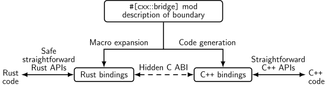
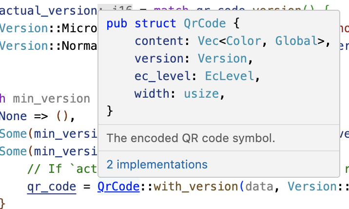

Welcome to Comprehensive Rust 🦀


This is a free Rust course developed by the Android team at Google. The course covers the full spectrum of Rust, from basic syntax to advanced topics like generics and error handling.
The latest version of the course can be found at https://google.github.io/comprehensive-rust/. If you are reading somewhere else, please check there for updates.
The course is available in other languages. Select your preferred language in the top right corner of the page or check the Translations page for a list of all available translations.
The course is also available as a PDF.
The goal of the course is to teach you Rust. We assume you don’t know anything about Rust and hope to:
- Give you a comprehensive understanding of the Rust syntax and language.
- Enable you to modify existing programs and write new programs in Rust.
- Show you common Rust idioms.
We call the first four course days Rust Fundamentals.
Building on this, you’re invited to dive into one or more specialized topics:
- Android: a half-day course on using Rust for Android platform development (AOSP). This includes interoperability with C, C++, and Java.
- Chromium: a half-day course on using Rust in Chromium-based browsers. This includes interoperability with C++ and how to include third-party crates in Chromium.
- Bare-metal: a whole-day class on using Rust for bare-metal (embedded) development. Both microcontrollers and application processors are covered.
- Concurrency: a whole-day class on concurrency in Rust. We cover both classical concurrency (preemptively scheduling using threads and mutexes) and async/await concurrency (cooperative multitasking using futures).
Non-Goals
Rust is a large language and we won’t be able to cover all of it in a few days. Some non-goals of this course are:
- Learning how to develop macros: please see the Rust Book and Rust by Example instead.
Assumptions
The course assumes that you already know how to program. Rust is a statically-typed language and we will sometimes make comparisons with C and C++ to better explain or contrast the Rust approach.
If you know how to program in a dynamically-typed language such as Python or JavaScript, then you will be able to follow along just fine too.
This is an example of a speaker note. We will use these to add additional information to the slides. This could be key points which the instructor should cover as well as answers to typical questions which come up in class.
Running the Course
This page is for the course instructor.
Here is a bit of background information about how we’ve been running the course internally at Google.
We typically run classes from 9:00 am to 4:00 pm, with a 1 hour lunch break in the middle. This leaves 3 hours for the morning class and 3 hours for the afternoon class. Both sessions contain multiple breaks and time for students to work on exercises.
Before you run the course, you will want to:
-
Make yourself familiar with the course material. We’ve included speaker notes to help highlight the key points (please help us by contributing more speaker notes!). When presenting, you should make sure to open the speaker notes in a popup (click the link with a little arrow next to “Speaker Notes”). This way you have a clean screen to present to the class.
-
Decide on the dates. Since the course takes four days, we recommend that you schedule the days over two weeks. Course participants have said that they find it helpful to have a gap in the course since it helps them process all the information we give them.
-
Find a room large enough for your in-person participants. We recommend a class size of 15-25 people. That’s small enough that people are comfortable asking questions — it’s also small enough that one instructor will have time to answer the questions. Make sure the room has desks for yourself and for the students: you will all need to be able to sit and work with your laptops. In particular, you will be doing significant live-coding as an instructor, so a lectern won’t be very helpful for you.
-
On the day of your course, show up to the room a little early to set things up. We recommend presenting directly using
mdbook serverunning on your laptop (see the installation instructions). This ensures optimal performance with no lag as you change pages. Using your laptop will also allow you to fix typos as you or the course participants spot them. -
Let people solve the exercises by themselves or in small groups. We typically spend 30-45 minutes on exercises in the morning and in the afternoon (including time to review the solutions). Make sure to ask people if they’re stuck or if there is anything you can help with. When you see that several people have the same problem, call it out to the class and offer a solution, e.g., by showing people where to find the relevant information in the standard library.
That is all, good luck running the course! We hope it will be as much fun for you as it has been for us!
Please provide feedback afterwards so that we can keep improving the course. We would love to hear what worked well for you and what can be made better. Your students are also very welcome to send us feedback!
Instructor Preparation
- Go through all the material: Before teaching the course, make sure you have gone through all the slides and exercises yourself. This will help you anticipate questions and potential difficulties.
- Prepare for live coding: The course involves significant live coding. Practice the examples and exercises beforehand to ensure you can type them out smoothly during the class. Have the solutions ready in case you get stuck.
- Familiarize yourself with
mdbook: The course is presented usingmdbook. Knowing how to navigate, search, and use its features will make the presentation smoother. - Slice size helper: Press Ctrl + Alt + B to toggle a visual guide showing the amount of space available when presenting. Expect any content outside of the red box to be hidden initially. Use this as a guide when editing slides. You can also enable it via this link.
Creating a Good Learning Environment
- Encourage questions: Reiterate that there are no “stupid” questions. A welcoming atmosphere for questions is crucial for learning.
- Manage time effectively: Keep an eye on the schedule, but be flexible. It’s more important that students understand the concepts than sticking rigidly to the timeline.
- Facilitate group work: During exercises, encourage students to work together. This can help them learn from each other and feel less stuck.
Course Structure
This page is for the course instructor.
Rust Fundamentals
The first four days make up Rust Fundamentals. The days are fast-paced and we cover a broad range of topics!
Course schedule:
- Day 1 Morning (2 hours and 10 minutes, including breaks)
| Segment | Duration |
|---|---|
| Welcome | 5 minutes |
| Hello, World | 15 minutes |
| Types and Values | 40 minutes |
| Control Flow Basics | 45 minutes |
- Day 1 Afternoon (2 hours and 45 minutes, including breaks)
| Segment | Duration |
|---|---|
| Tuples and Arrays | 35 minutes |
| References | 55 minutes |
| User-Defined Types | 1 hour |
- Day 2 Morning (2 hours and 50 minutes, including breaks)
| Segment | Duration |
|---|---|
| Welcome | 3 minutes |
| Pattern Matching | 50 minutes |
| Methods and Traits | 45 minutes |
| Generics | 50 minutes |
- Day 2 Afternoon (2 hours and 50 minutes, including breaks)
| Segment | Duration |
|---|---|
| Closures | 30 minutes |
| Standard Library Types | 1 hour |
| Standard Library Traits | 1 hour |
- Day 3 Morning (2 hours and 20 minutes, including breaks)
| Segment | Duration |
|---|---|
| Welcome | 3 minutes |
| Memory Management | 1 hour |
| Smart Pointers | 55 minutes |
- Day 3 Afternoon (2 hours and 30 minutes, including breaks)
| Segment | Duration |
|---|---|
| Borrowing | 1 hour and 15 minutes |
| Lifetimes | 1 hour and 5 minutes |
- Day 4 Morning (2 hours and 50 minutes, including breaks)
| Segment | Duration |
|---|---|
| Welcome | 3 minutes |
| Iterators | 55 minutes |
| Modules | 45 minutes |
| Testing | 45 minutes |
- Day 4 Afternoon (2 hours and 20 minutes, including breaks)
| Segment | Duration |
|---|---|
| Error Handling | 55 minutes |
| Unsafe Rust | 1 hour and 15 minutes |
Deep Dives
In addition to the 4-day class on Rust Fundamentals, we cover some more specialized topics:
Rust in Android
The Rust in Android deep dive is a half-day course on using Rust for Android platform development. This includes interoperability with C, C++, and Java.
You will need an AOSP checkout. Make a checkout of the
course repository on the same machine and move the src/android/ directory
into the root of your AOSP checkout. This will ensure that the Android build
system sees the Android.bp files in src/android/.
Ensure that adb sync works with your emulator or real device and pre-build all
Android examples using src/android/build_all.sh. Read the script to see the
commands it runs and make sure they work when you run them by hand.
Rust in Chromium
The Rust in Chromium deep dive is a half-day course on using
Rust as part of the Chromium browser. It includes using Rust in Chromium’s gn
build system, bringing in third-party libraries (“crates”) and C++
interoperability.
You will need to be able to build Chromium — a debug, component build is recommended for speed but any build will work. Ensure that you can run the Chromium browser that you’ve built.
Bare-Metal Rust
The Bare-Metal Rust deep dive is a full day class on using Rust for bare-metal (embedded) development. Both microcontrollers and application processors are covered.
For the microcontroller part, you will need to buy the BBC micro:bit v2 development board ahead of time. Everybody will need to install a number of packages as described on the welcome page.
Concurrency in Rust
The Concurrency in Rust deep dive is a full day
class on classical as well as async/await concurrency.
You will need a fresh crate set up and the dependencies downloaded and ready to
go. You can then copy/paste the examples into src/main.rs to experiment with
them:
cargo init concurrency
cd concurrency
cargo add tokio --features full
cargo run
Course schedule:
- Morning (3 hours and 20 minutes, including breaks)
| Segment | Duration |
|---|---|
| Threads | 30 minutes |
| Channels | 20 minutes |
| Send and Sync | 15 minutes |
| Shared State | 30 minutes |
| Exercises | 1 hour and 10 minutes |
- Afternoon (3 hours and 30 minutes, including breaks)
| Segment | Duration |
|---|---|
| Async Basics | 40 minutes |
| Channels and Control Flow | 20 minutes |
| Pitfalls | 55 minutes |
| Exercises | 1 hour and 10 minutes |
Idiomatic Rust
The Idiomatic Rust deep dive is a 2-day class on Rust idioms and patterns.
You should be familiar with the material in Rust Fundamentals before starting this course.
Course schedule:
- Morning (14 hours and 10 minutes, including breaks)
| Segment | Duration |
|---|---|
| Foundations of API Design | 3 hours and 15 minutes |
| Leveraging the Type System | 7 hours and 30 minutes |
| Polymorphism | 3 hours and 5 minutes |
Unsafe (Work in Progress)
The Unsafe deep dive is a two-day class on the
unsafe Rust language. It covers the fundamentals of Rust’s safety guarantees,
the motivation for unsafe, review process for unsafe code, FFI basics, and
building data structures that the borrow checker would normally reject.
not found - {{%course outline Unsafe}}
Format
The course is meant to be very interactive and we recommend letting the questions drive the exploration of Rust!
Keyboard Shortcuts
There are several useful keyboard shortcuts in mdBook:
- Arrow-Left: Navigate to the previous page.
- Arrow-Right: Navigate to the next page.
- Ctrl + Enter: Execute the code sample that has focus.
- s: Activate the search bar.
- Mention that these shortcuts are standard for
mdbookand can be useful when navigating anymdbook-generated site. - You can demonstrate each shortcut live to the students.
- The s key for search is particularly useful for quickly finding topics that have been discussed earlier.
- Ctrl + Enter will be super important for you since you’ll do a lot of live coding.
Translations
The course has been translated into other languages by a set of wonderful volunteers:
- Brazilian Portuguese by @rastringer, @hugojacob, @joaovicmendes, and @henrif75.
- Chinese (Simplified) by @suetfei, @wnghl, @anlunx, @kongy, @noahdragon, @superwhd, @SketchK, and @nodmp.
- Chinese (Traditional) by @hueich, @victorhsieh, @mingyc, @kuanhungchen, and @johnathan79717.
- Farsi by @DannyRavi, @javad-jafari, @Alix1383, @moaminsharifi , @hamidrezakp and @mehrad77.
- Japanese by @CoinEZ-JPN, @momotaro1105, @HidenoriKobayashi and @kantasv.
- Korean by @keispace, @jiyongp, @jooyunghan, and @namhyung.
- Spanish by @deavid.
- Ukrainian by @git-user-cpp, @yaremam and @reta.
Use the language picker in the top-right corner to switch between languages.
Incomplete Translations
There is a large number of in-progress translations. We link to the most recently updated translations:
- Arabic by @younies
- Bengali by @raselmandol.
- French by @KookaS, @vcaen and @AdrienBaudemont.
- German by @Throvn and @ronaldfw.
- Italian by @henrythebuilder and @detro.
The full list of translations with their current status is also available either as of their last update or synced to the latest version of the course.
If you want to help with this effort, please see our instructions for how to get going. Translations are coordinated on the issue tracker.
- This is a good opportunity to thank the volunteers who have contributed to the translations.
- If there are students in the class who speak any of the listed languages, you can encourage them to check out the translated versions and even contribute if they find any issues.
- Highlight that the project is open source and contributions are welcome, not just for translations but for the course content itself.
Using Cargo
When you start reading about Rust, you will soon meet Cargo, the standard tool used in the Rust ecosystem to build and run Rust applications. Here we want to give a brief overview of what Cargo is and how it fits into the wider ecosystem and how it fits into this training.
Installation
Please follow the instructions on https://rustup.rs/.
This will give you the Cargo build tool (cargo) and the Rust compiler
(rustc). You will also get rustup, a command line utility that you can use
to install different compiler versions.
After installing Rust, you should configure your editor or IDE to work with Rust. Most editors do this by talking to rust-analyzer, which provides auto-completion and jump-to-definition functionality for VS Code, Emacs, Vim/Neovim, and many others. There is also a different IDE available called RustRover.
-
On Debian/Ubuntu, you can install
rustupviaapt:sudo apt install rustup -
On macOS, you can use Homebrew to install Rust, but this may provide an outdated version. Therefore, it is recommended to install Rust from the official site.
The Rust Ecosystem
The Rust ecosystem consists of a number of tools, of which the main ones are:
-
rustc: the Rust compiler that turns.rsfiles into binaries and other intermediate formats. -
cargo: the Rust dependency manager and build tool. Cargo knows how to download dependencies, usually hosted on https://crates.io, and it will pass them torustcwhen building your project. Cargo also comes with a built-in test runner which is used to execute unit tests. -
rustup: the Rust toolchain installer and updater. This tool is used to install and updaterustcandcargowhen new versions of Rust are released. In addition,rustupcan also download documentation for the standard library. You can have multiple versions of Rust installed at once andrustupwill let you switch between them as needed.
Key points:
-
Rust has a rapid release schedule with a new release coming out every six weeks. New releases maintain backwards compatibility with old releases — plus they enable new functionality.
-
There are three release channels: “stable”, “beta”, and “nightly”.
-
New features are being tested on “nightly”, “beta” is what becomes “stable” every six weeks.
-
Dependencies can also be resolved from alternative registries, git, folders, and more.
-
Rust also has editions: the current edition is Rust 2024. Previous editions were Rust 2015, Rust 2018 and Rust 2021.
-
The editions are allowed to make backwards incompatible changes to the language.
-
To prevent breaking code, editions are opt-in: you select the edition for your crate via the
Cargo.tomlfile. -
To avoid splitting the ecosystem, Rust compilers can mix code written for different editions.
-
Mention that it is quite rare to ever use the compiler directly not through
cargo(most users never do). -
It might be worth alluding that Cargo itself is an extremely powerful and comprehensive tool. It is capable of many advanced features including but not limited to:
- Project/package structure
- workspaces
- Dev Dependencies and Runtime Dependency management/caching
- build scripting
- global installation
- It is also extensible with sub command plugins as well (such as cargo clippy).
-
Read more from the official Cargo Book
-
Code Samples in This Training
For this training, we will mostly explore the Rust language through examples which can be executed through your browser. This makes the setup much easier and ensures a consistent experience for everyone.
Installing Cargo is still encouraged: it will make it easier for you to do the exercises. On the last day, we will do a larger exercise that shows you how to work with dependencies and for that you need Cargo.
The code blocks in this course are fully interactive:
// Copyright 2022 Google LLC
// SPDX-License-Identifier: Apache-2.0
fn main() {
println!("Edit me!");
}You can use Ctrl + Enter to execute the code when focus is in the text box.
Most code samples are editable like shown above. A few code samples are not editable for various reasons:
-
The embedded playgrounds cannot execute unit tests. Copy-paste the code and open it in the real Playground to demonstrate unit tests.
-
The embedded playgrounds lose their state the moment you navigate away from the page! This is the reason that the students should solve the exercises using a local Rust installation or via the Playground.
Running Code Locally with Cargo
If you want to experiment with the code on your own system, then you will need
to first install Rust. Do this by following the
instructions in the Rust Book. This should give you a working rustc and
cargo. At the time of writing, the latest stable Rust release has these
version numbers:
% rustc --version
rustc 1.69.0 (84c898d65 2023-04-16)
% cargo --version
cargo 1.69.0 (6e9a83356 2023-04-12)
You can use any later version too since Rust maintains backwards compatibility.
With this in place, follow these steps to build a Rust binary from one of the examples in this training:
-
Click the “Copy to clipboard” button on the example you want to copy.
-
Use
cargo new exerciseto create a newexercise/directory for your code:$ cargo new exercise Created binary (application) `exercise` package -
Navigate into
exercise/and usecargo runto build and run your binary:$ cd exercise $ cargo run Compiling exercise v0.1.0 (/home/mgeisler/tmp/exercise) Finished dev [unoptimized + debuginfo] target(s) in 0.75s Running `target/debug/exercise` Hello, world! -
Replace the boilerplate code in
src/main.rswith your own code. For example, using the example on the previous page, makesrc/main.rslook like// Copyright 2022 Google LLC // SPDX-License-Identifier: Apache-2.0 fn main() { println!("Edit me!"); } -
Use
cargo runto build and run your updated binary:$ cargo run Compiling exercise v0.1.0 (/home/mgeisler/tmp/exercise) Finished dev [unoptimized + debuginfo] target(s) in 0.24s Running `target/debug/exercise` Edit me! -
Use
cargo checkto quickly check your project for errors, usecargo buildto compile it without running it. You will find the output intarget/debug/for a normal debug build. Usecargo build --releaseto produce an optimized release build intarget/release/. -
You can add dependencies for your project by editing
Cargo.toml. When you runcargocommands, it will automatically download and compile missing dependencies for you.
Try to encourage the class participants to install Cargo and use a local editor. It will make their life easier since they will have a normal development environment.
Welcome to Day 1
This is the first day of Rust Fundamentals. We will cover a broad range of topics today:
- Basic Rust syntax: variables, scalar and compound types, enums, structs, references, functions, and methods.
- Types and type inference.
- Control flow constructs: loops, conditionals, and so on.
- User-defined types: structs and enums.
Schedule
Including 10 minute breaks, this session should take about 2 hours and 10 minutes. It contains:
| Segment | Duration |
|---|---|
| Welcome | 5 minutes |
| Hello, World | 15 minutes |
| Types and Values | 40 minutes |
| Control Flow Basics | 45 minutes |
Please remind the students that:
- They should ask questions when they get them, don’t save them to the end.
- The class is meant to be interactive and discussions are very much encouraged!
- As an instructor, you should try to keep the discussions relevant, i.e., keep the discussions related to how Rust does things vs. some other language. It can be hard to find the right balance, but err on the side of allowing discussions since they engage people much more than one-way communication.
- The questions will likely mean that we talk about things ahead of the slides.
- This is perfectly okay! Repetition is an important part of learning. Remember that the slides are just a support and you are free to skip them as you like.
The idea for the first day is to show the “basic” things in Rust that should have immediate parallels in other languages. The more advanced parts of Rust come on the subsequent days.
If you’re teaching this in a classroom, this is a good place to go over the schedule. Note that there is an exercise at the end of each segment, followed by a break. Plan to cover the exercise solution after the break. The times listed here are a suggestion in order to keep the course on schedule. Feel free to be flexible and adjust as necessary!
Hello, World
This segment should take about 15 minutes. It contains:
| Slide | Duration |
|---|---|
| What is Rust? | 10 minutes |
| Benefits of Rust | 3 minutes |
| Playground | 2 minutes |
What is Rust?
Rust is a new programming language that had its 1.0 release in 2015:
- Rust is a statically compiled language in a similar role as C++
rustcuses LLVM as its backend.
- Rust supports many
platforms and architectures:
- x86, ARM, WebAssembly, …
- Linux, Mac, Windows, …
- Rust is used for a wide range of devices:
- firmware and boot loaders,
- smart displays,
- mobile phones,
- desktops,
- servers.
Rust fits in the same area as C++:
- High flexibility.
- High level of control.
- Can be scaled down to very constrained devices such as microcontrollers.
- Has no runtime or garbage collection.
- Focuses on reliability and safety without sacrificing performance.
Benefits of Rust
Some unique selling points of Rust:
-
Compile time memory safety - whole classes of memory bugs are prevented at compile time
- No uninitialized variables.
- No double-frees.
- No use-after-free.
- No
NULLpointers. - No forgotten locked mutexes.
- No data races between threads.
- No iterator invalidation.
-
No undefined runtime behavior - what a Rust statement does is never left unspecified
- Array access is bounds checked.
- Integer overflow is defined (panic or wrap-around).
-
Modern language features - as expressive and ergonomic as higher-level languages
- Enums and pattern matching.
- Generics.
- No overhead FFI.
- Zero-cost abstractions.
- Great compiler errors.
- Built-in dependency manager.
- Built-in support for testing.
- Excellent Language Server Protocol support.
Do not spend much time here. All of these points will be covered in more depth later.
Make sure to ask the class which languages they have experience with. Depending on the answer you can highlight different features of Rust:
-
Experience with C or C++: Rust eliminates a whole class of runtime errors via the borrow checker. You get performance like in C and C++, but you don’t have the memory unsafety issues. In addition, you get a modern language with constructs like pattern matching and built-in dependency management.
-
Experience with Java, Go, Python, JavaScript…: You get the same memory safety as in those languages, plus a similar high-level language feeling. In addition you get fast and predictable performance like C and C++ (no garbage collector) as well as access to low-level hardware (should you need it).
Playground
The Rust Playground provides an easy way to run short Rust programs, and is the basis for the examples and exercises in this course. Try running the “hello-world” program it starts with. It comes with a few handy features:
-
Under “Tools”, use the
rustfmtoption to format your code in the “standard” way. -
Rust has two main “profiles” for generating code: Debug (extra runtime checks, less optimization) and Release (fewer runtime checks, lots of optimization). These are accessible under “Debug” at the top.
-
If you’re interested, use “ASM” under “…” to see the generated assembly code.
As students head into the break, encourage them to open up the playground and experiment a little. Encourage them to keep the tab open and try things out during the rest of the course. This is particularly helpful for advanced students who want to know more about Rust’s optimizations or generated assembly.
Types and Values
This segment should take about 40 minutes. It contains:
| Slide | Duration |
|---|---|
| Hello, World | 5 minutes |
| Variables | 5 minutes |
| Values | 5 minutes |
| Arithmetic | 3 minutes |
| Type Inference | 3 minutes |
| Exercise: Fibonacci | 15 minutes |
Hello, World
Let us jump into the simplest possible Rust program, a classic Hello World program:
// Copyright 2024 Google LLC
// SPDX-License-Identifier: Apache-2.0
fn main() {
println!("Hello 🌍!");
}What you see:
- Functions are introduced with
fn. - The
mainfunction is the entry point of the program. - Blocks are delimited by curly braces like in C and C++.
- Statements end with
;. printlnis a macro, indicated by the!in the invocation.- Rust strings are UTF-8 encoded and can contain any Unicode character.
This slide tries to make the students comfortable with Rust code. They will see a ton of it over the next four days so we start small with something familiar.
Key points:
-
Rust is very much like other languages in the C/C++/Java tradition. It is imperative and it doesn’t try to reinvent things unless absolutely necessary.
-
Rust is modern with full support for Unicode.
-
Rust uses macros for situations where you want to have a variable number of arguments (no function overloading).
-
println!is a macro because it needs to handle an arbitrary number of arguments based on the format string, which can’t be done with a regular function. Otherwise it can be treated like a regular function. -
Rust is multi-paradigm. For example, it has powerful object-oriented programming features, and, while it is not a functional language, it includes a range of functional concepts.
Variables
Rust provides type safety via static typing. Variable bindings are made with
let:
// Copyright 2023 Google LLC
// SPDX-License-Identifier: Apache-2.0
fn main() {
let x: i32 = 10;
println!("x: {x}");
// x = 20;
// println!("x: {x}");
}-
Uncomment the
x = 20to demonstrate that variables are immutable by default. Add themutkeyword to allow changes. -
Warnings are enabled for this slide, such as for unused variables or unnecessary
mut. These are omitted in most slides to avoid distracting warnings. Try removing the mutation but leaving themutkeyword in place. -
The
i32here is the type of the variable. This must be known at compile time, but type inference (covered later) allows the programmer to omit it in many cases.
Values
Here are some basic built-in types, and the syntax for literal values of each type.
| Types | Literals | |
|---|---|---|
| Signed integers | i8, i16, i32, i64, i128, isize | -10, 0, 1_000, 123_i64 |
| Unsigned integers | u8, u16, u32, u64, u128, usize | 0, 123, 10_u16 |
| Floating point numbers | f32, f64 | 3.14, -10.0e20, 2_f32 |
| Unicode scalar values | char | 'a', 'α', '∞' |
| Booleans | bool | true, false |
The types have widths as follows:
iN,uN, andfNare N bits wide,isizeandusizeare the width of a pointer,charis 32 bits wide,boolis 8 bits wide.
There are a few syntaxes that are not shown above:
- All underscores in numbers can be left out, they are for legibility only. So
1_000can be written as1000(or10_00), and123_i64can be written as123i64.
Arithmetic
// Copyright 2023 Google LLC
// SPDX-License-Identifier: Apache-2.0
fn interproduct(a: i32, b: i32, c: i32) -> i32 {
return a * b + b * c + c * a;
}
fn main() {
println!("result: {}", interproduct(120, 100, 248));
}This is the first time we’ve seen a function other than main, but the meaning
should be clear: it takes three integers, and returns an integer. Functions will
be covered in more detail later.
Arithmetic is very similar to other languages, with similar precedence.
What about integer overflow? In C and C++ overflow of signed integers is actually undefined, and might do unknown things at runtime. In Rust, it’s defined.
Change the i32’s to i16 to see an integer overflow, which panics (checked)
in a debug build and wraps in a release build. There are other options, such as
overflowing, saturating, and carrying. These are accessed with method syntax,
e.g., (a * b).saturating_add(b * c).saturating_add(c * a).
In fact, the compiler will detect overflow of constant expressions, which is why the example requires a separate function.
Type Inference
Rust will look at how the variable is used to determine the type:
// Copyright 2023 Google LLC
// SPDX-License-Identifier: Apache-2.0
fn takes_u32(x: u32) {
println!("u32: {x}");
}
fn takes_i8(y: i8) {
println!("i8: {y}");
}
fn main() {
let x = 10;
let y = 20;
takes_u32(x);
takes_i8(y);
// takes_u32(y);
}This slide demonstrates how the Rust compiler infers types based on constraints given by variable declarations and usages.
It is very important to emphasize that variables declared like this are not of some sort of dynamic “any type” that can hold any data. The machine code generated by such declaration is identical to the explicit declaration of a type. The compiler does the job for us and helps us write more concise code.
When nothing constrains the type of an integer literal, Rust defaults to i32.
This sometimes appears as {integer} in error messages. Similarly,
floating-point literals default to f64.
// Copyright 2023 Google LLC
// SPDX-License-Identifier: Apache-2.0
fn main() {
let x = 3.14;
let y = 20;
assert_eq!(x, y);
// ERROR: no implementation for `{float} == {integer}`
}Exercise: Fibonacci
The Fibonacci sequence begins with [0, 1]. For n > 1, the next number is the
sum of the previous two.
Write a function fib(n) that calculates the nth Fibonacci number. When will
this function panic?
// Copyright 2023 Google LLC
// SPDX-License-Identifier: Apache-2.0
fn fib(n: u32) -> u32 {
if n < 2 {
// The base case.
return todo!("Implement this");
} else {
// The recursive case.
return todo!("Implement this");
}
}
fn main() {
let n = 20;
println!("fib({n}) = {}", fib(n));
}- This exercise is a classic introduction to recursion.
- Encourage students to think about the base cases and the recursive step.
- The question “When will this function panic?” is a hint to think about integer overflow. The Fibonacci sequence grows quickly!
- Students might come up with an iterative solution as well, which is a great opportunity to discuss the trade-offs between recursion and iteration (e.g., performance, stack overflow for deep recursion).
Solution
// Copyright 2023 Google LLC
// SPDX-License-Identifier: Apache-2.0
fn fib(n: u32) -> u32 {
if n < 2 {
return n;
} else {
return fib(n - 1) + fib(n - 2);
}
}
fn main() {
let n = 20;
println!("fib({n}) = {}", fib(n));
}We use the return syntax here to return values from the function. Later in the
course, we will see that the last expression in a block is automatically
returned, allowing us to omit the return keyword for a more concise style.
The if condition n < 2 does not need parentheses, which is standard Rust
style.
Panic
The exercise asks when this function will panic. The Fibonacci sequence grows
very rapidly. With u32, the calculated values will overflow the 32-bit integer
limit (4,294,967,295) when n reaches 48.
In Rust, integer arithmetic checks for overflow in debug mode (which is the
default when using cargo run). If an overflow occurs, the program will panic
(crash with an error message). In release mode (cargo run --release),
overflow checks are disabled by default, and the number will wrap around
(modular arithmetic), producing incorrect results.
- Walk through the solution step-by-step.
- Explain the recursive calls and how they lead to the final result.
- Discuss the integer overflow issue. With
u32, the function will panic fornaround 47. You can demonstrate this by changing the input tomain. - Show an iterative solution as an alternative and compare its performance and memory usage with the recursive one. An iterative solution will be much more efficient.
More to Explore
For a more advanced discussion, you can introduce memoization or dynamic programming to optimize the recursive Fibonacci calculation, although this is beyond the scope of the current topic.
Control Flow Basics
This segment should take about 45 minutes. It contains:
| Slide | Duration |
|---|---|
| Blocks and Scopes | 5 minutes |
| if Expressions | 4 minutes |
| match Expressions | 5 minutes |
| Loops | 5 minutes |
| break and continue | 4 minutes |
| Functions | 3 minutes |
| Macros | 2 minutes |
| Exercise: Collatz Sequence | 15 minutes |
-
We will now cover the many kinds of flow control found in Rust.
-
Most of this will be very familiar to what you have seen in other programming languages.
Blocks and Scopes
- A block in Rust contains a sequence of expressions, enclosed by braces
{}. - The final expression of a block determines the value and type of the whole block.
// Copyright 2023 Google LLC
// SPDX-License-Identifier: Apache-2.0
fn main() {
let z = 13;
let x = {
let y = 10;
dbg!(y);
z - y
};
dbg!(x);
// dbg!(y);
}If the last expression ends with ;, then the resulting value and type is ().
A variable’s scope is limited to the enclosing block.
-
You can explain that dbg! is a Rust macro that prints and returns the value of a given expression for quick and dirty debugging.
-
You can show how the value of the block changes by changing the last line in the block. For instance, adding/removing a semicolon or using a
return. -
Demonstrate that attempting to access
youtside of its scope won’t compile. -
Values are effectively “deallocated” when they go out of their scope, even if their data on the stack is still there.
if expressions
You use
if expressions
exactly like if statements in other languages:
// Copyright 2024 Google LLC
// SPDX-License-Identifier: Apache-2.0
fn main() {
let x = 10;
if x == 0 {
println!("zero!");
} else if x < 100 {
println!("biggish");
} else {
println!("huge");
}
}In addition, you can use if as an expression. The last expression of each
block becomes the value of the if expression:
// Copyright 2024 Google LLC
// SPDX-License-Identifier: Apache-2.0
fn main() {
let x = 10;
let size = if x < 20 { "small" } else { "large" };
println!("number size: {}", size);
}Because if is an expression and must have a particular type, both of its
branch blocks must have the same type. Show what happens if you add ; after
"small" in the second example.
An if expression should be used in the same way as the other expressions. For
example, when it is used in a let statement, the statement must be terminated
with a ; as well. Remove the ; before println! to see the compiler error.
match Expressions
match can be used to check a value against one or more options:
// Copyright 2024 Google LLC
// SPDX-License-Identifier: Apache-2.0
fn main() {
let val = 1;
match val {
1 => println!("one"),
10 => println!("ten"),
100 => println!("one hundred"),
_ => {
println!("something else");
}
}
}Like if expressions, match can also return a value;
// Copyright 2024 Google LLC
// SPDX-License-Identifier: Apache-2.0
fn main() {
let flag = true;
let val = match flag {
true => 1,
false => 0,
};
println!("The value of {flag} is {val}");
}-
matcharms are evaluated from top to bottom, and the first one that matches has its corresponding body executed. -
There is no fall-through between cases the way that
switchworks in other languages. -
The body of a
matcharm can be a single expression or a block. Technically this is the same thing, since blocks are also expressions, but students may not fully understand that symmetry at this point. -
matchexpressions need to be exhaustive, meaning they either need to cover all possible values or they need to have a default case such as_. Exhaustiveness is easiest to demonstrate with enums, but enums haven’t been introduced yet. Instead we demonstrate matching on abool, which is the simplest primitive type. -
This slide introduces
matchwithout talking about pattern matching, giving students a chance to get familiar with the syntax without front-loading too much information. We’ll be talking about pattern matching in more detail tomorrow, so try not to go into too much detail here.
More to Explore
-
To further motivate the usage of
match, you can compare the examples to their equivalents written withif. In the second case, matching on abool, anif {} else {}block is pretty similar. But in the first example that checks multiple cases, amatchexpression can be more concise thanif {} else if {} else if {} else. -
matchalso supports match guards, which allow you to add an arbitrary logical condition that will get evaluated to determine if the match arm should be taken. However talking about match guards requires explaining about pattern matching, which we’re trying to avoid on this slide.
Loops
There are three looping keywords in Rust: while, loop, and for:
while
The
while keyword
works much like in other languages, executing the loop body as long as the
condition is true.
// Copyright 2023 Google LLC
// SPDX-License-Identifier: Apache-2.0
fn main() {
let mut x = 200;
while x >= 10 {
x = x / 2;
}
dbg!(x);
}for
The for loop iterates over
ranges of values or the items in a collection:
// Copyright 2024 Google LLC
// SPDX-License-Identifier: Apache-2.0
fn main() {
for x in 1..5 {
dbg!(x);
}
for elem in [2, 4, 8, 16, 32] {
dbg!(elem);
}
}- Under the hood
forloops use a concept called “iterators” to handle iterating over different kinds of ranges/collections. Iterators will be discussed in more detail later. - Note that the first
forloop only iterates to4. Show the1..=5syntax for an inclusive range.
loop
The loop statement just
loops forever, until a break.
// Copyright 2024 Google LLC
// SPDX-License-Identifier: Apache-2.0
fn main() {
let mut i = 0;
loop {
i += 1;
dbg!(i);
if i > 100 {
break;
}
}
}- The
loopstatement works like awhile trueloop. Use it for things like servers that will serve connections forever.
break and continue
If you want to immediately start the next iteration use
continue.
If you want to exit any kind of loop early, use
break.
With loop, this can take an optional expression that becomes the value of the
loop expression.
// Copyright 2023 Google LLC
// SPDX-License-Identifier: Apache-2.0
fn main() {
let mut i = 0;
loop {
i += 1;
if i > 5 {
break;
}
if i % 2 == 0 {
continue;
}
dbg!(i);
}
}Note that loop is the only looping construct that can return a non-trivial
value. This is because it’s guaranteed to only return at a break statement
(unlike while and for loops, which can also return when the condition
fails).
Labels
Both continue and break can optionally take a label argument that is used to
break out of nested loops:
// Copyright 2024 Google LLC
// SPDX-License-Identifier: Apache-2.0
fn main() {
let s = [[5, 6, 7], [8, 9, 10], [21, 15, 32]];
let mut elements_searched = 0;
let target_value = 10;
'outer: for i in 0..=2 {
for j in 0..=2 {
elements_searched += 1;
if s[i][j] == target_value {
break 'outer;
}
}
}
dbg!(elements_searched);
}- Labeled break also works on arbitrary blocks, e.g.
#![allow(unused)] fn main() { // Copyright 2024 Google LLC // SPDX-License-Identifier: Apache-2.0 'label: { break 'label; println!("This line gets skipped"); } }
Functions
// Copyright 2023 Google LLC
// SPDX-License-Identifier: Apache-2.0
fn gcd(a: u32, b: u32) -> u32 {
if b > 0 { gcd(b, a % b) } else { a }
}
fn main() {
dbg!(gcd(143, 52));
}- Declaration parameters are followed by a type (the reverse of some programming languages), then a return type.
- The last expression in a function body (or any block) becomes the return
value. Simply omit the
;at the end of the expression. Thereturnkeyword can be used for early return, but the “bare value” form is idiomatic at the end of a function (refactorgcdto use areturn). - Some functions have no return value, and return the ‘unit type’,
(). The compiler will infer this if the return type is omitted. - Overloading is not supported – each function has a single implementation.
- Always takes a fixed number of parameters. Default arguments are not supported. Macros can be used to support variadic functions.
- Always takes a single set of parameter types. These types can be generic, which will be covered later.
Macros
Macros are expanded into Rust code during compilation, and can take a variable
number of arguments. They are distinguished by a ! at the end. The Rust
standard library includes an assortment of useful macros.
println!(format, ..)prints a line to standard output, applying formatting described instd::fmt.format!(format, ..)works just likeprintln!but returns the result as a string.dbg!(expression)logs the value of the expression and returns it.todo!()marks a bit of code as not-yet-implemented. If executed, it will panic.
// Copyright 2023 Google LLC
// SPDX-License-Identifier: Apache-2.0
fn factorial(n: u32) -> u32 {
let mut product = 1;
for i in 1..=n {
product *= dbg!(i);
}
product
}
fn fizzbuzz(n: u32) -> u32 {
todo!()
}
fn main() {
let n = 4;
println!("{n}! = {}", factorial(n));
}The takeaway from this section is that these common conveniences exist, and how to use them. Why they are defined as macros, and what they expand to, is not especially critical.
The course does not cover defining macros, but a later section will describe use of derive macros.
More To Explore
There are a number of other useful macros provided by the standard library. Some other examples you can share with students if they want to know more:
assert!and related macros can be used to add assertions to your code. These are used heavily in writing tests.unreachable!is used to mark a branch of control flow that should never be hit.eprintln!allows you to print to stderr.
Exercise: Collatz Sequence
The Collatz Sequence is defined as follows, for an arbitrary n1 greater than zero:
- If ni is 1, then the sequence terminates at ni.
- If ni is even, then ni+1 = ni / 2.
- If ni is odd, then ni+1 = 3 * ni + 1.
For example, beginning with n1 = 3:
- 3 is odd, so n2 = 3 * 3 + 1 = 10;
- 10 is even, so n3 = 10 / 2 = 5;
- 5 is odd, so n4 = 3 * 5 + 1 = 16;
- 16 is even, so n5 = 16 / 2 = 8;
- 8 is even, so n6 = 8 / 2 = 4;
- 4 is even, so n7 = 4 / 2 = 2;
- 2 is even, so n8 = 1; and
- the sequence terminates.
Write a function to calculate the length of the Collatz sequence for a given
initial n.
// Copyright 2023 Google LLC
// SPDX-License-Identifier: Apache-2.0
/// Determine the length of the collatz sequence beginning at `n`.
fn collatz_length(mut n: i32) -> u32 {
todo!("Implement this")
}
fn main() {
println!("Length: {}", collatz_length(11)); // should be 15
}Solution
// Copyright 2023 Google LLC
// SPDX-License-Identifier: Apache-2.0
/// Determine the length of the collatz sequence beginning at `n`.
fn collatz_length(mut n: i32) -> u32 {
let mut len = 1;
while n > 1 {
n = if n % 2 == 0 { n / 2 } else { 3 * n + 1 };
len += 1;
}
len
}
fn main() {
println!("Length: {}", collatz_length(11)); // should be 15
}This solution demonstrates a few key Rust features:
mutarguments: Thenargument is declared asmut n. This makes the local variablenmutable within the function scope. It does not affect the caller’s value, as integers areCopytypes passed by value.ifexpressions: Rust’sifis an expression, meaning it produces a value. We assign the result of theif/elseblock directly ton. This is more concise than writingn = ...inside each branch.- Implicit return: The function ends with
len(without a semicolon), which is automatically returned.
- Note that
nmust be strictly greater than 0 for the Collatz sequence to be valid. The function signature takesi32, but the problem description implies positive integers. A more robust implementation might useu32or return anOptionorResultto handle invalid inputs (0 or negative numbers), but panic or infinite loops are potential outcomes here ifn <= 0. - The overflow is a potential issue if
ngrows too large, similar to the Fibonacci exercise.
Welcome Back
Including 10 minute breaks, this session should take about 2 hours and 45 minutes. It contains:
| Segment | Duration |
|---|---|
| Tuples and Arrays | 35 minutes |
| References | 55 minutes |
| User-Defined Types | 1 hour |
Tuples and Arrays
This segment should take about 35 minutes. It contains:
| Slide | Duration |
|---|---|
| Arrays | 5 minutes |
| Tuples | 5 minutes |
| Array Iteration | 3 minutes |
| Patterns and Destructuring | 5 minutes |
| Exercise: Nested Arrays | 15 minutes |
- We have seen how primitive types work in Rust. Now it’s time for you to start building new composite types.
Arrays
// Copyright 2024 Google LLC
// SPDX-License-Identifier: Apache-2.0
fn main() {
let mut a: [i8; 5] = [5, 4, 3, 2, 1];
a[2] = 0;
println!("a: {a:?}");
}-
Arrays can also be initialized using the shorthand syntax, e.g.
[0; 1024]. This can be useful when you want to initialize all elements to the same value, or if you have a large array that would be hard to initialize manually. -
A value of the array type
[T; N]holdsN(a compile-time constant) elements of the same typeT. Note that the length of the array is part of its type, which means that[u8; 3]and[u8; 4]are considered two different types. Slices, which have a size determined at runtime, are covered later. -
Try accessing an out-of-bounds array element. The compiler is able to determine that the index is unsafe, and will not compile the code:
// Copyright 2024 Google LLC
// SPDX-License-Identifier: Apache-2.0
fn main() {
let mut a: [i8; 5] = [5, 4, 3, 2, 1];
a[6] = 0;
println!("a: {a:?}");
}- Array accesses are checked at runtime. Rust optimizes these checks away when possible; meaning if the compiler can prove the access is safe, it removes the runtime check for better performance. They can be avoided using unsafe Rust. The optimization is so good that it’s hard to give an example of runtime checks failing. The following code will compile but panic at runtime:
// Copyright 2024 Google LLC
// SPDX-License-Identifier: Apache-2.0
fn get_index() -> usize {
6
}
fn main() {
let mut a: [i8; 5] = [5, 4, 3, 2, 1];
a[get_index()] = 0;
println!("a: {a:?}");
}-
We can use literals to assign values to arrays.
-
Arrays are not heap-allocated. They are regular values with a fixed size known at compile time, meaning they go on the stack. This can be different from what students expect if they come from a garbage-collected language, where arrays may be heap allocated by default.
-
There is no way to remove elements from an array, nor add elements to an array. The length of an array is fixed at compile-time, and so its length cannot change at runtime.
Debug Printing
-
The
println!macro asks for the debug implementation with the?format parameter:{}gives the default output,{:?}gives the debug output. Types such as integers and strings implement the default output, but arrays only implement the debug output. This means that we must use debug output here. -
Adding
#, eg{a:#?}, invokes a “pretty printing” format, which can be easier to read.
Tuples
// Copyright 2024 Google LLC
// SPDX-License-Identifier: Apache-2.0
fn main() {
let t: (i8, bool) = (7, true);
dbg!(t.0);
dbg!(t.1);
}-
Like arrays, tuples have a fixed length.
-
Tuples group together values of different types into a compound type.
-
Fields of a tuple can be accessed by the period and the index of the value, e.g.
t.0,t.1. -
The empty tuple
()is referred to as the “unit type” and signifies absence of a return value, akin tovoidin other languages. -
Unlike arrays, tuples cannot be used in a
forloop. This is because aforloop requires all the elements to have the same type, which may not be the case for a tuple. -
There is no way to add or remove elements from a tuple. The number of elements and their types are fixed at compile time and cannot be changed at runtime.
Array Iteration
The for statement supports iterating over arrays (but not tuples).
// Copyright 2023 Google LLC
// SPDX-License-Identifier: Apache-2.0
fn main() {
let primes = [2, 3, 5, 7, 11, 13, 17, 19];
for prime in primes {
for i in 2..prime {
assert_ne!(prime % i, 0);
}
}
}This functionality uses the IntoIterator trait, but we haven’t covered that
yet.
The assert_ne! macro is new here. There are also assert_eq! and assert!
macros. These are always checked, while debug-only variants like debug_assert!
compile to nothing in release builds.
Patterns and Destructuring
Rust supports using pattern matching to destructure a larger value like a tuple into its constituent parts:
// Copyright 2023 Google LLC
// SPDX-License-Identifier: Apache-2.0
fn check_order(tuple: (i32, i32, i32)) -> bool {
let (left, middle, right) = tuple;
left < middle && middle < right
}
fn main() {
let tuple = (1, 5, 3);
println!(
"{tuple:?}: {}",
if check_order(tuple) { "ordered" } else { "unordered" }
);
}- The patterns used here are “irrefutable”, meaning that the compiler can
statically verify that the value on the right of
=has the same structure as the pattern. - A variable name is an irrefutable pattern that always matches any value, hence
why we can also use
letto declare a single variable. - Rust also supports using patterns in conditionals, allowing for equality comparison and destructuring to happen at the same time. This form of pattern matching will be discussed in more detail later.
- Edit the examples above to show the compiler error when the pattern doesn’t match the value being matched on.
Exercise: Nested Arrays
Arrays can contain other arrays:
// Copyright 2023 Google LLC
// SPDX-License-Identifier: Apache-2.0
let array = [[1, 2, 3], [4, 5, 6], [7, 8, 9]];What is the type of this variable?
Use an array such as the above to write a function transpose that transposes a
matrix (turns rows into columns):
Copy the code below to https://play.rust-lang.org/ and implement the function. This function only operates on 3×3 matrices.
// Copyright 2023 Google LLC
// SPDX-License-Identifier: Apache-2.0
fn transpose(matrix: [[i32; 3]; 3]) -> [[i32; 3]; 3] {
todo!()
}
fn main() {
let matrix = [
[101, 102, 103], // <-- the comment makes rustfmt add a newline
[201, 202, 203],
[301, 302, 303],
];
println!("Original:");
for row in matrix {
println!("{row:?}");
}
let transposed = transpose(matrix);
println!("\nTransposed:");
for row in transposed {
println!("{row:?}");
}
}Solution
// Copyright 2023 Google LLC
// SPDX-License-Identifier: Apache-2.0
fn transpose(matrix: [[i32; 3]; 3]) -> [[i32; 3]; 3] {
let mut result = [[0; 3]; 3];
for i in 0..3 {
for j in 0..3 {
result[j][i] = matrix[i][j];
}
}
result
}
fn main() {
let matrix = [
[101, 102, 103], // <-- the comment makes rustfmt add a newline
[201, 202, 203],
[301, 302, 303],
];
println!("Original:");
for row in matrix {
println!("{row:?}");
}
let transposed = transpose(matrix);
println!("\nTransposed:");
for row in transposed {
println!("{row:?}");
}
}- Array Types: The type
[[i32; 3]; 3]represents an array of size 3, where each element is itself an array of 3i32s. This is how multi-dimensional arrays are typically represented in Rust. - Initialization: We initialize
resultwith zeros ([[0; 3]; 3]) before filling it. Rust requires all variables to be initialized before use; there is no concept of “uninitialized memory” in safe Rust. - Copy Semantics: Arrays of
Copytypes (likei32) are themselvesCopy. When we passmatrixto the function, it is copied by value. Theresultvariable is a new, separate array. - Iteration: We use standard
forloops with ranges (0..3) to iterate over indices. Rust also has powerful iterators, which we will see later, but indexing is straightforward for this matrix transposition.
- Mention that
[i32; 3]is a distinct type from[i32; 4]. Array sizes are part of the type signature. - Ask students what would happen if they tried to return
matrixdirectly after modifying it (if they changed the signature tomut matrix). (Answer: It would work, but it would return a modified copy, leaving the original inmainunchanged).
References
This segment should take about 55 minutes. It contains:
| Slide | Duration |
|---|---|
| Shared References | 10 minutes |
| Exclusive References | 5 minutes |
| Slices | 10 minutes |
| Strings | 10 minutes |
| Reference Validity | 3 minutes |
| Exercise: Geometry | 20 minutes |
Shared References
A reference provides a way to access another value without taking ownership of the value, and is also called “borrowing”. Shared references are read-only, and the referenced data cannot change.
// Copyright 2023 Google LLC
// SPDX-License-Identifier: Apache-2.0
fn main() {
let a = 'A';
let b = 'B';
let mut r: &char = &a;
dbg!(r);
r = &b;
dbg!(r);
}A shared reference to a type T has type &T. A reference value is made with
the & operator. The * operator “dereferences” a reference, yielding its
value.
-
References can never be null in Rust, so null checking is not necessary.
-
A reference is said to “borrow” the value it refers to, and this is a good model for students not familiar with pointers: code can use the reference to access the value, but is still “owned” by the original variable. The course will get into more detail on ownership in day 3.
-
References are implemented as pointers, and a key advantage is that they can be much smaller than the thing they point to. Students familiar with C or C++ will recognize references as pointers. Later parts of the course will cover how Rust prevents the memory-safety bugs that come from using raw pointers.
-
Explicit referencing with
&is required, except when invoking methods, where Rust performs automatic referencing and dereferencing. -
Rust will auto-dereference in some cases, in particular when invoking methods (try
r.is_ascii()). There is no need for an->operator like in C++. -
In this example,
ris mutable so that it can be reassigned (r = &b). Note that this re-bindsr, so that it refers to something else. This is different from C++, where assignment to a reference changes the referenced value. -
A shared reference does not allow modifying the value it refers to, even if that value was mutable. Try
*r = 'X'. -
Rust is tracking the lifetimes of all references to ensure they live long enough. Dangling references cannot occur in safe Rust.
-
We will talk more about borrowing and preventing dangling references when we get to ownership.
Exclusive References
Exclusive references, also known as mutable references, allow changing the value
they refer to. They have type &mut T.
// Copyright 2023 Google LLC
// SPDX-License-Identifier: Apache-2.0
fn main() {
let mut point = (1, 2);
let x_coord = &mut point.0;
*x_coord = 20;
println!("point: {point:?}");
}Key points:
-
“Exclusive” means that only this reference can be used to access the value. No other references (shared or exclusive) can exist at the same time, and the referenced value cannot be accessed while the exclusive reference exists. Try making an
&point.0or changingpoint.0whilex_coordis alive. -
Be sure to note the difference between
let mut x_coord: &i32andlet x_coord: &mut i32. The first one is a shared reference that can be bound to different values, while the second is an exclusive reference to a mutable value.
Slices
A slice gives you a view into a larger collection:
// Copyright 2024 Google LLC
// SPDX-License-Identifier: Apache-2.0
fn main() {
let a: [i32; 6] = [10, 20, 30, 40, 50, 60];
println!("a: {a:?}");
let s: &[i32] = &a[2..4];
println!("s: {s:?}");
}- Slices borrow data from the sliced type.
-
We create a slice by borrowing
aand specifying the starting and ending indexes in brackets. -
If the slice starts at index 0, Rust’s range syntax allows us to drop the starting index, meaning that
&a[0..a.len()]and&a[..a.len()]are identical. -
The same is true for the last index, so
&a[2..a.len()]and&a[2..]are identical. -
To easily create a slice of the full array, we can therefore use
&a[..]. -
sis a reference to a slice ofi32s. Notice that the type ofs(&[i32]) no longer mentions the array length. This allows us to perform computation on slices of different sizes. -
Slices always borrow from another object. In this example,
ahas to remain ‘alive’ (in scope) for at least as long as our slice. -
You can’t “grow” a slice once it’s created:
- You can’t append elements of the slice, since it doesn’t own the backing buffer.
- You can’t grow a slice to point to a larger section of the backing buffer. A slice does not have information about the length of the underlying buffer and so you can’t know how large the slice can be grown.
- To get a larger slice you have to go back to the original buffer and create a larger slice from there.
Strings
We can now understand the two string types in Rust:
&stris a slice of UTF-8 encoded bytes, similar to&[u8].Stringis an owned buffer of UTF-8 encoded bytes, similar toVec<T>.
// Copyright 2024 Google LLC
// SPDX-License-Identifier: Apache-2.0
fn main() {
let s1: &str = "World";
println!("s1: {s1}");
let mut s2: String = String::from("Hello ");
println!("s2: {s2}");
s2.push_str(s1);
println!("s2: {s2}");
let s3: &str = &s2[2..9];
println!("s3: {s3}");
}-
&strintroduces a string slice, which is an immutable reference to UTF-8 encoded string data stored in a block of memory. String literals ("Hello"), are stored in the program’s binary. -
Rust’s
Stringtype is a wrapper around a vector of bytes. As with aVec<T>, it is owned. -
As with many other types
String::from()creates a string from a string literal;String::new()creates a new empty string, to which string data can be added using thepush()andpush_str()methods. -
The
format!()macro is a convenient way to generate an owned string from dynamic values. It accepts the same format specification asprintln!(). -
You can borrow
&strslices fromStringvia&and optionally range selection. If you select a byte range that is not aligned to character boundaries, the expression will panic. Thecharsiterator iterates over characters and is preferred over trying to get character boundaries right. -
For C++ programmers: think of
&strasstd::string_viewfrom C++, but the one that always points to a valid string in memory. RustStringis a rough equivalent ofstd::stringfrom C++ (main difference: it can only contain UTF-8 encoded bytes and will never use a small-string optimization). -
Byte strings literals allow you to create a
&[u8]value directly:// Copyright 2024 Google LLC // SPDX-License-Identifier: Apache-2.0 fn main() { println!("{:?}", b"abc"); println!("{:?}", &[97, 98, 99]); } -
Raw strings allow you to create a
&strvalue with escapes disabled:r"\n" == "\\n". You can embed double-quotes by using an equal amount of#on either side of the quotes:// Copyright 2024 Google LLC // SPDX-License-Identifier: Apache-2.0 fn main() { println!(r#"<a href="link.html">link</a>"#); println!("<a href=\"link.html\">link</a>"); }
Reference Validity
Rust enforces a number of rules for references that make them always safe to
use. One rule is that references can never be null, making them safe to use
without null checks. The other rule we’ll look at for now is that references
can’t outlive the data they point to.
// Copyright 2024 Google LLC
// SPDX-License-Identifier: Apache-2.0
fn main() {
let x_ref = {
let x = 10;
&x
};
dbg!(x_ref);
}-
This slide gets students thinking about references as not simply being pointers, since Rust has different rules for references than other languages.
-
We’ll look at the rest of Rust’s borrowing rules on day 3 when we talk about Rust’s ownership system.
More to Explore
- Rust’s equivalent of nullability is the
Optiontype, which can be used to make any type “nullable” (not just references/pointers). We haven’t yet introduced enums or pattern matching, though, so try not to go into too much detail about this here.
Exercise: Geometry
We will create a few utility functions for 3-dimensional geometry, representing
a point as [f64;3]. It is up to you to determine the function signatures.
// Copyright 2023 Google LLC
// SPDX-License-Identifier: Apache-2.0
// Calculate the magnitude of a vector by summing the squares of its coordinates
// and taking the square root. Use the `sqrt()` method to calculate the square
// root, like `v.sqrt()`.
fn magnitude(...) -> f64 {
todo!()
}
// Normalize a vector by calculating its magnitude and dividing all of its
// coordinates by that magnitude.
fn normalize(...) {
todo!()
}
// Use the following `main` to test your work.
fn main() {
println!("Magnitude of a unit vector: {}", magnitude(&[0.0, 1.0, 0.0]));
let mut v = [1.0, 2.0, 9.0];
println!("Magnitude of {v:?}: {}", magnitude(&v));
normalize(&mut v);
println!("Magnitude of {v:?} after normalization: {}", magnitude(&v));
}Solution
// Copyright 2023 Google LLC
// SPDX-License-Identifier: Apache-2.0
/// Calculate the magnitude of the given vector.
fn magnitude(vector: &[f64; 3]) -> f64 {
let mut mag_squared = 0.0;
for coord in vector {
mag_squared += coord * coord;
}
mag_squared.sqrt()
}
/// Change the magnitude of the vector to 1.0 without changing its direction.
fn normalize(vector: &mut [f64; 3]) {
let mag = magnitude(vector);
for item in vector {
*item /= mag;
}
}
fn main() {
println!("Magnitude of a unit vector: {}", magnitude(&[0.0, 1.0, 0.0]));
let mut v = [1.0, 2.0, 9.0];
println!("Magnitude of {v:?}: {}", magnitude(&v));
normalize(&mut v);
println!("Magnitude of {v:?} after normalization: {}", magnitude(&v));
}-
Note that in
normalizewe were able to do*item /= magto modify each element. This is because we’re iterating using a mutable reference to an array, which causes theforloop to give mutable references to each element. -
It is also possible to take slice references here, e.g.,
fn magnitude(vector: &[f64]) -> f64. This makes the function more general, at the cost of a runtime length check.
User-Defined Types
This segment should take about 1 hour. It contains:
| Slide | Duration |
|---|---|
| Named Structs | 10 minutes |
| Tuple Structs | 10 minutes |
| Enums | 5 minutes |
| Type Aliases | 2 minutes |
| Const | 10 minutes |
| Static | 5 minutes |
| Exercise: Elevator Events | 15 minutes |
Named Structs
Like C and C++, Rust has support for custom structs:
// Copyright 2023 Google LLC
// SPDX-License-Identifier: Apache-2.0
struct Person {
name: String,
age: u8,
}
fn describe(person: &Person) {
println!("{} is {} years old", person.name, person.age);
}
fn main() {
let mut peter = Person {
name: String::from("Peter"),
age: 27,
};
describe(&peter);
peter.age = 28;
describe(&peter);
let name = String::from("Avery");
let age = 39;
let avery = Person { name, age };
describe(&avery);
}Key Points:
- Structs work like in C or C++.
- Like in C++, and unlike in C, no typedef is needed to define a type.
- Unlike in C++, there is no inheritance between structs.
- This may be a good time to let people know there are different types of
structs.
- Zero-sized structs (e.g.
struct Foo;) might be used when implementing a trait on some type but don’t have any data that you want to store in the value itself. - The next slide will introduce Tuple structs, used when the field names are not important.
- Zero-sized structs (e.g.
- If you already have variables with the right names, then you can create the struct using a shorthand.
- Struct fields do not support default values. Default values are specified by
implementing the
Defaulttrait which we will cover later.
More to Explore
-
You can also demonstrate the struct update syntax here:
// Copyright 2023 Google LLC // SPDX-License-Identifier: Apache-2.0 let jackie = Person { name: String::from("Jackie"), ..avery }; -
It allows us to copy the majority of the fields from the old struct without having to explicitly type it all out. It must always be the last element.
-
It is mainly used in combination with the
Defaulttrait. We will talk about struct update syntax in more detail on the slide on theDefaulttrait, so we don’t need to talk about it here unless students ask about it.
Tuple Structs
If the field names are unimportant, you can use a tuple struct:
// Copyright 2023 Google LLC
// SPDX-License-Identifier: Apache-2.0
struct Point(i32, i32);
fn main() {
let p = Point(17, 23);
println!("({}, {})", p.0, p.1);
}This is often used for single-field wrappers (called newtypes):
// Copyright 2023 Google LLC
// SPDX-License-Identifier: Apache-2.0
struct PoundsOfForce(f64);
struct Newtons(f64);
fn compute_thruster_force() -> PoundsOfForce {
todo!("Ask a rocket scientist at NASA")
}
fn set_thruster_force(force: Newtons) {
// ...
}
fn main() {
let force = compute_thruster_force();
set_thruster_force(force);
}- Newtypes are a great way to encode additional information about the value in a
primitive type, for example:
- The number is measured in some units:
Newtonsin the example above. - The value passed some validation when it was created, so you no longer have
to validate it again at every use:
PhoneNumber(String)orOddNumber(u32).
- The number is measured in some units:
- The newtype pattern is covered extensively in the “Idiomatic Rust” module.
- Demonstrate how to add a
f64value to aNewtonstype by accessing the single field in the newtype.- Rust generally avoids implicit conversions, like automatic unwrapping or
using booleans as integers.
- Operator overloading is discussed on Day 2 (Standard Library Traits).
- Rust generally avoids implicit conversions, like automatic unwrapping or
using booleans as integers.
- When a tuple struct has zero fields, the
()can be omitted. The result is a zero-sized type (ZST), of which there is only one value (the name of the type).- This is common for types that implement some behavior but have no data
(imagine a
NullReaderthat implements some reader behavior by always returning EOF).
- This is common for types that implement some behavior but have no data
(imagine a
- The example is a subtle reference to the Mars Climate Orbiter failure.
Enums
The enum keyword allows the creation of a type which has a few different
variants:
// Copyright 2023 Google LLC
// SPDX-License-Identifier: Apache-2.0
#[derive(Debug)]
enum Direction {
Left,
Right,
}
#[derive(Debug)]
enum PlayerMove {
Pass, // Simple variant
Run(Direction), // Tuple variant
Teleport { x: u32, y: u32 }, // Struct variant
}
fn main() {
let dir = Direction::Left;
let player_move: PlayerMove = PlayerMove::Run(dir);
println!("On this turn: {player_move:?}");
}Key Points:
- Enumerations allow you to collect a set of values under one type.
Directionis a type with variants. There are two values ofDirection:Direction::LeftandDirection::Right.PlayerMoveis a type with three variants. In addition to the payloads, Rust will store a discriminant so that it knows at runtime which variant is in aPlayerMovevalue.- This might be a good time to compare structs and enums:
- In both, you can have a simple version without fields (unit struct) or one with different types of fields (variant payloads).
- You could even implement the different variants of an enum with separate structs but then they wouldn’t be the same type as they would if they were all defined in an enum.
- Rust uses minimal space to store the discriminant.
-
If necessary, it stores an integer of the smallest required size
-
If the allowed variant values do not cover all bit patterns, it will use invalid bit patterns to encode the discriminant (the “niche optimization”). For example,
Option<&u8>stores either a pointer to an integer orNULLfor theNonevariant. -
You can control the discriminant if needed (e.g., for compatibility with C):
// Copyright 2023 Google LLC // SPDX-License-Identifier: Apache-2.0 #[repr(u32)] enum Bar { A, // 0 B = 10000, C, // 10001 } fn main() { println!("A: {}", Bar::A as u32); println!("B: {}", Bar::B as u32); println!("C: {}", Bar::C as u32); }Without
repr, the discriminant type takes 2 bytes, because 10001 fits 2 bytes.
-
More to Explore
Rust has several optimizations it can employ to make enums take up less space.
-
Null pointer optimization: For some types, Rust guarantees that
size_of::<T>()equalssize_of::<Option<T>>().Example code if you want to show how the bitwise representation may look like in practice. It’s important to note that the compiler provides no guarantees regarding this representation, therefore this is totally unsafe.
// Copyright 2023 Google LLC // SPDX-License-Identifier: Apache-2.0 use std::mem::transmute; macro_rules! dbg_bits { ($e:expr, $bit_type:ty) => { println!("- {}: {:#x}", stringify!($e), transmute::<_, $bit_type>($e)); }; } fn main() { unsafe { println!("bool:"); dbg_bits!(false, u8); dbg_bits!(true, u8); println!("Option<bool>:"); dbg_bits!(None::<bool>, u8); dbg_bits!(Some(false), u8); dbg_bits!(Some(true), u8); println!("Option<Option<bool>>:"); dbg_bits!(Some(Some(false)), u8); dbg_bits!(Some(Some(true)), u8); dbg_bits!(Some(None::<bool>), u8); dbg_bits!(None::<Option<bool>>, u8); println!("Option<&i32>:"); dbg_bits!(None::<&i32>, usize); dbg_bits!(Some(&0i32), usize); } }
Type Aliases
A type alias creates a name for another type. The two types can be used interchangeably.
// Copyright 2023 Google LLC
// SPDX-License-Identifier: Apache-2.0
enum CarryableConcreteItem {
Left,
Right,
}
type Item = CarryableConcreteItem;
// Aliases are more useful with long, complex types:
use std::cell::RefCell;
use std::sync::{Arc, RwLock};
type PlayerInventory = RwLock<Vec<Arc<RefCell<Item>>>>;-
A newtype is often a better alternative since it creates a distinct type. Prefer
struct InventoryCount(usize)totype InventoryCount = usize. -
C programmers will recognize this as similar to a
typedef.
const
Constants are evaluated at compile time and their values are inlined wherever they are used:
// Copyright 2024 Google LLC
// SPDX-License-Identifier: Apache-2.0
const DIGEST_SIZE: usize = 3;
const FILL_VALUE: u8 = calculate_fill_value();
const fn calculate_fill_value() -> u8 {
if DIGEST_SIZE < 10 { 42 } else { 13 }
}
fn compute_digest(text: &str) -> [u8; DIGEST_SIZE] {
let mut digest = [FILL_VALUE; DIGEST_SIZE];
for (idx, &b) in text.as_bytes().iter().enumerate() {
digest[idx % DIGEST_SIZE] = digest[idx % DIGEST_SIZE].wrapping_add(b);
}
digest
}
fn main() {
let digest = compute_digest("Hello");
println!("digest: {digest:?}");
}Only functions marked const can be called at compile time to generate const
values. const functions can however be called at runtime.
- Mention that
constbehaves semantically similar to C++’sconstexpr
static
Static variables will live during the whole execution of the program, and therefore will not move:
// Copyright 2024 Google LLC
// SPDX-License-Identifier: Apache-2.0
static BANNER: &str = "Welcome to RustOS 3.14";
fn main() {
println!("{BANNER}");
}As noted in the Rust RFC Book, these are not inlined upon use and have an
actual associated memory location. This is useful for unsafe and embedded code,
and the variable lives through the entirety of the program execution. When a
globally-scoped value does not have a reason to need object identity, const is
generally preferred.
staticis similar to mutable global variables in C++.staticprovides object identity: an address in memory and state as required by types with interior mutability such asMutex<T>.
More to Explore
Because static variables are accessible from any thread, they must be Sync.
Interior mutability is possible through a
Mutex, atomic or
similar.
It is common to use OnceLock in a static as a way to support initialization on
first use. OnceCell is not Sync and thus cannot be used in this context.
Thread-local data can be created with the macro std::thread_local.
Exercise: Elevator Events
We will create a data structure to represent an event in an elevator control
system. It is up to you to define the types and functions to construct various
events. Use #[derive(Debug)] to allow the types to be formatted with {:?}.
This exercise only requires creating and populating data structures so that
main runs without errors. The next part of the course will cover getting data
out of these structures.
// Copyright 2023 Google LLC
// SPDX-License-Identifier: Apache-2.0
#![allow(dead_code)]
#[derive(Debug)]
/// An event in the elevator system that the controller must react to.
enum Event {
// TODO: add required variants
}
/// A direction of travel.
#[derive(Debug)]
enum Direction {
Up,
Down,
}
/// The car has arrived on the given floor.
fn car_arrived(floor: i32) -> Event {
todo!()
}
/// The car doors have opened.
fn car_door_opened() -> Event {
todo!()
}
/// The car doors have closed.
fn car_door_closed() -> Event {
todo!()
}
/// A directional button was pressed in an elevator lobby on the given floor.
fn lobby_call_button_pressed(floor: i32, dir: Direction) -> Event {
todo!()
}
/// A floor button was pressed in the elevator car.
fn car_floor_button_pressed(floor: i32) -> Event {
todo!()
}
fn main() {
println!(
"A ground floor passenger has pressed the up button: {:?}",
lobby_call_button_pressed(0, Direction::Up)
);
println!("The car has arrived on the ground floor: {:?}", car_arrived(0));
println!("The car door opened: {:?}", car_door_opened());
println!(
"A passenger has pressed the 3rd floor button: {:?}",
car_floor_button_pressed(3)
);
println!("The car door closed: {:?}", car_door_closed());
println!("The car has arrived on the 3rd floor: {:?}", car_arrived(3));
}- If students ask about
#![allow(dead_code)]at the top of the exercise, it’s necessary because the only thing we do with theEventtype is print it out. Due to a nuance of how the compiler checks for dead code this causes it to think the code is unused. They can ignore it for the purpose of this exercise.
Solution
// Copyright 2023 Google LLC
// SPDX-License-Identifier: Apache-2.0
#![allow(dead_code)]
#[derive(Debug)]
/// An event in the elevator system that the controller must react to.
enum Event {
/// A button was pressed.
ButtonPressed(Button),
/// The car has arrived at the given floor.
CarArrived(Floor),
/// The car's doors have opened.
CarDoorOpened,
/// The car's doors have closed.
CarDoorClosed,
}
/// A floor is represented as an integer.
type Floor = i32;
/// A direction of travel.
#[derive(Debug)]
enum Direction {
Up,
Down,
}
/// A user-accessible button.
#[derive(Debug)]
enum Button {
/// A button in the elevator lobby on the given floor.
LobbyCall(Direction, Floor),
/// A floor button within the car.
CarFloor(Floor),
}
/// The car has arrived on the given floor.
fn car_arrived(floor: i32) -> Event {
Event::CarArrived(floor)
}
/// The car doors have opened.
fn car_door_opened() -> Event {
Event::CarDoorOpened
}
/// The car doors have closed.
fn car_door_closed() -> Event {
Event::CarDoorClosed
}
/// A directional button was pressed in an elevator lobby on the given floor.
fn lobby_call_button_pressed(floor: i32, dir: Direction) -> Event {
Event::ButtonPressed(Button::LobbyCall(dir, floor))
}
/// A floor button was pressed in the elevator car.
fn car_floor_button_pressed(floor: i32) -> Event {
Event::ButtonPressed(Button::CarFloor(floor))
}
fn main() {
println!(
"A ground floor passenger has pressed the up button: {:?}",
lobby_call_button_pressed(0, Direction::Up)
);
println!("The car has arrived on the ground floor: {:?}", car_arrived(0));
println!("The car door opened: {:?}", car_door_opened());
println!(
"A passenger has pressed the 3rd floor button: {:?}",
car_floor_button_pressed(3)
);
println!("The car door closed: {:?}", car_door_closed());
println!("The car has arrived on the 3rd floor: {:?}", car_arrived(3));
}- Enums with Data: Rust
enumvariants can carry data.CarArrived(Floor)carries an integer, andButtonPressed(Button)carries a nestedButtonenum. This allowsEventto represent a rich set of states in a type-safe way. - Type Aliases:
type Floor = i32gives a semantic name toi32. This improves readability, butFlooris still just ani32to the compiler. #[derive(Debug)]: We use this attribute to automatically generate code to format the enums for printing with{:?}. Without this, we would have to manually implement thefmt::Debugtrait.- Nested Enums: The
Buttonenum is nested insideEvent::ButtonPressed. This hierarchical structure is common in Rust for modeling complex domains.
- Note that
Event::CarDoorOpenedis a “unit variant” (it carries no data), whileEvent::CarArrivedis a “tuple variant”. - You might discuss why
Buttonis a separate enum rather than just havingLobbyCallButtonPressedandCarFloorButtonPressedvariants onEvent. Both are valid, but grouping related concepts (like buttons) can make the code cleaner.
Welcome to Day 2
We have covered the foundations of Rust:
- Basic Types: Integers, booleans, characters, tuples, and arrays.
- Control Flow:
ifexpressions, loops, andmatchexpressions. - Functions: How to define and call functions.
- User-Defined Types: Model data with
structandenum. - References: Basic borrowing with
&and&mut.
You can now construct any type in Rust and implement basic logic!
Schedule
Including 10 minute breaks, this session should take about 2 hours and 50 minutes. It contains:
| Segment | Duration |
|---|---|
| Welcome | 3 minutes |
| Pattern Matching | 50 minutes |
| Methods and Traits | 45 minutes |
| Generics | 50 minutes |
Pattern Matching
This segment should take about 50 minutes. It contains:
| Slide | Duration |
|---|---|
| Irrefutable Patterns | 5 minutes |
| Matching Values | 10 minutes |
| Destructuring Structs | 4 minutes |
| Destructuring Enums | 4 minutes |
| Let Control Flow | 10 minutes |
| Exercise: Expression Evaluation | 15 minutes |
Irrefutable Patterns
In day 1 we briefly saw how patterns can be used to destructure compound values. Let’s review that and talk about a few other things patterns can express:
// Copyright 2025 Google LLC
// SPDX-License-Identifier: Apache-2.0
fn takes_tuple(tuple: (char, i32, bool)) {
let a = tuple.0;
let b = tuple.1;
let c = tuple.2;
// This does the same thing as above.
let (a, b, c) = tuple;
// Ignore the first element, only bind the second and third.
let (_, b, c) = tuple;
// Ignore everything but the last element.
let (.., c) = tuple;
}
fn main() {
takes_tuple(('a', 777, true));
}-
All of the demonstrated patterns are irrefutable, meaning that they will always match the value on the right hand side.
-
Patterns are type-specific, including irrefutable patterns. Try adding or removing an element to the tuple and look at the resulting compiler errors.
-
Variable names are patterns that always match and bind the matched value into a new variable with that name.
-
_is a pattern that always matches any value, discarding the matched value. -
..allows you to ignore multiple values at once.
More to Explore
-
You can also demonstrate more advanced usages of
.., such as ignoring the middle elements of a tuple.#![allow(unused)] fn main() { // Copyright 2025 Google LLC // SPDX-License-Identifier: Apache-2.0 fn takes_tuple(tuple: (char, i32, bool, u8)) { let (first, .., last) = tuple; } } -
All of these patterns work with arrays as well:
#![allow(unused)] fn main() { // Copyright 2025 Google LLC // SPDX-License-Identifier: Apache-2.0 fn takes_array(array: [u8; 5]) { let [first, .., last] = array; } }
Matching Values
The match keyword lets you match a value against one or more patterns. The
patterns can be simple values, similarly to switch in C and C++, but they can
also be used to express more complex conditions:
// Copyright 2024 Google LLC
// SPDX-License-Identifier: Apache-2.0
#[rustfmt::skip]
fn main() {
let input = 'x';
match input {
'q' => println!("Quitting"),
'a' | 's' | 'w' | 'd' => println!("Moving around"),
'0'..='9' => println!("Number input"),
key if key.is_lowercase() => println!("Lowercase: {key}"),
_ => println!("Something else"),
}
}A variable in the pattern (key in this example) will create a binding that can
be used within the match arm. We will learn more about this on the next slide.
A match guard causes the arm to match only if the condition is true. If the condition is false the match will continue checking later cases.
Key Points:
-
You might point out how some specific characters are being used when in a pattern
|as anor..matches any number of items1..=5represents an inclusive range_is a wild card
-
Match guards as a separate syntax feature are important and necessary when we wish to concisely express more complex ideas than patterns alone would allow.
-
Match guards are different from
ifexpressions after the=>. Anifexpression is evaluated after the match arm is selected. Failing theifcondition inside of that block won’t result in other arms of the originalmatchexpression being considered. In the following example, the wildcard pattern_ =>is never even attempted.
// Copyright 2024 Google LLC
// SPDX-License-Identifier: Apache-2.0
#[rustfmt::skip]
fn main() {
let input = 'a';
match input {
key if key.is_uppercase() => println!("Uppercase"),
key => if input == 'q' { println!("Quitting") },
_ => println!("Bug: this is never printed"),
}
}-
The condition defined in the guard applies to every expression in a pattern with an
|. -
Note that you can’t use an existing variable as the condition in a match arm, as it will instead be interpreted as a variable name pattern, which creates a new variable that will shadow the existing one. For example:
#![allow(unused)] fn main() { // Copyright 2024 Google LLC // SPDX-License-Identifier: Apache-2.0 let expected = 5; match 123 { expected => println!("Expected value is 5, actual is {expected}"), _ => println!("Value was something else"), } }Here we’re trying to match on the number 123, where we want the first case to check if the value is 5. The naive expectation is that the first case won’t match because the value isn’t 5, but instead this is interpreted as a variable pattern which always matches, meaning the first branch will always be taken. If a constant is used instead this will then work as expected.
More To Explore
-
Another piece of pattern syntax you can show students is the
@syntax which binds a part of a pattern to a variable. For example:#![allow(unused)] fn main() { // Copyright 2024 Google LLC // SPDX-License-Identifier: Apache-2.0 let opt = Some(123); match opt { outer @ Some(inner) => { println!("outer: {outer:?}, inner: {inner}"); } None => {} } }In this example
innerhas the value 123 which it pulled from theOptionvia destructuring,outercaptures the entireSome(inner)expression, so it contains the fullOption::Some(123). This is rarely used but can be useful in more complex patterns.
Structs
Like tuples, structs can also be destructured by matching:
// Copyright 2022 Google LLC
// SPDX-License-Identifier: Apache-2.0
struct Move {
delta: (i32, i32),
repeat: u32,
}
#[rustfmt::skip]
fn main() {
let m = Move { delta: (10, 0), repeat: 5 };
match m {
Move { delta: (0, 0), .. } => println!("Standing still"),
Move { delta: (x, 0), repeat } => println!("{repeat} step x: {x}"),
Move { delta: (0, y), repeat: 1 } => println!("Single step y: {y}"),
_ => println!("Other move"),
}
}- Change the literal values in
mto match with the other patterns. - Add a new field to
Movementand make changes to the pattern as needed. - Note how
delta: (x, 0)is a nested pattern.
More to Explore
- Try
match &mand check the type of captures. The pattern syntax remains the same, but the captures become shared references. This is match ergonomics and is often useful withmatch selfwhen implementing methods on an enum.- The same effect occurs with
match &mut m: the captures become exclusive references.
- The same effect occurs with
- The distinction between a capture and a constant expression can be hard to
spot. Try changing the
10in the first arm to a variable, and see that it subtly doesn’t work. Change it to aconstand see it working again.
Enums
Like tuples, enums can also be destructured by matching:
Patterns can also be used to bind variables to parts of your values. This is how
you inspect the structure of your types. Let us start with a simple enum type:
// Copyright 2022 Google LLC
// SPDX-License-Identifier: Apache-2.0
enum Result {
Ok(i32),
Err(String),
}
fn divide_in_two(n: i32) -> Result {
if n % 2 == 0 {
Result::Ok(n / 2)
} else {
Result::Err(format!("cannot divide {n} into two equal parts"))
}
}
fn main() {
let n = 100;
match divide_in_two(n) {
Result::Ok(half) => println!("{n} divided in two is {half}"),
Result::Err(msg) => println!("sorry, an error happened: {msg}"),
}
}Here we have used the arms to destructure the Result value. In the first
arm, half is bound to the value inside the Ok variant. In the second arm,
msg is bound to the error message.
- The
if/elseexpression is returning an enum that is later unpacked with amatch. - You can try adding a third variant to the enum definition and displaying the errors when running the code. Point out the places where your code is now inexhaustive and how the compiler tries to give you hints.
- The values in the enum variants can only be accessed after being pattern matched.
- Demonstrate what happens when the search is inexhaustive. Note the advantage the Rust compiler provides by confirming when all cases are handled.
- Demonstrate the syntax for a struct-style variant by adding one to the enum
definition and the
match. Point out how this is syntactically similar to matching on a struct.
Let Control Flow
Rust has a few control flow constructs that differ from other languages. They are used for pattern matching:
if letexpressionswhile letexpressionslet elseexpressions
if let Expressions
The
if let expression
lets you execute different code depending on whether a value matches a pattern:
// Copyright 2025 Google LLC
// SPDX-License-Identifier: Apache-2.0
use std::time::Duration;
fn sleep_for(secs: f32) {
let result = Duration::try_from_secs_f32(secs);
if let Ok(duration) = result {
std::thread::sleep(duration);
println!("slept for {duration:?}");
}
}
fn main() {
sleep_for(-10.0);
sleep_for(0.8);
}- Unlike
match,if letdoes not have to cover all branches. This can make it more concise thanmatch. - A common usage is handling
Somevalues when working withOption. - Unlike
match,if letdoes not support guard clauses for pattern matching. - With an
elseclause, this can be used as an expression.
while let Statements
Like with if let, there is a
while let
variant that repeatedly tests a value against a pattern:
// Copyright 2025 Google LLC
// SPDX-License-Identifier: Apache-2.0
fn main() {
let mut name = String::from("Comprehensive Rust 🦀");
while let Some(c) = name.pop() {
dbg!(c);
}
// (There are more efficient ways to reverse a string!)
}Here
String::pop
returns Some(c) until the string is empty, after which it will return None.
The while let lets us keep iterating through all items.
- Point out that the
while letloop will keep going as long as the value matches the pattern. - You could rewrite the
while letloop as an infinite loop with an if statement that breaks when there is no value to unwrap forname.pop(). Thewhile letprovides syntactic sugar for the above scenario. - This form cannot be used as an expression, because it may have no value if the condition is false.
let else Statements
For the common case of matching a pattern and returning from the function, use
let else.
The “else” case must diverge (return, break, or panic - anything but falling
off the end of the block).
// Copyright 2025 Google LLC
// SPDX-License-Identifier: Apache-2.0
fn hex_or_die_trying(maybe_string: Option<String>) -> Result<u32, String> {
let s = if let Some(s) = maybe_string {
s
} else {
return Err(String::from("got None"));
};
let first_byte_char = if let Some(first) = s.chars().next() {
first
} else {
return Err(String::from("got empty string"));
};
let digit = if let Some(digit) = first_byte_char.to_digit(16) {
digit
} else {
return Err(String::from("not a hex digit"));
};
Ok(digit)
}
fn main() {
println!("result: {:?}", hex_or_die_trying(Some(String::from("foo"))));
}#![allow(unused)]
fn main() {
// Copyright 2025 Google LLC
// SPDX-License-Identifier: Apache-2.0
fn hex_or_die_trying(maybe_string: Option<String>) -> Result<u32, String> {
let Some(s) = maybe_string else {
return Err(String::from("got None"));
};
let Some(first_byte_char) = s.chars().next() else {
return Err(String::from("got empty string"));
};
let Some(digit) = first_byte_char.to_digit(16) else {
return Err(String::from("not a hex digit"));
};
Ok(digit)
}
}More to Explore
- This early return-based control flow is common in Rust error handling code,
where you try to get a value out of a
Result, returning an error if theResultwasErr. - If students ask, you can also demonstrate how real error handling code would
be written with
?.
Exercise: Expression Evaluation
Let’s write a simple recursive evaluator for arithmetic expressions.
An example of a small arithmetic expression could be 10 + 20, which evaluates
to 30. We can represent the expression as a tree:
A bigger and more complex expression would be (10 * 9) + ((3 - 4) * 5), which
evaluates to 85. We represent this as a much bigger tree:
In code, we will represent the tree with two types:
// Copyright 2023 Google LLC
// SPDX-License-Identifier: Apache-2.0
/// An operation to perform on two subexpressions.
#[derive(Debug)]
enum Operation {
Add,
Sub,
Mul,
Div,
}
/// An expression, in tree form.
#[derive(Debug)]
enum Expression {
/// An operation on two subexpressions.
Op { op: Operation, left: Box<Expression>, right: Box<Expression> },
/// A literal value
Value(i64),
}The Box type here is a smart pointer, and will be covered in detail later in
the course. An expression can be “boxed” with Box::new as seen in the tests.
To evaluate a boxed expression, use the deref operator (*) to “unbox” it:
eval(*boxed_expr).
Create a new Cargo library project with
cargo new --lib evaluator
Copy and paste the code below into a the src/lib.rs file.
Then begin implementing eval. Use cargo test to ensure that the final
library passes the tests. It may be helpful to use todo!() and get the tests
to pass one-by-one. You can also skip a test temporarily with #[ignore]:
#[test]
#[ignore]
fn test_value() { .. }
// Copyright 2023 Google LLC
// SPDX-License-Identifier: Apache-2.0
/// An operation to perform on two subexpressions.
#[derive(Debug)]
enum Operation {
Add,
Sub,
Mul,
Div,
}
/// An expression, in tree form.
#[derive(Debug)]
enum Expression {
/// An operation on two subexpressions.
Op { op: Operation, left: Box<Expression>, right: Box<Expression> },
/// A literal value
Value(i64),
}
fn eval(e: Expression) -> i64 {
todo!()
}
#[test]
fn test_value() {
assert_eq!(eval(Expression::Value(19)), 19);
}
#[test]
fn test_sum() {
assert_eq!(
eval(Expression::Op {
op: Operation::Add,
left: Box::new(Expression::Value(10)),
right: Box::new(Expression::Value(20)),
}),
30
);
}
#[test]
fn test_recursion() {
let term1 = Expression::Op {
op: Operation::Mul,
left: Box::new(Expression::Value(10)),
right: Box::new(Expression::Value(9)),
};
let term2 = Expression::Op {
op: Operation::Mul,
left: Box::new(Expression::Op {
op: Operation::Sub,
left: Box::new(Expression::Value(3)),
right: Box::new(Expression::Value(4)),
}),
right: Box::new(Expression::Value(5)),
};
assert_eq!(
eval(Expression::Op {
op: Operation::Add,
left: Box::new(term1),
right: Box::new(term2),
}),
85
);
}
#[test]
fn test_zeros() {
assert_eq!(
eval(Expression::Op {
op: Operation::Add,
left: Box::new(Expression::Value(0)),
right: Box::new(Expression::Value(0))
}),
0
);
assert_eq!(
eval(Expression::Op {
op: Operation::Mul,
left: Box::new(Expression::Value(0)),
right: Box::new(Expression::Value(0))
}),
0
);
assert_eq!(
eval(Expression::Op {
op: Operation::Sub,
left: Box::new(Expression::Value(0)),
right: Box::new(Expression::Value(0))
}),
0
);
}
#[test]
fn test_div() {
assert_eq!(
eval(Expression::Op {
op: Operation::Div,
left: Box::new(Expression::Value(10)),
right: Box::new(Expression::Value(2)),
}),
5
)
}Solution
// Copyright 2023 Google LLC
// SPDX-License-Identifier: Apache-2.0
/// An operation to perform on two subexpressions.
#[derive(Debug)]
enum Operation {
Add,
Sub,
Mul,
Div,
}
/// An expression, in tree form.
#[derive(Debug)]
enum Expression {
/// An operation on two subexpressions.
Op { op: Operation, left: Box<Expression>, right: Box<Expression> },
/// A literal value
Value(i64),
}
fn eval(e: Expression) -> i64 {
match e {
Expression::Op { op, left, right } => {
let left = eval(*left);
let right = eval(*right);
match op {
Operation::Add => left + right,
Operation::Sub => left - right,
Operation::Mul => left * right,
Operation::Div => left / right,
}
}
Expression::Value(v) => v,
}
}
#[test]
fn test_value() {
assert_eq!(eval(Expression::Value(19)), 19);
}
#[test]
fn test_sum() {
assert_eq!(
eval(Expression::Op {
op: Operation::Add,
left: Box::new(Expression::Value(10)),
right: Box::new(Expression::Value(20)),
}),
30
);
}
#[test]
fn test_recursion() {
let term1 = Expression::Op {
op: Operation::Mul,
left: Box::new(Expression::Value(10)),
right: Box::new(Expression::Value(9)),
};
let term2 = Expression::Op {
op: Operation::Mul,
left: Box::new(Expression::Op {
op: Operation::Sub,
left: Box::new(Expression::Value(3)),
right: Box::new(Expression::Value(4)),
}),
right: Box::new(Expression::Value(5)),
};
assert_eq!(
eval(Expression::Op {
op: Operation::Add,
left: Box::new(term1),
right: Box::new(term2),
}),
85
);
}
#[test]
fn test_zeros() {
assert_eq!(
eval(Expression::Op {
op: Operation::Add,
left: Box::new(Expression::Value(0)),
right: Box::new(Expression::Value(0))
}),
0
);
assert_eq!(
eval(Expression::Op {
op: Operation::Mul,
left: Box::new(Expression::Value(0)),
right: Box::new(Expression::Value(0))
}),
0
);
assert_eq!(
eval(Expression::Op {
op: Operation::Sub,
left: Box::new(Expression::Value(0)),
right: Box::new(Expression::Value(0))
}),
0
);
}
#[test]
fn test_div() {
assert_eq!(
eval(Expression::Op {
op: Operation::Div,
left: Box::new(Expression::Value(10)),
right: Box::new(Expression::Value(2)),
}),
5
)
}Methods and Traits
This segment should take about 45 minutes. It contains:
| Slide | Duration |
|---|---|
| Methods | 10 minutes |
| Traits | 15 minutes |
| Deriving | 3 minutes |
| Exercise: Generic Logger | 15 minutes |
Methods
Rust allows you to associate functions with your new types. You do this with an
impl block:
// Copyright 2023 Google LLC
// SPDX-License-Identifier: Apache-2.0
#[derive(Debug)]
struct CarRace {
name: String,
laps: Vec<i32>,
}
impl CarRace {
// No receiver, a static method
fn new(name: &str) -> Self {
Self { name: String::from(name), laps: Vec::new() }
}
// Exclusive borrowed read-write access to self
fn add_lap(&mut self, lap: i32) {
self.laps.push(lap);
}
// Shared and read-only borrowed access to self
fn print_laps(&self) {
println!("Recorded {} laps for {}:", self.laps.len(), self.name);
for (idx, lap) in self.laps.iter().enumerate() {
println!("Lap {idx}: {lap} sec");
}
}
// Exclusive ownership of self (covered later)
fn finish(self) {
let total: i32 = self.laps.iter().sum();
println!("Race {} is finished, total lap time: {}", self.name, total);
}
}
fn main() {
let mut race = CarRace::new("Monaco Grand Prix");
race.add_lap(70);
race.add_lap(68);
race.print_laps();
race.add_lap(71);
race.print_laps();
race.finish();
// race.add_lap(42);
}The self arguments specify the “receiver” - the object the method acts on.
There are several common receivers for a method:
&self: borrows the object from the caller using a shared and immutable reference. The object can be used again afterwards.&mut self: borrows the object from the caller using a unique and mutable reference. The object can be used again afterwards.self: takes ownership of the object and moves it away from the caller. The method becomes the owner of the object. The object will be dropped (deallocated) when the method returns, unless its ownership is explicitly transmitted. Complete ownership does not automatically mean mutability.mut self: same as above, but the method can mutate the object.- No receiver: this becomes a static method on the struct. Typically used to
create constructors that are called
newby convention.
Key Points:
- It can be helpful to introduce methods by comparing them to functions.
- Methods are called on an instance of a type (such as a struct or enum), the
first parameter represents the instance as
self. - Developers may choose to use methods to take advantage of method receiver syntax and to help keep them more organized. By using methods we can keep all the implementation code in one predictable place.
- Note that methods can also be called like associated functions by explicitly
passing the receiver in, e.g.
CarRace::add_lap(&mut race, 20).
- Methods are called on an instance of a type (such as a struct or enum), the
first parameter represents the instance as
- Point out the use of the keyword
self, a method receiver.- Show that it is an abbreviated term for
self: Selfand perhaps show how the struct name could also be used. - Explain that
Selfis a type alias for the type theimplblock is in and can be used elsewhere in the block. - Note how
selfis used like other structs and dot notation can be used to refer to individual fields. - This might be a good time to demonstrate how the
&selfdiffers fromselfby trying to runfinishtwice. - Beyond variants on
self, there are also special wrapper types allowed to be receiver types, such asBox<Self>.
- Show that it is an abbreviated term for
Traits
Rust lets you abstract over types with traits. They’re similar to interfaces:
// Copyright 2023 Google LLC
// SPDX-License-Identifier: Apache-2.0
trait Pet {
/// Return a sentence from this pet.
fn talk(&self) -> String;
/// Print a string to the terminal greeting this pet.
fn greet(&self);
}-
A trait defines a number of methods that types must have in order to implement the trait.
-
In the “Generics” segment, next, we will see how to build functionality that is generic over all types implementing a trait.
Implementing Traits
// Copyright 2024 Google LLC
// SPDX-License-Identifier: Apache-2.0
trait Pet {
fn talk(&self) -> String;
fn greet(&self) {
println!("Oh you're a cutie! What's your name? {}", self.talk());
}
}
struct Dog {
name: String,
age: i8,
}
impl Pet for Dog {
fn talk(&self) -> String {
format!("Woof, my name is {}!", self.name)
}
}
fn main() {
let fido = Dog { name: String::from("Fido"), age: 5 };
dbg!(fido.talk());
fido.greet();
}-
To implement
TraitforType, you use animpl Trait for Type { .. }block. -
Unlike Go interfaces, just having matching methods is not enough: a
Cattype with atalk()method would not automatically satisfyPetunless it is in animpl Petblock. -
Traits may provide default implementations of some methods. Default implementations can rely on all the methods of the trait. In this case,
greetis provided, and relies ontalk. -
Multiple
implblocks are allowed for a given type. This includes both inherentimplblocks and traitimplblocks. Likewise multiple traits can be implemented for a given type (and often types implement many traits!).implblocks can even be spread across multiple modules/files.
Supertraits
A trait can require that types implementing it also implement other traits,
called supertraits. Here, any type implementing Pet must implement Animal.
// Copyright 2024 Google LLC
// SPDX-License-Identifier: Apache-2.0
trait Animal {
fn leg_count(&self) -> u32;
}
trait Pet: Animal {
fn name(&self) -> String;
}
struct Dog(String);
impl Animal for Dog {
fn leg_count(&self) -> u32 {
4
}
}
impl Pet for Dog {
fn name(&self) -> String {
self.0.clone()
}
}
fn main() {
let puppy = Dog(String::from("Rex"));
println!("{} has {} legs", puppy.name(), puppy.leg_count());
}This is sometimes called “trait inheritance” but students should not expect this to behave like OO inheritance. It just specifies an additional requirement on implementations of a trait.
Associated Types
Associated types are placeholder types that are supplied by the trait implementation.
// Copyright 2024 Google LLC
// SPDX-License-Identifier: Apache-2.0
#[derive(Debug)]
struct Meters(i32);
#[derive(Debug)]
struct MetersSquared(i32);
trait Multiply {
type Output;
fn multiply(&self, other: &Self) -> Self::Output;
}
impl Multiply for Meters {
type Output = MetersSquared;
fn multiply(&self, other: &Self) -> Self::Output {
MetersSquared(self.0 * other.0)
}
}
fn main() {
println!("{:?}", Meters(10).multiply(&Meters(20)));
}-
Associated types are sometimes also called “output types”. The key observation is that the implementer, not the caller, chooses this type.
-
Many standard library traits have associated types, including arithmetic operators and
Iterator.
Deriving
Supported traits can be automatically implemented for your custom types, as follows:
// Copyright 2023 Google LLC
// SPDX-License-Identifier: Apache-2.0
#[derive(Debug, Clone, Default)]
struct Player {
name: String,
strength: u8,
hit_points: u8,
}
fn main() {
let p1 = Player::default(); // Default trait adds `default` constructor.
let mut p2 = p1.clone(); // Clone trait adds `clone` method.
p2.name = String::from("EldurScrollz");
// Debug trait adds support for printing with `{:?}`.
println!("{p1:?} vs. {p2:?}");
}-
Derivation is implemented with macros, and many crates provide useful derive macros to add useful functionality. For example,
serdecan derive serialization support for a struct using#[derive(Serialize)]. -
Derivation is usually provided for traits that have a common boilerplate implementation that is correct for most cases. For example, demonstrate how a manual
Cloneimpl can be repetitive compared to deriving the trait:// Copyright 2023 Google LLC // SPDX-License-Identifier: Apache-2.0 impl Clone for Player { fn clone(&self) -> Self { Player { name: self.name.clone(), strength: self.strength.clone(), hit_points: self.hit_points.clone(), } } }Not all of the
.clone()s in the above are necessary in this case, but this demonstrates the generally boilerplate-y pattern that manual impls would follow, which should help make the use ofderiveclear to students.
Exercise: Logger Trait
Let’s design a simple logging utility, using a trait Logger with a log
method. Code that might log its progress can then take an &impl Logger. In
testing, this might put messages in the test logfile, while in a production
build it would send messages to a log server.
However, the StderrLogger given below logs all messages, regardless of
verbosity. Your task is to write a VerbosityFilter type that will ignore
messages above a maximum verbosity.
This is a common pattern: a struct wrapping a trait implementation and implementing that same trait, adding behavior in the process. In the “Generics” segment, we will see how to make the wrapper generic over the wrapped type.
// Copyright 2023 Google LLC
// SPDX-License-Identifier: Apache-2.0
trait Logger {
/// Log a message at the given verbosity level.
fn log(&self, verbosity: u8, message: &str);
}
struct StderrLogger;
impl Logger for StderrLogger {
fn log(&self, verbosity: u8, message: &str) {
eprintln!("verbosity={verbosity}: {message}");
}
}
/// Only log messages up to the given verbosity level.
struct VerbosityFilter {
max_verbosity: u8,
inner: StderrLogger,
}
// TODO: Implement the `Logger` trait for `VerbosityFilter`.
fn main() {
let logger = VerbosityFilter { max_verbosity: 3, inner: StderrLogger };
logger.log(5, "FYI");
logger.log(2, "Uhoh");
}Solution
// Copyright 2023 Google LLC
// SPDX-License-Identifier: Apache-2.0
trait Logger {
/// Log a message at the given verbosity level.
fn log(&self, verbosity: u8, message: &str);
}
struct StderrLogger;
impl Logger for StderrLogger {
fn log(&self, verbosity: u8, message: &str) {
eprintln!("verbosity={verbosity}: {message}");
}
}
/// Only log messages up to the given verbosity level.
struct VerbosityFilter {
max_verbosity: u8,
inner: StderrLogger,
}
impl Logger for VerbosityFilter {
fn log(&self, verbosity: u8, message: &str) {
if verbosity <= self.max_verbosity {
self.inner.log(verbosity, message);
}
}
}
fn main() {
let logger = VerbosityFilter { max_verbosity: 3, inner: StderrLogger };
logger.log(5, "FYI");
logger.log(2, "Uhoh");
}Generics
This segment should take about 50 minutes. It contains:
| Slide | Duration |
|---|---|
| Generic Functions | 5 minutes |
| Trait Bounds | 10 minutes |
| Generic Data Types | 10 minutes |
| Generic Traits | 5 minutes |
| impl Trait | 5 minutes |
| dyn Trait | 5 minutes |
| Exercise: Generic min | 10 minutes |
Generic Functions
Rust supports generics, which lets you abstract algorithms or data structures (such as sorting or a binary tree) over the types used or stored.
// Copyright 2023 Google LLC
// SPDX-License-Identifier: Apache-2.0
fn pick<T>(cond: bool, left: T, right: T) -> T {
if cond { left } else { right }
}
fn main() {
println!("picked a number: {:?}", pick(true, 222, 333));
println!("picked a string: {:?}", pick(false, 'L', 'R'));
}-
It can be helpful to show the monomorphized versions of
pick, either before talking about the genericpickin order to show how generics can reduce code duplication, or after talking about generics to show how monomorphization works.#![allow(unused)] fn main() { // Copyright 2023 Google LLC // SPDX-License-Identifier: Apache-2.0 fn pick_i32(cond: bool, left: i32, right: i32) -> i32 { if cond { left } else { right } } fn pick_char(cond: bool, left: char, right: char) -> char { if cond { left } else { right } } } -
Rust infers a type for T based on the types of the arguments and return value.
-
In this example we only use the primitive types
i32andcharforT, but we can use any type here, including user-defined types:// Copyright 2023 Google LLC // SPDX-License-Identifier: Apache-2.0 struct Foo { val: u8, } pick(false, Foo { val: 7 }, Foo { val: 99 }); -
This is similar to C++ templates, but Rust partially compiles the generic function immediately, so that function must be valid for all types matching the constraints. For example, try modifying
pickto returnleft + rightifcondis false. Even if only thepickinstantiation with integers is used, Rust still considers it invalid. C++ would let you do this. -
Generic code is turned into non-generic code based on the call sites. This is a zero-cost abstraction: you get exactly the same result as if you had hand-coded the data structures without the abstraction.
Trait Bounds
When working with generics, you often want to require the types to implement some trait, so that you can call this trait’s methods.
You can do this with T: Trait:
// Copyright 2022 Google LLC
// SPDX-License-Identifier: Apache-2.0
fn duplicate<T: Clone>(a: T) -> (T, T) {
(a.clone(), a.clone())
}
struct NotCloneable;
fn main() {
let foo = String::from("foo");
let pair = duplicate(foo);
println!("{pair:?}");
}-
Try making a
NotCloneableand passing it toduplicate. -
When multiple traits are necessary, use
+to join them. -
Show a
whereclause, students will encounter it when reading code.// Copyright 2022 Google LLC // SPDX-License-Identifier: Apache-2.0 fn duplicate<T>(a: T) -> (T, T) where T: Clone, { (a.clone(), a.clone()) }- It declutters the function signature if you have many parameters.
- It has additional features making it more powerful.
- If someone asks, the extra feature is that the type on the left of “:” can
be arbitrary, like
Option<T>.
- If someone asks, the extra feature is that the type on the left of “:” can
be arbitrary, like
-
Note that Rust does not (yet) support specialization. For example, given the original
duplicate, it is invalid to add a specializedduplicate(a: u32).
Generic Data Types
You can use generics to abstract over the concrete field type. Returning to the exercise for the previous segment:
// Copyright 2023 Google LLC
// SPDX-License-Identifier: Apache-2.0
pub trait Logger {
/// Log a message at the given verbosity level.
fn log(&self, verbosity: u8, message: &str);
}
struct StderrLogger;
impl Logger for StderrLogger {
fn log(&self, verbosity: u8, message: &str) {
eprintln!("verbosity={verbosity}: {message}");
}
}
/// Only log messages up to the given verbosity level.
struct VerbosityFilter<L> {
max_verbosity: u8,
inner: L,
}
impl<L: Logger> Logger for VerbosityFilter<L> {
fn log(&self, verbosity: u8, message: &str) {
if verbosity <= self.max_verbosity {
self.inner.log(verbosity, message);
}
}
}
fn main() {
let logger = VerbosityFilter { max_verbosity: 3, inner: StderrLogger };
logger.log(5, "FYI");
logger.log(2, "Uhoh");
}- Q: Why is
Lspecified twice inimpl<L: Logger> .. VerbosityFilter<L>? Isn’t that redundant?- This is because it is a generic implementation section for generic type. They are independently generic.
- It means these methods are defined for any
L. - It is possible to write
impl VerbosityFilter<StderrLogger> { .. }.VerbosityFilteris still generic and you can useVerbosityFilter<f64>, but methods in this block will only be available forVerbosityFilter<StderrLogger>.
- Note that we don’t put a trait bound on the
VerbosityFiltertype itself. You can put bounds there as well, but generally in Rust we only put the trait bounds on the impl blocks.
Generic Traits
Traits can also be generic, just like types and functions. A trait’s parameters
get concrete types when it is used. For example the From<T> trait is
used to define type conversions:
#![allow(unused)]
fn main() {
// Copyright 2024 Google LLC
// SPDX-License-Identifier: Apache-2.0
pub trait From<T>: Sized {
fn from(value: T) -> Self;
}
}// Copyright 2024 Google LLC
// SPDX-License-Identifier: Apache-2.0
#[derive(Debug)]
struct Foo(String);
impl From<u32> for Foo {
fn from(from: u32) -> Foo {
Foo(format!("Converted from integer: {from}"))
}
}
impl From<bool> for Foo {
fn from(from: bool) -> Foo {
Foo(format!("Converted from bool: {from}"))
}
}
fn main() {
let from_int = Foo::from(123);
let from_bool = Foo::from(true);
dbg!(from_int);
dbg!(from_bool);
}-
The
Fromtrait will be covered later in the course, but its definition in thestddocs is simple, and copied here for reference. -
Implementations of the trait do not need to cover all possible type parameters. Here,
Foo::from("hello")would not compile because there is noFrom<&str>implementation forFoo. -
Generic traits take types as “input”, while associated types are a kind of “output” type. A trait can have multiple implementations for different input types.
-
In fact, Rust requires that at most one implementation of a trait match for any type T. Unlike some other languages, Rust has no heuristic for choosing the “most specific” match. There is work on adding this support, called specialization.
impl Trait
Similar to trait bounds, an impl Trait syntax can be used in function
arguments and return values:
// Copyright 2022 Google LLC
// SPDX-License-Identifier: Apache-2.0
// Syntactic sugar for:
// fn add_42_millions<T: Into<i32>>(x: T) -> i32 {
fn add_42_millions(x: impl Into<i32>) -> i32 {
x.into() + 42_000_000
}
fn pair_of(x: u32) -> impl std::fmt::Debug {
(x + 1, x - 1)
}
fn main() {
let many = add_42_millions(42_i8);
dbg!(many);
let many_more = add_42_millions(10_000_000);
dbg!(many_more);
let debuggable = pair_of(27);
dbg!(debuggable);
}impl Trait allows you to work with types that you cannot name. The meaning of
impl Trait is a bit different in the different positions.
-
For a parameter,
impl Traitis like an anonymous generic parameter with a trait bound. -
For a return type, it means that the return type is some concrete type that implements the trait, without naming the type. This can be useful when you don’t want to expose the concrete type in a public API.
Inference is hard in return position. A function returning
impl Foopicks the concrete type it returns, without writing it out in the source. A function returning a generic type likecollect<B>() -> Bcan return any type satisfyingB, and the caller may need to choose one, such as withlet x: Vec<_> = foo.collect()or with the turbofish,foo.collect::<Vec<_>>().
What is the type of debuggable? Try let debuggable: () = .. to see what the
error message shows.
dyn Trait
In addition to using traits for static dispatch via generics, Rust also supports using them for type-erased, dynamic dispatch via trait objects:
// Copyright 2024 Google LLC
// SPDX-License-Identifier: Apache-2.0
struct Dog {
name: String,
age: i8,
}
struct Cat {
lives: i8,
}
trait Pet {
fn talk(&self) -> String;
}
impl Pet for Dog {
fn talk(&self) -> String {
format!("Woof, my name is {}!", self.name)
}
}
impl Pet for Cat {
fn talk(&self) -> String {
String::from("Miau!")
}
}
// Uses generics and static dispatch.
fn generic(pet: &impl Pet) {
println!("Hello, who are you? {}", pet.talk());
}
// Uses type-erasure and dynamic dispatch.
fn dynamic(pet: &dyn Pet) {
println!("Hello, who are you? {}", pet.talk());
}
fn main() {
let cat = Cat { lives: 9 };
let dog = Dog { name: String::from("Fido"), age: 5 };
generic(&cat);
generic(&dog);
dynamic(&cat);
dynamic(&dog);
}-
Generics, including
impl Trait, use monomorphization to create a specialized instance of the function for each different type that the generic is instantiated with. This means that calling a trait method from within a generic function still uses static dispatch, as the compiler has full type information and can resolve that type’s trait implementation to use. -
When using
dyn Trait, it instead uses dynamic dispatch through a virtual method table (vtable). This means that there’s a single version offn dynamicthat is used regardless of what type ofPetis passed in. -
When using
dyn Trait, the trait object needs to be behind some kind of indirection. In this case it’s a reference, though smart pointer types likeBoxcan also be used (this will be demonstrated on day 3). -
At runtime, a
&dyn Petis represented as a “fat pointer”, i.e. a pair of two pointers: One pointer points to the concrete object that implementsPet, and the other points to the vtable for the trait implementation for that type. When calling thetalkmethod on&dyn Petthe compiler looks up the function pointer fortalkin the vtable and then invokes the function, passing the pointer to theDogorCatinto that function. The compiler doesn’t need to know the concrete type of thePetin order to do this. -
A
dyn Traitis considered to be “type-erased”, because we no longer have compile-time knowledge of what the concrete type is.
Exercise: Generic min
In this short exercise, you will implement a generic min function that
determines the minimum of two values, using the Ord trait.
// Copyright 2023 Google LLC
// SPDX-License-Identifier: Apache-2.0
use std::cmp::Ordering;
// TODO: implement the `min` function used in the tests.
#[test]
fn integers() {
assert_eq!(min(0, 10), 0);
assert_eq!(min(500, 123), 123);
}
#[test]
fn chars() {
assert_eq!(min('a', 'z'), 'a');
assert_eq!(min('7', '1'), '1');
}
#[test]
fn strings() {
assert_eq!(min("hello", "goodbye"), "goodbye");
assert_eq!(min("bat", "armadillo"), "armadillo");
}Solution
// Copyright 2023 Google LLC
// SPDX-License-Identifier: Apache-2.0
use std::cmp::Ordering;
fn min<T: Ord>(l: T, r: T) -> T {
match l.cmp(&r) {
Ordering::Less | Ordering::Equal => l,
Ordering::Greater => r,
}
}
#[test]
fn integers() {
assert_eq!(min(0, 10), 0);
assert_eq!(min(500, 123), 123);
}
#[test]
fn chars() {
assert_eq!(min('a', 'z'), 'a');
assert_eq!(min('7', '1'), '1');
}
#[test]
fn strings() {
assert_eq!(min("hello", "goodbye"), "goodbye");
assert_eq!(min("bat", "armadillo"), "armadillo");
}Welcome Back
Including 10 minute breaks, this session should take about 2 hours and 50 minutes. It contains:
| Segment | Duration |
|---|---|
| Closures | 30 minutes |
| Standard Library Types | 1 hour |
| Standard Library Traits | 1 hour |
Closures
This segment should take about 30 minutes. It contains:
| Slide | Duration |
|---|---|
| Closure Syntax | 3 minutes |
| Capturing | 5 minutes |
| Closure Traits | 10 minutes |
| Exercise: Log Filter | 10 minutes |
Closure Syntax
Closures are created with vertical bars: |..| ...
// Copyright 2025 Google LLC
// SPDX-License-Identifier: Apache-2.0
fn main() {
// Argument and return type can be inferred for lightweight syntax:
let double_it = |n| n * 2;
dbg!(double_it(50));
// Or we can specify types and bracket the body to be fully explicit:
let add_1f32 = |x: f32| -> f32 { x + 1.0 };
dbg!(add_1f32(50.));
}-
The arguments go between the
|..|. The body can be surrounded by{ .. }, but if it is a single expression these can be omitted. -
Argument types are optional, and are inferred if not given. The return type is also optional, but can only be written if using
{ .. }around the body. -
The examples can both be written as mere nested functions instead – they do not capture any variables from their lexical environment. We will see captures next.
More to Explore
-
The ability to store functions in variables doesn’t just apply to closures, regular functions can be put in variables and then invoked the same way that closures can: Example in the playground.
- The linked example also demonstrates that closures that don’t capture anything can also coerce to a regular function pointer.
Capturing
A closure can capture variables from the environment where it was defined.
// Copyright 2025 Google LLC
// SPDX-License-Identifier: Apache-2.0
fn main() {
let max_value = 5;
let clamp = |v| {
if v > max_value { max_value } else { v }
};
dbg!(clamp(1));
dbg!(clamp(3));
dbg!(clamp(5));
dbg!(clamp(7));
dbg!(clamp(10));
}-
By default, a closure captures values by reference. Here
max_valueis captured byclamp, but still available tomainfor printing. Try makingmax_valuemutable, changing it, and printing the clamped values again. Why doesn’t this work? -
If a closure mutates values, it will capture them by mutable reference. Try adding
max_value += 1toclamp. -
You can force a closure to move values instead of referencing them with the
movekeyword. This can help with lifetimes, for example if the closure must outlive the captured values (more on lifetimes later).This looks like
move |v| ... Try adding this keyword and see ifmaincan still accessmax_valueafter definingclamp. -
By default, closures will capture each variable from an outer scope by the least demanding form of access they can (by shared reference if possible, then exclusive reference, then by move). The
movekeyword forces capture by value.
Closure traits
Closures or lambda expressions have types that cannot be named. However, they
implement special Fn,
FnMut, and
FnOnce traits:
The special types fn(..) -> T refer to function pointers - either the address
of a function, or a closure that captures nothing.
// Copyright 2025 Google LLC
// SPDX-License-Identifier: Apache-2.0
fn apply_and_log(
func: impl FnOnce(&'static str) -> String,
func_name: &'static str,
input: &'static str,
) {
println!("Calling {func_name}({input}): {}", func(input))
}
fn main() {
let suffix = "-itis";
let add_suffix = |x| format!("{x}{suffix}");
apply_and_log(&add_suffix, "add_suffix", "senior");
apply_and_log(&add_suffix, "add_suffix", "appendix");
let mut v = Vec::new();
let mut accumulate = |x| {
v.push(x);
v.join("/")
};
apply_and_log(&mut accumulate, "accumulate", "red");
apply_and_log(&mut accumulate, "accumulate", "green");
apply_and_log(&mut accumulate, "accumulate", "blue");
let take_and_reverse = |prefix| {
let mut acc = String::from(prefix);
acc.push_str(&v.into_iter().rev().collect::<Vec<_>>().join("/"));
acc
};
apply_and_log(take_and_reverse, "take_and_reverse", "reversed: ");
}An Fn (e.g. add_suffix) neither consumes nor mutates captured values. It can
be called needing only a shared reference to the closure, which means the
closure can be executed repeatedly and even concurrently.
An FnMut (e.g. accumulate) might mutate captured values. The closure object
is accessed via exclusive reference, so it can be called repeatedly but not
concurrently.
If you have an FnOnce (e.g. take_and_reverse), you may only call it once.
Doing so consumes the closure and any values captured by move.
FnMut is a subtype of FnOnce. Fn is a subtype of FnMut and FnOnce.
I.e. you can use an FnMut wherever an FnOnce is called for, and you can use
an Fn wherever an FnMut or FnOnce is called for.
When you define a function that takes a closure, you should take FnOnce if you
can (i.e. you call it once), or FnMut else, and last Fn. This allows the
most flexibility for the caller.
In contrast, when you have a closure, the most flexible you can have is Fn
(which can be passed to a consumer of any of the three closure traits), then
FnMut, and lastly FnOnce.
The compiler also infers Copy (e.g. for add_suffix) and Clone (e.g.
take_and_reverse), depending on what the closure captures. Function pointers
(references to fn items) implement Copy and Fn.
Exercise: Log Filter
Building on the generic logger from this morning, implement a Filter that uses
a closure to filter log messages, sending those that pass the filtering
predicate to an inner logger.
// Copyright 2025 Google LLC
// SPDX-License-Identifier: Apache-2.0
pub trait Logger {
/// Log a message at the given verbosity level.
fn log(&self, verbosity: u8, message: &str);
}
struct StderrLogger;
impl Logger for StderrLogger {
fn log(&self, verbosity: u8, message: &str) {
eprintln!("verbosity={verbosity}: {message}");
}
}
// TODO: Define and implement `Filter`.
fn main() {
let logger = Filter::new(StderrLogger, |_verbosity, msg| msg.contains("yikes"));
logger.log(5, "FYI");
logger.log(1, "yikes, something went wrong");
logger.log(2, "uhoh");
}Solution
// Copyright 2025 Google LLC
// SPDX-License-Identifier: Apache-2.0
pub trait Logger {
/// Log a message at the given verbosity level.
fn log(&self, verbosity: u8, message: &str);
}
struct StderrLogger;
impl Logger for StderrLogger {
fn log(&self, verbosity: u8, message: &str) {
eprintln!("verbosity={verbosity}: {message}");
}
}
/// Only log messages matching a filtering predicate.
struct Filter<L, P> {
inner: L,
predicate: P,
}
impl<L, P> Filter<L, P>
where
L: Logger,
P: Fn(u8, &str) -> bool,
{
fn new(inner: L, predicate: P) -> Self {
Self { inner, predicate }
}
}
impl<L, P> Logger for Filter<L, P>
where
L: Logger,
P: Fn(u8, &str) -> bool,
{
fn log(&self, verbosity: u8, message: &str) {
if (self.predicate)(verbosity, message) {
self.inner.log(verbosity, message);
}
}
}
fn main() {
let logger = Filter::new(StderrLogger, |_verbosity, msg| msg.contains("yikes"));
logger.log(5, "FYI");
logger.log(1, "yikes, something went wrong");
logger.log(2, "uhoh");
}- Storing Closures: To store a closure in a struct, we use a generic type
parameter (here
P). This is because every closure in Rust has a unique, anonymous type generated by the compiler. FnTrait Bound: The boundP: Fn(u8, &str) -> booltells the compiler thatPcan be called as a function with the specified arguments and return type. We useFn(instead ofFnMutorFnOnce) becauselogtakes&self, so we can only access the predicate immutably.- Calling fields: We invoke the closure using
(self.predicate)(...). The parentheses aroundself.predicateare necessary to disambiguate between calling a method namedpredicateand calling the field itself.
- Discuss why
Fnis required. If we usedFnMut,logwould need to take&mut self, which conflicts with theLoggertrait signature. If we usedFnOnce, we could only log a single message! - The
implblock fornewalso includes the bounds. While technically not strictly required for the struct definition itself (bounds can be placed only onimplblocks that use them), putting them onnewhelps type inference.
Standard Library Types
This segment should take about 1 hour. It contains:
| Slide | Duration |
|---|---|
| Standard Library | 3 minutes |
| Documentation | 5 minutes |
| Option | 10 minutes |
| Result | 5 minutes |
| String | 5 minutes |
| Vec | 5 minutes |
| HashMap | 5 minutes |
| Exercise: Counter | 20 minutes |
For each of the slides in this section, spend some time reviewing the documentation pages, highlighting some of the more common methods.
Standard Library
Rust comes with a standard library that helps establish a set of common types
used by Rust libraries and programs. This way, two libraries can work together
smoothly because they both use the same String type.
In fact, Rust contains several layers of the Standard Library: core, alloc
and std.
coreincludes the most basic types and functions that don’t depend onlibc, allocator or even the presence of an operating system.allocincludes types that require a global heap allocator, such asVec,BoxandArc.- Embedded Rust applications typically only use
core, and sometimesalloc.
Documentation
Rust comes with extensive documentation. For example:
- All of the details about loops.
- Primitive types like
u8. - Standard library types like
OptionorBinaryHeap.
Use rustup doc --std or https://std.rs to view the documentation.
In fact, you can document your own code:
// Copyright 2023 Google LLC
// SPDX-License-Identifier: Apache-2.0
/// Determine whether the first argument is divisible by the second argument.
///
/// If the second argument is zero, the result is false.
fn is_divisible_by(lhs: u32, rhs: u32) -> bool {
if rhs == 0 {
return false;
}
lhs % rhs == 0
}The contents are treated as Markdown. All published Rust library crates are
automatically documented at docs.rs using the
rustdoc tool. It is
idiomatic to document all public items in an API using this pattern.
To document an item from inside the item (such as inside a module), use //! or
/*! .. */, called “inner doc comments”:
// Copyright 2023 Google LLC
// SPDX-License-Identifier: Apache-2.0
//! This module contains functionality relating to divisibility of integers.- Show students the generated docs for the
randcrate at https://docs.rs/rand.
Option
We have already seen some use of Option<T>. It stores either a value of type
T or nothing. For example,
String::find
returns an Option<usize>.
// Copyright 2023 Google LLC
// SPDX-License-Identifier: Apache-2.0
fn main() {
let name = "Löwe 老虎 Léopard Gepardi";
let mut position: Option<usize> = name.find('é');
dbg!(position);
assert_eq!(position.unwrap(), 14);
position = name.find('Z');
dbg!(position);
assert_eq!(position.expect("Character not found"), 0);
}-
Optionis widely used, not just in the standard library. -
unwrapwill return the value in anOption, or panic.expectis similar but takes an error message.- You can panic on None, but you can’t “accidentally” forget to check for None.
- It’s common to
unwrap/expectall over the place when hacking something together, but production code typically handlesNonein a nicer fashion.
-
The “niche optimization” means that
Option<T>typically has the same size in memory asT, if there is some representation that is not a valid value of T. For example, a reference cannot be NULL, soOption<&T>automatically uses NULL to represent theNonevariant, and thus can be stored in the same memory as&T.
Result
Result is similar to Option, but indicates the success or failure of an
operation, each with a different enum variant. It is generic: Result<T, E>
where T is used in the Ok variant and E appears in the Err variant.
// Copyright 2023 Google LLC
// SPDX-License-Identifier: Apache-2.0
use std::fs::File;
use std::io::Read;
fn main() {
let file: Result<File, std::io::Error> = File::open("diary.txt");
match file {
Ok(mut file) => {
let mut contents = String::new();
if let Ok(bytes) = file.read_to_string(&mut contents) {
println!("Dear diary: {contents} ({bytes} bytes)");
} else {
println!("Could not read file content");
}
}
Err(err) => {
println!("The diary could not be opened: {err}");
}
}
}- As with
Option, the successful value sits inside ofResult, forcing the developer to explicitly extract it. This encourages error checking. In the case where an error should never happen,unwrap()orexpect()can be called, and this is a signal of the developer intent too. Resultdocumentation is a recommended read. Not during the course, but it is worth mentioning. It contains many convenience methods and functions that help functional-style programming.Resultis the standard type to implement error handling as we will see on Day 4.
String
String is a growable UTF-8 encoded string:
// Copyright 2023 Google LLC
// SPDX-License-Identifier: Apache-2.0
fn main() {
let mut s1 = String::new();
s1.push_str("Hello");
println!("s1: len = {}, capacity = {}", s1.len(), s1.capacity());
let mut s2 = String::with_capacity(s1.len() + 1);
s2.push_str(&s1);
s2.push('!');
println!("s2: len = {}, capacity = {}", s2.len(), s2.capacity());
let s3 = String::from("🇨🇭");
println!("s3: len = {}, number of chars = {}", s3.len(), s3.chars().count());
}String implements Deref<Target = str>, which means that you can call
all str methods on a String.
String::newreturns a new empty string, useString::with_capacitywhen you know how much data you want to push to the string.String::lenreturns the size of theStringin bytes (which can be different from its length in characters).String::charsreturns an iterator over the actual characters. Note that acharcan be different from what a human will consider a “character” due to grapheme clusters.- When people refer to strings they could either be talking about
&strorString. - When a type implements
Deref<Target = T>, the compiler will let you transparently call methods fromT.- We haven’t discussed the
Dereftrait yet, so at this point this mostly explains the structure of the sidebar in the documentation. StringimplementsDeref<Target = str>which transparently gives it access tostr’s methods.- Write and compare
let s3 = s1.deref();andlet s3 = &*s1;.
- We haven’t discussed the
Stringis implemented as a wrapper around a vector of bytes, many of the operations you see supported on vectors are also supported onString, but with some extra guarantees.- Compare the different ways to index a
String:- To a character by using
s3.chars().nth(i).unwrap()whereiis in-bound, out-of-bounds. - To a substring by using
s3[0..4], where that slice is on character boundaries or not.
- To a character by using
- Many types can be converted to a string with the
to_stringmethod. This trait is automatically implemented for all types that implementDisplay, so anything that can be formatted can also be converted to a string.
Vec
Vec is the standard resizable heap-allocated buffer:
// Copyright 2023 Google LLC
// SPDX-License-Identifier: Apache-2.0
fn main() {
let mut v1 = Vec::new();
v1.push(42);
println!("v1: len = {}, capacity = {}", v1.len(), v1.capacity());
let mut v2 = Vec::with_capacity(v1.len() + 1);
v2.extend(v1.iter());
v2.push(9999);
println!("v2: len = {}, capacity = {}", v2.len(), v2.capacity());
// Canonical macro to initialize a vector with elements.
let mut v3 = vec![0, 0, 1, 2, 3, 4];
// Retain only the even elements.
v3.retain(|x| x % 2 == 0);
println!("{v3:?}");
// Remove consecutive duplicates.
v3.dedup();
println!("{v3:?}");
}Vec implements Deref<Target = [T]>, which means that you can call slice
methods on a Vec.
Vecis a type of collection, along withStringandHashMap. The data it contains is stored on the heap. This means the amount of data doesn’t need to be known at compile time. It can grow or shrink at runtime.- Notice how
Vec<T>is a generic type too, but you don’t have to specifyTexplicitly. As always with Rust type inference, theTwas established during the firstpushcall. vec![...]is a canonical macro to use instead ofVec::new()and it supports adding initial elements to the vector.- To index the vector you use
[], but they will panic if out of bounds. Alternatively, usinggetwill return anOption. Thepopfunction will remove the last element.
HashMap
Standard hash map with protection against HashDoS attacks:
// Copyright 2023 Google LLC
// SPDX-License-Identifier: Apache-2.0
use std::collections::HashMap;
fn main() {
let mut page_counts = HashMap::new();
page_counts.insert("Adventures of Huckleberry Finn", 207);
page_counts.insert("Grimms' Fairy Tales", 751);
page_counts.insert("Pride and Prejudice", 303);
if !page_counts.contains_key("Les Misérables") {
println!(
"We know about {} books, but not Les Misérables.",
page_counts.len()
);
}
for book in ["Pride and Prejudice", "Alice's Adventure in Wonderland"] {
match page_counts.get(book) {
Some(count) => println!("{book}: {count} pages"),
None => println!("{book} is unknown."),
}
}
// Use the .entry() method to insert a value if nothing is found.
for book in ["Pride and Prejudice", "Alice's Adventure in Wonderland"] {
let page_count: &mut i32 = page_counts.entry(book).or_insert(0);
*page_count += 1;
}
dbg!(page_counts);
}-
HashMapis not defined in the prelude and needs to be brought into scope. -
Try the following lines of code. The first line will see if a book is in the hashmap and if not return an alternative value. The second line will insert the alternative value in the hashmap if the book is not found.
// Copyright 2023 Google LLC // SPDX-License-Identifier: Apache-2.0 let pc1 = page_counts .get("Harry Potter and the Sorcerer's Stone") .unwrap_or(&336); let pc2 = page_counts .entry("The Hunger Games") .or_insert(374); -
Unlike
vec!, there is unfortunately no standardhashmap!macro.-
Although, since Rust 1.56, HashMap implements
From<[(K, V); N]>, which allows us to easily initialize a hash map from a literal array:// Copyright 2023 Google LLC // SPDX-License-Identifier: Apache-2.0 let page_counts = HashMap::from([ ("Harry Potter and the Sorcerer's Stone".to_string(), 336), ("The Hunger Games".to_string(), 374), ]);
-
-
Alternatively HashMap can be built from any
Iteratorthat yields key-value tuples. -
This type has several “method-specific” return types, such as
std::collections::hash_map::Keys. These types often appear in searches of the Rust docs. Show students the docs for this type, and the helpful link back to thekeysmethod.
Exercise: Counter
In this exercise you will take a very simple data structure and make it generic.
It uses a
std::collections::HashMap
to keep track of what values have been seen and how many times each one has
appeared.
The initial version of Counter is hardcoded to only work for u32 values.
Make the struct and its methods generic over the type of value being tracked,
that way Counter can track any type of value.
If you finish early, try using the
entry
method to halve the number of hash lookups required to implement the count
method.
// Copyright 2023 Google LLC
// SPDX-License-Identifier: Apache-2.0
use std::collections::HashMap;
/// Counter counts the number of times each value of type T has been seen.
struct Counter {
values: HashMap<u32, u64>,
}
impl Counter {
/// Create a new Counter.
fn new() -> Self {
Counter {
values: HashMap::new(),
}
}
/// Count an occurrence of the given value.
fn count(&mut self, value: u32) {
if self.values.contains_key(&value) {
*self.values.get_mut(&value).unwrap() += 1;
} else {
self.values.insert(value, 1);
}
}
/// Return the number of times the given value has been seen.
fn times_seen(&self, value: u32) -> u64 {
self.values.get(&value).copied().unwrap_or_default()
}
}
fn main() {
let mut ctr = Counter::new();
ctr.count(13);
ctr.count(14);
ctr.count(16);
ctr.count(14);
ctr.count(14);
ctr.count(11);
for i in 10..20 {
println!("saw {} values equal to {}", ctr.times_seen(i), i);
}
let mut strctr = Counter::new();
strctr.count("apple");
strctr.count("orange");
strctr.count("apple");
println!("got {} apples", strctr.times_seen("apple"));
}Solution
// Copyright 2023 Google LLC
// SPDX-License-Identifier: Apache-2.0
use std::collections::HashMap;
use std::hash::Hash;
/// Counter counts the number of times each value of type T has been seen.
struct Counter<T> {
values: HashMap<T, u64>,
}
impl<T: Eq + Hash> Counter<T> {
/// Create a new Counter.
fn new() -> Self {
Counter { values: HashMap::new() }
}
/// Count an occurrence of the given value.
fn count(&mut self, value: T) {
*self.values.entry(value).or_default() += 1;
}
/// Return the number of times the given value has been seen.
fn times_seen(&self, value: T) -> u64 {
self.values.get(&value).copied().unwrap_or_default()
}
}
fn main() {
let mut ctr = Counter::new();
ctr.count(13);
ctr.count(14);
ctr.count(16);
ctr.count(14);
ctr.count(14);
ctr.count(11);
for i in 10..20 {
println!("saw {} values equal to {}", ctr.times_seen(i), i);
}
let mut strctr = Counter::new();
strctr.count("apple");
strctr.count("orange");
strctr.count("apple");
println!("got {} apples", strctr.times_seen("apple"));
}Standard Library Traits
This segment should take about 1 hour. It contains:
| Slide | Duration |
|---|---|
| Comparisons | 5 minutes |
| Operators | 5 minutes |
| From and Into | 5 minutes |
| Casting | 5 minutes |
| Read and Write | 5 minutes |
| Default, struct update syntax | 5 minutes |
| Exercise: ROT13 | 30 minutes |
As with the standard library types, spend time reviewing the documentation for each trait.
This section is long. Take a break midway through.
Comparisons
These traits support comparisons between values. All traits can be derived for types containing fields that implement these traits.
PartialEq and Eq
PartialEq is a partial equivalence relation, with required method eq and
provided method ne. The == and != operators will call these methods.
// Copyright 2023 Google LLC
// SPDX-License-Identifier: Apache-2.0
struct Key {
id: u32,
metadata: Option<String>,
}
impl PartialEq for Key {
fn eq(&self, other: &Self) -> bool {
self.id == other.id
}
}Eq is a full equivalence relation (reflexive, symmetric, and transitive) and
implies PartialEq. Functions that require full equivalence will use Eq as a
trait bound.
PartialOrd and Ord
PartialOrd defines a partial ordering, with a partial_cmp method. It is used
to implement the <, <=, >=, and > operators.
// Copyright 2023 Google LLC
// SPDX-License-Identifier: Apache-2.0
use std::cmp::Ordering;
#[derive(Eq, PartialEq)]
struct Citation {
author: String,
year: u32,
}
impl PartialOrd for Citation {
fn partial_cmp(&self, other: &Self) -> Option<Ordering> {
match self.author.partial_cmp(&other.author) {
Some(Ordering::Equal) => self.year.partial_cmp(&other.year),
author_ord => author_ord,
}
}
}Ord is a total ordering, with cmp returning Ordering.
-
PartialEqcan be implemented between different types, butEqcannot, because it is reflexive:// Copyright 2023 Google LLC // SPDX-License-Identifier: Apache-2.0 struct Key { id: u32, metadata: Option<String>, } impl PartialEq<u32> for Key { fn eq(&self, other: &u32) -> bool { self.id == *other } } -
In practice, it’s common to derive these traits, but uncommon to implement them.
-
When comparing references in Rust, it will compare the value of the things pointed to, it will NOT compare the references themselves. That means that references to two different things can compare as equal if the values pointed to are the same:
// Copyright 2023 Google LLC // SPDX-License-Identifier: Apache-2.0 fn main() { let a = "Hello"; let b = String::from("Hello"); assert_eq!(a, b); }
Operators
Operator overloading is implemented via traits in std::ops:
// Copyright 2023 Google LLC
// SPDX-License-Identifier: Apache-2.0
#[derive(Debug, Copy, Clone)]
struct Point {
x: i32,
y: i32,
}
impl std::ops::Add for Point {
type Output = Self;
fn add(self, other: Self) -> Self {
Self { x: self.x + other.x, y: self.y + other.y }
}
}
fn main() {
let p1 = Point { x: 10, y: 20 };
let p2 = Point { x: 100, y: 200 };
println!("{p1:?} + {p2:?} = {:?}", p1 + p2);
}Discussion points:
- You could implement
Addfor&Point. In which situations is that useful?- Answer:
Add::addconsumesself. If typeTfor which you are overloading the operator is notCopy, you should consider overloading the operator for&Tas well. This avoids unnecessary cloning on the call site.
- Answer:
- Why is
Outputan associated type? Could it be made a type parameter of the method?- Short answer: Function type parameters are controlled by the caller, but
associated types (like
Output) are controlled by the implementer of a trait.
- Short answer: Function type parameters are controlled by the caller, but
associated types (like
- You could implement
Addfor two different types, e.g.impl Add<(i32, i32)> for Pointwould add a tuple to aPoint.
The Not trait (! operator) is notable because it does not convert the
argument to bool like the same operator in C-family languages; instead, for
integer types it flips each bit of the number, which, arithmetically, is
equivalent to subtracting the argument from -1: !5 == -6.
From and Into
Types implement From and Into to facilitate type conversions.
Unlike as, these traits correspond to lossless, infallible conversions.
// Copyright 2023 Google LLC
// SPDX-License-Identifier: Apache-2.0
fn main() {
let s = String::from("hello");
let addr = std::net::Ipv4Addr::from([127, 0, 0, 1]);
let one = i16::from(true);
let bigger = i32::from(123_i16);
println!("{s}, {addr}, {one}, {bigger}");
}Into is automatically implemented when From is implemented:
// Copyright 2023 Google LLC
// SPDX-License-Identifier: Apache-2.0
fn main() {
let s: String = "hello".into();
let addr: std::net::Ipv4Addr = [127, 0, 0, 1].into();
let one: i16 = true.into();
let bigger: i32 = 123_i16.into();
println!("{s}, {addr}, {one}, {bigger}");
}- That’s why it is common to only implement
From, as your type will getIntoimplementation too. - When declaring a function argument input type like “anything that can be
converted into a
String”, the rule is opposite, you should useInto. Your function will accept types that implementFromand those that only implementInto.
Casting
Rust has no implicit type conversions, but does support explicit casts with
as. These generally follow C semantics where those are defined.
// Copyright 2023 Google LLC
// SPDX-License-Identifier: Apache-2.0
fn main() {
let value: i64 = 1000;
println!("as u16: {}", value as u16);
println!("as i16: {}", value as i16);
println!("as u8: {}", value as u8);
}The results of as are always defined in Rust and consistent across
platforms. This might not match your intuition for changing sign or casting to a
smaller type – check the docs, and comment for clarity.
Casting with as is a relatively sharp tool that is easy to use incorrectly,
and can be a source of subtle bugs as future maintenance work changes the types
that are used or the ranges of values in types. Casts are best used only when
the intent is to indicate unconditional truncation (e.g. selecting the bottom 32
bits of a u64 with as u32, regardless of what was in the high bits).
For infallible casts (e.g. u32 to u64), prefer using From or Into over
as to confirm that the cast is in fact infallible. For fallible casts,
TryFrom and TryInto are available when you want to handle casts that fit
differently from those that don’t.
Consider taking a break after this slide.
as is similar to a C++ static cast. Use of as in cases where data might be
lost is generally discouraged, or at least deserves an explanatory comment.
This is common in casting integers to usize for use as an index.
Read and Write
Using Read and BufRead, you can abstract over u8 sources:
// Copyright 2023 Google LLC
// SPDX-License-Identifier: Apache-2.0
use std::io::{BufRead, BufReader, Read, Result};
fn count_lines<R: Read>(reader: R) -> usize {
let buf_reader = BufReader::new(reader);
buf_reader.lines().count()
}
fn main() -> Result<()> {
let slice: &[u8] = b"foo\nbar\nbaz\n";
println!("lines in slice: {}", count_lines(slice));
let file = std::fs::File::open(std::env::current_exe()?)?;
println!("lines in file: {}", count_lines(file));
Ok(())
}Similarly, Write lets you abstract over u8 sinks:
// Copyright 2023 Google LLC
// SPDX-License-Identifier: Apache-2.0
use std::io::{Result, Write};
fn log<W: Write>(writer: &mut W, msg: &str) -> Result<()> {
writer.write_all(msg.as_bytes())?;
writer.write_all("\n".as_bytes())
}
fn main() -> Result<()> {
let mut buffer = Vec::new();
log(&mut buffer, "Hello")?;
log(&mut buffer, "World")?;
println!("Logged: {buffer:?}");
Ok(())
}The Default Trait
The Default trait produces a default value for a type.
// Copyright 2023 Google LLC
// SPDX-License-Identifier: Apache-2.0
#[derive(Debug, Default)]
struct Derived {
x: u32,
y: String,
z: Implemented,
}
#[derive(Debug)]
struct Implemented(String);
impl Default for Implemented {
fn default() -> Self {
Self("John Smith".into())
}
}
fn main() {
let default_struct = Derived::default();
dbg!(default_struct);
let almost_default_struct =
Derived { y: "Y is set!".into(), ..Derived::default() };
dbg!(almost_default_struct);
let nothing: Option<Derived> = None;
dbg!(nothing.unwrap_or_default());
}- It can be implemented directly or it can be derived via
#[derive(Default)]. - A derived implementation will produce a value where all fields are set to
their default values.
- This means all types in the struct must implement
Defaulttoo.
- This means all types in the struct must implement
- Standard Rust types commonly implement
Defaultwith reasonable values (e.g.0,"", etc). - The partial struct initialization works nicely with default.
- The Rust standard library is aware that types can implement
Defaultand provides convenience methods that use it. - The
..syntax is called struct update syntax.
Exercise: ROT13
In this example, you will implement the classic “ROT13” cipher. Copy this code to the playground, and implement the missing bits. Only rotate ASCII alphabetic characters, to ensure the result is still valid UTF-8.
// Copyright 2023 Google LLC
// SPDX-License-Identifier: Apache-2.0
use std::io::Read;
struct RotDecoder<R: Read> {
input: R,
rot: u8,
}
// Implement the `Read` trait for `RotDecoder`.
#[cfg(test)]
mod test {
use super::*;
#[test]
fn joke() {
let mut rot =
RotDecoder { input: "Gb trg gb gur bgure fvqr!".as_bytes(), rot: 13 };
let mut result = String::new();
rot.read_to_string(&mut result).unwrap();
assert_eq!(&result, "To get to the other side!");
}
#[test]
fn binary() {
let input: Vec<u8> = (0..=255u8).collect();
let mut rot = RotDecoder::<&[u8]> { input: input.as_slice(), rot: 13 };
let mut buf = [0u8; 256];
assert_eq!(rot.read(&mut buf).unwrap(), 256);
for i in 0..=255 {
if input[i] != buf[i] {
assert!(input[i].is_ascii_alphabetic());
assert!(buf[i].is_ascii_alphabetic());
}
}
}
}What happens if you chain two RotDecoder instances together, each rotating by
13 characters?
Solution
// Copyright 2023 Google LLC
// SPDX-License-Identifier: Apache-2.0
use std::io::Read;
struct RotDecoder<R: Read> {
input: R,
rot: u8,
}
impl<R: Read> Read for RotDecoder<R> {
fn read(&mut self, buf: &mut [u8]) -> std::io::Result<usize> {
let size = self.input.read(buf)?;
for b in &mut buf[..size] {
if b.is_ascii_alphabetic() {
let base = if b.is_ascii_uppercase() { 'A' } else { 'a' } as u8;
*b = (*b - base + self.rot) % 26 + base;
}
}
Ok(size)
}
}
#[cfg(test)]
mod test {
use super::*;
#[test]
fn joke() {
let mut rot =
RotDecoder { input: "Gb trg gb gur bgure fvqr!".as_bytes(), rot: 13 };
let mut result = String::new();
rot.read_to_string(&mut result).unwrap();
assert_eq!(&result, "To get to the other side!");
}
#[test]
fn binary() {
let input: Vec<u8> = (0..=255u8).collect();
let mut rot = RotDecoder::<&[u8]> { input: input.as_slice(), rot: 13 };
let mut buf = [0u8; 256];
assert_eq!(rot.read(&mut buf).unwrap(), 256);
for i in 0..=255 {
if input[i] != buf[i] {
assert!(input[i].is_ascii_alphabetic());
assert!(buf[i].is_ascii_alphabetic());
}
}
}
}Welcome to Day 3
We have now seen all the core language features:
- Foundations: Basic types, control flow, functions, and data structures.
- Pattern Matching: Destructuring data effectively.
- Polymorphism: Methods, Traits, and Generics.
- Standard Library: Using essential types like
Option,Result,Vec, andString. - Closures: Anonymous functions that can capture their environment.
You can write any type and associate behavior with it. We are now shifting gears to apply these concepts to memory management and system design.
Schedule
Including 10 minute breaks, this session should take about 2 hours and 20 minutes. It contains:
| Segment | Duration |
|---|---|
| Welcome | 3 minutes |
| Memory Management | 1 hour |
| Smart Pointers | 55 minutes |
Memory Management
This segment should take about 1 hour. It contains:
| Slide | Duration |
|---|---|
| Review of Program Memory | 5 minutes |
| Approaches to Memory Management | 10 minutes |
| Ownership | 5 minutes |
| Move Semantics | 5 minutes |
| Clone | 2 minutes |
| Copy Types | 5 minutes |
| Drop | 10 minutes |
| Exercise: Builder Type | 20 minutes |
Review of Program Memory
Programs allocate memory in two ways:
-
Stack: Continuous area of memory for local variables.
- Values have fixed sizes known at compile time.
- Extremely fast: just move a stack pointer.
- Easy to manage: follows function calls.
- Great memory locality.
-
Heap: Storage of values outside of function calls.
- Values have dynamic sizes determined at runtime.
- Slightly slower than the stack: some bookkeeping needed.
- No guarantee of memory locality.
Example
Creating a String puts fixed-sized metadata on the stack and dynamically sized
data, the actual string, on the heap:
// Copyright 2023 Google LLC
// SPDX-License-Identifier: Apache-2.0
fn main() {
let s1 = String::from("Hello");
}-
Mention that a
Stringis backed by aVec, so it has a capacity and length and can grow if mutable via reallocation on the heap. -
If students ask about it, you can mention that the underlying memory is heap allocated using the System Allocator and custom allocators can be implemented using the Allocator API
More to Explore
We can inspect the memory layout with unsafe Rust. However, you should point
out that this is rightfully unsafe!
// Copyright 2023 Google LLC
// SPDX-License-Identifier: Apache-2.0
fn main() {
let mut s1 = String::from("Hello");
s1.push(' ');
s1.push_str("world");
// DON'T DO THIS AT HOME! For educational purposes only.
// String provides no guarantees about its layout, so this could lead to
// undefined behavior.
unsafe {
let (capacity, ptr, len): (usize, usize, usize) = std::mem::transmute(s1);
println!("capacity = {capacity}, ptr = {ptr:#x}, len = {len}");
}
}Approaches to Memory Management
Traditionally, languages have fallen into two broad categories:
- Full control via manual memory management: C, C++, Pascal, …
- Programmer decides when to allocate or free heap memory.
- Programmer must determine whether a pointer still points to valid memory.
- Studies show, programmers make mistakes.
- Full safety via automatic memory management at runtime: Java, Python, Go,
Haskell, …
- A runtime system ensures that memory is not freed until it can no longer be referenced.
- Typically implemented with reference counting or garbage collection.
Rust offers a new mix:
Full control and safety via compile time enforcement of correct memory management.
It does this with an explicit ownership concept.
This slide is intended to help students coming from other languages to put Rust in context.
-
C must manage heap manually with
mallocandfree. Common errors include forgetting to callfree, calling it multiple times for the same pointer, or dereferencing a pointer after the memory it points to has been freed. -
C++ has tools like smart pointers (
unique_ptr,shared_ptr) that take advantage of language guarantees about calling destructors to ensure memory is freed when a function returns. It is still quite easy to misuse these tools and create similar bugs to C. -
Java, Go, and Python rely on the garbage collector to identify memory that is no longer reachable and discard it. This guarantees that any pointer can be dereferenced, eliminating use-after-free and other classes of bugs. But, GC has a runtime cost and is difficult to tune properly.
Rust’s ownership and borrowing model can, in many cases, get the performance of C, with alloc and free operations precisely where they are required – zero-cost. It also provides tools similar to C++’s smart pointers. When required, other options such as reference counting are available, and there are even crates available to support runtime garbage collection (not covered in this class).
Ownership
All variable bindings have a scope where they are valid and it is an error to use a variable outside its scope:
// Copyright 2023 Google LLC
// SPDX-License-Identifier: Apache-2.0
struct Point(i32, i32);
fn main() {
{
let p = Point(3, 4);
dbg!(p.0);
}
dbg!(p.1);
}We say that the variable owns the value. Every Rust value has precisely one owner at all times.
At the end of the scope, the variable is dropped and the data is freed. A destructor can run here to free up resources.
Students familiar with garbage collection implementations will know that a garbage collector starts with a set of “roots” to find all reachable memory. Rust’s “single owner” principle is a similar idea.
Move Semantics
An assignment will transfer ownership between variables:
// Copyright 2023 Google LLC
// SPDX-License-Identifier: Apache-2.0
fn main() {
let s1 = String::from("Hello!");
let s2 = s1;
dbg!(s2);
// dbg!(s1);
}- The assignment of
s1tos2transfers ownership. - When
s1goes out of scope, nothing happens: it does not own anything. - When
s2goes out of scope, the string data is freed.
Before move to s2:
After move to s2:
When you pass a value to a function, the value is assigned to the function parameter. This transfers ownership:
// Copyright 2023 Google LLC
// SPDX-License-Identifier: Apache-2.0
fn say_hello(name: String) {
println!("Hello {name}")
}
fn main() {
let name = String::from("Alice");
say_hello(name);
// say_hello(name);
}-
Mention that this is the opposite of the defaults in C++, which copies by value unless you use
std::move(and the move constructor is defined!). -
It is only the ownership that moves. Whether any machine code is generated to manipulate the data itself is a matter of optimization, and such copies are aggressively optimized away.
-
Simple values (such as integers) can be marked
Copy(see later slides). -
In Rust, clones are explicit (by using
clone).
In the say_hello example:
- With the first call to
say_hello,maingives up ownership ofname. Afterwards,namecannot be used anymore withinmain. - The heap memory allocated for
namewill be freed at the end of thesay_hellofunction. maincan retain ownership if it passesnameas a reference (&name) and ifsay_helloaccepts a reference as a parameter.- Alternatively,
maincan pass a clone ofnamein the first call (name.clone()). - Rust makes it harder than C++ to inadvertently create copies by making move semantics the default, and by forcing programmers to make clones explicit.
More to Explore
Defensive Copies in Modern C++
Modern C++ solves this differently:
std::string s1 = "Cpp";
std::string s2 = s1; // Duplicate the data in s1.
- The heap data from
s1is duplicated ands2gets its own independent copy. - When
s1ands2go out of scope, they each free their own memory.
Before copy-assignment:
After copy-assignment:
Key points:
-
C++ has made a slightly different choice than Rust. Because
=copies data, the string data has to be cloned. Otherwise we would get a double-free when either string goes out of scope. -
C++ also has
std::move, which is used to indicate when a value may be moved from. If the example had beens2 = std::move(s1), no heap allocation would take place. After the move,s1would be in a valid but unspecified state. Unlike Rust, the programmer is allowed to keep usings1. -
Unlike Rust,
=in C++ can run arbitrary code as determined by the type that is being copied or moved.
Clone
Sometimes you want to make a copy of a value. The Clone trait accomplishes
this.
// Copyright 2023 Google LLC
// SPDX-License-Identifier: Apache-2.0
fn say_hello(name: String) {
println!("Hello {name}")
}
fn main() {
let name = String::from("Alice");
say_hello(name.clone());
say_hello(name);
}-
The idea of
Cloneis to make it easy to spot where heap allocations are occurring. Look for.clone()and a few others likevec!orBox::new. -
It’s common to “clone your way out” of problems with the borrow checker, and return later to try to optimize those clones away.
-
clonegenerally performs a deep copy of the value, meaning that if you e.g. clone an array, all of the elements of the array are cloned as well. -
The behavior for
cloneis user-defined, so it can perform custom cloning logic if needed.
Copy Types
While move semantics are the default, certain types are copied by default:
// Copyright 2023 Google LLC
// SPDX-License-Identifier: Apache-2.0
fn main() {
let x = 42;
let y = x;
dbg!(x); // would not be accessible if not Copy
dbg!(y);
}These types implement the Copy trait.
You can opt-in your own types to use copy semantics:
// Copyright 2023 Google LLC
// SPDX-License-Identifier: Apache-2.0
#[derive(Copy, Clone, Debug)]
struct Point(i32, i32);
fn main() {
let p1 = Point(3, 4);
let p2 = p1;
println!("p1: {p1:?}");
println!("p2: {p2:?}");
}- After the assignment, both
p1andp2own their own data. - We can also use
p1.clone()to explicitly copy the data.
Copying and cloning are not the same thing:
- Copying refers to bitwise copies of memory regions and does not work on arbitrary objects.
- Copying does not allow for custom logic (unlike copy constructors in C++).
- Cloning is a more general operation and also allows for custom behavior by
implementing the
Clonetrait. - Copying does not work on types that implement the
Droptrait.
In the above example, try the following:
- Add a
Stringfield tostruct Point. It will not compile becauseStringis not aCopytype. - Remove
Copyfrom thederiveattribute. The compiler error is now in theprintln!forp1. - Show that it works if you clone
p1instead.
More to Explore
- Shared references are
Copy/Clone, mutable references are not. This is because Rust requires that mutable references be exclusive, so while it’s valid to make a copy of a shared reference, creating a copy of a mutable reference would violate Rust’s borrowing rules.
The Drop Trait
Values which implement Drop can specify code to run when they go out of
scope:
// Copyright 2023 Google LLC
// SPDX-License-Identifier: Apache-2.0
struct Droppable {
name: &'static str,
}
impl Drop for Droppable {
fn drop(&mut self) {
println!("Dropping {}", self.name);
}
}
fn main() {
let a = Droppable { name: "a" };
{
let b = Droppable { name: "b" };
{
let c = Droppable { name: "c" };
let d = Droppable { name: "d" };
println!("Exiting innermost block");
}
println!("Exiting next block");
}
drop(a);
println!("Exiting main");
}- Note that
std::mem::dropis not the same asstd::ops::Drop::drop. - Values are automatically dropped when they go out of scope.
- When a value is dropped, if it implements
std::ops::Dropthen itsDrop::dropimplementation will be called. - All its fields will then be dropped too, whether or not it implements
Drop. std::mem::dropis just an empty function that takes any value. The significance is that it takes ownership of the value, so at the end of its scope it gets dropped. This makes it a convenient way to explicitly drop values earlier than they would otherwise go out of scope.- This is useful for objects that do some work on
drop: releasing locks, closing files, etc.
- This is useful for objects that do some work on
Discussion points:
- Why doesn’t
Drop::droptakeself?- Short-answer: If it did,
std::mem::dropwould be called at the end of the block, resulting in another call toDrop::drop, and a stack overflow!
- Short-answer: If it did,
- Try replacing
drop(a)witha.drop().
Exercise: Builder Type
In this example, we will implement a complex data type that owns all of its data. We will use the “builder pattern” to support building a new value piece-by-piece, using convenience functions.
Fill in the missing pieces.
// Copyright 2023 Google LLC
// SPDX-License-Identifier: Apache-2.0
#[derive(Debug)]
enum Language {
Rust,
Java,
Perl,
}
#[derive(Clone, Debug)]
struct Dependency {
name: String,
version_expression: String,
}
/// A representation of a software package.
#[derive(Debug)]
struct Package {
name: String,
version: String,
authors: Vec<String>,
dependencies: Vec<Dependency>,
language: Option<Language>,
}
impl Package {
/// Return a representation of this package as a dependency, for use in
/// building other packages.
fn to_dependency(&self) -> Dependency {
todo!("1")
}
}
/// A builder for a Package. Use `build()` to create the `Package` itself.
struct PackageBuilder(Package);
impl PackageBuilder {
fn new(name: impl Into<String>) -> Self {
todo!("2")
}
/// Set the package version.
fn version(mut self, version: impl Into<String>) -> Self {
self.0.version = version.into();
self
}
/// Set the package authors.
fn authors(mut self, authors: Vec<String>) -> Self {
todo!("3")
}
/// Add an additional dependency.
fn dependency(mut self, dependency: Dependency) -> Self {
todo!("4")
}
/// Set the language. If not set, language defaults to None.
fn language(mut self, language: Language) -> Self {
todo!("5")
}
fn build(self) -> Package {
self.0
}
}
fn main() {
let base64 = PackageBuilder::new("base64").version("0.13").build();
dbg!(&base64);
let log =
PackageBuilder::new("log").version("0.4").language(Language::Rust).build();
dbg!(&log);
let serde = PackageBuilder::new("serde")
.authors(vec!["djmitche".into()])
.version(String::from("4.0"))
.dependency(base64.to_dependency())
.dependency(log.to_dependency())
.build();
dbg!(serde);
}Solution
// Copyright 2023 Google LLC
// SPDX-License-Identifier: Apache-2.0
#[derive(Debug)]
enum Language {
Rust,
Java,
Perl,
}
#[derive(Clone, Debug)]
struct Dependency {
name: String,
version_expression: String,
}
/// A representation of a software package.
#[derive(Debug)]
struct Package {
name: String,
version: String,
authors: Vec<String>,
dependencies: Vec<Dependency>,
language: Option<Language>,
}
impl Package {
/// Return a representation of this package as a dependency, for use in
/// building other packages.
fn to_dependency(&self) -> Dependency {
Dependency {
name: self.name.clone(),
version_expression: self.version.clone(),
}
}
}
/// A builder for a Package. Use `build()` to create the `Package` itself.
struct PackageBuilder(Package);
impl PackageBuilder {
fn new(name: impl Into<String>) -> Self {
Self(Package {
name: name.into(),
version: "0.1".into(),
authors: Vec::new(),
dependencies: Vec::new(),
language: None,
})
}
/// Set the package version.
fn version(mut self, version: impl Into<String>) -> Self {
self.0.version = version.into();
self
}
/// Set the package authors.
fn authors(mut self, authors: Vec<String>) -> Self {
self.0.authors = authors;
self
}
/// Add an additional dependency.
fn dependency(mut self, dependency: Dependency) -> Self {
self.0.dependencies.push(dependency);
self
}
/// Set the language. If not set, language defaults to None.
fn language(mut self, language: Language) -> Self {
self.0.language = Some(language);
self
}
fn build(self) -> Package {
self.0
}
}
fn main() {
let base64 = PackageBuilder::new("base64").version("0.13").build();
dbg!(&base64);
let log =
PackageBuilder::new("log").version("0.4").language(Language::Rust).build();
dbg!(&log);
let serde = PackageBuilder::new("serde")
.authors(vec!["djmitche".into()])
.version(String::from("4.0"))
.dependency(base64.to_dependency())
.dependency(log.to_dependency())
.build();
dbg!(serde);
}Smart Pointers
This segment should take about 55 minutes. It contains:
| Slide | Duration |
|---|---|
| Box | 10 minutes |
| Rc | 5 minutes |
| Owned Trait Objects | 10 minutes |
| Exercise: Binary Tree | 30 minutes |
Box<T>
Box is an owned pointer
to data on the heap:
// Copyright 2023 Google LLC
// SPDX-License-Identifier: Apache-2.0
fn main() {
let five = Box::new(5);
println!("five: {}", *five);
}Box<T> implements Deref<Target = T>, which means that you can
call methods
from T directly on a Box<T>.
Recursive data types or data types with dynamic sizes cannot be stored inline
without a pointer indirection. Box accomplishes that indirection:
// Copyright 2023 Google LLC
// SPDX-License-Identifier: Apache-2.0
#[derive(Debug)]
enum List<T> {
/// A non-empty list: first element and the rest of the list.
Element(T, Box<List<T>>),
/// An empty list.
Nil,
}
fn main() {
let list: List<i32> =
List::Element(1, Box::new(List::Element(2, Box::new(List::Nil))));
println!("{list:?}");
}-
Boxis likestd::unique_ptrin C++, except that it’s guaranteed to be not null. -
A
Boxcan be useful when you:- have a type whose size can’t be known at compile time, but the Rust compiler wants to know an exact size.
- want to transfer ownership of a large amount of data. To avoid copying large
amounts of data on the stack, instead store the data on the heap in a
Boxso only the pointer is moved.
-
If
Boxwas not used and we attempted to embed aListdirectly into theList, the compiler would not be able to compute a fixed size for the struct in memory (theListwould be of infinite size). -
Boxsolves this problem as it has the same size as a regular pointer and just points at the next element of theListin the heap. -
Remove the
Boxin the List definition and show the compiler error. We get the message “recursive without indirection”, because for data recursion, we have to use indirection, aBoxor reference of some kind, instead of storing the value directly. -
Though
Boxlooks likestd::unique_ptrin C++, it cannot be empty/null. This makesBoxone of the types that allow the compiler to optimize storage of some enums (the “niche optimization”).
Rc
Rc is a reference-counted shared pointer. Use this when you need to refer
to the same data from multiple places:
// Copyright 2023 Google LLC
// SPDX-License-Identifier: Apache-2.0
use std::rc::Rc;
fn main() {
let a = Rc::new(10);
let b = Rc::clone(&a);
dbg!(a);
dbg!(b);
}Each Rc points to the same shared data structure, containing strong and weak
pointers and the value:
- See
ArcandMutexif you are in a multi-threaded context. - You can downgrade a shared pointer into a
Weakpointer to create cycles that will get dropped.
Rc’s count ensures that its contained value is valid for as long as there are references.Rcin Rust is likestd::shared_ptrin C++.Rc::cloneis cheap: it creates a pointer to the same allocation and increases the reference count. Does not make a deep clone and can generally be ignored when looking for performance issues in code.make_mutactually clones the inner value if necessary (“clone-on-write”) and returns a mutable reference.- Use
Rc::strong_countto check the reference count. Rc::downgradegives you a weakly reference-counted object to create cycles that will be dropped properly (likely in combination withRefCell).
Owned Trait Objects
We previously saw how trait objects can be used with references, e.g &dyn Pet.
However, we can also use trait objects with smart pointers like Box to create
an owned trait object: Box<dyn Pet>.
// Copyright 2024 Google LLC
// SPDX-License-Identifier: Apache-2.0
struct Dog {
name: String,
age: i8,
}
struct Cat {
lives: i8,
}
trait Pet {
fn talk(&self) -> String;
}
impl Pet for Dog {
fn talk(&self) -> String {
format!("Woof, my name is {}!", self.name)
}
}
impl Pet for Cat {
fn talk(&self) -> String {
String::from("Miau!")
}
}
fn main() {
let pets: Vec<Box<dyn Pet>> = vec![
Box::new(Cat { lives: 9 }),
Box::new(Dog { name: String::from("Fido"), age: 5 }),
];
for pet in pets {
println!("Hello, who are you? {}", pet.talk());
}
}Memory layout after allocating pets:
- Types that implement a given trait may be of different sizes. This makes it
impossible to have things like
Vec<dyn Pet>in the example above. dyn Petis a way to tell the compiler about a dynamically sized type that implementsPet.- In the example,
petsis allocated on the stack and the vector data is on the heap. The two vector elements are fat pointers:- A fat pointer is a double-width pointer. It has two components: a pointer to
the actual object and a pointer to the virtual method table (vtable) for
the
Petimplementation of that particular object. - The data for the
Dognamed Fido is thenameandagefields. TheCathas alivesfield.
- A fat pointer is a double-width pointer. It has two components: a pointer to
the actual object and a pointer to the virtual method table (vtable) for
the
- Compare these outputs in the above example:
// Copyright 2024 Google LLC // SPDX-License-Identifier: Apache-2.0 println!("{} {}", std::mem::size_of::<Dog>(), std::mem::size_of::<Cat>()); println!("{} {}", std::mem::size_of::<&Dog>(), std::mem::size_of::<&Cat>()); println!("{}", std::mem::size_of::<&dyn Pet>()); println!("{}", std::mem::size_of::<Box<dyn Pet>>());
Exercise: Binary Tree
A binary tree is a tree-type data structure where every node has two children (left and right). We will create a tree where each node stores a value. For a given node N, all nodes in a N’s left subtree contain smaller values, and all nodes in N’s right subtree will contain larger values. A given value should only be stored in the tree once, i.e. no duplicate nodes.
Implement the following types, so that the given tests pass.
// Copyright 2023 Google LLC
// SPDX-License-Identifier: Apache-2.0
/// A node in the binary tree.
#[derive(Debug)]
struct Node<T: Ord> {
value: T,
left: Subtree<T>,
right: Subtree<T>,
}
/// A possibly-empty subtree.
#[derive(Debug)]
struct Subtree<T: Ord>(Option<Box<Node<T>>>);
/// A container storing a set of values, using a binary tree.
///
/// If the same value is added multiple times, it is only stored once.
#[derive(Debug)]
pub struct BinaryTree<T: Ord> {
root: Subtree<T>,
}
impl<T: Ord> BinaryTree<T> {
fn new() -> Self {
Self { root: Subtree::new() }
}
fn insert(&mut self, value: T) {
self.root.insert(value);
}
fn has(&self, value: &T) -> bool {
self.root.has(value)
}
fn len(&self) -> usize {
self.root.len()
}
}
// Implement `new` for `Node`.
// Implement `new`, `insert`, `len`, and `has` for `Subtree`.
#[cfg(test)]
mod tests {
use super::*;
#[test]
fn len() {
let mut tree = BinaryTree::new();
assert_eq!(tree.len(), 0);
tree.insert(2);
assert_eq!(tree.len(), 1);
tree.insert(1);
assert_eq!(tree.len(), 2);
tree.insert(2); // not a unique item
assert_eq!(tree.len(), 2);
tree.insert(3);
assert_eq!(tree.len(), 3);
}
#[test]
fn has() {
let mut tree = BinaryTree::new();
fn check_has(tree: &BinaryTree<i32>, exp: &[bool]) {
let got: Vec<bool> =
(0..exp.len()).map(|i| tree.has(&(i as i32))).collect();
assert_eq!(&got, exp);
}
check_has(&tree, &[false, false, false, false, false]);
tree.insert(0);
check_has(&tree, &[true, false, false, false, false]);
tree.insert(4);
check_has(&tree, &[true, false, false, false, true]);
tree.insert(4);
check_has(&tree, &[true, false, false, false, true]);
tree.insert(3);
check_has(&tree, &[true, false, false, true, true]);
}
#[test]
fn unbalanced() {
let mut tree = BinaryTree::new();
for i in 0..100 {
tree.insert(i);
}
assert_eq!(tree.len(), 100);
assert!(tree.has(&50));
}
}Solution
// Copyright 2023 Google LLC
// SPDX-License-Identifier: Apache-2.0
use std::cmp::Ordering;
/// A node in the binary tree.
#[derive(Debug)]
struct Node<T: Ord> {
value: T,
left: Subtree<T>,
right: Subtree<T>,
}
/// A possibly-empty subtree.
#[derive(Debug)]
struct Subtree<T: Ord>(Option<Box<Node<T>>>);
/// A container storing a set of values, using a binary tree.
///
/// If the same value is added multiple times, it is only stored once.
#[derive(Debug)]
pub struct BinaryTree<T: Ord> {
root: Subtree<T>,
}
impl<T: Ord> BinaryTree<T> {
fn new() -> Self {
Self { root: Subtree::new() }
}
fn insert(&mut self, value: T) {
self.root.insert(value);
}
fn has(&self, value: &T) -> bool {
self.root.has(value)
}
fn len(&self) -> usize {
self.root.len()
}
}
impl<T: Ord> Subtree<T> {
fn new() -> Self {
Self(None)
}
fn insert(&mut self, value: T) {
match &mut self.0 {
None => self.0 = Some(Box::new(Node::new(value))),
Some(n) => match value.cmp(&n.value) {
Ordering::Less => n.left.insert(value),
Ordering::Equal => {}
Ordering::Greater => n.right.insert(value),
},
}
}
fn has(&self, value: &T) -> bool {
match &self.0 {
None => false,
Some(n) => match value.cmp(&n.value) {
Ordering::Less => n.left.has(value),
Ordering::Equal => true,
Ordering::Greater => n.right.has(value),
},
}
}
fn len(&self) -> usize {
match &self.0 {
None => 0,
Some(n) => 1 + n.left.len() + n.right.len(),
}
}
}
impl<T: Ord> Node<T> {
fn new(value: T) -> Self {
Self { value, left: Subtree::new(), right: Subtree::new() }
}
}
#[cfg(test)]
mod tests {
use super::*;
#[test]
fn len() {
let mut tree = BinaryTree::new();
assert_eq!(tree.len(), 0);
tree.insert(2);
assert_eq!(tree.len(), 1);
tree.insert(1);
assert_eq!(tree.len(), 2);
tree.insert(2); // not a unique item
assert_eq!(tree.len(), 2);
tree.insert(3);
assert_eq!(tree.len(), 3);
}
#[test]
fn has() {
let mut tree = BinaryTree::new();
fn check_has(tree: &BinaryTree<i32>, exp: &[bool]) {
let got: Vec<bool> =
(0..exp.len()).map(|i| tree.has(&(i as i32))).collect();
assert_eq!(&got, exp);
}
check_has(&tree, &[false, false, false, false, false]);
tree.insert(0);
check_has(&tree, &[true, false, false, false, false]);
tree.insert(4);
check_has(&tree, &[true, false, false, false, true]);
tree.insert(4);
check_has(&tree, &[true, false, false, false, true]);
tree.insert(3);
check_has(&tree, &[true, false, false, true, true]);
}
#[test]
fn unbalanced() {
let mut tree = BinaryTree::new();
for i in 0..100 {
tree.insert(i);
}
assert_eq!(tree.len(), 100);
assert!(tree.has(&50));
}
}Welcome Back
Including 10 minute breaks, this session should take about 2 hours and 30 minutes. It contains:
| Segment | Duration |
|---|---|
| Borrowing | 1 hour and 15 minutes |
| Lifetimes | 1 hour and 5 minutes |
Borrowing
This segment should take about 1 hour and 15 minutes. It contains:
| Slide | Duration |
|---|---|
| Borrowing a Value | 10 minutes |
| Borrow Checking | 10 minutes |
| Borrow Errors | 3 minutes |
| Interior Mutability | 10 minutes |
| Exercise: Wizard’s Inventory | 40 minutes |
Borrowing a Value
As we saw before, instead of transferring ownership when calling a function, you can let a function borrow the value:
// Copyright 2023 Google LLC
// SPDX-License-Identifier: Apache-2.0
#[derive(Debug)]
struct Point(i32, i32);
fn add(p1: &Point, p2: &Point) -> Point {
Point(p1.0 + p2.0, p1.1 + p2.1)
}
fn main() {
let p1 = Point(3, 4);
let p2 = Point(10, 20);
let p3 = add(&p1, &p2);
println!("{p1:?} + {p2:?} = {p3:?}");
}- The
addfunction borrows two points and returns a new point. - The caller retains ownership of the inputs.
This slide is a review of the material on references from day 1, expanding slightly to include function arguments and return values.
More to Explore
Notes on stack returns and inlining:
-
Demonstrate that the return from
addis cheap because the compiler can eliminate the copy operation, by inlining the call to add into main. Change the above code to print stack addresses and run it on the Playground or look at the assembly in Godbolt. In the “DEBUG” optimization level, the addresses should change, while they stay the same when changing to the “RELEASE” setting:// Copyright 2023 Google LLC // SPDX-License-Identifier: Apache-2.0 #[derive(Debug)] struct Point(i32, i32); fn add(p1: &Point, p2: &Point) -> Point { let p = Point(p1.0 + p2.0, p1.1 + p2.1); println!("&p.0: {:p}", &p.0); p } pub fn main() { let p1 = Point(3, 4); let p2 = Point(10, 20); let p3 = add(&p1, &p2); println!("&p3.0: {:p}", &p3.0); println!("{p1:?} + {p2:?} = {p3:?}"); } -
The Rust compiler can do automatic inlining, that can be disabled on a function level with
#[inline(never)]. -
Once disabled, the printed address will change on all optimization levels. Looking at Godbolt or Playground, one can see that in this case, the return of the value depends on the ABI, e.g. on amd64 the two i32 that is making up the point will be returned in 2 registers (eax and edx).
Borrow Checking
Rust’s borrow checker puts constraints on the ways you can borrow values. We’ve already seen that a reference cannot outlive the value it borrows:
// Copyright 2023 Google LLC
// SPDX-License-Identifier: Apache-2.0
fn main() {
let x_ref = {
let x = 10;
&x
};
dbg!(x_ref);
}There’s also a second main rule that the borrow checker enforces: The aliasing rule. For a given value, at any time:
- You can have one or more shared references to the value, or
- You can have exactly one exclusive reference to the value.
// Copyright 2023 Google LLC
// SPDX-License-Identifier: Apache-2.0
fn main() {
let mut a = 10;
let b = &a;
{
let c = &mut a;
*c = 20;
}
dbg!(a);
dbg!(b);
}- The “outlives” rule was demonstrated previously when we first looked at references. We review it here to show students that the borrow checking is following a few different rules to validate borrowing.
- The above code does not compile because
ais borrowed as mutable (throughc) and as immutable (throughb) at the same time.- Note that the requirement is that conflicting references not exist at the
same point. It does not matter where the reference is dereferenced. Try
commenting out
*c = 20and show that the compiler error still occurs even if we never usec. - Note that the intermediate reference
cisn’t necessary to trigger a borrow conflict. Replacecwith a direct mutation ofaand demonstrate that this produces a similar error. This is because direct mutation of a value effectively creates a temporary mutable reference.
- Note that the requirement is that conflicting references not exist at the
same point. It does not matter where the reference is dereferenced. Try
commenting out
- Move the
dbg!statement forbbefore the scope that introducescto make the code compile.- After that change, the compiler realizes that
bis only ever used before the new mutable borrow ofathroughc. This is a feature of the borrow checker called “non-lexical lifetimes”.
- After that change, the compiler realizes that
More to Explore
- Technically, multiple mutable references to a piece of data can exist at the same time via re-borrowing. This is what allows you to pass a mutable reference into a function without invalidating the original reference. This playground example demonstrates that behavior.
- Rust uses the exclusive reference constraint to ensure that data races do not occur in multi-threaded code, since only one thread can have mutable access to a piece of data at a time.
- Rust also uses this constraint to optimize code. For example, a value behind a shared reference can be safely cached in a register for the lifetime of that reference.
- Fields of a struct can be borrowed independently of each other, but calling a method on a struct will borrow the whole struct, potentially invalidating references to individual fields. See this playground snippet for an example of this.
Borrow Errors
As a concrete example of how these borrowing rules prevent memory errors, consider the case of modifying a collection while there are references to its elements:
// Copyright 2024 Google LLC
// SPDX-License-Identifier: Apache-2.0
fn main() {
let mut vec = vec![1, 2, 3, 4, 5];
let elem = &vec[2];
vec.push(6);
dbg!(elem);
}Similarly, consider the case of iterator invalidation:
// Copyright 2024 Google LLC
// SPDX-License-Identifier: Apache-2.0
fn main() {
let mut vec = vec![1, 2, 3, 4, 5];
for elem in &vec {
vec.push(elem * 2);
}
}- In both of these cases, modifying the collection by pushing new elements into it can potentially invalidate existing references to the collection’s elements if the collection has to reallocate.
Interior Mutability
In some situations, it’s necessary to modify data behind a shared (read-only) reference. For example, a shared data structure might have an internal cache, and wish to update that cache from read-only methods.
The “interior mutability” pattern allows exclusive (mutable) access behind a shared reference. The standard library provides several ways to do this, all while still ensuring safety, typically by performing a runtime check.
The main thing to take away from this slide is that Rust provides safe ways to modify data behind a shared reference. There are a variety of ways to ensure that safety, and the next sub-slides present a few of them.
Cell
Cell wraps a value and allows getting or setting the value using only a shared
reference to the Cell. However, it does not allow any references to the inner
value. Since there are no references, borrowing rules cannot be broken.
// Copyright 2025 Google LLC
// SPDX-License-Identifier: Apache-2.0
use std::cell::Cell;
fn main() {
// Note that `cell` is NOT declared as mutable.
let cell = Cell::new(5);
cell.set(123);
dbg!(cell.get());
}Cellis a simple means to ensure safety: it has asetmethod that takes&self. This needs no runtime check, but requires moving values, which can have its own cost.
RefCell
RefCell allows accessing and mutating a wrapped value by providing alternative
types Ref and RefMut that emulate &T/&mut T without actually being Rust
references.
These types perform dynamic checks using a counter in the RefCell to prevent
existence of a RefMut alongside another Ref/RefMut.
By implementing Deref (and DerefMut for RefMut), these types allow calling
methods on the inner value without allowing references to escape.
// Copyright 2025 Google LLC
// SPDX-License-Identifier: Apache-2.0
use std::cell::RefCell;
fn main() {
// Note that `cell` is NOT declared as mutable.
let cell = RefCell::new(5);
{
let mut cell_ref = cell.borrow_mut();
*cell_ref = 123;
// This triggers an error at runtime.
// let other = cell.borrow();
// println!("{}", other);
}
println!("{cell:?}");
}-
RefCellenforces Rust’s usual borrowing rules (either multiple shared references or a single exclusive reference) with a runtime check. In this case, all borrows are very short and never overlap, so the checks always succeed. -
The extra block in the example is to end the borrow created by the call to
borrow_mutbefore we print the cell. Trying to print a borrowedRefCelljust shows the message"{borrowed}".
More to Explore
There are also OnceCell and OnceLock, which allow initialization on first
use. Making these useful requires some more knowledge than students have at this
time.
Exercise: Wizard’s Inventory
In this exercise, you will manage a wizard’s inventory using what you have learned about borrowing and ownership.
-
The wizard has a collection of spells. You need to implement functions to add spells to the inventory and to cast spells from them.
-
Spells have a limited number of uses. When a spell has no uses left, it must be removed from the wizard’s inventory.
// Copyright 2023 Google LLC
// SPDX-License-Identifier: Apache-2.0
struct Spell {
name: String,
cost: u32,
uses: u32,
}
struct Wizard {
spells: Vec<Spell>,
mana: u32,
}
impl Wizard {
fn new(mana: u32) -> Self {
Wizard { spells: vec![], mana }
}
// TODO: Implement `add_spell` to take ownership of a spell and add it to
// the wizard's inventory.
fn add_spell(..., spell: ...) {
todo!()
}
// TODO: Implement `cast_spell` to borrow a spell from the inventory and
// cast it. The wizard's mana should decrease by the spell's cost and the
// number of uses for the spell should decrease by 1.
//
// If the wizard doesn't have enough mana, the spell should fail.
// If the spell has no uses left, it is removed from the inventory.
fn cast_spell(..., name: ...) {
todo!()
}
}
fn main() {
let mut merlin = Wizard::new(100);
let fireball = Spell { name: String::from("Fireball"), cost: 10, uses: 2 };
let ice_blast = Spell { name: String::from("Ice Blast"), cost: 15, uses: 1 };
merlin.add_spell(fireball);
merlin.add_spell(ice_blast);
merlin.cast_spell("Fireball"); // Casts successfully
merlin.cast_spell("Ice Blast"); // Casts successfully, then removed
merlin.cast_spell("Ice Blast"); // Fails (not found)
merlin.cast_spell("Fireball"); // Casts successfully, then removed
merlin.cast_spell("Fireball"); // Fails (not found)
}
#[cfg(test)]
mod tests {
use super::*;
#[test]
fn test_add_spell() {
let mut wizard = Wizard::new(10);
let spell = Spell { name: String::from("Fireball"), cost: 5, uses: 3 };
wizard.add_spell(spell);
assert_eq!(wizard.spells.len(), 1);
}
#[test]
fn test_cast_spell() {
let mut wizard = Wizard::new(10);
let spell = Spell { name: String::from("Fireball"), cost: 5, uses: 3 };
wizard.add_spell(spell);
wizard.cast_spell("Fireball");
assert_eq!(wizard.mana, 5);
assert_eq!(wizard.spells.len(), 1);
assert_eq!(wizard.spells[0].uses, 2);
}
#[test]
fn test_cast_spell_insufficient_mana() {
let mut wizard = Wizard::new(10);
let spell = Spell { name: String::from("Fireball"), cost: 15, uses: 3 };
wizard.add_spell(spell);
wizard.cast_spell("Fireball");
assert_eq!(wizard.mana, 10);
assert_eq!(wizard.spells.len(), 1);
assert_eq!(wizard.spells[0].uses, 3);
}
#[test]
fn test_cast_spell_not_found() {
let mut wizard = Wizard::new(10);
wizard.cast_spell("Fireball");
assert_eq!(wizard.mana, 10);
}
#[test]
fn test_cast_spell_removal() {
let mut wizard = Wizard::new(10);
let spell = Spell { name: String::from("Fireball"), cost: 5, uses: 1 };
wizard.add_spell(spell);
wizard.cast_spell("Fireball");
assert_eq!(wizard.mana, 5);
assert_eq!(wizard.spells.len(), 0);
}
}- The goal of this exercise is to practice the core concepts of ownership and borrowing, specifically the rule that you cannot mutate a collection while holding a reference to one of its elements.
add_spellshould take ownership of aSpelland move it into theWizard’s inventory.cast_spellis the core of the exercise. It needs to:- Find the spell (by index or by reference).
- Check mana and decrement it.
- Decrement the spell’s
uses. - Remove the spell if
uses == 0.
- Borrow Checker Conflict: If students try to hold a reference to the spell
(e.g.,
let spell = &mut self.spells[i]) and then callself.spells.remove(i)while that reference is still “alive” in the same scope, the borrow checker will complain. This is a great opportunity to show how to structure code to satisfy the borrow checker (e.g., by using indices or by ensuring the borrow ends before the mutation).
Solution: Wizard’s Inventory
// Copyright 2023 Google LLC
// SPDX-License-Identifier: Apache-2.0
struct Spell {
name: String,
cost: u32,
uses: u32,
}
struct Wizard {
spells: Vec<Spell>,
mana: u32,
}
impl Wizard {
fn new(mana: u32) -> Self {
Wizard { spells: vec![], mana }
}
fn add_spell(&mut self, spell: Spell) {
self.spells.push(spell);
}
fn cast_spell(&mut self, name: &str) {
let mut spell_idx = None;
for idx in 0..self.spells.len() {
if self.spells[idx].name == name {
spell_idx = Some(idx);
break;
}
}
let Some(idx) = spell_idx else {
println!("Spell {} not found!", name);
return;
};
let spell = &mut self.spells[idx];
if self.mana >= spell.cost {
self.mana -= spell.cost;
spell.uses -= 1;
println!(
"Casting {}! Mana left: {}. Uses left: {}",
spell.name, self.mana, spell.uses
);
if spell.uses == 0 {
self.spells.remove(idx);
}
} else {
println!("Not enough mana to cast {}!", spell.name);
}
}
}
fn main() {
let mut merlin = Wizard::new(100);
let fireball = Spell { name: String::from("Fireball"), cost: 10, uses: 2 };
let ice_blast = Spell { name: String::from("Ice Blast"), cost: 15, uses: 1 };
merlin.add_spell(fireball);
merlin.add_spell(ice_blast);
merlin.cast_spell("Fireball"); // Casts successfully
merlin.cast_spell("Ice Blast"); // Casts successfully, then removed
merlin.cast_spell("Ice Blast"); // Fails (not found)
merlin.cast_spell("Fireball"); // Casts successfully, then removed
merlin.cast_spell("Fireball"); // Fails (not found)
}
#[cfg(test)]
mod tests {
use super::*;
#[test]
fn test_add_spell() {
let mut wizard = Wizard::new(10);
let spell = Spell { name: String::from("Fireball"), cost: 5, uses: 3 };
wizard.add_spell(spell);
assert_eq!(wizard.spells.len(), 1);
}
#[test]
fn test_cast_spell() {
let mut wizard = Wizard::new(10);
let spell = Spell { name: String::from("Fireball"), cost: 5, uses: 3 };
wizard.add_spell(spell);
wizard.cast_spell("Fireball");
assert_eq!(wizard.mana, 5);
assert_eq!(wizard.spells.len(), 1);
assert_eq!(wizard.spells[0].uses, 2);
}
#[test]
fn test_cast_spell_insufficient_mana() {
let mut wizard = Wizard::new(10);
let spell = Spell { name: String::from("Fireball"), cost: 15, uses: 3 };
wizard.add_spell(spell);
wizard.cast_spell("Fireball");
assert_eq!(wizard.mana, 10);
assert_eq!(wizard.spells.len(), 1);
assert_eq!(wizard.spells[0].uses, 3);
}
#[test]
fn test_cast_spell_not_found() {
let mut wizard = Wizard::new(10);
wizard.cast_spell("Fireball");
assert_eq!(wizard.mana, 10);
}
#[test]
fn test_cast_spell_removal() {
let mut wizard = Wizard::new(10);
let spell = Spell { name: String::from("Fireball"), cost: 5, uses: 1 };
wizard.add_spell(spell);
wizard.cast_spell("Fireball");
assert_eq!(wizard.mana, 5);
assert_eq!(wizard.spells.len(), 0);
}
}Lifetimes
This segment should take about 1 hour and 5 minutes. It contains:
| Slide | Duration |
|---|---|
| Borrowing and Functions | 3 minutes |
| Returning Borrows | 5 minutes |
| Multiple Borrows | 5 minutes |
| Borrow Both | 5 minutes |
| Borrow One | 5 minutes |
| Lifetime Elision | 5 minutes |
| Lifetimes in Data Structures | 5 minutes |
| Exercise: Protobuf Parsing | 30 minutes |
Borrowing with Functions
As part of borrow checking, the compiler needs to reason about how borrows flow into and out of functions. In the simplest case borrows last for the duration of the function call:
// Copyright 2025 Google LLC
// SPDX-License-Identifier: Apache-2.0
fn borrows(x: &i32) {
dbg!(x);
}
fn main() {
let mut val = 123;
// Borrow `val` for the function call.
borrows(&val);
// Borrow has ended and we're free to mutate.
val += 5;
}- In this example we borrow
valfor the call toborrows. This would limit our ability to mutateval, but once the function call returns the borrow has ended and we’re free to mutate again.
Returning Borrows
But we can also have our function return a reference! This means that a borrow flows back out of a function:
// Copyright 2025 Google LLC
// SPDX-License-Identifier: Apache-2.0
fn identity(x: &i32) -> &i32 {
x
}
fn main() {
let mut x = 123;
let out = identity(&x);
// x = 5; // 🛠️❌ `x` is still borrowed!
dbg!(out);
}-
Rust functions can return references, meaning that a borrow can flow back out of a function.
-
If a function returns a reference (or another kind of borrow), it was likely derived from one of its arguments. This means that the return value of the function will extend the borrow for one or more argument borrows.
-
This case is still fairly simple, in that only one borrow is passed into the function, so the returned borrow has to be the same one.
Multiple Borrows
But what about when there are multiple borrows passed into a function and one being returned?
// Copyright 2025 Google LLC
// SPDX-License-Identifier: Apache-2.0
fn multiple(a: &i32, b: &i32) -> &i32 {
todo!("Return either `a` or `b`")
}
fn main() {
let mut a = 5;
let mut b = 10;
let r = multiple(&a, &b);
// Which one is still borrowed?
// Should either mutation be allowed?
a += 7;
b += 7;
dbg!(r);
}-
This code does not compile right now because it is missing lifetime annotations. Before we get it to compile, use this opportunity to have students to think about which of our argument borrows should be extended by the return value.
-
We pass two borrows into
multipleand one is going to come back out, which means we will need to extend the borrow of one of the argument lifetimes. Which one should be extended? Do we need to see the body ofmultipleto figure this out? -
When borrow checking, the compiler doesn’t look at the body of
multipleto reason about the borrows flowing out, instead it looks only at the signature of the function for borrow analysis. -
In this case there is not enough information to determine if
aorbwill be borrowed by the returned reference. Show students the compiler errors and introduce the lifetime syntax:// Copyright 2025 Google LLC // SPDX-License-Identifier: Apache-2.0 fn multiple<'a>(a: &'a i32, b: &'a i32) -> &'a i32 { ... }
Borrow Both
In this case, we have a function where either a or b may be returned. In
this case we use the lifetime annotations to tell the compiler that both borrows
may flow into the return value.
// Copyright 2025 Google LLC
// SPDX-License-Identifier: Apache-2.0
fn pick<'a>(c: bool, a: &'a i32, b: &'a i32) -> &'a i32 {
if c { a } else { b }
}
fn main() {
let mut a = 5;
let mut b = 10;
let r = pick(true, &a, &b);
// Which one is still borrowed?
// Should either mutation be allowed?
// a += 7;
// b += 7;
dbg!(r);
}-
The
pickfunction will return eitheraorbdepending on the value ofc, which means we can’t know at compile time which one will be returned. -
To express this to the compiler, we use the same lifetime for both
aandb, along with the return type. This means that the returned reference will borrow BOTHaandb! -
Uncomment both of the commented lines and show that
ris borrowing bothaandb, even though at runtime it will only point to one of them. -
Change the first argument to
pickto show that the result is the same regardless of ifaorbis returned.
Borrow One
In this example find_nearest takes in multiple borrows but returns only one of
them. The lifetime annotations explicitly tie the returned borrow to the
corresponding argument borrow.
// Copyright 2025 Google LLC
// SPDX-License-Identifier: Apache-2.0
#[derive(Debug)]
struct Point(i32, i32);
/// Searches `points` for the point closest to `query`.
/// Assumes there's at least one point in `points`.
fn find_nearest<'a>(points: &'a [Point], query: &Point) -> &'a Point {
fn cab_distance(p1: &Point, p2: &Point) -> i32 {
(p1.0 - p2.0).abs() + (p1.1 - p2.1).abs()
}
let mut nearest = None;
for p in points {
if let Some((_, nearest_dist)) = nearest {
let dist = cab_distance(p, query);
if dist < nearest_dist {
nearest = Some((p, dist));
}
} else {
nearest = Some((p, cab_distance(p, query)));
};
}
nearest.map(|(p, _)| p).unwrap()
// query // What happens if we do this instead?
}
fn main() {
let points = &[Point(1, 0), Point(1, 0), Point(-1, 0), Point(0, -1)];
let query = Point(0, 2);
let nearest = find_nearest(points, &query);
// `query` isn't borrowed at this point.
drop(query);
dbg!(nearest);
}-
It may be helpful to collapse the definition of
find_nearestto put more focus on the signature of the function. The actual logic in the function is somewhat complex and isn’t important for the purpose of borrow analysis. -
When we call
find_nearestthe returned reference doesn’t borrowquery, and so we are free to drop it whilenearestis still active. -
But what happens if we return the wrong borrow? Change the last line of
find_nearestto returnqueryinstead. Show the compiler error to the students. -
The first thing we have to do is add a lifetime annotation to
query. Show students that we can add a second lifetime'btofind_nearest. -
Show the new error to the students. The borrow checker verifies that the logic in the function body actually returns a reference with the correct lifetime, enforcing that the function adheres to the contract set by the function’s signature.
More to Explore
-
The “help” message in the error notes that we can add a lifetime bound
'b: 'ato say that'bwill live at least as long as'a, which would then allow us to returnquery. This is an example of lifetime subtyping, which allows us to return a longer lifetime where a shorter one is expected. -
We can do something similar by returning a
'staticlifetime, e.g., a reference to astaticvariable. The'staticlifetime is guaranteed to be longer than any other lifetime, so it’s always safe to return in place of a shorter lifetime.
Lifetime Elision
Lifetimes for function arguments and return values must be fully specified, but Rust allows lifetimes to be elided in most cases with a few simple rules. This is not inference – it is just a syntactic shorthand.
- Each argument which does not have a lifetime annotation is given one.
- If there is only one argument lifetime, it is given to all un-annotated return values.
- If there are multiple argument lifetimes, but the first one is for
self, that lifetime is given to all un-annotated return values.
// Copyright 2024 Google LLC
// SPDX-License-Identifier: Apache-2.0
fn only_args(a: &i32, b: &i32) {
todo!();
}
fn identity(a: &i32) -> &i32 {
a
}
struct Foo(i32);
impl Foo {
fn get(&self, other: &i32) -> &i32 {
&self.0
}
}-
Walk through applying the lifetime elision rules to each of the example functions.
only_argsis completed by the first rule,identityis completed by the second, andFoo::getis completed by the third. -
If all lifetimes have not been filled in by applying the three elision rules then you will get a compiler error telling you to add annotations manually.
Lifetimes in Data Structures
If a data type stores borrowed data, it must be annotated with a lifetime:
// Copyright 2024 Google LLC
// SPDX-License-Identifier: Apache-2.0
#[derive(Debug)]
enum HighlightColor {
Pink,
Yellow,
}
#[derive(Debug)]
struct Highlight<'document> {
slice: &'document str,
color: HighlightColor,
}
fn main() {
let doc = String::from("The quick brown fox jumps over the lazy dog.");
let noun = Highlight { slice: &doc[16..19], color: HighlightColor::Yellow };
let verb = Highlight { slice: &doc[20..25], color: HighlightColor::Pink };
// drop(doc);
dbg!(noun);
dbg!(verb);
}- In the above example, the annotation on
Highlightenforces that the data underlying the contained&strlives at least as long as any instance ofHighlightthat uses that data. A struct cannot live longer than the data it references. - If
docis dropped before the end of the lifetime ofnounorverb, the borrow checker throws an error. - Types with borrowed data force users to hold on to the original data. This can be useful for creating lightweight views, but it generally makes them somewhat harder to use.
- When possible, make data structures own their data directly.
- Some structs with multiple references inside can have more than one lifetime annotation. This can be necessary if there is a need to describe lifetime relationships between the references themselves, in addition to the lifetime of the struct itself. Those are very advanced use cases.
Exercise: Protobuf Parsing
In this exercise, you will build a parser for the protobuf binary encoding. Don’t worry, it’s simpler than it seems! This illustrates a common parsing pattern, passing slices of data. The underlying data itself is never copied.
Fully parsing a protobuf message requires knowing the types of the fields,
indexed by their field numbers. That is typically provided in a proto file. In
this exercise, we’ll encode that information into match statements in
functions that get called for each field.
We’ll use the following proto:
message PhoneNumber {
optional string number = 1;
optional string type = 2;
}
message Person {
optional string name = 1;
optional int32 id = 2;
repeated PhoneNumber phones = 3;
}
Messages
A proto message is encoded as a series of fields, one after the next. Each is
implemented as a “tag” followed by the value. The tag contains a field number
(e.g., 2 for the id field of a Person message) and a wire type defining
how the payload should be determined from the byte stream. These are combined
into a single integer, as decoded in unpack_tag below.
Varint
Integers, including the tag, are represented with a variable-length encoding
called VARINT. Luckily, parse_varint is defined for you below.
Wire Types
Proto defines several wire types, only two of which are used in this exercise.
The Varint wire type contains a single varint, and is used to encode proto
values of type int32 such as Person.id.
The Len wire type contains a length expressed as a varint, followed by a
payload of that number of bytes. This is used to encode proto values of type
string such as Person.name. It is also used to encode proto values
containing sub-messages such as Person.phones, where the payload contains an
encoding of the sub-message.
Exercise
The given code also defines callbacks to handle Person and PhoneNumber
fields, and to parse a message into a series of calls to those callbacks.
What remains for you is to implement the parse_field function and the
ProtoMessage trait for Person and PhoneNumber.
// Copyright 2024 Google LLC
// SPDX-License-Identifier: Apache-2.0
/// A wire type as seen on the wire.
enum WireType {
/// The Varint WireType indicates the value is a single VARINT.
Varint,
// The I64 WireType indicates that the value is precisely 8 bytes in
// little-endian order containing a 64-bit signed integer or double type.
//I64, -- not needed for this exercise
/// The Len WireType indicates that the value is a length represented as a
/// VARINT followed by exactly that number of bytes.
Len,
// The I32 WireType indicates that the value is precisely 4 bytes in
// little-endian order containing a 32-bit signed integer or float type.
//I32, -- not needed for this exercise
}
#[derive(Debug)]
/// A field's value, typed based on the wire type.
enum FieldValue<'a> {
Varint(u64),
//I64(i64), -- not needed for this exercise
Len(&'a [u8]),
//I32(i32), -- not needed for this exercise
}
#[derive(Debug)]
/// A field, containing the field number and its value.
struct Field<'a> {
field_num: u64,
value: FieldValue<'a>,
}
trait ProtoMessage<'a>: Default {
fn add_field(&mut self, field: Field<'a>);
}
impl From<u64> for WireType {
fn from(value: u64) -> Self {
match value {
0 => WireType::Varint,
//1 => WireType::I64, -- not needed for this exercise
2 => WireType::Len,
//5 => WireType::I32, -- not needed for this exercise
_ => panic!("Invalid wire type: {value}"),
}
}
}
impl<'a> FieldValue<'a> {
fn as_str(&self) -> &'a str {
let FieldValue::Len(data) = self else {
panic!("Expected string to be a `Len` field");
};
std::str::from_utf8(data).expect("Invalid string")
}
fn as_bytes(&self) -> &'a [u8] {
let FieldValue::Len(data) = self else {
panic!("Expected bytes to be a `Len` field");
};
data
}
fn as_u64(&self) -> u64 {
let FieldValue::Varint(value) = self else {
panic!("Expected `u64` to be a `Varint` field");
};
*value
}
}
/// Parse a VARINT, returning the parsed value and the remaining bytes.
fn parse_varint(data: &[u8]) -> (u64, &[u8]) {
for i in 0..7 {
let Some(b) = data.get(i) else {
panic!("Not enough bytes for varint");
};
if b & 0x80 == 0 {
// This is the last byte of the VARINT, so convert it to
// a u64 and return it.
let mut value = 0u64;
for b in data[..=i].iter().rev() {
value = (value << 7) | (b & 0x7f) as u64;
}
return (value, &data[i + 1..]);
}
}
// More than 7 bytes is invalid.
panic!("Too many bytes for varint");
}
/// Convert a tag into a field number and a WireType.
fn unpack_tag(tag: u64) -> (u64, WireType) {
let field_num = tag >> 3;
let wire_type = WireType::from(tag & 0x7);
(field_num, wire_type)
}
/// Parse a field, returning the remaining bytes
fn parse_field(data: &[u8]) -> (Field<'_>, &[u8]) {
let (tag, remainder) = parse_varint(data);
let (field_num, wire_type) = unpack_tag(tag);
let (fieldvalue, remainder) = match wire_type {
_ => todo!("Based on the wire type, build a Field, consuming as many bytes as necessary.")
};
todo!("Return the field, and any un-consumed bytes.")
}
/// Parse a message in the given data, calling `T::add_field` for each field in
/// the message.
///
/// The entire input is consumed.
fn parse_message<'a, T: ProtoMessage<'a>>(mut data: &'a [u8]) -> T {
let mut result = T::default();
while !data.is_empty() {
let parsed = parse_field(data);
result.add_field(parsed.0);
data = parsed.1;
}
result
}
#[derive(Debug, Default)]
struct PhoneNumber<'a> {
number: &'a str,
type_: &'a str,
}
#[derive(Debug, Default)]
struct Person<'a> {
name: &'a str,
id: u64,
phone: Vec<PhoneNumber<'a>>,
}
// TODO: Implement ProtoMessage for Person and PhoneNumber.
#[test]
fn test_id() {
let person_id: Person = parse_message(&[0x10, 0x2a]);
assert_eq!(person_id, Person { name: "", id: 42, phone: vec![] });
}
#[test]
fn test_name() {
let person_name: Person = parse_message(&[
0x0a, 0x0e, 0x62, 0x65, 0x61, 0x75, 0x74, 0x69, 0x66, 0x75, 0x6c, 0x20,
0x6e, 0x61, 0x6d, 0x65,
]);
assert_eq!(person_name, Person { name: "beautiful name", id: 0, phone: vec![] });
}
#[test]
fn test_just_person() {
let person_name_id: Person =
parse_message(&[0x0a, 0x04, 0x45, 0x76, 0x61, 0x6e, 0x10, 0x16]);
assert_eq!(person_name_id, Person { name: "Evan", id: 22, phone: vec![] });
}
#[test]
fn test_phone() {
let phone: Person = parse_message(&[
0x0a, 0x00, 0x10, 0x00, 0x1a, 0x16, 0x0a, 0x0e, 0x2b, 0x31, 0x32, 0x33,
0x34, 0x2d, 0x37, 0x37, 0x37, 0x2d, 0x39, 0x30, 0x39, 0x30, 0x12, 0x04,
0x68, 0x6f, 0x6d, 0x65,
]);
assert_eq!(
phone,
Person {
name: "",
id: 0,
phone: vec![PhoneNumber { number: "+1234-777-9090", type_: "home" },],
}
);
}
// Put that all together into a single parse.
#[test]
fn test_full_person() {
let person: Person = parse_message(&[
0x0a, 0x07, 0x6d, 0x61, 0x78, 0x77, 0x65, 0x6c, 0x6c, 0x10, 0x2a, 0x1a,
0x16, 0x0a, 0x0e, 0x2b, 0x31, 0x32, 0x30, 0x32, 0x2d, 0x35, 0x35, 0x35,
0x2d, 0x31, 0x32, 0x31, 0x32, 0x12, 0x04, 0x68, 0x6f, 0x6d, 0x65, 0x1a,
0x18, 0x0a, 0x0e, 0x2b, 0x31, 0x38, 0x30, 0x30, 0x2d, 0x38, 0x36, 0x37,
0x2d, 0x35, 0x33, 0x30, 0x38, 0x12, 0x06, 0x6d, 0x6f, 0x62, 0x69, 0x6c,
0x65,
]);
assert_eq!(
person,
Person {
name: "maxwell",
id: 42,
phone: vec![
PhoneNumber { number: "+1202-555-1212", type_: "home" },
PhoneNumber { number: "+1800-867-5308", type_: "mobile" },
]
}
);
}- In this exercise there are various cases where protobuf parsing might fail,
e.g. if you try to parse an
i32when there are fewer than 4 bytes left in the data buffer. In normal Rust code we’d handle this with theResultenum, but for simplicity in this exercise we panic if any errors are encountered. On day 4 we’ll cover error handling in Rust in more detail.
Solution
// Copyright 2024 Google LLC
// SPDX-License-Identifier: Apache-2.0
/// A wire type as seen on the wire.
enum WireType {
/// The Varint WireType indicates the value is a single VARINT.
Varint,
// The I64 WireType indicates that the value is precisely 8 bytes in
// little-endian order containing a 64-bit signed integer or double type.
//I64, -- not needed for this exercise
/// The Len WireType indicates that the value is a length represented as a
/// VARINT followed by exactly that number of bytes.
Len,
// The I32 WireType indicates that the value is precisely 4 bytes in
// little-endian order containing a 32-bit signed integer or float type.
//I32, -- not needed for this exercise
}
#[derive(Debug)]
/// A field's value, typed based on the wire type.
enum FieldValue<'a> {
Varint(u64),
//I64(i64), -- not needed for this exercise
Len(&'a [u8]),
//I32(i32), -- not needed for this exercise
}
#[derive(Debug)]
/// A field, containing the field number and its value.
struct Field<'a> {
field_num: u64,
value: FieldValue<'a>,
}
trait ProtoMessage<'a>: Default {
fn add_field(&mut self, field: Field<'a>);
}
impl From<u64> for WireType {
fn from(value: u64) -> Self {
match value {
0 => WireType::Varint,
//1 => WireType::I64, -- not needed for this exercise
2 => WireType::Len,
//5 => WireType::I32, -- not needed for this exercise
_ => panic!("Invalid wire type: {value}"),
}
}
}
impl<'a> FieldValue<'a> {
fn as_str(&self) -> &'a str {
let FieldValue::Len(data) = self else {
panic!("Expected string to be a `Len` field");
};
std::str::from_utf8(data).expect("Invalid string")
}
fn as_bytes(&self) -> &'a [u8] {
let FieldValue::Len(data) = self else {
panic!("Expected bytes to be a `Len` field");
};
data
}
fn as_u64(&self) -> u64 {
let FieldValue::Varint(value) = self else {
panic!("Expected `u64` to be a `Varint` field");
};
*value
}
}
/// Parse a VARINT, returning the parsed value and the remaining bytes.
fn parse_varint(data: &[u8]) -> (u64, &[u8]) {
for i in 0..7 {
let Some(b) = data.get(i) else {
panic!("Not enough bytes for varint");
};
if b & 0x80 == 0 {
// This is the last byte of the VARINT, so convert it to
// a u64 and return it.
let mut value = 0u64;
for b in data[..=i].iter().rev() {
value = (value << 7) | (b & 0x7f) as u64;
}
return (value, &data[i + 1..]);
}
}
// More than 7 bytes is invalid.
panic!("Too many bytes for varint");
}
/// Convert a tag into a field number and a WireType.
fn unpack_tag(tag: u64) -> (u64, WireType) {
let field_num = tag >> 3;
let wire_type = WireType::from(tag & 0x7);
(field_num, wire_type)
}
/// Parse a field, returning the remaining bytes
fn parse_field(data: &[u8]) -> (Field<'_>, &[u8]) {
let (tag, remainder) = parse_varint(data);
let (field_num, wire_type) = unpack_tag(tag);
let (fieldvalue, remainder) = match wire_type {
WireType::Varint => {
let (value, remainder) = parse_varint(remainder);
(FieldValue::Varint(value), remainder)
}
WireType::Len => {
let (len, remainder) = parse_varint(remainder);
let len = len as usize; // cast for simplicity
let (value, remainder) = remainder.split_at(len);
(FieldValue::Len(value), remainder)
}
};
(Field { field_num, value: fieldvalue }, remainder)
}
/// Parse a message in the given data, calling `T::add_field` for each field in
/// the message.
///
/// The entire input is consumed.
fn parse_message<'a, T: ProtoMessage<'a>>(mut data: &'a [u8]) -> T {
let mut result = T::default();
while !data.is_empty() {
let parsed = parse_field(data);
result.add_field(parsed.0);
data = parsed.1;
}
result
}
#[derive(PartialEq)]
#[derive(Debug, Default)]
struct PhoneNumber<'a> {
number: &'a str,
type_: &'a str,
}
#[derive(PartialEq)]
#[derive(Debug, Default)]
struct Person<'a> {
name: &'a str,
id: u64,
phone: Vec<PhoneNumber<'a>>,
}
impl<'a> ProtoMessage<'a> for Person<'a> {
fn add_field(&mut self, field: Field<'a>) {
match field.field_num {
1 => self.name = field.value.as_str(),
2 => self.id = field.value.as_u64(),
3 => self.phone.push(parse_message(field.value.as_bytes())),
_ => {} // skip everything else
}
}
}
impl<'a> ProtoMessage<'a> for PhoneNumber<'a> {
fn add_field(&mut self, field: Field<'a>) {
match field.field_num {
1 => self.number = field.value.as_str(),
2 => self.type_ = field.value.as_str(),
_ => {} // skip everything else
}
}
}
#[test]
fn test_id() {
let person_id: Person = parse_message(&[0x10, 0x2a]);
assert_eq!(person_id, Person { name: "", id: 42, phone: vec![] });
}
#[test]
fn test_name() {
let person_name: Person = parse_message(&[
0x0a, 0x0e, 0x62, 0x65, 0x61, 0x75, 0x74, 0x69, 0x66, 0x75, 0x6c, 0x20,
0x6e, 0x61, 0x6d, 0x65,
]);
assert_eq!(person_name, Person { name: "beautiful name", id: 0, phone: vec![] });
}
#[test]
fn test_just_person() {
let person_name_id: Person =
parse_message(&[0x0a, 0x04, 0x45, 0x76, 0x61, 0x6e, 0x10, 0x16]);
assert_eq!(person_name_id, Person { name: "Evan", id: 22, phone: vec![] });
}
#[test]
fn test_phone() {
let phone: Person = parse_message(&[
0x0a, 0x00, 0x10, 0x00, 0x1a, 0x16, 0x0a, 0x0e, 0x2b, 0x31, 0x32, 0x33,
0x34, 0x2d, 0x37, 0x37, 0x37, 0x2d, 0x39, 0x30, 0x39, 0x30, 0x12, 0x04,
0x68, 0x6f, 0x6d, 0x65,
]);
assert_eq!(
phone,
Person {
name: "",
id: 0,
phone: vec![PhoneNumber { number: "+1234-777-9090", type_: "home" },],
}
);
}
// Put that all together into a single parse.
#[test]
fn test_full_person() {
let person: Person = parse_message(&[
0x0a, 0x07, 0x6d, 0x61, 0x78, 0x77, 0x65, 0x6c, 0x6c, 0x10, 0x2a, 0x1a,
0x16, 0x0a, 0x0e, 0x2b, 0x31, 0x32, 0x30, 0x32, 0x2d, 0x35, 0x35, 0x35,
0x2d, 0x31, 0x32, 0x31, 0x32, 0x12, 0x04, 0x68, 0x6f, 0x6d, 0x65, 0x1a,
0x18, 0x0a, 0x0e, 0x2b, 0x31, 0x38, 0x30, 0x30, 0x2d, 0x38, 0x36, 0x37,
0x2d, 0x35, 0x33, 0x30, 0x38, 0x12, 0x06, 0x6d, 0x6f, 0x62, 0x69, 0x6c,
0x65,
]);
assert_eq!(
person,
Person {
name: "maxwell",
id: 42,
phone: vec![
PhoneNumber { number: "+1202-555-1212", type_: "home" },
PhoneNumber { number: "+1800-867-5308", type_: "mobile" },
]
}
);
}Welcome to Day 4
We have mastered the core language and its unique safety model:
- Foundations & Abstraction: Traits, generics, and the standard library.
- Ownership: Move semantics and the
Droptrait. - Memory Management: Borrowing rules (
&vs&mut) and lifetimes. - Smart Pointers:
Box,Rc, andRefCellfor complex data structures.
You now understand how Rust guarantees memory safety at compile time! Today we focus on applying this knowledge to build robust, large-scale applications.
Schedule
Including 10 minute breaks, this session should take about 2 hours and 50 minutes. It contains:
| Segment | Duration |
|---|---|
| Welcome | 3 minutes |
| Iterators | 55 minutes |
| Modules | 45 minutes |
| Testing | 45 minutes |
Iterators
This segment should take about 55 minutes. It contains:
| Slide | Duration |
|---|---|
| Motivation | 3 minutes |
| Iterator Trait | 5 minutes |
| Iterator Helper Methods | 5 minutes |
| collect | 5 minutes |
| IntoIterator | 5 minutes |
| Exercise: Iterator Method Chaining | 30 minutes |
Motivating Iterators
If you want to iterate over the contents of an array, you’ll need to define:
- Some state to keep track of where you are in the iteration process, e.g. an index.
- A condition to determine when iteration is done.
- Logic for updating the state of iteration each loop.
- Logic for fetching each element using that iteration state.
In a C-style for loop you declare these things directly:
for (int i = 0; i < array_len; i += 1) {
int elem = array[i];
}
In Rust we bundle this state and logic together into an object known as an “iterator”.
-
This slide provides context for what Rust iterators do under the hood. We use the (hopefully) familiar construct of a C-style
forloop to show how iteration requires some state and some logic, that way on the next slide we can show how an iterator bundles these together. -
Rust doesn’t have a C-style
forloop, but we can express the same thing withwhile:// Copyright 2024 Google LLC // SPDX-License-Identifier: Apache-2.0 let array = [2, 4, 6, 8]; let mut i = 0; while i < array.len() { let elem = array[i]; i += 1; }
More to Explore
There’s another way to express array iteration using for in C and C++: You can
use a pointer to the front and a pointer to the end of the array and then
compare those pointers to determine when the loop should end.
for (int *ptr = array; ptr < array + len; ptr += 1) {
int elem = *ptr;
}
If students ask, you can point out that this is how Rust’s slice and array iterators work under the hood (though implemented as a Rust iterator).
Iterator Trait
The Iterator trait defines how an object can be used to produce a
sequence of values. For example, if we wanted to create an iterator that can
produce the elements of a slice it might look something like this:
// Copyright 2023 Google LLC
// SPDX-License-Identifier: Apache-2.0
struct SliceIter<'s> {
slice: &'s [i32],
i: usize,
}
impl<'s> Iterator for SliceIter<'s> {
type Item = &'s i32;
fn next(&mut self) -> Option<Self::Item> {
if self.i == self.slice.len() {
None
} else {
let next = &self.slice[self.i];
self.i += 1;
Some(next)
}
}
}
fn main() {
let slice = &[2, 4, 6, 8];
let iter = SliceIter { slice, i: 0 };
for elem in iter {
dbg!(elem);
}
}-
The
SliceIterexample implements the same logic as the C-styleforloop demonstrated on the last slide. -
Point out to the students that iterators are lazy: Creating the iterator just initializes the struct but does not otherwise do any work. No work happens until the
nextmethod is called. -
Iterators don’t need to be finite! It’s entirely valid to have an iterator that will produce values forever. For example, a half open range like
0..will keep going until integer overflow occurs.
More to Explore
-
The “real” version of
SliceIteris theslice::Itertype in the standard library, however the real version uses pointers under the hood instead of an index in order to eliminate bounds checks. -
The
SliceIterexample is a good example of a struct that contains a reference and therefore uses lifetime annotations. -
You can also demonstrate adding a generic parameter to
SliceIterto allow it to work with any kind of slice (not just&[i32]).
Iterator Helper Methods
In addition to the next method that defines how an iterator behaves, the
Iterator trait provides 70+ helper methods that can be used to build
customized iterators.
// Copyright 2024 Google LLC
// SPDX-License-Identifier: Apache-2.0
fn main() {
let result: i32 = (1..=10) // Create a range from 1 to 10
.filter(|x| x % 2 == 0) // Keep only even numbers
.map(|x| x * x) // Square each number
.sum(); // Sum up all the squared numbers
println!("The sum of squares of even numbers from 1 to 10 is: {}", result);
}-
The
Iteratortrait implements many common functional programming operations over collections (e.g.map,filter,reduce, etc). This is the trait where you can find all the documentation about them. -
Many of these helper methods take the original iterator and produce a new iterator with different behavior. These are know as “iterator adapter methods”.
-
Some methods, like
sumandcount, consume the iterator and pull all of the elements out of it. -
These methods are designed to be chained together so that it’s easy to build a custom iterator that does exactly what you need.
More to Explore
- Rust’s iterators are extremely efficient and highly optimizable. Even complex iterators made by combining many adapter methods will still result in code as efficient as equivalent imperative implementations.
collect
The collect method lets you build a collection from an Iterator.
// Copyright 2024 Google LLC
// SPDX-License-Identifier: Apache-2.0
fn main() {
let primes = vec![2, 3, 5, 7];
let prime_squares = primes.into_iter().map(|p| p * p).collect::<Vec<_>>();
println!("prime_squares: {prime_squares:?}");
}- Any iterator can be collected in to a
Vec,VecDeque, orHashSet. Iterators that produce key-value pairs (i.e. a two-element tuple) can also be collected intoHashMapandBTreeMap.
Show the students the definition for collect in the standard library docs.
There are two ways to specify the generic type B for this method:
- With the “turbofish”:
some_iterator.collect::<COLLECTION_TYPE>(), as shown. The_shorthand used here lets Rust infer the type of theVecelements. - With type inference:
let prime_squares: Vec<_> = some_iterator.collect(). Rewrite the example to use this form.
More to Explore
- If students are curious about how this works, you can bring up the
FromIteratortrait, which defines how each type of collection gets built from an iterator. - In addition to the basic implementations of
FromIteratorforVec,HashMap, etc., there are also more specialized implementations which let you do cool things like convert anIterator<Item = Result<V, E>>into aResult<Vec<V>, E>. - The reason type annotations are often needed with
collectis because it’s generic over its return type. This makes it harder for the compiler to infer the correct type in many cases.
IntoIterator
The Iterator trait tells you how to iterate once you have created an
iterator. The related trait
IntoIterator
defines how to create an iterator for a type. It is used automatically by the
for loop.
// Copyright 2023 Google LLC
// SPDX-License-Identifier: Apache-2.0
struct Grid {
x_coords: Vec<u32>,
y_coords: Vec<u32>,
}
impl IntoIterator for Grid {
type Item = (u32, u32);
type IntoIter = GridIter;
fn into_iter(self) -> GridIter {
GridIter { grid: self, i: 0, j: 0 }
}
}
struct GridIter {
grid: Grid,
i: usize,
j: usize,
}
impl Iterator for GridIter {
type Item = (u32, u32);
fn next(&mut self) -> Option<(u32, u32)> {
if self.i >= self.grid.x_coords.len() {
self.i = 0;
self.j += 1;
if self.j >= self.grid.y_coords.len() {
return None;
}
}
let res = Some((self.grid.x_coords[self.i], self.grid.y_coords[self.j]));
self.i += 1;
res
}
}
fn main() {
let grid = Grid { x_coords: vec![3, 5, 7, 9], y_coords: vec![10, 20, 30, 40] };
for (x, y) in grid {
println!("point = {x}, {y}");
}
}IntoIteratoris the trait that makes for loops work. It is implemented by collection types such asVec<T>and references to them such as&Vec<T>and&[T]. Ranges also implement it. This is why you can iterate over a vector withfor i in some_vec { .. }butsome_vec.next()doesn’t exist.
Click through to the docs for IntoIterator. Every implementation of
IntoIterator must declare two types:
Item: the type to iterate over, such asi8,IntoIter: theIteratortype returned by theinto_itermethod.
Note that IntoIter and Item are linked: the iterator must have the same
Item type, which means that it returns Option<Item>
The example iterates over all combinations of x and y coordinates.
Try iterating over the grid twice in main. Why does this fail? Note that
IntoIterator::into_iter takes ownership of self.
Fix this issue by implementing IntoIterator for &Grid and creating a
GridRefIter that iterates by reference. A version with both GridIter and
GridRefIter is available in this playground.
The same problem can occur for standard library types: for e in some_vector
will take ownership of some_vector and iterate over owned elements from that
vector. Use for e in &some_vector instead, to iterate over references to
elements of some_vector.
Exercise: Iterator Method Chaining
In this exercise, you will need to find and use some of the provided methods in
the Iterator trait to implement a complex calculation.
Copy the following code to https://play.rust-lang.org/ and make the tests
pass. Use an iterator expression and collect the result to construct the
return value.
// Copyright 2023 Google LLC
// SPDX-License-Identifier: Apache-2.0
/// Calculate the differences between elements of `values` offset by `offset`,
/// wrapping around from the end of `values` to the beginning.
///
/// Element `n` of the result is `values[(n+offset)%len] - values[n]`.
fn offset_differences(offset: usize, values: Vec<i32>) -> Vec<i32> {
todo!()
}
#[test]
fn test_offset_one() {
assert_eq!(offset_differences(1, vec![1, 3, 5, 7]), vec![2, 2, 2, -6]);
assert_eq!(offset_differences(1, vec![1, 3, 5]), vec![2, 2, -4]);
assert_eq!(offset_differences(1, vec![1, 3]), vec![2, -2]);
}
#[test]
fn test_larger_offsets() {
assert_eq!(offset_differences(2, vec![1, 3, 5, 7]), vec![4, 4, -4, -4]);
assert_eq!(offset_differences(3, vec![1, 3, 5, 7]), vec![6, -2, -2, -2]);
assert_eq!(offset_differences(4, vec![1, 3, 5, 7]), vec![0, 0, 0, 0]);
assert_eq!(offset_differences(5, vec![1, 3, 5, 7]), vec![2, 2, 2, -6]);
}
#[test]
fn test_degenerate_cases() {
assert_eq!(offset_differences(1, vec![0]), vec![0]);
assert_eq!(offset_differences(1, vec![1]), vec![0]);
let empty: Vec<i32> = vec![];
assert_eq!(offset_differences(1, empty), vec![]);
}Solution
// Copyright 2023 Google LLC
// SPDX-License-Identifier: Apache-2.0
/// Calculate the differences between elements of `values` offset by `offset`,
/// wrapping around from the end of `values` to the beginning.
///
/// Element `n` of the result is `values[(n+offset)%len] - values[n]`.
fn offset_differences(offset: usize, values: Vec<i32>) -> Vec<i32> {
let a = values.iter();
let b = values.iter().cycle().skip(offset);
a.zip(b).map(|(a, b)| *b - *a).collect()
}
#[test]
fn test_offset_one() {
assert_eq!(offset_differences(1, vec![1, 3, 5, 7]), vec![2, 2, 2, -6]);
assert_eq!(offset_differences(1, vec![1, 3, 5]), vec![2, 2, -4]);
assert_eq!(offset_differences(1, vec![1, 3]), vec![2, -2]);
}
#[test]
fn test_larger_offsets() {
assert_eq!(offset_differences(2, vec![1, 3, 5, 7]), vec![4, 4, -4, -4]);
assert_eq!(offset_differences(3, vec![1, 3, 5, 7]), vec![6, -2, -2, -2]);
assert_eq!(offset_differences(4, vec![1, 3, 5, 7]), vec![0, 0, 0, 0]);
assert_eq!(offset_differences(5, vec![1, 3, 5, 7]), vec![2, 2, 2, -6]);
}
#[test]
fn test_degenerate_cases() {
assert_eq!(offset_differences(1, vec![0]), vec![0]);
assert_eq!(offset_differences(1, vec![1]), vec![0]);
let empty: Vec<i32> = vec![];
assert_eq!(offset_differences(1, empty), vec![]);
}Modules
This segment should take about 45 minutes. It contains:
| Slide | Duration |
|---|---|
| Modules | 3 minutes |
| Filesystem Hierarchy | 5 minutes |
| Visibility | 5 minutes |
| Encapsulation | 5 minutes |
| use, super, self | 10 minutes |
| Exercise: Modules for a GUI Library | 15 minutes |
Modules
We have seen how impl blocks let us namespace functions to a type.
Similarly, mod lets us namespace types and functions:
// Copyright 2023 Google LLC
// SPDX-License-Identifier: Apache-2.0
mod foo {
pub fn do_something() {
println!("In the foo module");
}
}
mod bar {
pub fn do_something() {
println!("In the bar module");
}
}
fn main() {
foo::do_something();
bar::do_something();
}- Packages provide functionality and include a
Cargo.tomlfile that describes how to build a bundle of 1+ crates. - Crates are a tree of modules, where a binary crate creates an executable and a library crate compiles to a library.
- Modules define organization, scope, and are the focus of this section.
Filesystem Hierarchy
Omitting the module content will tell Rust to look for it in another file:
// Copyright 2022 Google LLC
// SPDX-License-Identifier: Apache-2.0
mod garden;This tells Rust that the garden module content is found at src/garden.rs.
Similarly, a garden::vegetables module can be found at
src/garden/vegetables.rs.
The crate root is in:
src/lib.rs(for a library crate)src/main.rs(for a binary crate)
Modules defined in files can be documented, too, using “inner doc comments”. These document the item that contains them – in this case, a module.
// Copyright 2022 Google LLC
// SPDX-License-Identifier: Apache-2.0
//! This module implements the garden, including a highly performant germination
//! implementation.
// Re-export types from this module.
pub use garden::Garden;
pub use seeds::SeedPacket;
/// Sow the given seed packets.
pub fn sow(seeds: Vec<SeedPacket>) {
todo!()
}
/// Harvest the produce in the garden that is ready.
pub fn harvest(garden: &mut Garden) {
todo!()
}-
Before Rust 2018, modules needed to be located at
module/mod.rsinstead ofmodule.rs, and this is still a working alternative for editions after 2018. -
The main reason to introduce
filename.rsas alternative tofilename/mod.rswas because many files namedmod.rscan be hard to distinguish in IDEs. -
Deeper nesting can use folders, even if the main module is a file:
src/ ├── main.rs ├── top_module.rs └── top_module/ └── sub_module.rs -
The place Rust will look for modules can be changed with a compiler directive:
// Copyright 2022 Google LLC // SPDX-License-Identifier: Apache-2.0 #[path = "some/path.rs"] mod some_module;This is useful, for example, if you would like to place tests for a module in a file named
some_module_test.rs, similar to the convention in Go.
Visibility
Modules are a privacy boundary:
- Module items are private by default (hides implementation details).
- Parent and sibling items are always visible.
- In other words, if an item is visible in module
foo, it’s visible in all the descendants offoo.
// Copyright 2022 Google LLC
// SPDX-License-Identifier: Apache-2.0
mod outer {
fn private() {
println!("outer::private");
}
pub fn public() {
println!("outer::public");
}
mod inner {
fn private() {
println!("outer::inner::private");
}
pub fn public() {
println!("outer::inner::public");
super::private();
}
}
}
fn main() {
outer::public();
}- Use the
pubkeyword to make modules public.
Additionally, there are advanced pub(...) specifiers to restrict the scope of
public visibility.
- See the Rust Reference.
- Configuring
pub(crate)visibility is a common pattern. - Less commonly, you can give visibility to a specific path.
- In any case, visibility must be granted to an ancestor module (and all of its descendants).
Visibility and Encapsulation
Like with items in a module, struct fields are also private by default. Private fields are likewise visible within the rest of the module (including child modules). This allows us to encapsulate implementation details of struct, controlling what data and functionality is visible externally.
// Copyright 2024 Google LLC
// SPDX-License-Identifier: Apache-2.0
use outer::Foo;
mod outer {
pub struct Foo {
pub val: i32,
is_big: bool,
}
impl Foo {
pub fn new(val: i32) -> Self {
Self { val, is_big: val > 100 }
}
}
pub mod inner {
use super::Foo;
pub fn print_foo(foo: &Foo) {
println!("Is {} big? {}", foo.val, foo.is_big);
}
}
}
fn main() {
let foo = Foo::new(42);
println!("foo.val = {}", foo.val);
// let foo = Foo { val: 42, is_big: true };
outer::inner::print_foo(&foo);
// println!("Is {} big? {}", foo.val, foo.is_big);
}-
This slide demonstrates how privacy in structs is module-based. Students coming from object-oriented languages may be used to types being the encapsulation boundary, so this demonstrates how Rust behaves differently while showing how we can still achieve encapsulation.
-
Note how the
is_bigfield is fully controlled byFoo, allowingFooto control how it’s initialized and enforce any invariants it needs to (e.g. thatis_bigis onlytrueifval > 100). -
Point out how helper functions can be defined in the same module (including child modules) in order to get access to the type’s private fields/methods.
-
The first commented out line demonstrates that you cannot initialize a struct with private fields. The second one demonstrates that you also can’t directly access private fields.
-
Enums do not support privacy: Variants and data within those variants is always public.
More to Explore
-
If students want more information about privacy (or lack thereof) in enums, you can bring up
#[doc_hidden]and#[non_exhaustive]and show how they’re used to limit what can be done with an enum. -
Module privacy still applies when there are
implblocks in other modules (example in the playground).
use, super, self
A module can bring symbols from another module into scope with use. You will
typically see something like this at the top of each module:
// Copyright 2022 Google LLC
// SPDX-License-Identifier: Apache-2.0
use std::collections::HashSet;
use std::process::abort;Paths
Paths are resolved as follows:
-
As a relative path:
fooorself::foorefers tofooin the current module,super::foorefers tofooin the parent module.
-
As an absolute path:
crate::foorefers tofooin the root of the current crate,bar::foorefers tofooin thebarcrate.
-
It is common to “re-export” symbols at a shorter path. For example, the top-level
lib.rsin a crate might have// Copyright 2022 Google LLC // SPDX-License-Identifier: Apache-2.0 mod storage; pub use storage::disk::DiskStorage; pub use storage::network::NetworkStorage;making
DiskStorageandNetworkStorageavailable to other crates with a convenient, short path. -
For the most part, only items that appear in a module need to be
use’d. However, a trait must be in scope to call any methods on that trait, even if a type implementing that trait is already in scope. For example, to use theread_to_stringmethod on a type implementing theReadtrait, you need touse std::io::Read. -
The
usestatement can have a wildcard:use std::io::*. This is discouraged because it is not clear which items are imported, and those might change over time.
Exercise: Modules for a GUI Library
In this exercise, you will reorganize a small GUI Library implementation. This
library defines a Widget trait and a few implementations of that trait, as
well as a main function.
It is typical to put each type or set of closely-related types into its own module, so each widget type should get its own module.
Cargo Setup
The Rust playground only supports one file, so you will need to make a Cargo project on your local filesystem:
cargo init gui-modules
cd gui-modules
cargo run
Edit the resulting src/main.rs to add mod statements, and add additional
files in the src directory.
Source
Here’s the single-module implementation of the GUI library:
// Copyright 2023 Google LLC
// SPDX-License-Identifier: Apache-2.0
pub trait Widget {
/// Natural width of `self`.
fn width(&self) -> usize;
/// Draw the widget into a buffer.
fn draw_into(&self, buffer: &mut dyn std::fmt::Write);
/// Draw the widget on standard output.
fn draw(&self) {
let mut buffer = String::new();
self.draw_into(&mut buffer);
println!("{buffer}");
}
}
pub struct Label {
label: String,
}
impl Label {
fn new(label: &str) -> Label {
Label { label: label.to_owned() }
}
}
pub struct Button {
label: Label,
}
impl Button {
fn new(label: &str) -> Button {
Button { label: Label::new(label) }
}
}
pub struct Window {
title: String,
widgets: Vec<Box<dyn Widget>>,
}
impl Window {
fn new(title: &str) -> Window {
Window { title: title.to_owned(), widgets: Vec::new() }
}
fn add_widget(&mut self, widget: Box<dyn Widget>) {
self.widgets.push(widget);
}
fn inner_width(&self) -> usize {
std::cmp::max(
self.title.chars().count(),
self.widgets.iter().map(|w| w.width()).max().unwrap_or(0),
)
}
}
impl Widget for Window {
fn width(&self) -> usize {
// Add 4 paddings for borders
self.inner_width() + 4
}
fn draw_into(&self, buffer: &mut dyn std::fmt::Write) {
let mut inner = String::new();
for widget in &self.widgets {
widget.draw_into(&mut inner);
}
let inner_width = self.inner_width();
// TODO: Change draw_into to return Result<(), std::fmt::Error>. Then use the
// ?-operator here instead of .unwrap().
writeln!(buffer, "+-{:-<inner_width$}-+", "").unwrap();
writeln!(buffer, "| {:^inner_width$} |", &self.title).unwrap();
writeln!(buffer, "+={:=<inner_width$}=+", "").unwrap();
for line in inner.lines() {
writeln!(buffer, "| {:inner_width$} |", line).unwrap();
}
writeln!(buffer, "+-{:-<inner_width$}-+", "").unwrap();
}
}
impl Widget for Button {
fn width(&self) -> usize {
self.label.width() + 8 // add a bit of padding
}
fn draw_into(&self, buffer: &mut dyn std::fmt::Write) {
let width = self.width();
let mut label = String::new();
self.label.draw_into(&mut label);
writeln!(buffer, "+{:-<width$}+", "").unwrap();
for line in label.lines() {
writeln!(buffer, "|{:^width$}|", &line).unwrap();
}
writeln!(buffer, "+{:-<width$}+", "").unwrap();
}
}
impl Widget for Label {
fn width(&self) -> usize {
self.label.lines().map(|line| line.chars().count()).max().unwrap_or(0)
}
fn draw_into(&self, buffer: &mut dyn std::fmt::Write) {
writeln!(buffer, "{}", &self.label).unwrap();
}
}
fn main() {
let mut window = Window::new("Rust GUI Demo 1.23");
window.add_widget(Box::new(Label::new("This is a small text GUI demo.")));
window.add_widget(Box::new(Button::new("Click me!")));
window.draw();
}Encourage students to divide the code in a way that feels natural for them, and
get accustomed to the required mod, use, and pub declarations. Afterward,
discuss what organizations are most idiomatic.
Solution
src
├── main.rs
├── widgets
│ ├── button.rs
│ ├── label.rs
│ └── window.rs
└── widgets.rs
// Copyright 2023 Google LLC
// SPDX-License-Identifier: Apache-2.0
// ---- src/widgets.rs ----
pub use button::Button;
pub use label::Label;
pub use window::Window;
mod button;
mod label;
mod window;
pub trait Widget {
/// Natural width of `self`.
fn width(&self) -> usize;
/// Draw the widget into a buffer.
fn draw_into(&self, buffer: &mut dyn std::fmt::Write);
/// Draw the widget on standard output.
fn draw(&self) {
let mut buffer = String::new();
self.draw_into(&mut buffer);
println!("{buffer}");
}
}// Copyright 2023 Google LLC
// SPDX-License-Identifier: Apache-2.0
// ---- src/widgets/label.rs ----
use super::Widget;
pub struct Label {
label: String,
}
impl Label {
pub fn new(label: &str) -> Label {
Label { label: label.to_owned() }
}
}
impl Widget for Label {
fn width(&self) -> usize {
// ANCHOR_END: Label-width
self.label.lines().map(|line| line.chars().count()).max().unwrap_or(0)
}
// ANCHOR: Label-draw_into
fn draw_into(&self, buffer: &mut dyn std::fmt::Write) {
// ANCHOR_END: Label-draw_into
writeln!(buffer, "{}", &self.label).unwrap();
}
}// Copyright 2023 Google LLC
// SPDX-License-Identifier: Apache-2.0
// ---- src/widgets/button.rs ----
use super::{Label, Widget};
pub struct Button {
label: Label,
}
impl Button {
pub fn new(label: &str) -> Button {
Button { label: Label::new(label) }
}
}
impl Widget for Button {
fn width(&self) -> usize {
// ANCHOR_END: Button-width
self.label.width() + 8 // add a bit of padding
}
// ANCHOR: Button-draw_into
fn draw_into(&self, buffer: &mut dyn std::fmt::Write) {
// ANCHOR_END: Button-draw_into
let width = self.width();
let mut label = String::new();
self.label.draw_into(&mut label);
writeln!(buffer, "+{:-<width$}+", "").unwrap();
for line in label.lines() {
writeln!(buffer, "|{:^width$}|", &line).unwrap();
}
writeln!(buffer, "+{:-<width$}+", "").unwrap();
}
}// Copyright 2023 Google LLC
// SPDX-License-Identifier: Apache-2.0
// ---- src/widgets/window.rs ----
use super::Widget;
pub struct Window {
title: String,
widgets: Vec<Box<dyn Widget>>,
}
impl Window {
pub fn new(title: &str) -> Window {
Window { title: title.to_owned(), widgets: Vec::new() }
}
pub fn add_widget(&mut self, widget: Box<dyn Widget>) {
self.widgets.push(widget);
}
fn inner_width(&self) -> usize {
std::cmp::max(
self.title.chars().count(),
self.widgets.iter().map(|w| w.width()).max().unwrap_or(0),
)
}
}
impl Widget for Window {
fn width(&self) -> usize {
// ANCHOR_END: Window-width
// Add 4 paddings for borders
self.inner_width() + 4
}
// ANCHOR: Window-draw_into
fn draw_into(&self, buffer: &mut dyn std::fmt::Write) {
// ANCHOR_END: Window-draw_into
let mut inner = String::new();
for widget in &self.widgets {
widget.draw_into(&mut inner);
}
let inner_width = self.inner_width();
// TODO: after learning about error handling, you can change
// draw_into to return Result<(), std::fmt::Error>. Then use
// the ?-operator here instead of .unwrap().
writeln!(buffer, "+-{:-<inner_width$}-+", "").unwrap();
writeln!(buffer, "| {:^inner_width$} |", &self.title).unwrap();
writeln!(buffer, "+={:=<inner_width$}=+", "").unwrap();
for line in inner.lines() {
writeln!(buffer, "| {:inner_width$} |", line).unwrap();
}
writeln!(buffer, "+-{:-<inner_width$}-+", "").unwrap();
}
}// Copyright 2023 Google LLC
// SPDX-License-Identifier: Apache-2.0
// ---- src/main.rs ----
mod widgets;
use widgets::{Button, Label, Widget, Window};
fn main() {
let mut window = Window::new("Rust GUI Demo 1.23");
window.add_widget(Box::new(Label::new("This is a small text GUI demo.")));
window.add_widget(Box::new(Button::new("Click me!")));
window.draw();
}Testing
This segment should take about 45 minutes. It contains:
| Slide | Duration |
|---|---|
| Unit Tests | 5 minutes |
| Other Types of Tests | 5 minutes |
| Compiler Lints and Clippy | 3 minutes |
| Exercise: Luhn Algorithm | 30 minutes |
Unit Tests
Rust and Cargo come with a simple unit test framework. Tests are marked with
#[test]. Unit tests are often put in a nested tests module, using
#[cfg(test)] to conditionally compile them only when building tests.
// Copyright 2022 Google LLC
// SPDX-License-Identifier: Apache-2.0
fn first_word(text: &str) -> &str {
match text.find(' ') {
Some(idx) => &text[..idx],
None => &text,
}
}
#[cfg(test)]
mod tests {
use super::*;
#[test]
fn test_empty() {
assert_eq!(first_word(""), "");
}
#[test]
fn test_single_word() {
assert_eq!(first_word("Hello"), "Hello");
}
#[test]
fn test_multiple_words() {
assert_eq!(first_word("Hello World"), "Hello");
}
}- This lets you unit test private helpers.
- The
#[cfg(test)]attribute is only active when you runcargo test.
Other Types of Tests
Integration Tests
If you want to test your library as a client, use an integration test.
Create a .rs file under tests/:
// Copyright 2023 Google LLC
// SPDX-License-Identifier: Apache-2.0
// tests/my_library.rs
use my_library::init;
#[test]
fn test_init() {
assert!(init().is_ok());
}These tests only have access to the public API of your crate.
Documentation Tests
Rust has built-in support for documentation tests:
#![allow(unused)]
fn main() {
// Copyright 2023 Google LLC
// SPDX-License-Identifier: Apache-2.0
/// Shortens a string to the given length.
///
/// ```
/// # use playground::shorten_string;
/// assert_eq!(shorten_string("Hello World", 5), "Hello");
/// assert_eq!(shorten_string("Hello World", 20), "Hello World");
/// ```
pub fn shorten_string(s: &str, length: usize) -> &str {
&s[..std::cmp::min(length, s.len())]
}
}- Code blocks in
///comments are automatically seen as Rust code. - The code will be compiled and executed as part of
cargo test. - Adding
#in the code will hide it from the docs, but will still compile/run it. - Test the above code on the Rust Playground.
Compiler Lints and Clippy
The Rust compiler produces fantastic error messages, as well as helpful built-in lints. Clippy provides even more lints, organized into groups that can be enabled per-project.
// Copyright 2023 Google LLC
// SPDX-License-Identifier: Apache-2.0
#[deny(clippy::cast_possible_truncation)]
fn main() {
let mut x = 3;
while (x < 70000) {
x *= 2;
}
println!("X probably fits in a u16, right? {}", x as u16);
}There are compiler lints visible here, but not clippy lints. Run clippy on the
playground site to show clippy warnings. Clippy has extensive documentation of
its lints, and adds new lints (including default-deny lints) all the time.
Note that errors or warnings with help: ... can be fixed with cargo fix or
via your editor.
Exercise: Luhn Algorithm
The Luhn algorithm is used to validate credit card numbers. The algorithm takes a string as input and does the following to validate the credit card number:
-
Ignore all spaces. Reject numbers with fewer than two digits. Reject letters and other non-digit characters.
-
Moving from right to left, double every second digit: for the number
1234, we double3and1. For the number98765, we double6and8. -
After doubling a digit, sum the digits if the result is greater than 9. So doubling
7becomes14which becomes1 + 4 = 5. -
Sum all the undoubled and doubled digits.
-
The credit card number is valid if the sum ends with
0.
The provided code provides a buggy implementation of the Luhn algorithm, along with two basic unit tests that confirm that most of the algorithm is implemented correctly.
Copy the code below to https://play.rust-lang.org/ and write additional tests to uncover bugs in the provided implementation, fixing any bugs you find.
// Copyright 2023 Google LLC
// SPDX-License-Identifier: Apache-2.0
pub fn luhn(cc_number: &str) -> bool {
let mut sum = 0;
let mut double = false;
for c in cc_number.chars().rev() {
if let Some(digit) = c.to_digit(10) {
if double {
let double_digit = digit * 2;
sum +=
if double_digit > 9 { double_digit - 9 } else { double_digit };
} else {
sum += digit;
}
double = !double;
} else {
continue;
}
}
sum % 10 == 0
}
#[cfg(test)]
mod test {
use super::*;
#[test]
fn test_valid_cc_number() {
assert!(luhn("4263 9826 4026 9299"));
assert!(luhn("4539 3195 0343 6467"));
assert!(luhn("7992 7398 713"));
}
#[test]
fn test_invalid_cc_number() {
assert!(!luhn("4223 9826 4026 9299"));
assert!(!luhn("4539 3195 0343 6476"));
assert!(!luhn("8273 1232 7352 0569"));
}
}Solution
// Copyright 2023 Google LLC
// SPDX-License-Identifier: Apache-2.0
pub fn luhn(cc_number: &str) -> bool {
let mut sum = 0;
let mut double = false;
let mut digits = 0;
for c in cc_number.chars().rev() {
if let Some(digit) = c.to_digit(10) {
digits += 1;
if double {
let double_digit = digit * 2;
sum +=
if double_digit > 9 { double_digit - 9 } else { double_digit };
} else {
sum += digit;
}
double = !double;
} else if c.is_whitespace() {
// New: accept whitespace.
continue;
} else {
// New: reject all other characters.
return false;
}
}
// New: check that we have at least two digits
digits >= 2 && sum % 10 == 0
}
#[cfg(test)]
mod test {
use super::*;
#[test]
fn test_valid_cc_number() {
assert!(luhn("4263 9826 4026 9299"));
assert!(luhn("4539 3195 0343 6467"));
assert!(luhn("7992 7398 713"));
}
#[test]
fn test_invalid_cc_number() {
assert!(!luhn("4223 9826 4026 9299"));
assert!(!luhn("4539 3195 0343 6476"));
assert!(!luhn("8273 1232 7352 0569"));
}
#[test]
fn test_non_digit_cc_number() {
assert!(!luhn("foo"));
assert!(!luhn("foo 0 0"));
}
#[test]
fn test_empty_cc_number() {
assert!(!luhn(""));
assert!(!luhn(" "));
assert!(!luhn(" "));
assert!(!luhn(" "));
}
#[test]
fn test_single_digit_cc_number() {
assert!(!luhn("0"));
}
#[test]
fn test_two_digit_cc_number() {
assert!(luhn(" 0 0 "));
}
}Welcome Back
Including 10 minute breaks, this session should take about 2 hours and 20 minutes. It contains:
| Segment | Duration |
|---|---|
| Error Handling | 55 minutes |
| Unsafe Rust | 1 hour and 15 minutes |
Error Handling
This segment should take about 55 minutes. It contains:
| Slide | Duration |
|---|---|
| Panics | 3 minutes |
| Result | 5 minutes |
| Try Operator | 5 minutes |
| Try Conversions | 5 minutes |
| Error Trait | 5 minutes |
| thiserror | 5 minutes |
| anyhow | 5 minutes |
| Exercise: Rewriting with Result | 20 minutes |
Panics
In case of a fatal runtime error, Rust triggers a “panic”:
// Copyright 2022 Google LLC
// SPDX-License-Identifier: Apache-2.0
fn main() {
let v = vec![10, 20, 30];
dbg!(v[100]);
}- Panics are for unrecoverable and unexpected errors.
- Panics are symptoms of bugs in the program.
- Runtime failures like failed bounds checks can panic.
- Assertions (such as
assert!) panic on failure. - Purpose-specific panics can use the
panic!macro.
- A panic will “unwind” the stack, dropping values just as if the functions had returned.
- Use non-panicking APIs (such as
Vec::get) if crashing is not acceptable.
By default, a panic will cause the stack to unwind. The unwinding can be caught:
// Copyright 2022 Google LLC
// SPDX-License-Identifier: Apache-2.0
use std::panic;
fn main() {
let result = panic::catch_unwind(|| "No problem here!");
dbg!(result);
let result = panic::catch_unwind(|| {
panic!("oh no!");
});
dbg!(result);
}- Catching is unusual; do not attempt to implement exceptions with
catch_unwind! - This can be useful in servers which should keep running even if a single request crashes.
- This does not work if
panic = 'abort'is set in yourCargo.toml.
Result
Our primary mechanism for error handling in Rust is the Result enum, which
we briefly saw when discussing standard library types.
// Copyright 2022 Google LLC
// SPDX-License-Identifier: Apache-2.0
use std::fs::File;
use std::io::Read;
fn main() {
let file: Result<File, std::io::Error> = File::open("diary.txt");
match file {
Ok(mut file) => {
let mut contents = String::new();
if let Ok(bytes) = file.read_to_string(&mut contents) {
println!("Dear diary: {contents} ({bytes} bytes)");
} else {
println!("Could not read file content");
}
}
Err(err) => {
println!("The diary could not be opened: {err}");
}
}
}-
Resulthas two variants:Okwhich contains the success value, andErrwhich contains an error value of some kind. -
Whether or not a function can produce an error is encoded in the function’s type signature by having the function return a
Resultvalue. -
Like with
Option, there is no way to forget to handle an error: You cannot access either the success value or the error value without first pattern matching on theResultto check which variant you have. Methods likeunwrapmake it easier to write quick-and-dirty code that doesn’t do robust error handling, but means that you can always see in your source code where proper error handling is being skipped.
More to Explore
It may be helpful to compare error handling in Rust to error handling conventions that students may be familiar with from other programming languages.
Exceptions
-
Many languages use exceptions, e.g. C++, Java, Python.
-
In most languages with exceptions, whether or not a function can throw an exception is not visible as part of its type signature. This generally means that you can’t tell when calling a function if it may throw an exception or not.
-
Exceptions generally unwind the call stack, propagating upward until a
tryblock is reached. An error originating deep in the call stack may impact an unrelated function further up.
Error Numbers
-
Some languages have functions return an error number (or some other error value) separately from the successful return value of the function. Examples include C and Go.
-
Depending on the language it may be possible to forget to check the error value, in which case you may be accessing an uninitialized or otherwise invalid success value.
Try Operator
Runtime errors like connection-refused or file-not-found are handled with the
Result type, but matching this type on every call can be cumbersome. The
try-operator ? is used to return errors to the caller. It lets you turn the
common
// Copyright 2023 Google LLC
// SPDX-License-Identifier: Apache-2.0
match some_expression {
Ok(value) => value,
Err(err) => return Err(err),
}into the much simpler
// Copyright 2023 Google LLC
// SPDX-License-Identifier: Apache-2.0
some_expression?We can use this to simplify our error handling code:
// Copyright 2023 Google LLC
// SPDX-License-Identifier: Apache-2.0
use std::io::Read;
use std::{fs, io};
fn read_username(path: &str) -> Result<String, io::Error> {
let username_file_result = fs::File::open(path);
let mut username_file = match username_file_result {
Ok(file) => file,
Err(err) => return Err(err),
};
let mut username = String::new();
match username_file.read_to_string(&mut username) {
Ok(_) => Ok(username),
Err(err) => Err(err),
}
}
fn main() {
//fs::write("config.dat", "alice").unwrap();
let username = read_username("config.dat");
println!("username or error: {username:?}");
}Simplify the read_username function to use ?.
Key points:
- The
usernamevariable can be eitherOk(string)orErr(error). - Use the
fs::writecall to test out the different scenarios: no file, empty file, file with username. - Note that
maincan return aResult<(), E>as long as it implementsstd::process::Termination. In practice, this means thatEimplementsDebug. The executable will print theErrvariant and return a nonzero exit status on error.
Try Conversions
The effective expansion of ? is a little more complicated than previously
indicated:
// Copyright 2023 Google LLC
// SPDX-License-Identifier: Apache-2.0
expression?works the same as
// Copyright 2023 Google LLC
// SPDX-License-Identifier: Apache-2.0
match expression {
Ok(value) => value,
Err(err) => return Err(From::from(err)),
}The From::from call here means we attempt to convert the error type to the
type returned by the function. This makes it easy to encapsulate errors into
higher-level errors.
Example
// Copyright 2023 Google LLC
// SPDX-License-Identifier: Apache-2.0
use std::error::Error;
use std::io::Read;
use std::{fmt, fs, io};
#[derive(Debug)]
enum ReadUsernameError {
IoError(io::Error),
EmptyUsername(String),
}
impl Error for ReadUsernameError {}
impl fmt::Display for ReadUsernameError {
fn fmt(&self, f: &mut fmt::Formatter) -> fmt::Result {
match self {
Self::IoError(e) => write!(f, "I/O error: {e}"),
Self::EmptyUsername(path) => write!(f, "Found no username in {path}"),
}
}
}
impl From<io::Error> for ReadUsernameError {
fn from(err: io::Error) -> Self {
Self::IoError(err)
}
}
fn read_username(path: &str) -> Result<String, ReadUsernameError> {
let mut username = String::with_capacity(100);
fs::File::open(path)?.read_to_string(&mut username)?;
if username.is_empty() {
return Err(ReadUsernameError::EmptyUsername(String::from(path)));
}
Ok(username)
}
fn main() {
//std::fs::write("config.dat", "").unwrap();
let username = read_username("config.dat");
println!("username or error: {username:?}");
}The ? operator must return a value compatible with the return type of the
function. For Result, it means that the error types have to be compatible. A
function that returns Result<T, ErrorOuter> can only use ? on a value of
type Result<U, ErrorInner> if ErrorOuter and ErrorInner are the same type
or if ErrorOuter implements From<ErrorInner>.
A common alternative to a From implementation is Result::map_err, especially
when the conversion only happens in one place.
There is no compatibility requirement for Option. A function returning
Option<T> can use the ? operator on Option<U> for arbitrary T and U
types.
A function that returns Result cannot use ? on Option and vice versa.
However, Option::ok_or converts Option to Result whereas Result::ok
turns Result into Option.
Dynamic Error Types
Sometimes we want to allow any type of error to be returned without writing our
own enum covering all the different possibilities. The std::error::Error trait
makes it easy to create a trait object that can contain any error.
// Copyright 2023 Google LLC
// SPDX-License-Identifier: Apache-2.0
use std::error::Error;
use std::fs;
use std::io::Read;
fn read_count(path: &str) -> Result<i32, Box<dyn Error>> {
let mut count_str = String::new();
fs::File::open(path)?.read_to_string(&mut count_str)?;
let count: i32 = count_str.parse()?;
Ok(count)
}
fn main() {
fs::write("count.dat", "1i3").unwrap();
match read_count("count.dat") {
Ok(count) => println!("Count: {count}"),
Err(err) => println!("Error: {err}"),
}
}The read_count function can return std::io::Error (from file operations) or
std::num::ParseIntError (from String::parse).
Boxing errors saves on code, but gives up the ability to cleanly handle
different error cases differently in the program. As such it’s generally not a
good idea to use Box<dyn Error> in the public API of a library, but it can be
a good option in a program where you just want to display the error message
somewhere.
Make sure to implement the std::error::Error trait when defining a custom
error type so it can be boxed.
thiserror
The thiserror crate provides macros to help
avoid boilerplate when defining error types. It provides derive macros that
assist in implementing From<T>, Display, and the Error trait.
// Copyright 2024 Google LLC
// SPDX-License-Identifier: Apache-2.0
use std::io::Read;
use std::{fs, io};
use thiserror::Error;
#[derive(Debug, Error)]
enum ReadUsernameError {
#[error("I/O error: {0}")]
IoError(#[from] io::Error),
#[error("Found no username in {0}")]
EmptyUsername(String),
}
fn read_username(path: &str) -> Result<String, ReadUsernameError> {
let mut username = String::with_capacity(100);
fs::File::open(path)?.read_to_string(&mut username)?;
if username.is_empty() {
return Err(ReadUsernameError::EmptyUsername(String::from(path)));
}
Ok(username)
}
fn main() {
//fs::write("config.dat", "").unwrap();
match read_username("config.dat") {
Ok(username) => println!("Username: {username}"),
Err(err) => println!("Error: {err}"),
}
}- The
Errorderive macro is provided bythiserror, and has lots of useful attributes to help define error types in a compact way. - The message from
#[error]is used to derive theDisplaytrait. - Note that the (
thiserror::)Errorderive macro, while it has the effect of implementing the (std::error::)Errortrait, is not the same this; traits and macros do not share a namespace.
anyhow
The anyhow crate provides a rich error type with support for carrying
additional contextual information, which can be used to provide a semantic trace
of what the program was doing leading up to the error.
This can be combined with the convenience macros from thiserror to avoid
writing out trait impls explicitly for custom error types.
// Copyright 2024 Google LLC
// SPDX-License-Identifier: Apache-2.0
use anyhow::{Context, Result, bail};
use std::fs;
use std::io::Read;
use thiserror::Error;
#[derive(Clone, Debug, Eq, Error, PartialEq)]
#[error("Found no username in {0}")]
struct EmptyUsernameError(String);
fn read_username(path: &str) -> Result<String> {
let mut username = String::with_capacity(100);
fs::File::open(path)
.with_context(|| format!("Failed to open {path}"))?
.read_to_string(&mut username)
.context("Failed to read")?;
if username.is_empty() {
bail!(EmptyUsernameError(path.to_string()));
}
Ok(username)
}
fn main() {
//fs::write("config.dat", "").unwrap();
match read_username("config.dat") {
Ok(username) => println!("Username: {username}"),
Err(err) => println!("Error: {err:?}"),
}
}anyhow::Erroris essentially a wrapper aroundBox<dyn Error>. As such it’s again generally not a good choice for the public API of a library, but is widely used in applications.anyhow::Result<V>is a type alias forResult<V, anyhow::Error>.- Functionality provided by
anyhow::Errormay be familiar to Go developers, as it provides similar behavior to the Goerrortype andResult<T, anyhow::Error>is much like a Go(T, error)(with the convention that only one element of the pair is meaningful). anyhow::Contextis a trait implemented for the standardResultandOptiontypes.use anyhow::Contextis necessary to enable.context()and.with_context()on those types.
More to Explore
anyhow::Errorhas support for downcasting, much likestd::any::Any; the specific error type stored inside can be extracted for examination if desired withError::downcast.
Exercise: Rewriting with Result
In this exercise we’re revisiting the expression evaluator exercise that we did
in day 2. Our initial solution ignores a possible error case: Dividing by zero!
Rewrite eval to instead use idiomatic error handling to handle this error case
and return an error when it occurs. We provide a simple DivideByZeroError type
to use as the error type for eval.
// Copyright 2023 Google LLC
// SPDX-License-Identifier: Apache-2.0
/// An operation to perform on two subexpressions.
#[derive(Debug)]
enum Operation {
Add,
Sub,
Mul,
Div,
}
/// An expression, in tree form.
#[derive(Debug)]
enum Expression {
/// An operation on two subexpressions.
Op { op: Operation, left: Box<Expression>, right: Box<Expression> },
/// A literal value
Value(i64),
}
#[derive(PartialEq, Eq, Debug)]
struct DivideByZeroError;
// The original implementation of the expression evaluator. Update this to
// return a `Result` and produce an error when dividing by 0.
fn eval(e: Expression) -> i64 {
match e {
Expression::Op { op, left, right } => {
let left = eval(*left);
let right = eval(*right);
match op {
Operation::Add => left + right,
Operation::Sub => left - right,
Operation::Mul => left * right,
Operation::Div => if right != 0 {
left / right
} else {
panic!("Cannot divide by zero!");
},
}
}
Expression::Value(v) => v,
}
}
#[cfg(test)]
mod test {
use super::*;
#[test]
fn test_error() {
assert_eq!(
eval(Expression::Op {
op: Operation::Div,
left: Box::new(Expression::Value(99)),
right: Box::new(Expression::Value(0)),
}),
Err(DivideByZeroError)
);
}
#[test]
fn test_ok() {
let expr = Expression::Op {
op: Operation::Sub,
left: Box::new(Expression::Value(20)),
right: Box::new(Expression::Value(10)),
};
assert_eq!(eval(expr), Ok(10));
}
}- The starting code here isn’t exactly the same as the previous exercise’s solution: We’ve added in an explicit panic to show students where the error case is. Point this out if students get confused.
Solution
// Copyright 2023 Google LLC
// SPDX-License-Identifier: Apache-2.0
/// An operation to perform on two subexpressions.
#[derive(Debug)]
enum Operation {
Add,
Sub,
Mul,
Div,
}
/// An expression, in tree form.
#[derive(Debug)]
enum Expression {
/// An operation on two subexpressions.
Op { op: Operation, left: Box<Expression>, right: Box<Expression> },
/// A literal value
Value(i64),
}
#[derive(PartialEq, Eq, Debug)]
struct DivideByZeroError;
fn eval(e: Expression) -> Result<i64, DivideByZeroError> {
match e {
Expression::Op { op, left, right } => {
let left = eval(*left)?;
let right = eval(*right)?;
Ok(match op {
Operation::Add => left + right,
Operation::Sub => left - right,
Operation::Mul => left * right,
Operation::Div => {
if right == 0 {
return Err(DivideByZeroError);
} else {
left / right
}
}
})
}
Expression::Value(v) => Ok(v),
}
}
#[cfg(test)]
mod test {
use super::*;
#[test]
fn test_error() {
assert_eq!(
eval(Expression::Op {
op: Operation::Div,
left: Box::new(Expression::Value(99)),
right: Box::new(Expression::Value(0)),
}),
Err(DivideByZeroError)
);
}
#[test]
fn test_ok() {
let expr = Expression::Op {
op: Operation::Sub,
left: Box::new(Expression::Value(20)),
right: Box::new(Expression::Value(10)),
};
assert_eq!(eval(expr), Ok(10));
}
}ResultReturn Type: The function signature changes to returnResult<i64, DivideByZeroError>. This explicit type signature forces the caller to handle the possibility of failure.- The
?Operator: We use?on the recursive calls:eval(*left)?. This cleanly propagates errors. IfevalreturnsErr, the function immediately returns thatErr. If it returnsOk(v),vis assigned toleft(orright). OkWrapping: Successful results must be wrapped inOk(...).- Handling Division by Zero: We explicitly check for
right == 0and returnErr(DivideByZeroError). This replaces the panic in the original code.
- Mention that
DivideByZeroErroris a unit struct (no fields), which is sufficient here since there’s no extra context to provide about the error. - Discuss how
?makes error handling almost as concise as exceptions, but with explicit control flow.
Unsafe Rust
This segment should take about 1 hour and 15 minutes. It contains:
| Slide | Duration |
|---|---|
| Unsafe | 5 minutes |
| Dereferencing Raw Pointers | 10 minutes |
| Mutable Static Variables | 5 minutes |
| Unions | 5 minutes |
| Unsafe Functions | 15 minutes |
| Unsafe Traits | 5 minutes |
| Exercise: FFI Wrapper | 30 minutes |
Unsafe Rust
The Rust language has two parts:
- Safe Rust: memory safe, no undefined behavior possible.
- Unsafe Rust: can trigger undefined behavior if preconditions are violated.
We saw mostly safe Rust in this course, but it’s important to know what Unsafe Rust is.
Unsafe code should be small and isolated, and its correctness should be carefully documented. It should be wrapped in a safe abstraction layer.
Unsafe Rust gives you access to five new capabilities:
- Dereference raw pointers.
- Access or modify mutable static variables.
- Access
unionfields. - Call
unsafefunctions, includingexternfunctions. - Implement
unsafetraits.
We will briefly cover unsafe capabilities next. For full details, please see Chapter 19.1 in the Rust Book and the Rustonomicon.
Unsafe Rust does not mean the code is incorrect. It means that developers have turned off some compiler safety features and have to write correct code by themselves. It means the compiler no longer enforces Rust’s memory-safety rules.
Dereferencing Raw Pointers
Creating pointers is safe, but dereferencing them requires unsafe:
// Copyright 2023 Google LLC
// SPDX-License-Identifier: Apache-2.0
fn main() {
let mut x = 10;
let p1: *mut i32 = &raw mut x;
let p2 = p1 as *const i32;
// SAFETY: p1 and p2 were created by taking raw pointers to a local, so they
// are guaranteed to be non-null, aligned, and point into a single (stack-)
// allocated object.
//
// The object underlying the raw pointers lives for the entire function, so
// it is not deallocated while the raw pointers still exist. It is not
// accessed through references while the raw pointers exist, nor is it
// accessed from other threads concurrently.
unsafe {
dbg!(*p1);
*p1 = 6;
// Mutation may soundly be observed through a raw pointer, like in C.
dbg!(*p2);
}
// UNSOUND. DO NOT DO THIS.
/*
let r: &i32 = unsafe { &*p1 };
dbg!(r);
x = 50;
dbg!(r); // Object underlying the reference has been mutated. This is UB.
*/
}It is good practice (and required by the Android Rust style guide) to write a
comment for each unsafe block explaining how the code inside it satisfies the
safety requirements of the unsafe operations it is doing.
In the case of pointer dereferences, this means that the pointers must be valid, i.e.:
- The pointer must be non-null.
- The pointer must be dereferenceable (within the bounds of a single allocated object).
- The object must not have been deallocated.
- There must not be concurrent accesses to the same location.
- If the pointer was obtained by casting a reference, the underlying object must be live and no reference may be used to access the memory.
In most cases the pointer must also be properly aligned.
The “UNSOUND” section gives an example of a common kind of UB bug: naïvely
taking a reference to the dereference of a raw pointer sidesteps the compiler’s
knowledge of what object the reference is actually pointing to. As such, the
borrow checker does not freeze x and so we are able to modify it despite the
existence of a reference to it. Creating a reference from a pointer requires
great care.
Mutable Static Variables
It is safe to read an immutable static variable:
// Copyright 2023 Google LLC
// SPDX-License-Identifier: Apache-2.0
static HELLO_WORLD: &str = "Hello, world!";
fn main() {
println!("HELLO_WORLD: {HELLO_WORLD}");
}However, mutable static variables are unsafe to read and write because multiple threads could do so concurrently without synchronization, constituting a data race.
Using mutable statics soundly requires reasoning about concurrency without the compiler’s help:
// Copyright 2023 Google LLC
// SPDX-License-Identifier: Apache-2.0
static mut COUNTER: u32 = 0;
fn add_to_counter(inc: u32) {
// SAFETY: There are no other threads which could be accessing `COUNTER`.
unsafe {
COUNTER += inc;
}
}
fn main() {
add_to_counter(42);
// SAFETY: There are no other threads which could be accessing `COUNTER`.
unsafe {
dbg!(COUNTER);
}
}- The program here is sound because it is single-threaded. However, the Rust
compiler reasons about functions individually so can’t assume that. Try
removing the
unsafeand see how the compiler explains that it is undefined behavior to access a mutable static from multiple threads. - The 2024 Rust edition goes further and makes accessing a mutable static by reference an error by default.
- Using a mutable static is rarely a good idea, you should use interior mutability instead.
- There are some cases where it might be necessary in low-level
no_stdcode, such as implementing a heap allocator or working with some C APIs. In this case you should use pointers rather than references.
Unions
Unions are like enums, but you need to track the active field yourself:
// Copyright 2023 Google LLC
// SPDX-License-Identifier: Apache-2.0
#[repr(C)]
union MyUnion {
i: u8,
b: bool,
}
fn main() {
let u = MyUnion { i: 42 };
println!("int: {}", unsafe { u.i });
println!("bool: {}", unsafe { u.b }); // Undefined behavior!
}Unions are rarely needed in Rust as enums provide a superior alternative. They are occasionally needed for interacting with C library APIs.
If you just want to reinterpret bytes as a different type, you probably want
std::mem::transmute
or a safe wrapper such as the zerocopy
crate.
Unsafe Functions
A function or method can be marked unsafe if it has extra preconditions you
must uphold to avoid undefined behaviour.
Unsafe functions may come from two places:
- Rust functions declared unsafe.
- Unsafe foreign functions in
extern "C"blocks.
We will look at the two kinds of unsafe functions next.
Unsafe Rust Functions
You can mark your own functions as unsafe if they require particular
preconditions to avoid undefined behaviour.
// Copyright 2025 Google LLC
// SPDX-License-Identifier: Apache-2.0
/// Swaps the values pointed to by the given pointers.
///
/// # Safety
///
/// The pointers must be valid, properly aligned, and not otherwise accessed for
/// the duration of the function call.
unsafe fn swap(a: *mut u8, b: *mut u8) {
// SAFETY: Our caller promised that the pointers are valid, properly aligned
// and have no other access.
unsafe {
let temp = *a;
*a = *b;
*b = temp;
}
}
fn main() {
let mut a = 42;
let mut b = 66;
// SAFETY: The pointers must be valid, aligned and unique because they came
// from references.
unsafe {
swap(&mut a, &mut b);
}
println!("a = {}, b = {}", a, b);
}We wouldn’t actually use pointers for a swap function — it can be done
safely with references.
Note that Rust 2021 and earlier allow unsafe code within an unsafe function
without an unsafe block. This changed in the 2024 edition. We can prohibit it
in older editions with #[deny(unsafe_op_in_unsafe_fn)]. Try adding it and see
what happens.
Unsafe External Functions
You can declare foreign functions for access from Rust with unsafe extern.
This is unsafe because the compiler has no way to reason about their behavior.
Functions declared in an extern block must be marked as safe or unsafe,
depending on whether they have preconditions for safe use:
// Copyright 2025 Google LLC
// SPDX-License-Identifier: Apache-2.0
use std::ffi::c_char;
unsafe extern "C" {
// `abs` doesn't deal with pointers and doesn't have any safety requirements.
safe fn abs(input: i32) -> i32;
/// # Safety
///
/// `s` must be a pointer to a NUL-terminated C string which is valid and
/// not modified for the duration of this function call.
unsafe fn strlen(s: *const c_char) -> usize;
}
fn main() {
println!("Absolute value of -3 according to C: {}", abs(-3));
unsafe {
// SAFETY: We pass a pointer to a C string literal which is valid for
// the duration of the program.
println!("String length: {}", strlen(c"String".as_ptr()));
}
}- Rust used to consider all extern functions unsafe, but this changed in Rust
1.82 with
unsafe externblocks. absmust be explicitly marked assafebecause it is an external function (FFI). Calling external functions is only a problem when those functions do things with pointers which might violate Rust’s memory model, but in general any C function might have undefined behaviour under any arbitrary circumstances.- The
"C"in this example is the ABI; other ABIs are available too. - Note that there is no verification that the Rust function signature matches that of the function definition – that’s up to you!
Calling Unsafe Functions
Failing to uphold the safety requirements breaks memory safety!
// Copyright 2025 Google LLC
// SPDX-License-Identifier: Apache-2.0
#[derive(Debug)]
#[repr(C)]
struct KeyPair {
pk: [u16; 4], // 8 bytes
sk: [u16; 4], // 8 bytes
}
const PK_BYTE_LEN: usize = 8;
fn log_public_key(pk_ptr: *const u16) {
let pk: &[u16] = unsafe { std::slice::from_raw_parts(pk_ptr, PK_BYTE_LEN) };
println!("{pk:?}");
}
fn main() {
let key_pair = KeyPair { pk: [1, 2, 3, 4], sk: [0, 0, 42, 0] };
log_public_key(key_pair.pk.as_ptr());
}Always include a safety comment for each unsafe block. It must explain why the
code is actually safe. This example is missing a safety comment and is unsound.
Key points:
- The second argument to
slice::from_raw_partsis the number of elements, not bytes! This example demonstrates unexpected behavior by reading past the end of one array and into another. - This is undefined behavior because we’re reading past the end of the array that the pointer was derived from.
log_public_keyshould be unsafe, becausepk_ptrmust meet certain prerequisites to avoid undefined behaviour. A safe function which can cause undefined behaviour is said to beunsound. What should its safety documentation say?- The standard library contains a number of low-level unsafe functions. Prefer the safe alternatives when possible!
- If you use an unsafe function as an optimization, make sure to add a benchmark to demonstrate the gain.
Implementing Unsafe Traits
Like with functions, you can mark a trait as unsafe if the implementation must
guarantee particular conditions to avoid undefined behaviour.
For example, the zerocopy crate has an unsafe trait that looks
something like this:
// Copyright 2023 Google LLC
// SPDX-License-Identifier: Apache-2.0
use std::{mem, slice};
/// ...
/// # Safety
/// The type must have a defined representation and no padding.
pub unsafe trait IntoBytes {
fn as_bytes(&self) -> &[u8] {
let len = mem::size_of_val(self);
let slf: *const Self = self;
unsafe { slice::from_raw_parts(slf.cast::<u8>(), len) }
}
}
// SAFETY: `u32` has a defined representation and no padding.
unsafe impl IntoBytes for u32 {}There should be a # Safety section on the Rustdoc for the trait explaining the
requirements for the trait to be safely implemented.
The actual safety section for IntoBytes is rather longer and more complicated.
The built-in Send and Sync traits are unsafe.
Safe FFI Wrapper
Rust has great support for calling functions through a foreign function
interface (FFI). We will use this to build a safe wrapper for the libc
functions you would use from C to read the names of files in a directory.
You will want to consult the manual pages:
You will also want to browse the std::ffi module. There you find a number of
string types which you need for the exercise:
| Types | Encoding | Use |
|---|---|---|
str and String | UTF-8 | Text processing in Rust |
CStr and CString | NUL-terminated | Communicating with C functions |
OsStr and OsString | OS-specific | Communicating with the OS |
You will convert between all these types:
&strtoCString: you need to allocate space for a trailing\0character,CStringto*const c_char: you need a pointer to call C functions,*const c_charto&CStr: you need something which can find the trailing\0character,&CStrto&[u8]: a slice of bytes is the universal interface for “some unknown data”,&[u8]to&OsStr:&OsStris a step towardsOsString, useOsStrExtto create it,&OsStrtoOsString: you need to clone the data in&OsStrto be able to return it and callreaddiragain.
The Nomicon also has a very useful chapter about FFI.
Copy the code below to https://play.rust-lang.org/ and fill in the missing functions and methods:
// Copyright 2023 Google LLC
// SPDX-License-Identifier: Apache-2.0
// TODO: remove this when you're done with your implementation.
#![allow(unused_imports, unused_variables, dead_code)]
mod ffi {
use std::os::raw::{c_char, c_int};
#[cfg(not(target_os = "macos"))]
use std::os::raw::{c_long, c_uchar, c_ulong, c_ushort};
// Opaque type. See https://doc.rust-lang.org/nomicon/ffi.html.
#[repr(C)]
pub struct DIR {
_data: [u8; 0],
_marker: core::marker::PhantomData<(*mut u8, core::marker::PhantomPinned)>,
}
// Layout according to the Linux man page for readdir(3), where ino_t and
// off_t are resolved according to the definitions in
// /usr/include/x86_64-linux-gnu/{sys/types.h, bits/typesizes.h}.
#[cfg(not(target_os = "macos"))]
#[repr(C)]
pub struct dirent {
pub d_ino: c_ulong,
pub d_off: c_long,
pub d_reclen: c_ushort,
pub d_type: c_uchar,
pub d_name: [c_char; 256],
}
// Layout according to the macOS man page for dir(5).
#[cfg(target_os = "macos")]
#[repr(C)]
pub struct dirent {
pub d_fileno: u64,
pub d_seekoff: u64,
pub d_reclen: u16,
pub d_namlen: u16,
pub d_type: u8,
pub d_name: [c_char; 1024],
}
unsafe extern "C" {
pub unsafe fn opendir(s: *const c_char) -> *mut DIR;
#[cfg(not(all(target_os = "macos", target_arch = "x86_64")))]
pub unsafe fn readdir(s: *mut DIR) -> *const dirent;
// See https://github.com/rust-lang/libc/issues/414 and the section on
// _DARWIN_FEATURE_64_BIT_INODE in the macOS man page for stat(2).
//
// "Platforms that existed before these updates were available" refers
// to macOS (as opposed to iOS / wearOS / etc.) on Intel and PowerPC.
#[cfg(all(target_os = "macos", target_arch = "x86_64"))]
#[link_name = "readdir$INODE64"]
pub unsafe fn readdir(s: *mut DIR) -> *const dirent;
pub unsafe fn closedir(s: *mut DIR) -> c_int;
}
}
use std::ffi::{CStr, CString, OsStr, OsString};
use std::os::unix::ffi::OsStrExt;
#[derive(Debug)]
struct DirectoryIterator {
path: CString,
dir: *mut ffi::DIR,
}
impl DirectoryIterator {
fn new(path: &str) -> Result<DirectoryIterator, String> {
// Call opendir and return a Ok value if that worked,
// otherwise return Err with a message.
todo!()
}
}
impl Iterator for DirectoryIterator {
type Item = OsString;
fn next(&mut self) -> Option<OsString> {
// Keep calling readdir until we get a NULL pointer back.
todo!()
}
}
impl Drop for DirectoryIterator {
fn drop(&mut self) {
// Call closedir as needed.
todo!()
}
}
fn main() -> Result<(), String> {
let iter = DirectoryIterator::new(".")?;
println!("files: {:#?}", iter.collect::<Vec<_>>());
Ok(())
}FFI binding code is typically generated by tools like bindgen, rather than being written manually as we are doing here. However, bindgen can’t run in an online playground.
Solution
The unit tests use the tempfile crate. Add it as
a dev-dependency with:
cargo add --dev tempfile
// Copyright 2023 Google LLC
// SPDX-License-Identifier: Apache-2.0
mod ffi {
use std::os::raw::{c_char, c_int};
#[cfg(not(target_os = "macos"))]
use std::os::raw::{c_long, c_uchar, c_ulong, c_ushort};
// Opaque type. See https://doc.rust-lang.org/nomicon/ffi.html.
#[repr(C)]
pub struct DIR {
_data: [u8; 0],
_marker: core::marker::PhantomData<(*mut u8, core::marker::PhantomPinned)>,
}
// Layout according to the Linux man page for readdir(3), where ino_t and
// off_t are resolved according to the definitions in
// /usr/include/x86_64-linux-gnu/{sys/types.h, bits/typesizes.h}.
#[cfg(not(target_os = "macos"))]
#[repr(C)]
pub struct dirent {
pub d_ino: c_ulong,
pub d_off: c_long,
pub d_reclen: c_ushort,
pub d_type: c_uchar,
pub d_name: [c_char; 256],
}
// Layout according to the macOS man page for dir(5).
#[cfg(target_os = "macos")]
#[repr(C)]
pub struct dirent {
pub d_fileno: u64,
pub d_seekoff: u64,
pub d_reclen: u16,
pub d_namlen: u16,
pub d_type: u8,
pub d_name: [c_char; 1024],
}
unsafe extern "C" {
pub unsafe fn opendir(s: *const c_char) -> *mut DIR;
#[cfg(not(all(target_os = "macos", target_arch = "x86_64")))]
pub unsafe fn readdir(s: *mut DIR) -> *const dirent;
// See https://github.com/rust-lang/libc/issues/414 and the section on
// _DARWIN_FEATURE_64_BIT_INODE in the macOS man page for stat(2).
//
// "Platforms that existed before these updates were available" refers
// to macOS (as opposed to iOS / wearOS / etc.) on Intel and PowerPC.
#[cfg(all(target_os = "macos", target_arch = "x86_64"))]
#[link_name = "readdir$INODE64"]
pub unsafe fn readdir(s: *mut DIR) -> *const dirent;
pub unsafe fn closedir(s: *mut DIR) -> c_int;
}
}
use std::ffi::{CStr, CString, OsStr, OsString};
use std::os::unix::ffi::OsStrExt;
#[derive(Debug)]
struct DirectoryIterator {
path: CString,
dir: *mut ffi::DIR,
}
impl DirectoryIterator {
fn new(path: &str) -> Result<DirectoryIterator, String> {
// Call opendir and return a Ok value if that worked,
// otherwise return Err with a message.
let path =
CString::new(path).map_err(|err| format!("Invalid path: {err}"))?;
// SAFETY: path.as_ptr() cannot be NULL.
let dir = unsafe { ffi::opendir(path.as_ptr()) };
if dir.is_null() {
Err(format!("Could not open {path:?}"))
} else {
Ok(DirectoryIterator { path, dir })
}
}
}
impl Iterator for DirectoryIterator {
type Item = OsString;
fn next(&mut self) -> Option<OsString> {
// Keep calling readdir until we get a NULL pointer back.
// SAFETY: self.dir is never NULL.
let dirent = unsafe { ffi::readdir(self.dir) };
if dirent.is_null() {
// We have reached the end of the directory.
return None;
}
// SAFETY: dirent is not NULL and dirent.d_name is NUL
// terminated.
let d_name = unsafe { CStr::from_ptr((*dirent).d_name.as_ptr()) };
let os_str = OsStr::from_bytes(d_name.to_bytes());
Some(os_str.to_owned())
}
}
impl Drop for DirectoryIterator {
fn drop(&mut self) {
// Call closedir as needed.
// SAFETY: self.dir is never NULL.
if unsafe { ffi::closedir(self.dir) } != 0 {
panic!("Could not close {:?}", self.path);
}
}
}
fn main() -> Result<(), String> {
let iter = DirectoryIterator::new(".")?;
println!("files: {:#?}", iter.collect::<Vec<_>>());
Ok(())
}
#[cfg(test)]
mod tests {
use super::*;
use std::error::Error;
#[test]
fn test_nonexisting_directory() {
let iter = DirectoryIterator::new("no-such-directory");
assert!(iter.is_err());
}
#[test]
fn test_empty_directory() -> Result<(), Box<dyn Error>> {
let tmp = tempfile::TempDir::new()?;
let iter = DirectoryIterator::new(
tmp.path().to_str().ok_or("Non UTF-8 character in path")?,
)?;
let mut entries = iter.collect::<Vec<_>>();
entries.sort();
assert_eq!(entries, &[".", ".."]);
Ok(())
}
#[test]
fn test_nonempty_directory() -> Result<(), Box<dyn Error>> {
let tmp = tempfile::TempDir::new()?;
std::fs::write(tmp.path().join("foo.txt"), "The Foo Diaries\n")?;
std::fs::write(tmp.path().join("bar.png"), "<PNG>\n")?;
std::fs::write(tmp.path().join("crab.rs"), "//! Crab\n")?;
let iter = DirectoryIterator::new(
tmp.path().to_str().ok_or("Non UTF-8 character in path")?,
)?;
let mut entries = iter.collect::<Vec<_>>();
entries.sort();
assert_eq!(entries, &[".", "..", "bar.png", "crab.rs", "foo.txt"]);
Ok(())
}
}- Safety Comments: Each
unsafeblock is preceded by a// SAFETY:comment explaining why the operation is safe. This is standard practice in Rust to aid auditing. - String conversions: The code demonstrates the conversions required for
FFI:
&str->CString: To create a null-terminated string for C.CString->*const c_char: To pass the pointer to C.*const c_char->&CStr: To wrap the returned C string.&CStr->&[u8]->&OsStr->OsString: To convert the bytes back to a Rust OS string.
- RAII (
Drop): We implementDropto callclosedirautomatically when the iterator goes out of scope. This ensures we don’t leak file descriptors. - Iterator Interface: We wrap the C API in a Rust
Iterator, providing a safe and idiomatic interface (nextreturnsOption<OsString>) to the underlying unsafe C functions.
- Explain that
CStringowns the data (likeString), whileCStris a borrowed reference (like&str). - The
OsStrExttrait is needed on Unix systems to convert bytes directly toOsStr.
Welcome to Rust in Android
Rust is supported for system software on Android. This means that you can write new services, libraries, drivers or even firmware in Rust (or improve existing code as needed).
The speaker may mention any of the following given the increased use of Rust in Android:
-
Service example: DNS over HTTP.
-
Libraries: Rutabaga Virtual Graphics Interface.
-
Kernel Drivers: Binder.
-
Firmware: pKVM firmware.
Setup
We will be using a Cuttlefish Android Virtual Device to test our code. Make sure you have access to one or create a new one with:
source build/envsetup.sh
lunch aosp_cf_x86_64_phone-trunk_staging-userdebug
acloud create
Please see the Android Developer Codelab for details.
The code on the following pages can be found in the
src/android/ directory
of the course material. Please git clone the repository to follow along.
Key points:
-
Cuttlefish is a reference Android device designed to work on generic Linux desktops. MacOS support is also planned.
-
The Cuttlefish system image maintains high fidelity to real devices, and is the ideal emulator to run many Rust use cases.
Build Rules
The Android build system (Soong) supports Rust through several modules:
| Module Type | Description |
|---|---|
rust_binary | Produces a Rust binary. |
rust_library | Produces a Rust library, and provides both rlib and dylib variants. |
rust_ffi | Produces a Rust C library usable by cc modules, and provides both static and shared variants. |
rust_proc_macro | Produces a proc-macro Rust library. These are analogous to compiler plugins. |
rust_test | Produces a Rust test binary that uses the standard Rust test harness. |
rust_fuzz | Produces a Rust fuzz binary leveraging libfuzzer. |
rust_protobuf | Generates source and produces a Rust library that provides an interface for a particular protobuf. |
rust_bindgen | Generates source and produces a Rust library containing Rust bindings to C libraries. |
We will look at rust_binary and rust_library next.
Additional items the speaker may mention:
-
Cargo is not optimized for multi-language repositories, and also downloads packages from the internet.
-
For compliance and performance, Android must have crates in-tree. It must also interoperate with C/C++/Java code. Soong fills that gap.
-
Soong has many similarities to Bazel, which is the open-source variant of Blaze (used in google3).
-
Fun fact: Data from Star Trek is a Soong-type Android.
Rust Binaries
Let’s start with a simple application. At the root of an AOSP checkout, create the following files:
hello_rust/Android.bp:
rust_binary {
name: "hello_rust",
crate_name: "hello_rust",
srcs: ["src/main.rs"],
}
hello_rust/src/main.rs:
// Copyright 2022 Google LLC
// SPDX-License-Identifier: Apache-2.0
//! Rust demo.
/// Prints a greeting to standard output.
fn main() {
println!("Hello from Rust!");
}You can now build, push, and run the binary:
m hello_rust
adb push "$ANDROID_PRODUCT_OUT/system/bin/hello_rust" /data/local/tmp
adb shell /data/local/tmp/hello_rust
Hello from Rust!
-
Go through the build steps and demonstrate them running in your emulator.
-
Notice the extensive documentation comments? The Android build rules enforce that all modules have documentation. Try removing it and see what error you get.
-
Stress that the Rust build rules look like the other Soong rules. This is by design, to make using Rust as easy as C++ or Java.
Rust Libraries
You use rust_library to create a new Rust library for Android.
Here we declare a dependency on two libraries:
libgreeting, which we define below,libtextwrap, which is a crate already vendored inexternal/rust/android-crates-io/crates/.
hello_rust/Android.bp:
rust_binary {
name: "hello_rust_with_dep",
crate_name: "hello_rust_with_dep",
srcs: ["src/main.rs"],
rustlibs: [
"libgreetings",
"libtextwrap",
],
prefer_rlib: true, // Need this to avoid dynamic link error.
}
rust_library {
name: "libgreetings",
crate_name: "greetings",
srcs: ["src/lib.rs"],
}
hello_rust/src/main.rs:
// Copyright 2022 Google LLC
// SPDX-License-Identifier: Apache-2.0
//! Rust demo.
use greetings::greeting;
use textwrap::fill;
/// Prints a greeting to standard output.
fn main() {
println!("{}", fill(&greeting("Bob"), 24));
}hello_rust/src/lib.rs:
// Copyright 2022 Google LLC
// SPDX-License-Identifier: Apache-2.0
//! Greeting library.
/// Greet `name`.
pub fn greeting(name: &str) -> String {
format!("Hello {name}, it is very nice to meet you!")
}You build, push, and run the binary like before:
m hello_rust_with_dep
adb push "$ANDROID_PRODUCT_OUT/system/bin/hello_rust_with_dep" /data/local/tmp
adb shell /data/local/tmp/hello_rust_with_dep
Hello Bob, it is very
nice to meet you!
-
Go through the build steps and demonstrate them running in your emulator.
-
A Rust crate named
greetingsmust be built by a rule calledlibgreetings. Note how the Rust code uses the crate name, as is normal in Rust. -
Again, the build rules enforce that we add documentation comments to all public items.
AIDL
Rust supports the Android Interface Definition Language (AIDL):
- Rust code can call existing AIDL servers.
- You can create new AIDL servers in Rust.
-
AIDL enables Android apps to interact with each other.
-
Since Rust is a first-class citizen in this ecosystem, other processes on the device can call Rust services.
Birthday Service Tutorial
To illustrate using Rust with Binder, we will create a Binder interface. Then, we’ll implement the service and write a client that talks to it.
AIDL Interfaces
You declare the API of your service using an AIDL interface:
birthday_service/aidl/com/example/birthdayservice/IBirthdayService.aidl:
package com.example.birthdayservice;
/** Birthday service interface. */
interface IBirthdayService {
/** Generate a Happy Birthday message. */
String wishHappyBirthday(String name, int years);
}
birthday_service/aidl/Android.bp:
aidl_interface {
name: "com.example.birthdayservice",
srcs: ["com/example/birthdayservice/*.aidl"],
unstable: true,
backend: {
rust: { // Rust is not enabled by default
enabled: true,
},
},
}
- Note that the directory structure under the
aidl/directory needs to match the package name used in the AIDL file, i.e. the package iscom.example.birthdayserviceand the file is ataidl/com/example/IBirthdayService.aidl.
Generated Service API
Binder generates a trait for each interface definition.
birthday_service/aidl/com/example/birthdayservice/IBirthdayService.aidl:
/** Birthday service interface. */
interface IBirthdayService {
/** Generate a Happy Birthday message. */
String wishHappyBirthday(String name, int years);
}
out/soong/.intermediates/…/com_example_birthdayservice.rs:
// Copyright 2024 Google LLC
// SPDX-License-Identifier: Apache-2.0
trait IBirthdayService {
fn wishHappyBirthday(&self, name: &str, years: i32) -> binder::Result<String>;
}Your service will need to implement this trait, and your client will use this trait to talk to the service.
- Point out how the generated function signature, specifically the argument and
return types, correspond to the interface definition.
Stringfor an argument results in a different Rust type thanStringas a return type.
Service Implementation
We can now implement the AIDL service:
birthday_service/src/lib.rs:
// Copyright 2024 Google LLC
// SPDX-License-Identifier: Apache-2.0
//! Implementation of the `IBirthdayService` AIDL interface.
use com_example_birthdayservice::aidl::com::example::birthdayservice::IBirthdayService::IBirthdayService;
use com_example_birthdayservice::binder;
/// The `IBirthdayService` implementation.
pub struct BirthdayService;
impl binder::Interface for BirthdayService {}
impl IBirthdayService for BirthdayService {
fn wishHappyBirthday(&self, name: &str, years: i32) -> binder::Result<String> {
Ok(format!("Happy Birthday {name}, congratulations with the {years} years!"))
}
}birthday_service/Android.bp:
rust_library {
name: "libbirthdayservice",
crate_name: "birthdayservice",
srcs: ["src/lib.rs"],
rustlibs: [
"com.example.birthdayservice-rust",
],
}
- Point out the path to the generated
IBirthdayServicetrait, and explain why each of the segments is necessary. - Note that
wishHappyBirthdayand other AIDL IPC methods take&self(instead of&mut self).- This is necessary because Binder responds to incoming requests on a thread
pool, allowing for multiple requests to be processed in parallel. This
requires that the service methods only get a shared reference to
self. - Any state that needs to be modified by the service will have to be put in
something like a
Mutexto allow for safe mutation. - The correct approach for managing service state depends heavily on the details of your service.
- This is necessary because Binder responds to incoming requests on a thread
pool, allowing for multiple requests to be processed in parallel. This
requires that the service methods only get a shared reference to
- TODO: What does the
binder::Interfacetrait do? Are there methods to override? Where is the source?
AIDL Server
Finally, we can create a server which exposes the service:
birthday_service/src/server.rs:
// Copyright 2024 Google LLC
// SPDX-License-Identifier: Apache-2.0
//! Birthday service.
use birthdayservice::BirthdayService;
use com_example_birthdayservice::aidl::com::example::birthdayservice::IBirthdayService::BnBirthdayService;
use com_example_birthdayservice::binder;
const SERVICE_IDENTIFIER: &str = "birthdayservice";
/// Entry point for birthday service.
fn main() {
let birthday_service = BirthdayService;
let birthday_service_binder = BnBirthdayService::new_binder(
birthday_service,
binder::BinderFeatures::default(),
);
binder::add_service(SERVICE_IDENTIFIER, birthday_service_binder.as_binder())
.expect("Failed to register service");
binder::ProcessState::join_thread_pool();
}birthday_service/Android.bp:
rust_binary {
name: "birthday_server",
crate_name: "birthday_server",
srcs: ["src/server.rs"],
rustlibs: [
"com.example.birthdayservice-rust",
"libbirthdayservice",
],
prefer_rlib: true, // To avoid dynamic link error.
}
The process for taking a user-defined service implementation (in this case, the
BirthdayService type, which implements the IBirthdayService) and starting it
as a Binder service has multiple steps. This may appear more complicated than
students are used to if they’ve used Binder from C++ or another language.
Explain to students why each step is necessary.
- Create an instance of your service type (
BirthdayService). - Wrap the service object in the corresponding
Bn*type (BnBirthdayServicein this case). This type is generated by Binder and provides common Binder functionality, similar to theBnBinderbase class in C++. Since Rust doesn’t have inheritance, we use composition, putting ourBirthdayServicewithin the generatedBnBinderService. - Call
add_service, giving it a service identifier and your service object (theBnBirthdayServiceobject in the example). - Call
join_thread_poolto add the current thread to Binder’s thread pool and start listening for connections.
Deploy
We can now build, push, and start the service:
m birthday_server
adb push "$ANDROID_PRODUCT_OUT/system/bin/birthday_server" /data/local/tmp
adb root
adb shell /data/local/tmp/birthday_server
In another terminal, check that the service runs:
adb shell service check birthdayservice
Service birthdayservice: found
You can also call the service with service call:
adb shell service call birthdayservice 1 s16 Bob i32 24
Result: Parcel(
0x00000000: 00000000 00000036 00610048 00700070 '....6...H.a.p.p.'
0x00000010: 00200079 00690042 00740072 00640068 'y. .B.i.r.t.h.d.'
0x00000020: 00790061 00420020 0062006f 0020002c 'a.y. .B.o.b.,. .'
0x00000030: 006f0063 0067006e 00610072 00750074 'c.o.n.g.r.a.t.u.'
0x00000040: 0061006c 00690074 006e006f 00200073 'l.a.t.i.o.n.s. .'
0x00000050: 00690077 00680074 00740020 00650068 'w.i.t.h. .t.h.e.'
0x00000060: 00320020 00200034 00650079 00720061 ' .2.4. .y.e.a.r.'
0x00000070: 00210073 00000000 's.!..... ')
AIDL Client
Finally, we can create a Rust client for our new service.
birthday_service/src/client.rs:
// Copyright 2024 Google LLC
// SPDX-License-Identifier: Apache-2.0
use com_example_birthdayservice::aidl::com::example::birthdayservice::IBirthdayService::IBirthdayService;
use com_example_birthdayservice::binder;
const SERVICE_IDENTIFIER: &str = "birthdayservice";
/// Call the birthday service.
fn main() -> Result<(), Box<dyn Error>> {
let name = std::env::args().nth(1).unwrap_or_else(|| String::from("Bob"));
let years = std::env::args()
.nth(2)
.and_then(|arg| arg.parse::<i32>().ok())
.unwrap_or(42);
binder::ProcessState::start_thread_pool();
let service = binder::get_interface::<dyn IBirthdayService>(SERVICE_IDENTIFIER)
.map_err(|_| "Failed to connect to BirthdayService")?;
// Call the service.
let msg = service.wishHappyBirthday(&name, years)?;
println!("{msg}");
}birthday_service/Android.bp:
rust_binary {
name: "birthday_client",
crate_name: "birthday_client",
srcs: ["src/client.rs"],
rustlibs: [
"com.example.birthdayservice-rust",
],
prefer_rlib: true, // To avoid dynamic link error.
}
Notice that the client does not depend on libbirthdayservice.
Build, push, and run the client on your device:
m birthday_client
adb push "$ANDROID_PRODUCT_OUT/system/bin/birthday_client" /data/local/tmp
adb shell /data/local/tmp/birthday_client Charlie 60
Happy Birthday Charlie, congratulations with the 60 years!
Strong<dyn IBirthdayService>is the trait object representing the service that the client has connected to.Strongis a custom smart pointer type for Binder. It handles both an in-process ref count for the service trait object, and the global Binder ref count that tracks how many processes have a reference to the object.- Note that the trait object that the client uses to talk to the service uses the exact same trait that the server implements. For a given Binder interface, there is a single Rust trait generated that both client and server use.
- Use the same service identifier used when registering the service. This should ideally be defined in a common crate that both the client and server can depend on.
Changing API
Let’s extend the API: we’ll let clients specify a list of lines for the birthday card:
package com.example.birthdayservice;
/** Birthday service interface. */
interface IBirthdayService {
/** Generate a Happy Birthday message. */
String wishHappyBirthday(String name, int years, in String[] text);
}
This results in an updated trait definition for IBirthdayService:
// Copyright 2024 Google LLC
// SPDX-License-Identifier: Apache-2.0
trait IBirthdayService {
fn wishHappyBirthday(
&self,
name: &str,
years: i32,
text: &[String],
) -> binder::Result<String>;
}- Note how the
String[]in the AIDL definition is translated as a&[String]in Rust, i.e. that idiomatic Rust types are used in the generated bindings wherever possible:inarray arguments are translated to slices.outandinoutargs are translated to&mut Vec<T>.- Return values are translated to returning a
Vec<T>.
Updating Client and Service
Update the client and server code to account for the new API.
birthday_service/src/lib.rs:
// Copyright 2024 Google LLC
// SPDX-License-Identifier: Apache-2.0
impl IBirthdayService for BirthdayService {
fn wishHappyBirthday(
&self,
name: &str,
years: i32,
text: &[String],
) -> binder::Result<String> {
let mut msg = format!(
"Happy Birthday {name}, congratulations with the {years} years!",
);
for line in text {
msg.push('\n');
msg.push_str(line);
}
Ok(msg)
}
}birthday_service/src/client.rs:
// Copyright 2024 Google LLC
// SPDX-License-Identifier: Apache-2.0
let msg = service.wishHappyBirthday(
&name,
years,
&[
String::from("Habby birfday to yuuuuu"),
String::from("And also: many more"),
],
)?;- TODO: Move code snippets into project files where they’ll actually be built?
Working With AIDL Types
AIDL types translate into the appropriate idiomatic Rust type:
- Primitive types map (mostly) to idiomatic Rust types.
- Collection types like slices,
Vecs and string types are supported. - References to AIDL objects and file handles can be sent between clients and services.
- File handles and parcelables are fully supported.
Primitive Types
Primitive types map (mostly) idiomatically:
| AIDL Type | Rust Type | Note |
|---|---|---|
boolean | bool | |
byte | i8 | Note that bytes are signed. |
char | u16 | Note the usage of u16, NOT u32. |
int | i32 | |
long | i64 | |
float | f32 | |
double | f64 | |
String | String |
Array Types
The array types (T[], byte[], and List<T>) are translated to the
appropriate Rust array type depending on how they are used in the function
signature:
| Position | Rust Type |
|---|---|
in argument | &[T] |
out/inout argument | &mut Vec<T> |
| Return | Vec<T> |
- In Android 13 or higher, fixed-size arrays are supported, i.e.
T[N]becomes[T; N]. Fixed-size arrays can have multiple dimensions (e.g.int[3][4]). In the Java backend, fixed-size arrays are represented as array types. - Arrays in parcelable fields always get translated to
Vec<T>.
Sending Objects
AIDL objects can be sent either as a concrete AIDL type or as the type-erased
IBinder interface:
birthday_service/aidl/com/example/birthdayservice/IBirthdayInfoProvider.aidl:
package com.example.birthdayservice;
interface IBirthdayInfoProvider {
String name();
int years();
}
birthday_service/aidl/com/example/birthdayservice/IBirthdayService.aidl:
import com.example.birthdayservice.IBirthdayInfoProvider;
interface IBirthdayService {
/** The same thing, but using a binder object. */
String wishWithProvider(IBirthdayInfoProvider provider);
/** The same thing, but using `IBinder`. */
String wishWithErasedProvider(IBinder provider);
}
birthday_service/src/client.rs:
// Copyright 2024 Google LLC
// SPDX-License-Identifier: Apache-2.0
/// Rust struct implementing the `IBirthdayInfoProvider` interface.
struct InfoProvider {
name: String,
age: u8,
}
impl binder::Interface for InfoProvider {}
impl IBirthdayInfoProvider for InfoProvider {
fn name(&self) -> binder::Result<String> {
Ok(self.name.clone())
}
fn years(&self) -> binder::Result<i32> {
Ok(self.age as i32)
}
}
fn main() {
binder::ProcessState::start_thread_pool();
let service = connect().expect("Failed to connect to BirthdayService");
// Create a binder object for the `IBirthdayInfoProvider` interface.
let provider = BnBirthdayInfoProvider::new_binder(
InfoProvider { name: name.clone(), age: years as u8 },
BinderFeatures::default(),
);
// Send the binder object to the service.
service.wishWithProvider(&provider)?;
// Perform the same operation but passing the provider as an `SpIBinder`.
service.wishWithErasedProvider(&provider.as_binder())?;
}- Note the usage of
BnBirthdayInfoProvider. This serves the same purpose asBnBirthdayServicethat we saw previously.
Parcelables
Binder for Rust supports sending parcelables directly:
birthday_service/aidl/com/example/birthdayservice/BirthdayInfo.aidl:
package com.example.birthdayservice;
parcelable BirthdayInfo {
String name;
int years;
}
birthday_service/aidl/com/example/birthdayservice/IBirthdayService.aidl:
import com.example.birthdayservice.BirthdayInfo;
interface IBirthdayService {
/** The same thing, but with a parcelable. */
String wishWithInfo(in BirthdayInfo info);
}
birthday_service/src/client.rs:
// Copyright 2024 Google LLC
// SPDX-License-Identifier: Apache-2.0
fn main() {
binder::ProcessState::start_thread_pool();
let service = connect().expect("Failed to connect to BirthdayService");
let info = BirthdayInfo { name: "Alice".into(), years: 123 };
service.wishWithInfo(&info)?;
}Sending Files
Files can be sent between Binder clients/servers using the
ParcelFileDescriptor type:
birthday_service/aidl/com/example/birthdayservice/IBirthdayService.aidl:
interface IBirthdayService {
/** The same thing, but loads info from a file. */
String wishFromFile(in ParcelFileDescriptor infoFile);
}
birthday_service/src/client.rs:
// Copyright 2024 Google LLC
// SPDX-License-Identifier: Apache-2.0
fn main() {
binder::ProcessState::start_thread_pool();
let service = connect().expect("Failed to connect to BirthdayService");
// Open a file and put the birthday info in it.
let mut file = File::create("/data/local/tmp/birthday.info").unwrap();
writeln!(file, "{name}")?;
writeln!(file, "{years}")?;
// Create a `ParcelFileDescriptor` from the file and send it.
let file = ParcelFileDescriptor::new(file);
service.wishFromFile(&file)?;
}birthday_service/src/lib.rs:
// Copyright 2024 Google LLC
// SPDX-License-Identifier: Apache-2.0
impl IBirthdayService for BirthdayService {
fn wishFromFile(
&self,
info_file: &ParcelFileDescriptor,
) -> binder::Result<String> {
// Convert the file descriptor to a `File`. `ParcelFileDescriptor` wraps
// an `OwnedFd`, which can be cloned and then used to create a `File`
// object.
let mut info_file = info_file
.as_ref()
.try_clone()
.map(File::from)
.expect("Invalid file handle");
let mut contents = String::new();
info_file.read_to_string(&mut contents).unwrap();
let mut lines = contents.lines();
let name = lines.next().unwrap();
let years: i32 = lines.next().unwrap().parse().unwrap();
Ok(format!("Happy Birthday {name}, congratulations with the {years} years!"))
}
}ParcelFileDescriptorwraps anOwnedFd, and so can be created from aFile(or any other type that wraps anOwnedFd), and can be used to create a newFilehandle on the other side.- Other types of file descriptors can be wrapped and sent, e.g. TCP, UDP, and UNIX sockets.
Testing in Android
Building on Testing, we will now look at how unit tests work in
AOSP. Use the rust_test module for your unit tests:
testing/Android.bp:
rust_library {
name: "libleftpad",
crate_name: "leftpad",
srcs: ["src/lib.rs"],
}
rust_test {
name: "libleftpad_test",
crate_name: "leftpad_test",
srcs: ["src/lib.rs"],
host_supported: true,
test_suites: ["general-tests"],
}
rust_test {
name: "libgoogletest_example",
crate_name: "googletest_example",
srcs: ["googletest.rs"],
rustlibs: ["libgoogletest_rust"],
host_supported: true,
}
rust_test {
name: "libmockall_example",
crate_name: "mockall_example",
srcs: ["mockall.rs"],
rustlibs: ["libmockall"],
host_supported: true,
}
testing/src/lib.rs:
#![allow(unused)]
fn main() {
// Copyright 2024 Google LLC
// SPDX-License-Identifier: Apache-2.0
//! Left-padding library.
/// Left-pad `s` to `width`.
pub fn leftpad(s: &str, width: usize) -> String {
format!("{s:>width$}")
}
#[cfg(test)]
mod tests {
use super::*;
#[test]
fn short_string() {
assert_eq!(leftpad("foo", 5), " foo");
}
#[test]
fn long_string() {
assert_eq!(leftpad("foobar", 6), "foobar");
}
}
}You can now run the test with
atest --host libleftpad_test
The output looks like this:
INFO: Elapsed time: 2.666s, Critical Path: 2.40s
INFO: 3 processes: 2 internal, 1 linux-sandbox.
INFO: Build completed successfully, 3 total actions
//comprehensive-rust-android/testing:libleftpad_test_host PASSED in 2.3s
PASSED libleftpad_test.tests::long_string (0.0s)
PASSED libleftpad_test.tests::short_string (0.0s)
Test cases: finished with 2 passing and 0 failing out of 2 test cases
Notice how you only mention the root of the library crate. Tests are found recursively in nested modules.
GoogleTest
The GoogleTest crate allows for flexible test assertions using matchers:
// Copyright 2024 Google LLC
// SPDX-License-Identifier: Apache-2.0
use googletest::prelude::*;
#[googletest::test]
fn test_elements_are() {
let value = vec!["foo", "bar", "baz"];
expect_that!(value, elements_are!(eq(&"foo"), lt(&"xyz"), starts_with("b")));
}If we change the last element to "!", the test fails with a structured error
message pin-pointing the error:
---- test_elements_are stdout ----
Value of: value
Expected: has elements:
0. is equal to "foo"
1. is less than "xyz"
2. starts with prefix "!"
Actual: ["foo", "bar", "baz"],
where element #2 is "baz", which does not start with "!"
at src/testing/googletest.rs:6:5
Error: See failure output above
-
GoogleTest is not part of the Rust Playground, so you need to run this example in a local environment. Use
cargo add googletestto quickly add it to an existing Cargo project. -
The
use googletest::prelude::*;line imports a number of commonly used macros and types. -
This just scratches the surface, there are many builtin matchers. Consider going through the first chapter of “Advanced testing for Rust applications”, a self-guided Rust course: it provides a guided introduction to the library, with exercises to help you get comfortable with
googletestmacros, its matchers and its overall philosophy. -
A particularly nice feature is that mismatches in multi-line strings are shown as a diff:
// Copyright 2024 Google LLC
// SPDX-License-Identifier: Apache-2.0
#[test]
fn test_multiline_string_diff() {
let haiku = "Memory safety found,\n\
Rust's strong typing guides the way,\n\
Secure code you'll write.";
assert_that!(
haiku,
eq("Memory safety found,\n\
Rust's silly humor guides the way,\n\
Secure code you'll write.")
);
}shows a color-coded diff (colors not shown here):
Value of: haiku
Expected: is equal to "Memory safety found,\nRust's silly humor guides the way,\nSecure code you'll write."
Actual: "Memory safety found,\nRust's strong typing guides the way,\nSecure code you'll write.",
which isn't equal to "Memory safety found,\nRust's silly humor guides the way,\nSecure code you'll write."
Difference(-actual / +expected):
Memory safety found,
-Rust's strong typing guides the way,
+Rust's silly humor guides the way,
Secure code you'll write.
at src/testing/googletest.rs:17:5
- The crate is a Rust port of GoogleTest for C++.
Mocking
For mocking, Mockall is a widely used library. You need to refactor your code to use traits, which you can then quickly mock:
// Copyright 2024 Google LLC
// SPDX-License-Identifier: Apache-2.0
use std::time::Duration;
#[mockall::automock]
pub trait Pet {
fn is_hungry(&self, since_last_meal: Duration) -> bool;
}
#[test]
fn test_robot_dog() {
let mut mock_dog = MockPet::new();
mock_dog.expect_is_hungry().return_const(true);
assert!(mock_dog.is_hungry(Duration::from_secs(10)));
}-
Mockall is the recommended mocking library in Android (AOSP). There are other mocking libraries available on crates.io, in particular in the area of mocking HTTP services. The other mocking libraries work in a similar fashion as Mockall, meaning that they make it easy to get a mock implementation of a given trait.
-
Note that mocking is somewhat controversial: mocks allow you to completely isolate a test from its dependencies. The immediate result is faster and more stable test execution. On the other hand, the mocks can be configured wrongly and return output different from what the real dependencies would do.
If at all possible, it is recommended that you use the real dependencies. As an example, many databases allow you to configure an in-memory backend. This means that you get the correct behavior in your tests, plus they are fast and will automatically clean up after themselves.
Similarly, many web frameworks allow you to start an in-process server which binds to a random port on
localhost. Always prefer this over mocking away the framework since it helps you test your code in the real environment. -
Mockall is not part of the Rust Playground, so you need to run this example in a local environment. Use
cargo add mockallto quickly add Mockall to an existing Cargo project. -
Mockall has extensive functionality. In particular, you can set up expectations which depend on the arguments passed. Here we use this to mock a cat which becomes hungry 3 hours after the last time it was fed:
// Copyright 2024 Google LLC
// SPDX-License-Identifier: Apache-2.0
#[test]
fn test_robot_cat() {
let mut mock_cat = MockPet::new();
mock_cat
.expect_is_hungry()
.with(mockall::predicate::gt(Duration::from_secs(3 * 3600)))
.return_const(true);
mock_cat.expect_is_hungry().return_const(false);
assert!(mock_cat.is_hungry(Duration::from_secs(5 * 3600)));
assert!(!mock_cat.is_hungry(Duration::from_secs(5)));
}- You can use
.times(n)to limit the number of times a mock method can be called ton— the mock will automatically panic when dropped if this isn’t satisfied.
Logging
You should use the log crate to automatically log to logcat (on-device) or
stdout (on-host):
hello_rust_logs/Android.bp:
rust_binary {
name: "hello_rust_logs",
crate_name: "hello_rust_logs",
srcs: ["src/main.rs"],
rustlibs: [
"liblog_rust",
"liblogger",
],
host_supported: true,
}
hello_rust_logs/src/main.rs:
// Copyright 2022 Google LLC
// SPDX-License-Identifier: Apache-2.0
//! Rust logging demo.
use log::{debug, error, info};
/// Logs a greeting.
fn main() {
logger::init(
logger::Config::default()
.with_tag_on_device("rust")
.with_max_level(log::LevelFilter::Trace),
);
debug!("Starting program.");
info!("Things are going fine.");
error!("Something went wrong!");
}Build, push, and run the binary on your device:
m hello_rust_logs
adb push "$ANDROID_PRODUCT_OUT/system/bin/hello_rust_logs" /data/local/tmp
adb shell /data/local/tmp/hello_rust_logs
The logs show up in adb logcat:
adb logcat -s rust
09-08 08:38:32.454 2420 2420 D rust: hello_rust_logs: Starting program.
09-08 08:38:32.454 2420 2420 I rust: hello_rust_logs: Things are going fine.
09-08 08:38:32.454 2420 2420 E rust: hello_rust_logs: Something went wrong!
- The logger implementation in
libloggeris only needed in the final binary, if you’re logging from a library you only need thelogfacade crate.
Interoperability
Rust has excellent support for interoperability with other languages. This means that you can:
- Call Rust functions from other languages.
- Call functions written in other languages from Rust.
When you call functions in a foreign language, you’re using a foreign function interface, also known as FFI.
-
This is a key ability of Rust: compiled code becomes indistinguishable from compiled C or C++ code.
-
Technically, we say that Rust can be compiled to the same ABI (application binary interface) as C code.
Interoperability with C
Rust has full support for linking object files with a C calling convention. Similarly, you can export Rust functions and call them from C.
You can do it by hand if you want:
// Copyright 2022 Google LLC
// SPDX-License-Identifier: Apache-2.0
unsafe extern "C" {
safe fn abs(x: i32) -> i32;
}
fn main() {
let x = -42;
let abs_x = abs(x);
println!("{x}, {abs_x}");
}We already saw this in the Safe FFI Wrapper exercise.
This assumes full knowledge of the target platform. Not recommended for production.
We will look at better options next.
-
The
"C"part of theexternblock tells Rust thatabscan be called using the C ABI (application binary interface). -
The
safe fn abspart tells Rust thatabsis a safe function. By default, extern functions are unsafe, but sinceabs(x)can’t trigger undefined behavior with anyx, we can declare it safe.
A Simple C Library
Let’s first create a small C library:
interoperability/bindgen/libbirthday.h:
typedef struct card {
const char* name;
int years;
} card;
void print_card(const card* card);
interoperability/bindgen/libbirthday.c:
#include <stdio.h>
#include "libbirthday.h"
void print_card(const card* card) {
printf("+--------------\n");
printf("| Happy Birthday %s!\n", card->name);
printf("| Congratulations with the %i years!\n", card->years);
printf("+--------------\n");
}
Add this to your Android.bp file:
interoperability/bindgen/Android.bp:
cc_library {
name: "libbirthday",
srcs: ["libbirthday.c"],
}
Using Bindgen
The bindgen tool can auto-generate bindings from a C header file.
Create a wrapper header file for the library (not strictly needed in this example):
interoperability/bindgen/libbirthday_wrapper.h:
#include "libbirthday.h"
interoperability/bindgen/Android.bp:
rust_bindgen {
name: "libbirthday_bindgen",
crate_name: "birthday_bindgen",
wrapper_src: "libbirthday_wrapper.h",
source_stem: "bindings",
static_libs: ["libbirthday"],
}
Finally, we can use the bindings in our Rust program:
interoperability/bindgen/Android.bp:
rust_binary {
name: "print_birthday_card",
srcs: ["main.rs"],
rustlibs: ["libbirthday_bindgen"],
static_libs: ["libbirthday"],
}
interoperability/bindgen/main.rs:
// Copyright 2022 Google LLC
// SPDX-License-Identifier: Apache-2.0
//! Bindgen demo.
use birthday_bindgen::{card, print_card};
fn main() {
let name = std::ffi::CString::new("Peter").unwrap();
let card = card { name: name.as_ptr(), years: 42 };
// SAFETY: The pointer we pass is valid because it came from a Rust
// reference, and the `name` it contains refers to `name` above which also
// remains valid. `print_card` doesn't store either pointer to use later
// after it returns.
unsafe {
print_card(&card);
}
}-
The Android build rules will automatically call
bindgenfor you behind the scenes. -
Notice that the Rust code in
mainis still hard to write. It is good practice to encapsulate the output ofbindgenin a Rust library which exposes a safe interface to caller.
Running Our Binary
Build, push, and run the binary on your device:
m print_birthday_card
adb push "$ANDROID_PRODUCT_OUT/system/bin/print_birthday_card" /data/local/tmp
adb shell /data/local/tmp/print_birthday_card
Finally, we can run auto-generated tests to ensure the bindings work:
interoperability/bindgen/Android.bp:
rust_test {
name: "libbirthday_bindgen_test",
srcs: [":libbirthday_bindgen"],
crate_name: "libbirthday_bindgen_test",
test_suites: ["general-tests"],
auto_gen_config: true,
clippy_lints: "none", // Generated file, skip linting
lints: "none",
}
atest libbirthday_bindgen_test
A Simple Rust Library
Exporting Rust functions and types to C is easy. Here’s a simple Rust library:
interoperability/rust/libanalyze/analyze.rs
// Copyright 2025 Google LLC
// SPDX-License-Identifier: Apache-2.0
//! Rust FFI demo.
#![deny(improper_ctypes_definitions)]
use std::os::raw::c_int;
/// Analyze the numbers.
// SAFETY: There is no other global function of this name.
#[unsafe(no_mangle)]
pub extern "C" fn analyze_numbers(x: c_int, y: c_int) {
if x < y {
println!("x ({x}) is smallest!");
} else {
println!("y ({y}) is probably larger than x ({x})");
}
}interoperability/rust/libanalyze/Android.bp
rust_ffi {
name: "libanalyze_ffi",
crate_name: "analyze_ffi",
srcs: ["analyze.rs"],
include_dirs: ["."],
}
#[unsafe(no_mangle)] disables Rust’s usual name mangling, so the exported
symbol will just be the name of the function. You can also use
#[unsafe(export_name = "some_name")] to specify whatever name you want.
Calling Rust
We can now call this from a C binary:
interoperability/rust/libanalyze/analyze.h
#ifndef ANALYZE_H
#define ANALYZE_H
void analyze_numbers(int x, int y);
#endif
interoperability/rust/analyze/main.c
#include "analyze.h"
int main() {
analyze_numbers(10, 20);
analyze_numbers(123, 123);
return 0;
}
interoperability/rust/analyze/Android.bp
cc_binary {
name: "analyze_numbers",
srcs: ["main.c"],
static_libs: ["libanalyze_ffi"],
}
Build, push, and run the binary on your device:
m analyze_numbers
adb push "$ANDROID_PRODUCT_OUT/system/bin/analyze_numbers" /data/local/tmp
adb shell /data/local/tmp/analyze_numbers
With C++
The CXX crate enables safe interoperability between Rust and C++.
The overall approach looks like this:

The Bridge Module
CXX relies on a description of the function signatures that will be exposed from
each language to the other. You provide this description using extern blocks in
a Rust module annotated with the #[cxx::bridge] attribute macro.
// Copyright 2023 Google LLC
// SPDX-License-Identifier: Apache-2.0
#[allow(unsafe_op_in_unsafe_fn)]
#[cxx::bridge(namespace = "org::blobstore")]
mod ffi {
// Shared structs with fields visible to both languages.
struct BlobMetadata {
size: usize,
tags: Vec<String>,
}
// Rust types and signatures exposed to C++.
extern "Rust" {
type MultiBuf;
fn next_chunk(buf: &mut MultiBuf) -> &[u8];
}
// C++ types and signatures exposed to Rust.
unsafe extern "C++" {
include!("include/blobstore.h");
type BlobstoreClient;
fn new_blobstore_client() -> UniquePtr<BlobstoreClient>;
fn put(self: Pin<&mut BlobstoreClient>, parts: &mut MultiBuf) -> u64;
fn tag(self: Pin<&mut BlobstoreClient>, blobid: u64, tag: &str);
fn metadata(&self, blobid: u64) -> BlobMetadata;
}
}- The bridge is generally declared in an
ffimodule within your crate. - From the declarations made in the bridge module, CXX will generate matching Rust and C++ type/function definitions in order to expose those items to both languages.
- To view the generated Rust code, use cargo-expand to view the expanded proc
macro. For most of the examples you would use
cargo expand ::ffito expand just theffimodule (though this doesn’t apply for Android projects). - To view the generated C++ code, look in
target/cxxbridge.
Rust Bridge Declarations
// Copyright 2023 Google LLC
// SPDX-License-Identifier: Apache-2.0
#[cxx::bridge]
mod ffi {
extern "Rust" {
type MyType; // Opaque type
fn foo(&self); // Method on `MyType`
fn bar() -> Box<MyType>; // Free function
}
}
struct MyType(i32);
impl MyType {
fn foo(&self) {
println!("{}", self.0);
}
}
fn bar() -> Box<MyType> {
Box::new(MyType(123))
}- Items declared in the
extern "Rust"reference items that are in scope in the parent module. - The CXX code generator uses your
extern "Rust"section(s) to produce a C++ header file containing the corresponding C++ declarations. The generated header has the same path as the Rust source file containing the bridge, except with a .rs.h file extension.
Generated C++
// Copyright 2023 Google LLC
// SPDX-License-Identifier: Apache-2.0
#[cxx::bridge]
mod ffi {
// Rust types and signatures exposed to C++.
extern "Rust" {
type MultiBuf;
fn next_chunk(buf: &mut MultiBuf) -> &[u8];
}
}Results in (roughly) the following C++:
struct MultiBuf final : public ::rust::Opaque {
~MultiBuf() = delete;
private:
friend ::rust::layout;
struct layout {
static ::std::size_t size() noexcept;
static ::std::size_t align() noexcept;
};
};
::rust::Slice<::std::uint8_t const> next_chunk(::org::blobstore::MultiBuf &buf) noexcept;
C++ Bridge Declarations
// Copyright 2023 Google LLC
// SPDX-License-Identifier: Apache-2.0
#[cxx::bridge]
mod ffi {
// C++ types and signatures exposed to Rust.
unsafe extern "C++" {
include!("include/blobstore.h");
type BlobstoreClient;
fn new_blobstore_client() -> UniquePtr<BlobstoreClient>;
fn put(self: Pin<&mut BlobstoreClient>, parts: &mut MultiBuf) -> u64;
fn tag(self: Pin<&mut BlobstoreClient>, blobid: u64, tag: &str);
fn metadata(&self, blobid: u64) -> BlobMetadata;
}
}Results in (roughly) the following Rust:
// Copyright 2023 Google LLC
// SPDX-License-Identifier: Apache-2.0
#[repr(C)]
pub struct BlobstoreClient {
_private: ::cxx::private::Opaque,
}
pub fn new_blobstore_client() -> ::cxx::UniquePtr<BlobstoreClient> {
extern "C" {
#[link_name = "org$blobstore$cxxbridge1$new_blobstore_client"]
fn __new_blobstore_client() -> *mut BlobstoreClient;
}
unsafe { ::cxx::UniquePtr::from_raw(__new_blobstore_client()) }
}
impl BlobstoreClient {
pub fn put(&self, parts: &mut MultiBuf) -> u64 {
extern "C" {
#[link_name = "org$blobstore$cxxbridge1$BlobstoreClient$put"]
fn __put(
_: &BlobstoreClient,
parts: *mut ::cxx::core::ffi::c_void,
) -> u64;
}
unsafe {
__put(self, parts as *mut MultiBuf as *mut ::cxx::core::ffi::c_void)
}
}
}
// ...- The programmer does not need to promise that the signatures they have typed in are accurate. CXX performs static assertions that the signatures exactly correspond with what is declared in C++.
unsafe externblocks allow you to declare C++ functions that are safe to call from Rust.
Shared Types
// Copyright 2023 Google LLC
// SPDX-License-Identifier: Apache-2.0
#[cxx::bridge]
mod ffi {
#[derive(Clone, Debug, Hash)]
struct PlayingCard {
suit: Suit,
value: u8, // A=1, J=11, Q=12, K=13
}
enum Suit {
Clubs,
Diamonds,
Hearts,
Spades,
}
}- Only C-like (unit) enums are supported.
- A limited number of traits are supported for
#[derive()]on shared types. Corresponding functionality is also generated for the C++ code, e.g. if you deriveHashalso generates an implementation ofstd::hashfor the corresponding C++ type.
Shared Enums
// Copyright 2023 Google LLC
// SPDX-License-Identifier: Apache-2.0
#[cxx::bridge]
mod ffi {
enum Suit {
Clubs,
Diamonds,
Hearts,
Spades,
}
}Generated Rust:
#![allow(unused)]
fn main() {
// Copyright 2023 Google LLC
// SPDX-License-Identifier: Apache-2.0
#[derive(Copy, Clone, PartialEq, Eq)]
#[repr(transparent)]
pub struct Suit {
pub repr: u8,
}
#[allow(non_upper_case_globals)]
impl Suit {
pub const Clubs: Self = Suit { repr: 0 };
pub const Diamonds: Self = Suit { repr: 1 };
pub const Hearts: Self = Suit { repr: 2 };
pub const Spades: Self = Suit { repr: 3 };
}
}Generated C++:
enum class Suit : uint8_t {
Clubs = 0,
Diamonds = 1,
Hearts = 2,
Spades = 3,
};
- On the Rust side, the code generated for shared enums is actually a struct wrapping a numeric value. This is because it is not UB in C++ for an enum class to hold a value different from all of the listed variants, and our Rust representation needs to have the same behavior.
Rust Error Handling
// Copyright 2023 Google LLC
// SPDX-License-Identifier: Apache-2.0
#[cxx::bridge]
mod ffi {
extern "Rust" {
fn fallible(depth: usize) -> Result<String>;
}
}
fn fallible(depth: usize) -> anyhow::Result<String> {
if depth == 0 {
return Err(anyhow::Error::msg("fallible1 requires depth > 0"));
}
Ok("Success!".into())
}- Rust functions that return
Resultare translated to exceptions on the C++ side. - The exception thrown will always be of type
rust::Error, which primarily exposes a way to get the error message string. The error message will come from the error type’sDisplayimpl. - A panic unwinding from Rust to C++ will always cause the process to immediately terminate.
C++ Error Handling
// Copyright 2023 Google LLC
// SPDX-License-Identifier: Apache-2.0
#[cxx::bridge]
mod ffi {
unsafe extern "C++" {
include!("example/include/example.h");
fn fallible(depth: usize) -> Result<String>;
}
}
fn main() {
if let Err(err) = ffi::fallible(99) {
eprintln!("Error: {}", err);
process::exit(1);
}
}- C++ functions declared to return a
Resultwill catch any thrown exception on the C++ side and return it as anErrvalue to the calling Rust function. - If an exception is thrown from an extern “C++” function that is not declared
by the CXX bridge to return
Result, the program calls C++’sstd::terminate. The behavior is equivalent to the same exception being thrown through anoexceptC++ function.
Additional Types
| Rust Type | C++ Type |
|---|---|
String | rust::String |
&str | rust::Str |
CxxString | std::string |
&[T]/&mut [T] | rust::Slice |
Box<T> | rust::Box<T> |
UniquePtr<T> | std::unique_ptr<T> |
Vec<T> | rust::Vec<T> |
CxxVector<T> | std::vector<T> |
- These types can be used in the fields of shared structs and the arguments and returns of extern functions.
- Note that Rust’s
Stringdoes not map directly tostd::string. There are a few reasons for this:std::stringdoes not uphold the UTF-8 invariant thatStringrequires.- The two types have different layouts in memory and so can’t be passed directly between languages.
std::stringrequires move constructors that don’t match Rust’s move semantics, so astd::stringcan’t be passed by value to Rust.
Building in Android
Create two genrules: One to generate the CXX header, and one to generate the CXX
source file. These are then used as inputs to the cc_library_static.
// Generate a C++ header containing the C++ bindings
// to the Rust exported functions in lib.rs.
genrule {
name: "libcxx_test_bridge_header",
tools: ["cxxbridge"],
cmd: "$(location cxxbridge) $(in) --header > $(out)",
srcs: ["lib.rs"],
out: ["lib.rs.h"],
}
// Generate the C++ code that Rust calls into.
genrule {
name: "libcxx_test_bridge_code",
tools: ["cxxbridge"],
cmd: "$(location cxxbridge) $(in) > $(out)",
srcs: ["lib.rs"],
out: ["lib.rs.cc"],
}
- The
cxxbridgetool is a standalone tool that generates the C++ side of the bridge module. It is included in Android and available as a Soong tool. - By convention, if your Rust source file is
lib.rsyour header file will be namedlib.rs.hand your source file will be namedlib.rs.cc. This naming convention isn’t enforced, though.
Building in Android
Create a cc_library_static to build the C++ library, including the CXX
generated header and source file.
cc_library_static {
name: "libcxx_test_cpp",
srcs: ["cxx_test.cpp"],
generated_headers: [
"cxx-bridge-header",
"libcxx_test_bridge_header"
],
generated_sources: ["libcxx_test_bridge_code"],
}
- Point out that
libcxx_test_bridge_headerandlibcxx_test_bridge_codeare the dependencies for the CXX-generated C++ bindings. We’ll show how these are setup on the next slide. - Note that you also need to depend on the
cxx-bridge-headerlibrary in order to pull in common CXX definitions. - Full docs for using CXX in Android can be found in the Android docs. You may want to share that link with the class so that students know where they can find these instructions again in the future.
Building in Android
Create a rust_binary that depends on libcxx and your cc_library_static.
rust_binary {
name: "cxx_test",
srcs: ["lib.rs"],
rustlibs: ["libcxx"],
static_libs: ["libcxx_test_cpp"],
}
Interoperability with Java
Java can load shared objects via
Java Native Interface (JNI).
The jni crate allows you to create a compatible
library.
First, we create a Rust function to export to Java:
interoperability/java/src/lib.rs:
#![allow(unused)]
fn main() {
// Copyright 2022 Google LLC
// SPDX-License-Identifier: Apache-2.0
//! Rust <-> Java FFI demo.
use jni::JNIEnv;
use jni::objects::{JClass, JString};
use jni::sys::jstring;
/// HelloWorld::hello method implementation.
// SAFETY: There is no other global function of this name.
#[unsafe(no_mangle)]
pub extern "system" fn Java_HelloWorld_hello(
mut env: JNIEnv,
_class: JClass,
name: JString,
) -> jstring {
let input: String = env.get_string(&name).unwrap().into();
let greeting = format!("Hello, {input}!");
let output = env.new_string(greeting).unwrap();
output.into_raw()
}
}interoperability/java/Android.bp:
rust_ffi_shared {
name: "libhello_jni",
crate_name: "hello_jni",
srcs: ["src/lib.rs"],
rustlibs: ["libjni"],
}
We then call this function from Java:
interoperability/java/HelloWorld.java:
class HelloWorld {
private static native String hello(String name);
static {
System.loadLibrary("hello_jni");
}
public static void main(String[] args) {
String output = HelloWorld.hello("Alice");
System.out.println(output);
}
}
interoperability/java/Android.bp:
java_binary {
name: "helloworld_jni",
srcs: ["HelloWorld.java"],
main_class: "HelloWorld",
jni_libs: ["libhello_jni"],
}
Finally, you can build, sync, and run the binary:
m helloworld_jni
adb sync # requires adb root && adb remount
adb shell /system/bin/helloworld_jni
-
The
unsafe(no_mangle)attribute instructs Rust to emit theJava_HelloWorld_hellosymbol exactly as written. This is important so that Java can recognize the symbol as ahellomethod on theHelloWorldclass.- By default, Rust will mangle (rename) symbols so that a binary can link in two versions of the same Rust crate.
Welcome to Rust in Chromium
Rust is supported for third-party libraries in Chromium, with first-party glue code to connect between Rust and existing Chromium C++ code.
Today, we’ll call into Rust to do something silly with strings. If you’ve got a corner of the code where you’re displaying a UTF-8 string to the user, feel free to follow this recipe in your part of the codebase instead of the exact part we talk about.
Setup
Make sure you can build and run Chromium. Any platform and set of build flags is OK, so long as your code is relatively recent (commit position 1223636 onwards, corresponding to November 2023):
gn gen out/Debug
autoninja -C out/Debug chrome
out/Debug/chrome # or on Mac, out/Debug/Chromium.app/Contents/MacOS/Chromium
(A component, debug build is recommended for quickest iteration time. This is the default!)
See How to build Chromium if you aren’t already at that point. Be warned: setting up to build Chromium takes time.
It’s also recommended that you have Visual Studio code installed.
About the exercises
This part of the course has a series of exercises that build on each other. We’ll be doing them spread throughout the course instead of just at the end. If you don’t have time to complete a certain part, don’t worry: you can catch up in the next slot.
Comparing Chromium and Cargo Ecosystems
The Rust community typically uses cargo and libraries from crates.io.
Chromium is built using gn and ninja and a curated set of dependencies.
When writing code in Rust, your choices are:
- Use
gnandninjawith the help of the templates from//build/rust/*.gni(e.g.rust_static_librarythat we’ll meet later). This uses Chromium’s audited toolchain and crates. - Use
cargo, but restrict yourself to Chromium’s audited toolchain and crates - Use
cargo, trusting a toolchain and/or crates downloaded from the internet
From here on we’ll be focusing on gn and ninja, because this is how Rust
code can be built into the Chromium browser. At the same time, Cargo is an
important part of the Rust ecosystem and you should keep it in your toolbox.
Mini exercise
Split into small groups and:
- Brainstorm scenarios where
cargomay offer an advantage and assess the risk profile of these scenarios. - Discuss which tools, libraries, and groups of people need to be trusted when
using
gnandninja, offlinecargo, etc.
Ask students to avoid peeking at the speaker notes before completing the exercise. Assuming folks taking the course are physically together, ask them to discuss in small groups of 3-4 people.
Notes/hints related to the first part of the exercise (“scenarios where Cargo may offer an advantage”):
-
It’s fantastic that when writing a tool, or prototyping a part of Chromium, one has access to the rich ecosystem of crates.io libraries. There is a crate for almost anything and they are typically quite pleasant to use. (
clapfor command-line parsing,serdefor serializing/deserializing to/from various formats,itertoolsfor working with iterators, etc.).cargomakes it easy to try a library (just add a single line toCargo.tomland start writing code)- It may be worth comparing how CPAN helped make
perla popular choice. Or comparing withpython+pip.
-
Development experience is made really nice not only by core Rust tools (e.g. using
rustupto switch to a differentrustcversion when testing a crate that needs to work on nightly, current stable, and older stable) but also by an ecosystem of third-party tools (e.g. Mozilla providescargo vetfor streamlining and sharing security audits;criterioncrate gives a streamlined way to run benchmarks).cargomakes it easy to add a tool viacargo install --locked cargo-vet.- It may be worth comparing with Chrome Extensions or VScode extensions.
-
Broad, generic examples of projects where
cargomay be the right choice:- Perhaps surprisingly, Rust is becoming increasingly popular in the industry for writing command line tools. The breadth and ergonomics of libraries is comparable to Python, while being more robust (thanks to the rich type system) and running faster (as a compiled, rather than interpreted language).
- Participating in the Rust ecosystem requires using standard Rust tools like Cargo. Libraries that want to get external contributions, and want to be used outside of Chromium (e.g. in Bazel or Android/Soong build environments) should use Cargo.
-
Examples of Chromium-related projects that are
cargo-based:serde_json_lenient(experimented with in other parts of Google which resulted in PRs with performance improvements)- Fontations libraries like
font-types gnrttool (we will meet it later in the course) which depends onclapfor command-line parsing and ontomlfor configuration files.- Disclaimer: a unique reason for using
cargowas unavailability ofgnwhen building and bootstrapping Rust standard library when building Rust toolchain. run_gnrt.pyuses Chromium’s copy ofcargoandrustc.gnrtdepends on third-party libraries downloaded from the internet, butrun_gnrt.pyaskscargothat only--lockedcontent is allowed viaCargo.lock.)
- Disclaimer: a unique reason for using
Students may identify the following items as being implicitly or explicitly trusted:
rustc(the Rust compiler) which in turn depends on the LLVM libraries, the Clang compiler, therustcsources (fetched from GitHub, reviewed by Rust compiler team), binary Rust compiler downloaded for bootstrappingrustup(it may be worth pointing out thatrustupis developed under the umbrella of the https://github.com/rust-lang/ organization - same asrustc)cargo,rustfmt, etc.- Various internal infrastructure (bots that build
rustc, system for distributing the prebuilt toolchain to Chromium engineers, etc.) - Cargo tools like
cargo audit,cargo vet, etc. - Rust libraries vendored into
//third_party/rust(audited by security@chromium.org) - Other Rust libraries (some niche, some quite popular and commonly used)
Chromium Rust policy
Chromium’s Rust policy can be found here. Rust can be used for both first-party and third-party code.
Using Rust for pure first-party code looks like this:
The third-party case is also common. You will typically also need a small amount of first-party glue code, because very few Rust libraries directly expose a C/C++ API.
The scenario of using a third-party crate is the more complex one, so today’s course will focus on:
- Bringing in third-party Rust libraries (“crates”)
- Writing glue code to be able to use those crates from Chromium C++. (The same techniques are used when working with first-party Rust code).
Build rules
Rust code is typically built using cargo. Chromium builds with gn and
ninja for efficiency — its static rules allow maximum parallelism. Rust is
no exception.
Adding Rust code to Chromium
In some existing Chromium BUILD.gn file, declare a rust_static_library:
import("//build/rust/rust_static_library.gni")
rust_static_library("my_rust_lib") {
crate_root = "lib.rs"
sources = [ "lib.rs" ]
}
You can also add deps on other Rust targets. Later we’ll use this to depend
upon third party code.
You must specify both the crate root, and a full list of sources. The
crate_root is the file given to the Rust compiler representing the root file
of the compilation unit — typically lib.rs. sources is a complete list of
all source files which ninja needs in order to determine when rebuilds are
necessary.
(There’s no such thing as a Rust source_set, because in Rust, an entire crate
is a compilation unit. A static_library is the smallest unit.)
Students might be wondering why we need a gn template, rather than using gn’s built-in support for Rust static libraries. The answer is that this template provides support for CXX interop, Rust features, and unit tests, some of which we’ll use later.
Including unsafe Rust Code
Unsafe Rust code is forbidden in rust_static_library by default — it won’t
compile. If you need unsafe Rust code, add allow_unsafe = true to the gn
target. (Later in the course we’ll see circumstances where this is necessary.)
import("//build/rust/rust_static_library.gni")
rust_static_library("my_rust_lib") {
crate_root = "lib.rs"
sources = [
"lib.rs",
"hippopotamus.rs"
]
allow_unsafe = true
}
Depending on Rust Code from Chromium C++
Simply add the above target to the deps of some Chromium C++ target.
import("//build/rust/rust_static_library.gni")
rust_static_library("my_rust_lib") {
crate_root = "lib.rs"
sources = [ "lib.rs" ]
}
# or source_set, static_library etc.
component("preexisting_cpp") {
deps = [ ":my_rust_lib" ]
}
Visual Studio Code
Types are elided in Rust code, which makes a good IDE even more useful than for C++. Visual Studio code works well for Rust in Chromium. To use it,
- Ensure your VSCode has the
rust-analyzerextension, not earlier forms of Rust support gn gen out/Debug --export-rust-project(or equivalent for your output directory)ln -s out/Debug/rust-project.json rust-project.json

A demo of some of the code annotation and exploration features of rust-analyzer might be beneficial if the audience are naturally skeptical of IDEs.
The following steps may help with the demo (but feel free to instead use a piece of Chromium-related Rust that you are most familiar with):
- Open
components/qr_code_generator/qr_code_generator_ffi_glue.rs - Place the cursor over the
QrCode::newcall (around line 26) in `qr_code_generator_ffi_glue.rs - Demo show documentation (typical bindings: vscode = ctrl k i; vim/CoC = K).
- Demo go to definition (typical bindings: vscode = F12; vim/CoC = g d).
(This will take you to
//third_party/rust/.../qr_code-.../src/lib.rs.) - Demo outline and navigate to the
QrCode::with_bitsmethod (around line 164; the outline is in the file explorer pane in vscode; typical vim/CoC bindings = space o) - Demo type annotations (there are quite a few nice examples in the
QrCode::with_bitsmethod)
It may be worth pointing out that gn gen ... --export-rust-project will need
to be rerun after editing BUILD.gn files (which we will do a few times
throughout the exercises in this session).
Build rules exercise
In your Chromium build, add a new Rust target to //ui/base/BUILD.gn
containing:
#![allow(unused)]
fn main() {
// Copyright 2023 Google LLC
// SPDX-License-Identifier: Apache-2.0
// SAFETY: There is no other global function of this name.
#[unsafe(no_mangle)]
pub extern "C" fn hello_from_rust() {
println!("Hello from Rust!")
}
}Important: note that no_mangle here is considered a type of unsafety by
the Rust compiler, so you’ll need to allow unsafe code in your gn target.
Add this new Rust target as a dependency of //ui/base:base. Declare this
function at the top of ui/base/resource/resource_bundle.cc (later, we’ll see
how this can be automated by bindings generation tools):
extern "C" void hello_from_rust();
Call this function from somewhere in ui/base/resource/resource_bundle.cc - we
suggest the top of ResourceBundle::MaybeMangleLocalizedString. Build and run
Chromium, and ensure that “Hello from Rust!” is printed lots of times.
If you use VSCode, now set up Rust to work well in VSCode. It will be useful in
subsequent exercises. If you’ve succeeded, you will be able to use right-click
“Go to definition” on println!.
Where to find help
- The options available to the
rust_static_librarygn template - Information about
#[unsafe(no_mangle)] - Information about
extern "C" - Information about gn’s
--export-rust-projectswitch - How to install rust-analyzer in VSCode
This example is unusual because it boils down to the lowest-common-denominator interop language, C. Both C++ and Rust can natively declare and call C ABI functions. Later in the course, we’ll connect C++ directly to Rust.
allow_unsafe = true is required here because #[unsafe(no_mangle)] might
allow Rust to generate two functions with the same name, and Rust can no longer
guarantee that the right one is called.
If you need a pure Rust executable, you can also do that using the
rust_executable gn template.
Testing
Rust community typically authors unit tests in a module placed in the same source file as the code being tested. This was covered earlier in the course and looks like this:
#![allow(unused)]
fn main() {
// Copyright 2023 Google LLC
// SPDX-License-Identifier: Apache-2.0
#[cfg(test)]
mod tests {
#[test]
fn my_test() {
todo!()
}
}
}In Chromium we place unit tests in a separate source file and we continue to
follow this practice for Rust — this makes tests consistently discoverable and
helps to avoid rebuilding .rs files a second time (in the test
configuration).
This results in the following options for testing Rust code in Chromium:
- Native Rust tests (i.e.
#[test]). Discouraged outside of//third_party/rust. gtesttests authored in C++ and exercising Rust via FFI calls. Sufficient when Rust code is just a thin FFI layer and the existing unit tests provide sufficient coverage for the feature.gtesttests authored in Rust and using the crate under test through its public API (usingpub mod for_testing { ... }if needed). This is the subject of the next few slides.
Mention that native Rust tests of third-party crates should eventually be exercised by Chromium bots. (Such testing is needed rarely — only after adding or updating third-party crates.)
Some examples may help illustrate when C++ gtest vs Rust gtest should be
used:
-
QR has very little functionality in the first-party Rust layer (it’s just a thin FFI glue) and therefore uses the existing C++ unit tests for testing both the C++ and the Rust implementation (parameterizing the tests so they enable or disable Rust using a
ScopedFeatureList). -
Hypothetical/WIP PNG integration may need memory-safe implementations of pixel transformations that are provided by
libpngbut missing in thepngcrate - e.g. RGBA => BGRA, or gamma correction. Such functionality may benefit from separate tests authored in Rust.
rust_gtest_interop Library
The rust_gtest_interop library provides a way to:
- Use a Rust function as a
gtesttestcase (using the#[gtest(...)]attribute) - Use
expect_eq!and similar macros (similar toassert_eq!but not panicking and not terminating the test when the assertion fails).
Example:
// Copyright 2023 Google LLC
// SPDX-License-Identifier: Apache-2.0
use rust_gtest_interop::prelude::*;
#[gtest(MyRustTestSuite, MyAdditionTest)]
fn test_addition() {
expect_eq!(2 + 2, 4);
}GN Rules for Rust Tests
The simplest way to build Rust gtest tests is to add them to an existing test
binary that already contains tests authored in C++. For example:
test("ui_base_unittests") {
...
sources += [ "my_rust_lib_unittest.rs" ]
deps += [ ":my_rust_lib" ]
}
Authoring Rust tests in a separate static_library also works, but requires
manually declaring the dependency on the support libraries:
rust_static_library("my_rust_lib_unittests") {
testonly = true
is_gtest_unittests = true
crate_root = "my_rust_lib_unittest.rs"
sources = [ "my_rust_lib_unittest.rs" ]
deps = [
":my_rust_lib",
"//testing/rust_gtest_interop",
]
}
test("ui_base_unittests") {
...
deps += [ ":my_rust_lib_unittests" ]
}
chromium::import! Macro
After adding :my_rust_lib to GN deps, we still need to learn how to import
and use my_rust_lib from my_rust_lib_unittest.rs. We haven’t provided an
explicit crate_name for my_rust_lib so its crate name is computed based on
the full target path and name. Fortunately we can avoid working with such an
unwieldy name by using the chromium::import! macro from the
automatically-imported chromium crate:
// Copyright 2023 Google LLC
// SPDX-License-Identifier: Apache-2.0
chromium::import! {
"//ui/base:my_rust_lib";
}
use my_rust_lib::my_function_under_test;Under the covers the macro expands to something similar to:
// Copyright 2023 Google LLC
// SPDX-License-Identifier: Apache-2.0
extern crate ui_sbase_cmy_urust_ulib as my_rust_lib;
use my_rust_lib::my_function_under_test;More information can be found in the doc comment of the chromium::import
macro.
rust_static_library supports specifying an explicit name via crate_name
property, but doing this is discouraged. And it is discouraged because the crate
name has to be globally unique. crates.io guarantees uniqueness of its crate
names so cargo_crate GN targets (generated by the gnrt tool covered in a
later section) use short crate names.
Testing exercise
Time for another exercise!
In your Chromium build:
- Add a testable function next to
hello_from_rust. Some suggestions: adding two integers received as arguments, computing the nth Fibonacci number, summing integers in a slice, etc. - Add a separate
..._unittest.rsfile with a test for the new function. - Add the new tests to
BUILD.gn. - Build the tests, run them, and verify that the new test works.
Interoperability with C++
The Rust community offers multiple options for C++/Rust interop, with new tools being developed all the time. At the moment, Chromium uses a tool called CXX.
You describe your whole language boundary in an interface definition language (which closely resembles Rust) and then CXX tools generate declarations for functions and types in both Rust and C++.
See the CXX tutorial for a full example of using this.
Talk through the diagram. Explain that behind the scenes, this is doing just the same as you previously did. Point out that automating the process has the following benefits:
- The tool guarantees that the C++ and Rust sides match (e.g. you get compile
errors if the
#[cxx::bridge]doesn’t match the actual C++ or Rust definitions, but with out-of-sync manual bindings you’d get Undefined Behavior) - The tool automates generation of FFI thunks (small, C-ABI-compatible, free functions) for non-C features (e.g. enabling FFI calls into Rust or C++ methods; manual bindings would require authoring such top-level, free functions manually)
- The tool and the library can handle a set of core types - for example:
&[T]can be passed across the FFI boundary, even though it doesn’t guarantee any particular ABI or memory layout. With manual bindingsstd::span<T>/&[T]have to be manually destructured and rebuilt out of a pointer and length - this is error-prone given that each language represents empty slices slightly differently)- Smart pointers like
std::unique_ptr<T>,std::shared_ptr<T>, and/orBoxare natively supported. With manual bindings, one would have to pass C-ABI-compatible raw pointers, which would increase lifetime and memory-safety risks. rust::StringandCxxStringtypes understand and maintain differences in string representation across the languages (e.g.rust::String::lossycan build a Rust string from non-UTF-8 input andrust::String::c_strcan NUL-terminate a string).
Example Bindings
CXX requires that the whole C++/Rust boundary is declared in cxx::bridge
modules inside .rs source code.
// Copyright 2023 Google LLC
// SPDX-License-Identifier: Apache-2.0
#[cxx::bridge]
mod ffi {
extern "Rust" {
type MultiBuf;
fn next_chunk(buf: &mut MultiBuf) -> &[u8];
}
unsafe extern "C++" {
include!("example/include/blobstore.h");
type BlobstoreClient;
fn new_blobstore_client() -> UniquePtr<BlobstoreClient>;
fn put(self: &BlobstoreClient, buf: &mut MultiBuf) -> Result<u64>;
}
}
// Definitions of Rust types and functions go herePoint out:
- Although this looks like a regular Rust
mod, the#[cxx::bridge]procedural macro does complex things to it. The generated code is quite a bit more sophisticated - though this does still result in amodcalledffiin your code. - Native support for C++’s
std::unique_ptrin Rust - Native support for Rust slices in C++
- Calls from C++ to Rust, and Rust types (in the top part)
- Calls from Rust to C++, and C++ types (in the bottom part)
Common misconception: It looks like a C++ header is being parsed by Rust,
but this is misleading. This header is never interpreted by Rust, but simply
#included in the generated C++ code for the benefit of C++ compilers.
Limitations of CXX
Limitations of CXX
By far the most useful page when using CXX is the type reference.
CXX fundamentally suits cases where:
- Your Rust-C++ interface is sufficiently simple that you can declare all of it.
- You’re using only the types natively supported by CXX already, for example
std::unique_ptr,std::string,&[u8]etc.
It has many limitations — for example lack of support for Rust’s Option
type.
These limitations constrain us to using Rust in Chromium only for well isolated “leaf nodes” rather than for arbitrary Rust-C++ interop. When considering a use-case for Rust in Chromium, a good starting point is to draft the CXX bindings for the language boundary to see if it appears simple enough.
You should also discuss some of the other sticky points with CXX, for example:
- Its error handling is based around C++ exceptions (given on the next slide)
- Function pointers are awkward to use.
CXX Error Handling
CXX’s support for Result<T,E> relies on C++ exceptions, so we can’t use
that in Chromium. Alternatives:
-
The
Tpart ofResult<T, E>can be:- Returned via out parameters (e.g. via
&mut T). This requires thatTcan be passed across the FFI boundary - for exampleThas to be:- A primitive type (like
u32orusize) - A type natively supported by
cxx(likeUniquePtr<T>) that has a suitable default value to use in a failure case (unlikeBox<T>).
- A primitive type (like
- Retained on the Rust side, and exposed via reference. This may be needed
when
Tis a Rust type, which cannot be passed across the FFI boundary, and cannot be stored inUniquePtr<T>.
- Returned via out parameters (e.g. via
-
The
Epart ofResult<T, E>can be:- Returned as a boolean (e.g.
truerepresenting success, andfalserepresenting failure) - Preserving error details is in theory possible, but so far hasn’t been needed in practice.
- Returned as a boolean (e.g.
CXX Error Handling: QR Example
The QR code generator is an example where a boolean is used to communicate success vs failure, and where the successful result can be passed across the FFI boundary:
// Copyright 2023 Google LLC
// SPDX-License-Identifier: Apache-2.0
#[cxx::bridge(namespace = "qr_code_generator")]
mod ffi {
extern "Rust" {
fn generate_qr_code_using_rust(
data: &[u8],
min_version: i16,
out_pixels: Pin<&mut CxxVector<u8>>,
out_qr_size: &mut usize,
) -> bool;
}
}Students may be curious about the semantics of the out_qr_size output. This is
not the size of the vector, but the size of the QR code (and admittedly it is a
bit redundant - this is the square root of the size of the vector).
It may be worth pointing out the importance of initializing out_qr_size before
calling into the Rust function. Creation of a Rust reference that points to
uninitialized memory results in Undefined Behavior (unlike in C++, when only the
act of dereferencing such memory results in UB).
If students ask about Pin, then explain why CXX needs it for mutable
references to C++ data: the answer is that C++ data can’t be moved around like
Rust data, because it may contain self-referential pointers.
CXX Error Handling: PNG Example
A prototype of a PNG decoder illustrates what can be done when the successful result cannot be passed across the FFI boundary:
// Copyright 2023 Google LLC
// SPDX-License-Identifier: Apache-2.0
#[cxx::bridge(namespace = "gfx::rust_bindings")]
mod ffi {
extern "Rust" {
/// This returns an FFI-friendly equivalent of `Result<PngReader<'a>,
/// ()>`.
fn new_png_reader<'a>(input: &'a [u8]) -> Box<ResultOfPngReader<'a>>;
/// C++ bindings for the `crate::png::ResultOfPngReader` type.
type ResultOfPngReader<'a>;
fn is_err(self: &ResultOfPngReader) -> bool;
fn unwrap_as_mut<'a, 'b>(
self: &'b mut ResultOfPngReader<'a>,
) -> &'b mut PngReader<'a>;
/// C++ bindings for the `crate::png::PngReader` type.
type PngReader<'a>;
fn height(self: &PngReader) -> u32;
fn width(self: &PngReader) -> u32;
fn read_rgba8(self: &mut PngReader, output: &mut [u8]) -> bool;
}
}PngReader and ResultOfPngReader are Rust types — objects of these types
cannot cross the FFI boundary without indirection of a Box<T>. We can’t have
an out_parameter: &mut PngReader, because CXX doesn’t allow C++ to store Rust
objects by value.
This example illustrates that even though CXX doesn’t support arbitrary generics
nor templates, we can still pass them across the FFI boundary by manually
specializing / monomorphizing them into a non-generic type. In the example
ResultOfPngReader is a non-generic type that forwards into appropriate methods
of Result<T, E> (e.g. into is_err, unwrap, and/or as_mut).
Using CXX in Chromium
Using cxx in Chromium
In Chromium, we define an independent #[cxx::bridge] mod for each leaf-node
where we want to use Rust. You’d typically have one for each
rust_static_library. Just add
cxx_bindings = [ "my_rust_file.rs" ]
# list of files containing #[cxx::bridge], not all source files
allow_unsafe = true
to your existing rust_static_library target alongside crate_root and
sources.
C++ headers will be generated at a sensible location, so you can just
#include "ui/base/my_rust_file.rs.h"
You will find some utility functions in //base to convert to/from Chromium C++
types to CXX Rust types — for example SpanToRustSlice.
Students may ask — why do we still need allow_unsafe = true?
The broad answer is that no C/C++ code is “safe” by the normal Rust standards.
Calling back and forth to C/C++ from Rust may do arbitrary things to memory, and
compromise the safety of Rust’s own data layouts. Presence of too many
unsafe keywords in C/C++ interop can harm the signal-to-noise ratio of such a
keyword, and is controversial, but strictly, bringing any foreign code into
a Rust binary can cause unexpected behavior from Rust’s perspective.
The narrow answer lies in the diagram at the top of this page — behind
the scenes, CXX generates Rust unsafe and extern "C" functions just like we
did manually in the previous section.
Exercise: Interoperability with C++
Part one
- In the Rust file you previously created, add a
#[cxx::bridge]which specifies a single function, to be called from C++, calledhello_from_rust, taking no parameters and returning no value. - Modify your previous
hello_from_rustfunction to removeextern "C"and#[unsafe(no_mangle)]. This is now just a standard Rust function. - Modify your
gntarget to build these bindings. - In your C++ code, remove the forward-declaration of
hello_from_rust. Instead, include the generated header file. - Build and run!
Part two
It’s a good idea to play with CXX a little. It helps you think about how flexible Rust in Chromium actually is.
Some things to try:
- Call back into C++ from Rust. You will need:
- An additional header file which you can
include!from yourcxx::bridge. You’ll need to declare your C++ function in that new header file. - An
unsafeblock to call such a function, or alternatively specify theunsafekeyword in your#[cxx::bridge]as described here. - You may also need to
#include "third_party/rust/cxx/v1/crate/include/cxx.h"
- An additional header file which you can
- Pass a C++ string from C++ into Rust.
- Pass a reference to a C++ object into Rust.
- Intentionally get the Rust function signatures mismatched from the
#[cxx::bridge], and get used to the errors you see. - Intentionally get the C++ function signatures mismatched from the
#[cxx::bridge], and get used to the errors you see. - Pass a
std::unique_ptrof some type from C++ into Rust, so that Rust can own some C++ object. - Create a Rust object and pass it into C++, so that C++ owns it. (Hint: you
need a
Box). - Declare some methods on a C++ type. Call them from Rust.
- Declare some methods on a Rust type. Call them from C++.
Part three
Now you understand the strengths and limitations of CXX interop, think of a couple of use-cases for Rust in Chromium where the interface would be sufficiently simple. Sketch how you might define that interface.
Where to find help
Some of the questions you may encounter:
- I’m seeing a problem initializing a variable of type X with type Y, where X
and Y are both function types. This is because your C++ function doesn’t quite
match the declaration in your
cxx::bridge. - I seem to be able to freely convert C++ references into Rust references. Doesn’t that risk UB? For CXX’s opaque types, no, because they are zero-sized. For CXX trivial types yes, it’s possible to cause UB, although CXX’s design makes it quite difficult to craft such an example.
Adding Third Party Crates
Rust libraries are called “crates” and are found at crates.io. It’s very easy for Rust crates to depend upon one another. So they do!
| Property | C++ library | Rust crate |
|---|---|---|
| Build system | Lots | Consistent: Cargo.toml |
| Typical library size | Large-ish | Small |
| Transitive dependencies | Few | Lots |
For a Chromium engineer, this has pros and cons:
- All crates use a common build system so we can automate their inclusion into Chromium…
- … but, crates typically have transitive dependencies, so you will likely have to bring in multiple libraries.
We’ll discuss:
- How to put a crate in the Chromium source code tree
- How to make
gnbuild rules for it - How to audit its source code for sufficient safety.
Configuring the Cargo.toml file to add crates
Chromium has a single set of centrally-managed direct crate dependencies. These
are managed through a single Cargo.toml:
[dependencies]
bitflags = "1"
cfg-if = "1"
cxx = "1"
# lots more...
As with any other Cargo.toml, you can specify
more details about the dependencies — typically, you’ll want to specify
the features that you wish to enable in the crate.
When adding a crate to Chromium, you’ll frequently need to provide additional
information in an additional file, gnrt_config.toml, which we’ll meet next.
Configuring gnrt_config.toml
Alongside Cargo.toml is gnrt_config.toml. This contains
Chromium-specific extensions to crate handling.
If you add a new crate, you should specify at least the group. This is one of:
# 'safe': The library satisfies the rule-of-2 and can be used in any process.
# 'sandbox': The library does not satisfy the rule-of-2 and must be used in
# a sandboxed process such as the renderer or a utility process.
# 'test': The library is only used in tests.
For instance,
[crate.my-new-crate]
group = 'test' # only used in test code
Depending on the crate source code layout, you may also need to use this file to
specify where its LICENSE file(s) can be found.
Later, we’ll see some other things you will need to configure in this file to resolve problems.
Downloading Crates
A tool called gnrt knows how to download crates and how to generate BUILD.gn
rules.
To start, download the crate you want like this:
cd chromium/src
vpython3 tools/crates/run_gnrt.py -- vendor
Although the
gnrttool is part of the Chromium source code, by running this command you will be downloading and running its dependencies fromcrates.io. See the earlier section discussing this security decision.
This vendor command may download:
- Your crate
- Direct and transitive dependencies
- New versions of other crates, as required by
cargoto resolve the complete set of crates required by Chromium.
Chromium maintains patches for some crates, kept in
//third_party/rust/chromium_crates_io/patches. These will be reapplied
automatically, but if patching fails you may need to take manual action.
Generating gn Build Rules
Once you’ve downloaded the crate, generate the BUILD.gn files like this:
vpython3 tools/crates/run_gnrt.py -- gen
Now run git status. You should find:
- At least one new crate source code in
third_party/rust/chromium_crates_io/vendor - At least one new
BUILD.gninthird_party/rust/<crate name>/v<major semver version> - An appropriate
README.chromium
The “major semver version” is a Rust “semver” version number.
Take a close look, especially at the things generated in third_party/rust.
Talk a little about semver — and specifically the way that in Chromium it’s to allow multiple incompatible versions of a crate, which is discouraged but sometimes necessary in the Cargo ecosystem.
Resolving Problems
If your build fails, it may be because of a build.rs: programs which do
arbitrary things at build time. This is fundamentally at odds with the design of
gn and ninja which aim for static, deterministic, build rules to maximize
parallelism and repeatability of builds.
Some build.rs actions are automatically supported; others require action:
| build script effect | Supported by our gn templates | Work required by you |
|---|---|---|
| Checking rustc version to configure features on and off | Yes | None |
| Checking platform or CPU to configure features on and off | Yes | None |
| Generating code | Yes | Yes - specify in gnrt_config.toml |
| Building C/C++ | No | Patch around it |
| Arbitrary other actions | No | Patch around it |
Fortunately, most crates don’t contain a build script, and fortunately, most build scripts only do the top two actions.
Build Scripts Which Generate Code
If ninja complains about missing files, check the build.rs to see if it
writes source code files.
If so, modify gnrt_config.toml to add build-script-outputs to the
crate. If this is a transitive dependency, that is, one on which Chromium code
should not directly depend, also add allow-first-party-usage=false. There are
several examples already in that file:
[crate.unicode-linebreak]
allow-first-party-usage = false
build-script-outputs = ["tables.rs"]
Now rerun gnrt.py -- gen to regenerate BUILD.gn files to inform ninja
that this particular output file is input to subsequent build steps.
Build Scripts Which Build C++ or Take Arbitrary Actions
Some crates use the cc crate to build and link C/C++ libraries. Other
crates parse C/C++ using bindgen within their build scripts. These
actions can’t be supported in a Chromium context — our gn, ninja and LLVM
build system is very specific in expressing relationships between build actions.
So, your options are:
- Avoid these crates
- Apply a patch to the crate.
Patches should be kept in
third_party/rust/chromium_crates_io/patches/<crate> - see for example the
patches against the cxx crate - and will be applied automatically by
gnrt each time it upgrades the crate.
Depending on a Crate
Once you’ve added a third-party crate and generated build rules, depending on a
crate is simple. Find your rust_static_library target, and add a dep on the
:lib target within your crate.
Specifically,
For instance,
rust_static_library("my_rust_lib") {
crate_root = "lib.rs"
sources = [ "lib.rs" ]
deps = [ "//third_party/rust/example_rust_crate/v1:lib" ]
}
Auditing Third Party Crates
Adding new libraries is subject to Chromium’s standard policies, but of course also subject to security review. As you may be bringing in not just a single crate but also transitive dependencies, there may be a substantial amount of code to review. On the other hand, safe Rust code can have limited negative side effects. How should you review it?
Over time Chromium aims to move to a process based around cargo vet.
Meanwhile, for each new crate addition, we are checking for the following:
- Understand why each crate is used. What’s the relationship between crates? If
the build system for each crate contains a
build.rsor procedural macros, work out what they’re for. Are they compatible with the way Chromium is normally built? - Check each crate seems to be reasonably well maintained
- Use
cd third-party/rust/chromium_crates_io; cargo auditto check for known vulnerabilities (first you’ll need tocargo install cargo-audit, which ironically involves downloading lots of dependencies from the internet2) - Ensure any
unsafecode is good enough for the Rule of Two - Check for any use of
fsornetAPIs - Read all the code at a sufficient level to look for anything out of place that might have been maliciously inserted. (You can’t realistically aim for 100% perfection here: there is often too much code.)
These are just guidelines — work with reviewers from security@chromium.org
to work out the right way to become confident of the crate.
Checking Crates into Chromium Source Code
git status should reveal:
- Crate code in
//third_party/rust/chromium_crates_io - Metadata (
BUILD.gnandREADME.chromium) in//third_party/rust/<crate>/<version>
Please also add an OWNERS file in the latter location.
You should land all this, along with your Cargo.toml and gnrt_config.toml
changes, into the Chromium repo.
Important: you need to use git add -f because otherwise .gitignore files
may result in some files being skipped.
As you do so, you might find presubmit checks fail because of non-inclusive language. This is because Rust crate data tends to include names of git branches, and many projects still use non-inclusive terminology there. So you may need to run:
infra/update_inclusive_language_presubmit_exempt_dirs.sh > infra/inclusive_language_presubmit_exempt_dirs.txt
git add -p infra/inclusive_language_presubmit_exempt_dirs.txt # add whatever changes are yours
Keeping Crates Up to Date
As the OWNER of any third party Chromium dependency, you are expected to keep it up to date with any security fixes. It is hoped that we will soon automate this for Rust crates, but for now, it’s still your responsibility just as it is for any other third party dependency.
Exercise
Add uwuify to Chromium, turning off the crate’s default features. Assume that the crate will be used in shipping Chromium, but won’t be used to handle untrustworthy input.
(In the next exercise we’ll use uwuify from Chromium, but feel free to skip
ahead and do that now if you like. Or, you could create a new
rust_executable target which uses uwuify).
Students will need to download lots of transitive dependencies.
The total crates needed are:
instant,lock_api,parking_lot,parking_lot_core,redox_syscall,scopeguard,smallvec, anduwuify.
If students are downloading even more than that, they likely forgot to turn off the default features.
Thanks to Daniel Liu for this crate!
Bringing It Together — Exercise
In this exercise, you’re going to add a whole new Chromium feature, bringing together everything you already learned.
The Brief from Product Management
A community of pixies has been discovered living in a remote rainforest. It’s important that we get Chromium for Pixies delivered to them as soon as possible.
The requirement is to translate all Chromium’s UI strings into Pixie language.
There’s not time to wait for proper translations, but fortunately pixie language is very close to English, and it turns out there’s a Rust crate which does the translation.
In fact, you already imported that crate in the previous exercise.
(Obviously, real translations of Chrome require incredible care and diligence. Don’t ship this!)
Steps
Modify ResourceBundle::MaybeMangleLocalizedString so that it uwuifies all
strings before display. In this special build of Chromium, it should always do
this irrespective of the setting of mangle_localized_strings_.
If you’ve done everything right across all these exercises, congratulations, you should have created Chrome for pixies!
- UTF-16 vs UTF-8. Students should be aware that Rust strings are always UTF-8,
and will typically decide that it’s better to do the conversion on the C++
side using
base::UTF16ToUTF8and back again. - If students decide to do the conversion on the Rust side, they’ll need to
consider
String::from_utf16, consider error handling, and consider which CXX supported types can transfer many u16s. - Students may design the C++/Rust boundary in several different ways, e.g.
taking and returning strings by value, or taking a mutable reference to a
string. If a mutable reference is used, CXX will likely tell the student that
they need to use
Pin. You may need to explain whatPindoes, and then explain why CXX needs it for mutable references to C++ data: the answer is that C++ data can’t be moved around like Rust data, because it may contain self-referential pointers. - The C++ target containing
ResourceBundle::MaybeMangleLocalizedStringwill need to depend on arust_static_librarytarget. The student likely already did this. - The
rust_static_librarytarget will need to depend on//third_party/rust/uwuify/v0_2:lib.
Exercise Solutions
Solutions to the Chromium exercises can be found in this series of CLs.
Or, if you’d prefer “standalone” solutions that don’t require applying patchsets
or integration with core Chromium code, you can find them in the
//chromium/src/codelabs/rust subdirectory in Chromium.
Welcome to Bare Metal Rust
This is a standalone one-day course about bare-metal Rust, aimed at people who are familiar with the basics of Rust (perhaps from completing the Comprehensive Rust course), and ideally also have some experience with bare-metal programming in some other language such as C.
Today we will talk about ‘bare-metal’ Rust: running Rust code without an OS underneath us. This will be divided into several parts:
- What is
no_stdRust? - Writing firmware for microcontrollers.
- Writing bootloader / kernel code for application processors.
- Some useful crates for bare-metal Rust development.
For the microcontroller part of the course we will use the BBC micro:bit v2 as an example. It’s a development board based on the Nordic nRF52833 microcontroller with some LEDs and buttons, an I2C-connected accelerometer and compass, and an on-board SWD debugger.
To get started, install some tools we’ll need later. On gLinux or Debian:
sudo apt install gdb-multiarch libudev-dev picocom pkg-config qemu-system-arm build-essential
rustup update
rustup target add aarch64-unknown-none thumbv7em-none-eabihf
rustup component add llvm-tools-preview
cargo install cargo-binutils
curl --proto '=https' --tlsv1.2 -LsSf https://github.com/probe-rs/probe-rs/releases/latest/download/probe-rs-tools-installer.sh | sh
And give users in the plugdev group access to the micro:bit programmer:
echo 'SUBSYSTEM=="hidraw", ATTRS{idVendor}=="0d28", MODE="0660", GROUP="logindev", TAG+="uaccess"' |\
sudo tee /etc/udev/rules.d/50-microbit.rules
sudo udevadm control --reload-rules
You should see “NXP ARM mbed” in the output of lsusb if the device is
available. If you are using a Linux environment on a Chromebook, you will need
to share the USB device with Linux, via
chrome://os-settings/crostini/sharedUsbDevices.
On MacOS:
xcode-select --install
brew install gdb picocom qemu
rustup update
rustup target add aarch64-unknown-none thumbv7em-none-eabihf
rustup component add llvm-tools-preview
cargo install cargo-binutils
curl --proto '=https' --tlsv1.2 -LsSf https://github.com/probe-rs/probe-rs/releases/latest/download/probe-rs-tools-installer.sh | sh
no_std
|
|
|
|
|---|---|---|
|
|
|
HashMapdepends on RNG.stdre-exports the contents of bothcoreandalloc.
A minimal no_std program
// Copyright 2023 Google LLC
// SPDX-License-Identifier: Apache-2.0
#![no_main]
#![no_std]
use core::panic::PanicInfo;
#[panic_handler]
fn panic(_panic: &PanicInfo) -> ! {
loop {}
}- This will compile to an empty binary.
stdprovides a panic handler; without it we must provide our own.- It can also be provided by another crate, such as
panic-halt. - Depending on the target, you may need to compile with
panic = "abort"to avoid an error abouteh_personality. - Note that there is no
mainor any other entry point; it’s up to you to define your own entry point. This will typically involve a linker script and some assembly code to set things up ready for Rust code to run.
alloc
To use alloc you must implement a
global (heap) allocator.
// Copyright 2023 Google LLC
// SPDX-License-Identifier: Apache-2.0
#![no_main]
#![no_std]
extern crate alloc;
extern crate panic_halt as _;
use alloc::string::ToString;
use alloc::vec::Vec;
use buddy_system_allocator::LockedHeap;
#[global_allocator]
static HEAP_ALLOCATOR: LockedHeap<32> = LockedHeap::<32>::new();
const HEAP_SIZE: usize = 65536;
static mut HEAP: [u8; HEAP_SIZE] = [0; HEAP_SIZE];
pub fn entry() {
// SAFETY: `HEAP` is only used here and `entry` is only called once.
unsafe {
// Give the allocator some memory to allocate.
HEAP_ALLOCATOR.lock().init(&raw mut HEAP as usize, HEAP_SIZE);
}
// Now we can do things that require heap allocation.
let mut v = Vec::new();
v.push("A string".to_string());
}buddy_system_allocatoris a crate implementing a basic buddy system allocator. Other crates are available, or you can write your own or hook into your existing allocator.- The const parameter of
LockedHeapis the max order of the allocator; i.e. in this case it can allocate regions of up to 2**32 bytes. - If any crate in your dependency tree depends on
allocthen you must have exactly one global allocator defined in your binary. Usually this is done in the top-level binary crate. extern crate panic_halt as _is necessary to ensure that thepanic_haltcrate is linked in so we get its panic handler.- This example will build but not run, as it doesn’t have an entry point.
Microcontrollers
The cortex_m_rt crate provides (among other things) a reset handler for Cortex
M microcontrollers.
// Copyright 2023 Google LLC
// SPDX-License-Identifier: Apache-2.0
#![no_main]
#![no_std]
extern crate panic_halt as _;
mod interrupts;
use cortex_m_rt::entry;
#[entry]
fn main() -> ! {
loop {}
}Next we’ll look at how to access peripherals, with increasing levels of abstraction.
- The
cortex_m_rt::entrymacro requires that the function have typefn() -> !, because returning to the reset handler doesn’t make sense. - Run the example with
cargo embed --bin minimal
Raw MMIO
Most microcontrollers access peripherals via memory-mapped IO. Let’s try turning on an LED on our micro:bit:
// Copyright 2023 Google LLC
// SPDX-License-Identifier: Apache-2.0
#![no_main]
#![no_std]
extern crate panic_halt as _;
mod interrupts;
use core::mem::size_of;
use cortex_m_rt::entry;
/// GPIO port 0 peripheral address
const GPIO_P0: usize = 0x5000_0000;
// GPIO peripheral offsets
const PIN_CNF: usize = 0x700;
const OUTSET: usize = 0x508;
const OUTCLR: usize = 0x50c;
// PIN_CNF fields
const DIR_OUTPUT: u32 = 0x1;
const INPUT_DISCONNECT: u32 = 0x1 << 1;
const PULL_DISABLED: u32 = 0x0 << 2;
const DRIVE_S0S1: u32 = 0x0 << 8;
const SENSE_DISABLED: u32 = 0x0 << 16;
#[entry]
fn main() -> ! {
// Configure GPIO 0 pins 21 and 28 as push-pull outputs.
let pin_cnf_21 = (GPIO_P0 + PIN_CNF + 21 * size_of::<u32>()) as *mut u32;
let pin_cnf_28 = (GPIO_P0 + PIN_CNF + 28 * size_of::<u32>()) as *mut u32;
// SAFETY: The pointers are to valid peripheral control registers, and no
// aliases exist.
unsafe {
pin_cnf_21.write_volatile(
DIR_OUTPUT
| INPUT_DISCONNECT
| PULL_DISABLED
| DRIVE_S0S1
| SENSE_DISABLED,
);
pin_cnf_28.write_volatile(
DIR_OUTPUT
| INPUT_DISCONNECT
| PULL_DISABLED
| DRIVE_S0S1
| SENSE_DISABLED,
);
}
// Set pin 28 low and pin 21 high to turn the LED on.
let gpio0_outset = (GPIO_P0 + OUTSET) as *mut u32;
let gpio0_outclr = (GPIO_P0 + OUTCLR) as *mut u32;
// SAFETY: The pointers are to valid peripheral control registers, and no
// aliases exist.
unsafe {
gpio0_outclr.write_volatile(1 << 28);
gpio0_outset.write_volatile(1 << 21);
}
loop {}
}- GPIO 0 pin 21 is connected to the first column of the LED matrix, and pin 28 to the first row.
Run the example with:
cargo embed --bin mmio
Peripheral Access Crates
svd2rust generates mostly-safe Rust
wrappers for memory-mapped peripherals from
CMSIS-SVD files.
// Copyright 2023 Google LLC
// SPDX-License-Identifier: Apache-2.0
#![no_main]
#![no_std]
extern crate panic_halt as _;
use cortex_m_rt::entry;
use nrf52833_pac::Peripherals;
#[entry]
fn main() -> ! {
let p = Peripherals::take().unwrap();
let gpio0 = p.P0;
// Configure GPIO 0 pins 21 and 28 as push-pull outputs.
gpio0.pin_cnf[21].write(|w| {
w.dir().output();
w.input().disconnect();
w.pull().disabled();
w.drive().s0s1();
w.sense().disabled();
w
});
gpio0.pin_cnf[28].write(|w| {
w.dir().output();
w.input().disconnect();
w.pull().disabled();
w.drive().s0s1();
w.sense().disabled();
w
});
// Set pin 28 low and pin 21 high to turn the LED on.
gpio0.outclr.write(|w| w.pin28().clear());
gpio0.outset.write(|w| w.pin21().set());
loop {}
}- SVD (System View Description) files are XML files typically provided by
silicon vendors that describe the memory map of the device.
- They are organized by peripheral, register, field and value, with names, descriptions, addresses and so on.
- SVD files are frequently buggy and incomplete, so there are various projects that patch the mistakes, add missing details, and publish the generated crates.
cortex-m-rtprovides the vector table, among other things.- If you
cargo install cargo-binutilsthen you can runcargo objdump --bin pac -- -d --no-show-raw-insnto see the resulting binary.
Run the example with:
cargo embed --bin pac
HAL crates
HAL crates
for many microcontrollers provide wrappers around various peripherals. These
generally implement traits from
embedded-hal.
// Copyright 2023 Google LLC
// SPDX-License-Identifier: Apache-2.0
#![no_main]
#![no_std]
extern crate panic_halt as _;
use cortex_m_rt::entry;
use embedded_hal::digital::OutputPin;
use nrf52833_hal::gpio::{Level, p0};
use nrf52833_hal::pac::Peripherals;
#[entry]
fn main() -> ! {
let p = Peripherals::take().unwrap();
// Create HAL wrapper for GPIO port 0.
let gpio0 = p0::Parts::new(p.P0);
// Configure GPIO 0 pins 21 and 28 as push-pull outputs.
let mut col1 = gpio0.p0_28.into_push_pull_output(Level::High);
let mut row1 = gpio0.p0_21.into_push_pull_output(Level::Low);
// Set pin 28 low and pin 21 high to turn the LED on.
col1.set_low().unwrap();
row1.set_high().unwrap();
loop {}
}set_lowandset_highare methods on theembedded_halOutputPintrait.- HAL crates exist for many Cortex-M and RISC-V devices, including various STM32, GD32, nRF, NXP, MSP430, AVR and PIC microcontrollers.
Run the example with:
cargo embed --bin hal
Board support crates
Board support crates provide a further level of wrapping for a specific board for convenience.
// Copyright 2023 Google LLC
// SPDX-License-Identifier: Apache-2.0
#![no_main]
#![no_std]
extern crate panic_halt as _;
use cortex_m_rt::entry;
use embedded_hal::digital::OutputPin;
use microbit::Board;
#[entry]
fn main() -> ! {
let mut board = Board::take().unwrap();
board.display_pins.col1.set_low().unwrap();
board.display_pins.row1.set_high().unwrap();
loop {}
}- In this case the board support crate is just providing more useful names, and a bit of initialization.
- The crate may also include drivers for some on-board devices outside of the
microcontroller itself.
microbit-v2includes a simple driver for the LED matrix.
Run the example with:
cargo embed --bin board_support
The type state pattern
// Copyright 2023 Google LLC
// SPDX-License-Identifier: Apache-2.0
#[entry]
fn main() -> ! {
let p = Peripherals::take().unwrap();
let gpio0 = p0::Parts::new(p.P0);
let pin: P0_01<Disconnected> = gpio0.p0_01;
// let gpio0_01_again = gpio0.p0_01; // Error, moved.
let mut pin_input: P0_01<Input<Floating>> = pin.into_floating_input();
if pin_input.is_high().unwrap() {
// ...
}
let mut pin_output: P0_01<Output<OpenDrain>> = pin_input
.into_open_drain_output(OpenDrainConfig::Disconnect0Standard1, Level::Low);
pin_output.set_high().unwrap();
// pin_input.is_high(); // Error, moved.
let _pin2: P0_02<Output<OpenDrain>> = gpio0
.p0_02
.into_open_drain_output(OpenDrainConfig::Disconnect0Standard1, Level::Low);
let _pin3: P0_03<Output<PushPull>> =
gpio0.p0_03.into_push_pull_output(Level::Low);
loop {}
}- Pins don’t implement
CopyorClone, so only one instance of each can exist. Once a pin is moved out of the port struct, nobody else can take it. - Changing the configuration of a pin consumes the old pin instance, so you can’t use the old instance afterwards.
- The type of a value indicates the state it is in: e.g., in this case, the configuration state of a GPIO pin. This encodes the state machine into the type system and ensures that you don’t try to use a pin in a certain way without properly configuring it first. Illegal state transitions are caught at compile time.
- You can call
is_highon an input pin andset_highon an output pin, but not vice-versa. - Many HAL crates follow this pattern.
embedded-hal
The embedded-hal crate provides a number of traits covering common
microcontroller peripherals:
- GPIO
- PWM
- Delay timers
- I2C and SPI buses and devices
Similar traits for byte streams (e.g. UARTs), CAN buses and RNGs are broken out
into embedded-io, embedded-can and rand_core respectively.
Other crates then implement drivers in terms of these traits, e.g. an accelerometer driver might need an I2C or SPI device instance.
- The traits cover using the peripherals but not initializing or configuring them, as initialization and configuration is highly platform-specific.
- There are implementations for many microcontrollers, as well as other platforms such as Linux on Raspberry Pi.
embedded-hal-asyncprovides async versions of the traits.embedded-hal-nbprovides another approach to non-blocking I/O, based on thenbcrate.
probe-rs and cargo-embed
probe-rs is a handy toolset for embedded debugging, like OpenOCD but better integrated.
- SWD (Serial Wire Debug) and JTAG via CMSIS-DAP, ST-Link and J-Link probes
- GDB stub and Microsoft DAP (Debug Adapter Protocol) server
- Cargo integration
cargo-embed is a cargo subcommand to build and flash binaries, log RTT (Real
Time Transfers) output and connect GDB. It’s configured by an Embed.toml file
in your project directory.
- CMSIS-DAP is an Arm standard protocol over USB for an in-circuit debugger to access the CoreSight Debug Access Port of various Arm Cortex processors. It’s what the on-board debugger on the BBC micro:bit uses.
- ST-Link is a range of in-circuit debuggers from ST Microelectronics, J-Link is a range from SEGGER.
- The Debug Access Port is usually either a 5-pin JTAG interface or 2-pin Serial Wire Debug.
- probe-rs is a library that you can integrate into your own tools if you want to.
- The Microsoft Debug Adapter Protocol lets VSCode and other IDEs debug code running on any supported microcontroller.
- cargo-embed is a binary built using the probe-rs library.
- RTT (Real Time Transfers) is a mechanism to transfer data between the debug host and the target through a number of ring buffers.
Debugging
Embed.toml:
[default.general]
chip = "nrf52833_xxAA"
[debug.gdb]
enabled = true
In one terminal under src/bare-metal/microcontrollers/examples/:
cargo embed --bin board_support debug
In another terminal in the same directory:
On gLinux or Debian:
gdb-multiarch target/thumbv7em-none-eabihf/debug/board_support --eval-command="target remote :1338"
On MacOS:
arm-none-eabi-gdb target/thumbv7em-none-eabihf/debug/board_support --eval-command="target remote :1338"
In GDB, try running:
b src/bin/board_support.rs:29
b src/bin/board_support.rs:30
b src/bin/board_support.rs:32
c
c
c
Other projects
- RTIC
- “Real-Time Interrupt-driven Concurrency”.
- Shared resource management, message passing, task scheduling, timer queue.
- Embassy
asyncexecutors with priorities, timers, networking, USB.
- TockOS
- Security-focused RTOS with preemptive scheduling and Memory Protection Unit support.
- Hubris
- Microkernel RTOS from Oxide Computer Company with memory protection, unprivileged drivers, IPC.
- Bindings for FreeRTOS.
Some platforms have std implementations, e.g.
esp-idf.
- RTIC can be considered either an RTOS or a concurrency framework.
- It doesn’t include any HALs.
- It uses the Cortex-M NVIC (Nested Virtual Interrupt Controller) for scheduling rather than a proper kernel.
- Cortex-M only.
- Google uses TockOS on the Haven microcontroller for Titan security keys.
- FreeRTOS is mostly written in C, but there are Rust bindings for writing applications.
Exercises
We will read the direction from an I2C compass, and log the readings to a serial port.
After looking at the exercises, you can look at the solutions provided.
Compass
We will read the direction from an I2C compass, and log the readings to a serial port. If you have time, try displaying it on the LEDs somehow too, or use the buttons somehow.
Hints:
- Check the documentation for the
lsm303agrandmicrobit-v2crates, as well as the micro:bit hardware. - The LSM303AGR Inertial Measurement Unit is connected to the internal I2C bus.
- TWI is another name for I2C, so the I2C master peripheral is called TWIM.
- The LSM303AGR driver needs something implementing the
embedded_hal::i2c::I2ctrait. Themicrobit::hal::Twimstruct implements this. - You have a
microbit::Boardstruct with fields for the various pins and peripherals. - You can also look at the nRF52833 datasheet if you want, but it shouldn’t be necessary for this exercise.
Download the exercise template and
look in the compass directory for the following files.
src/main.rs:
// Copyright 2023 Google LLC
// SPDX-License-Identifier: Apache-2.0
#![no_main]
#![no_std]
extern crate panic_halt as _;
use core::fmt::Write;
use cortex_m_rt::entry;
use microbit::{hal::{Delay, uarte::{Baudrate, Parity, Uarte}}, Board};
#[entry]
fn main() -> ! {
let mut board = Board::take().unwrap();
// Configure serial port.
let mut serial = Uarte::new(
board.UARTE0,
board.uart.into(),
Parity::EXCLUDED,
Baudrate::BAUD115200,
);
// Use the system timer as a delay provider.
let mut delay = Delay::new(board.SYST);
// Set up the I2C controller and Inertial Measurement Unit.
// TODO
writeln!(serial, "Ready.").unwrap();
loop {
// Read compass data and log it to the serial port.
// TODO
}
}Cargo.toml (you shouldn’t need to change this):
[workspace]
[package]
name = "compass"
version = "0.1.0"
edition = "2024"
publish = false
[dependencies]
cortex-m-rt = "0.7.5"
embedded-hal = "1.0.0"
lsm303agr = "1.1.0"
microbit-v2 = "0.16.0"
panic-halt = "1.0.0"
Embed.toml (you shouldn’t need to change this):
[default.general]
chip = "nrf52833_xxAA"
[debug.gdb]
enabled = true
[debug.reset]
halt_afterwards = true
.cargo/config.toml (you shouldn’t need to change this):
[build]
target = "thumbv7em-none-eabihf" # Cortex-M4F
[target.'cfg(all(target_arch = "arm", target_os = "none"))']
rustflags = ["-C", "link-arg=-Tlink.x"]
See the serial output on Linux with:
picocom --baud 115200 --imap lfcrlf /dev/ttyACM0
Or on Mac OS something like (the device name may be slightly different):
picocom --baud 115200 --imap lfcrlf /dev/tty.usbmodem14502
Use Ctrl+A Ctrl+Q to quit picocom.
Bare Metal Rust Morning Exercise
Compass
// Copyright 2023 Google LLC
// SPDX-License-Identifier: Apache-2.0
#![no_main]
#![no_std]
extern crate panic_halt as _;
use core::fmt::Write;
use cortex_m_rt::entry;
use embedded_hal::digital::InputPin;
use lsm303agr::{
AccelMode, AccelOutputDataRate, Lsm303agr, MagMode, MagOutputDataRate,
};
use microbit::Board;
use microbit::display::blocking::Display;
use microbit::hal::twim::Twim;
use microbit::hal::uarte::{Baudrate, Parity, Uarte};
use microbit::hal::{Delay, Timer};
use microbit::pac::twim0::frequency::FREQUENCY_A;
const COMPASS_SCALE: i32 = 30000;
const ACCELEROMETER_SCALE: i32 = 700;
#[entry]
fn main() -> ! {
let mut board = Board::take().unwrap();
// Configure serial port.
let mut serial = Uarte::new(
board.UARTE0,
board.uart.into(),
Parity::EXCLUDED,
Baudrate::BAUD115200,
);
// Use the system timer as a delay provider.
let mut delay = Delay::new(board.SYST);
// Set up the I2C controller and Inertial Measurement Unit.
writeln!(serial, "Setting up IMU...").unwrap();
let i2c = Twim::new(board.TWIM0, board.i2c_internal.into(), FREQUENCY_A::K100);
let mut imu = Lsm303agr::new_with_i2c(i2c);
imu.init().unwrap();
imu.set_mag_mode_and_odr(
&mut delay,
MagMode::HighResolution,
MagOutputDataRate::Hz50,
)
.unwrap();
imu.set_accel_mode_and_odr(
&mut delay,
AccelMode::Normal,
AccelOutputDataRate::Hz50,
)
.unwrap();
let mut imu = imu.into_mag_continuous().ok().unwrap();
// Set up display and timer.
let mut timer = Timer::new(board.TIMER0);
let mut display = Display::new(board.display_pins);
let mut mode = Mode::Compass;
let mut button_pressed = false;
writeln!(serial, "Ready.").unwrap();
loop {
// Read compass data and log it to the serial port.
while !(imu.mag_status().unwrap().xyz_new_data()
&& imu.accel_status().unwrap().xyz_new_data())
{}
let compass_reading = imu.magnetic_field().unwrap();
let accelerometer_reading = imu.acceleration().unwrap();
writeln!(
serial,
"{},{},{}\t{},{},{}",
compass_reading.x_nt(),
compass_reading.y_nt(),
compass_reading.z_nt(),
accelerometer_reading.x_mg(),
accelerometer_reading.y_mg(),
accelerometer_reading.z_mg(),
)
.unwrap();
let mut image = [[0; 5]; 5];
let (x, y) = match mode {
Mode::Compass => (
scale(-compass_reading.x_nt(), -COMPASS_SCALE, COMPASS_SCALE, 0, 4)
as usize,
scale(compass_reading.y_nt(), -COMPASS_SCALE, COMPASS_SCALE, 0, 4)
as usize,
),
Mode::Accelerometer => (
scale(
accelerometer_reading.x_mg(),
-ACCELEROMETER_SCALE,
ACCELEROMETER_SCALE,
0,
4,
) as usize,
scale(
-accelerometer_reading.y_mg(),
-ACCELEROMETER_SCALE,
ACCELEROMETER_SCALE,
0,
4,
) as usize,
),
};
image[y][x] = 255;
display.show(&mut timer, image, 100);
// If button A is pressed, switch to the next mode and briefly blink all LEDs
// on.
if board.buttons.button_a.is_low().unwrap() {
if !button_pressed {
mode = mode.next();
display.show(&mut timer, [[255; 5]; 5], 200);
}
button_pressed = true;
} else {
button_pressed = false;
}
}
}
#[derive(Copy, Clone, Debug, Eq, PartialEq)]
enum Mode {
Compass,
Accelerometer,
}
impl Mode {
fn next(self) -> Self {
match self {
Self::Compass => Self::Accelerometer,
Self::Accelerometer => Self::Compass,
}
}
}
fn scale(value: i32, min_in: i32, max_in: i32, min_out: i32, max_out: i32) -> i32 {
let range_in = max_in - min_in;
let range_out = max_out - min_out;
let scaled = min_out + range_out * (value - min_in) / range_in;
scaled.clamp(min_out, max_out)
}Application processors
So far we’ve talked about microcontrollers, such as the Arm Cortex-M series. These are typically small systems with very limited resources.
Larger systems with more resources are typically called application processors, built around processors such as the ARM Cortex-A or Intel Atom.
For simplicity we’ll just work with QEMU’s aarch64 ‘virt’ board.
- Broadly speaking, microcontrollers don’t have an MMU or multiple levels of privilege (exception levels on Arm CPUs, rings on x86).
- Application processors have more resources, and often run an operating system, instead of directly executing the target application on startup.
- QEMU supports emulating various different machines or board models for each architecture. The ‘virt’ board doesn’t correspond to any particular real hardware, but is designed purely for virtual machines.
- We will still address this board as bare-metal, as if we were writing an operating system.
Getting Ready to Rust
Before we can start running Rust code, we need to do some initialization.
/**
* This is a generic entry point for an image. It carries out the
* operations required to prepare the loaded image to be run.
* Specifically, it
*
* - sets up the MMU with an identity map of virtual to physical
* addresses, and enables caching
* - enables floating point
* - zeroes the bss section using registers x25 and above
* - prepares the stack, pointing to a section within the image
* - sets up the exception vector
* - branches to the Rust `main` function
*
* It preserves x0-x3 for the Rust entry point, as these may contain
* boot parameters.
*/
.section .init.entry, "ax"
.global entry
entry:
/*
* Load and apply the memory management configuration, ready to
* enable MMU and caches.
*/
adrp x30, idmap
msr ttbr0_el1, x30
mov_i x30, .Lmairval
msr mair_el1, x30
mov_i x30, .Ltcrval
/* Copy the supported PA range into TCR_EL1.IPS. */
mrs x29, id_aa64mmfr0_el1
bfi x30, x29, #32, #4
msr tcr_el1, x30
mov_i x30, .Lsctlrval
/*
* Ensure everything before this point has completed, then
* invalidate any potentially stale local TLB entries before they
* start being used.
*/
isb
tlbi vmalle1
ic iallu
dsb nsh
isb
/*
* Configure sctlr_el1 to enable MMU and cache and don't proceed
* until this has completed.
*/
msr sctlr_el1, x30
isb
/* Disable trapping floating point access in EL1. */
mrs x30, cpacr_el1
orr x30, x30, #(0x3 << 20)
msr cpacr_el1, x30
isb
/* Zero out the bss section. */
adr_l x29, bss_begin
adr_l x30, bss_end
0: cmp x29, x30
b.hs 1f
stp xzr, xzr, [x29], #16
b 0b
1: /* Prepare the stack. */
adr_l x30, boot_stack_end
mov sp, x30
/* Set up exception vector. */
adr x30, vector_table_el1
msr vbar_el1, x30
/* Call into Rust code. */
bl main
/* Loop forever waiting for interrupts. */
2: wfi
b 2b
This code is in src/bare-metal/aps/examples/src/entry.S. It’s not necessary to
understand this in detail – the takeaway is that some low-level setup is needed
to meet Rust’s expectations of the system.
- This is the same as it would be for C: initializing the processor state,
zeroing the BSS, and setting up the stack pointer.
- The BSS (block starting symbol, for historical reasons) is the part of the object file that contains statically allocated variables that are initialized to zero. They are omitted from the image, to avoid wasting space on zeroes. The compiler assumes that the loader will take care of zeroing them.
- The BSS may already be zeroed, depending on how memory is initialized and the image is loaded, but we zero it to be sure.
- We need to enable the MMU and cache before reading or writing any memory. If
we don’t:
- Unaligned accesses will fault. We build the Rust code for the
aarch64-unknown-nonetarget that sets+strict-alignto prevent the compiler from generating unaligned accesses, so it should be fine in this case, but this is not necessarily the case in general. - If it were running in a VM, this can lead to cache coherency issues. The problem is that the VM is accessing memory directly with the cache disabled, while the host has cacheable aliases to the same memory. Even if the host doesn’t explicitly access the memory, speculative accesses can lead to cache fills, and then changes from one or the other will get lost when the cache is cleaned or the VM enables the cache. (Cache is keyed by physical address, not VA or IPA.)
- Unaligned accesses will fault. We build the Rust code for the
- For simplicity, we just use a hardcoded pagetable (see
idmap.S) that identity maps the first 1 GiB of address space for devices, the next 1 GiB for DRAM, and another 1 GiB higher up for more devices. This matches the memory layout that QEMU uses. - We also set up the exception vector (
vbar_el1), which we’ll see more about later. - All examples this afternoon assume we will be running at exception level 1
(EL1). If you need to run at a different exception level, you’ll need to
modify
entry.Saccordingly.
Inline assembly
Sometimes we need to use assembly to do things that aren’t possible with Rust code. For example, to make an HVC (hypervisor call) to tell the firmware to power off the system:
// Copyright 2023 Google LLC
// SPDX-License-Identifier: Apache-2.0
#![no_main]
#![no_std]
use core::arch::asm;
use core::panic::PanicInfo;
mod asm;
mod exceptions;
const PSCI_SYSTEM_OFF: u32 = 0x84000008;
// SAFETY: There is no other global function of this name.
#[unsafe(no_mangle)]
extern "C" fn main(_x0: u64, _x1: u64, _x2: u64, _x3: u64) {
// SAFETY: this only uses the declared registers and doesn't do anything
// with memory.
unsafe {
asm!("hvc #0",
inout("w0") PSCI_SYSTEM_OFF => _,
inout("w1") 0 => _,
inout("w2") 0 => _,
inout("w3") 0 => _,
inout("w4") 0 => _,
inout("w5") 0 => _,
inout("w6") 0 => _,
inout("w7") 0 => _,
options(nomem, nostack)
);
}
loop {}
}(If you actually want to do this, use the smccc crate which has wrappers
for all these functions.)
- PSCI is the Arm Power State Coordination Interface, a standard set of functions to manage system and CPU power states, among other things. It is implemented by EL3 firmware and hypervisors on many systems.
- The
0 => _syntax means initialize the register to 0 before running the inline assembly code, and ignore its contents afterwards. We need to useinoutrather thaninbecause the call could potentially clobber the contents of the registers. - This
mainfunction needs to be#[unsafe(no_mangle)]andextern "C"because it is called from our entry point inentry.S.- Just
#[no_mangle]would be sufficient but RFC3325 uses this notation to draw reviewer attention to attributes that might cause undefined behavior if used incorrectly.
- Just
_x0–_x3are the values of registersx0–x3, which are conventionally used by the bootloader to pass things like a pointer to the device tree. According to the standard aarch64 calling convention (which is whatextern "C"specifies to use), registersx0–x7are used for the first 8 arguments passed to a function, soentry.Sdoesn’t need to do anything special except make sure it doesn’t change these registers.- Run the example in QEMU with
make qemu_psciundersrc/bare-metal/aps/examples.
Volatile memory access for MMIO
- Use
pointer::read_volatileandpointer::write_volatile. - Never hold a reference to a location being accessed with these methods. Rust
may read from (or write to, for
&mut) a reference at any time. - Use
&rawto get fields of structs without creating an intermediate reference.
// Copyright 2023 Google LLC
// SPDX-License-Identifier: Apache-2.0
const SOME_DEVICE_REGISTER: *mut u64 = 0x800_0000 as _;
// SAFETY: Some device is mapped at this address.
unsafe {
SOME_DEVICE_REGISTER.write_volatile(0xff);
SOME_DEVICE_REGISTER.write_volatile(0x80);
assert_eq!(SOME_DEVICE_REGISTER.read_volatile(), 0xaa);
}- Volatile access: read or write operations may have side-effects, so prevent
the compiler or hardware from reordering, duplicating or eliding them.
- If you write and then read, e.g. via a mutable reference, the compiler may assume that the value read is the same as the value just written, and not bother actually reading memory.
- Some existing crates for volatile access to hardware do hold references, but this is unsound. Whenever a reference exists, the compiler may choose to dereference it.
- Use
&rawto get struct field pointers from a pointer to the struct. - For compatibility with old versions of Rust you can use the
addr_of!macro instead.
Let’s write a UART driver
The QEMU ‘virt’ machine has a PL011 UART, so let’s write a driver for that.
// Copyright 2023 Google LLC
// SPDX-License-Identifier: Apache-2.0
const FLAG_REGISTER_OFFSET: usize = 0x18;
const FR_BUSY: u8 = 1 << 3;
const FR_TXFF: u8 = 1 << 5;
/// Minimal driver for a PL011 UART.
#[derive(Debug)]
pub struct Uart {
base_address: *mut u8,
}
impl Uart {
/// Constructs a new instance of the UART driver for a PL011 device at the
/// given base address.
///
/// # Safety
///
/// The given base address must point to the 8 MMIO control registers of a
/// PL011 device, which must be mapped into the address space of the process
/// as device memory and not have any other aliases.
pub unsafe fn new(base_address: *mut u8) -> Self {
Self { base_address }
}
/// Writes a single byte to the UART.
pub fn write_byte(&self, byte: u8) {
// Wait until there is room in the TX buffer.
while self.read_flag_register() & FR_TXFF != 0 {}
// SAFETY: We know that the base address points to the control
// registers of a PL011 device which is appropriately mapped.
unsafe {
// Write to the TX buffer.
self.base_address.write_volatile(byte);
}
// Wait until the UART is no longer busy.
while self.read_flag_register() & FR_BUSY != 0 {}
}
fn read_flag_register(&self) -> u8 {
// SAFETY: We know that the base address points to the control
// registers of a PL011 device which is appropriately mapped.
unsafe { self.base_address.add(FLAG_REGISTER_OFFSET).read_volatile() }
}
}- Note that
Uart::newis unsafe while the other methods are safe. This is because as long as the caller ofUart::newguarantees that its safety requirements are met (i.e. that there is only ever one instance of the driver for a given UART, and nothing else aliasing its address space), then it is always safe to callwrite_bytelater because we can assume the necessary preconditions. - We could have done it the other way around (making
newsafe butwrite_byteunsafe), but that would be much less convenient to use as every place that callswrite_bytewould need to reason about the safety - This is a common pattern for writing safe wrappers of unsafe code: moving the burden of proof for soundness from a large number of places to a smaller number of places.
More traits
We derived the Debug trait. It would be useful to implement a few more traits
too.
// Copyright 2023 Google LLC
// SPDX-License-Identifier: Apache-2.0
use core::fmt::{self, Write};
impl Write for Uart {
fn write_str(&mut self, s: &str) -> fmt::Result {
for c in s.as_bytes() {
self.write_byte(*c);
}
Ok(())
}
}
// SAFETY: `Uart` just contains a pointer to device memory, which can be
// accessed from any context.
unsafe impl Send for Uart {}-
Implementing
Writelets us use thewrite!andwriteln!macros with ourUarttype. -
Sendis an auto-trait, but not implemented automatically because it is not implemented for pointers.
Using it
Let’s write a small program using our driver to write to the serial console.
// Copyright 2025 Google LLC
// SPDX-License-Identifier: Apache-2.0
#![no_main]
#![no_std]
mod asm;
mod exceptions;
mod pl011_minimal;
use crate::pl011_minimal::Uart;
use core::fmt::Write;
use core::panic::PanicInfo;
use log::error;
use smccc::Hvc;
use smccc::psci::system_off;
/// Base address of the primary PL011 UART.
const PL011_BASE_ADDRESS: *mut u8 = 0x900_0000 as _;
// SAFETY: There is no other global function of this name.
#[unsafe(no_mangle)]
extern "C" fn main(x0: u64, x1: u64, x2: u64, x3: u64) {
// SAFETY: `PL011_BASE_ADDRESS` is the base address of a PL011 device, and
// nothing else accesses that address range.
let mut uart = unsafe { Uart::new(PL011_BASE_ADDRESS) };
writeln!(uart, "main({x0:#x}, {x1:#x}, {x2:#x}, {x3:#x})").unwrap();
system_off::<Hvc>().unwrap();
}- As in the inline assembly example, this
mainfunction is called from our entry point code inentry.S. See the speaker notes there for details. - Run the example in QEMU with
make qemu_minimalundersrc/bare-metal/aps/examples.
A better UART driver
The PL011 actually has more registers, and adding offsets to construct pointers to access them is error-prone and hard to read. Additionally, some of them are bit fields, which would be nice to access in a structured way.
| Offset | Register name | Width |
|---|---|---|
| 0x00 | DR | 12 |
| 0x04 | RSR | 4 |
| 0x18 | FR | 9 |
| 0x20 | ILPR | 8 |
| 0x24 | IBRD | 16 |
| 0x28 | FBRD | 6 |
| 0x2c | LCR_H | 8 |
| 0x30 | CR | 16 |
| 0x34 | IFLS | 6 |
| 0x38 | IMSC | 11 |
| 0x3c | RIS | 11 |
| 0x40 | MIS | 11 |
| 0x44 | ICR | 11 |
| 0x48 | DMACR | 3 |
- There are also some ID registers that have been omitted for brevity.
Bitflags
The bitflags crate is useful for working
with bitflags.
// Copyright 2023 Google LLC
// SPDX-License-Identifier: Apache-2.0
use bitflags::bitflags;
bitflags! {
/// Flags from the UART flag register.
#[repr(transparent)]
#[derive(Copy, Clone, Debug, Eq, PartialEq)]
struct Flags: u16 {
/// Clear to send.
const CTS = 1 << 0;
/// Data set ready.
const DSR = 1 << 1;
/// Data carrier detect.
const DCD = 1 << 2;
/// UART busy transmitting data.
const BUSY = 1 << 3;
/// Receive FIFO is empty.
const RXFE = 1 << 4;
/// Transmit FIFO is full.
const TXFF = 1 << 5;
/// Receive FIFO is full.
const RXFF = 1 << 6;
/// Transmit FIFO is empty.
const TXFE = 1 << 7;
/// Ring indicator.
const RI = 1 << 8;
}
}- The
bitflags!macro creates a newtype something likestruct Flags(u16), along with a bunch of method implementations to get and set flags.
Multiple registers
We can use a struct to represent the memory layout of the UART’s registers.
// Copyright 2023 Google LLC
// SPDX-License-Identifier: Apache-2.0
#[repr(C, align(4))]
pub struct Registers {
dr: u16,
_reserved0: [u8; 2],
rsr: ReceiveStatus,
_reserved1: [u8; 19],
fr: Flags,
_reserved2: [u8; 6],
ilpr: u8,
_reserved3: [u8; 3],
ibrd: u16,
_reserved4: [u8; 2],
fbrd: u8,
_reserved5: [u8; 3],
lcr_h: u8,
_reserved6: [u8; 3],
cr: u16,
_reserved7: [u8; 3],
ifls: u8,
_reserved8: [u8; 3],
imsc: u16,
_reserved9: [u8; 2],
ris: u16,
_reserved10: [u8; 2],
mis: u16,
_reserved11: [u8; 2],
icr: u16,
_reserved12: [u8; 2],
dmacr: u8,
_reserved13: [u8; 3],
}#[repr(C)]tells the compiler to lay the struct fields out in order, following the same rules as C. This is necessary for our struct to have a predictable layout, as default Rust representation allows the compiler to (among other things) reorder fields however it sees fit.
Driver
Now let’s use the new Registers struct in our driver.
// Copyright 2023 Google LLC
// SPDX-License-Identifier: Apache-2.0
/// Driver for a PL011 UART.
#[derive(Debug)]
pub struct Uart {
registers: *mut Registers,
}
impl Uart {
/// Constructs a new instance of the UART driver for a PL011 device with the
/// given set of registers.
///
/// # Safety
///
/// The given pointer must point to the 8 MMIO control registers of a PL011
/// device, which must be mapped into the address space of the process as
/// device memory and not have any other aliases.
pub unsafe fn new(registers: *mut Registers) -> Self {
Self { registers }
}
/// Writes a single byte to the UART.
pub fn write_byte(&mut self, byte: u8) {
// Wait until there is room in the TX buffer.
while self.read_flag_register().contains(Flags::TXFF) {}
// SAFETY: We know that self.registers points to the control registers
// of a PL011 device which is appropriately mapped.
unsafe {
// Write to the TX buffer.
(&raw mut (*self.registers).dr).write_volatile(byte.into());
}
// Wait until the UART is no longer busy.
while self.read_flag_register().contains(Flags::BUSY) {}
}
/// Reads and returns a pending byte, or `None` if nothing has been
/// received.
pub fn read_byte(&mut self) -> Option<u8> {
if self.read_flag_register().contains(Flags::RXFE) {
None
} else {
// SAFETY: We know that self.registers points to the control
// registers of a PL011 device which is appropriately mapped.
let data = unsafe { (&raw const (*self.registers).dr).read_volatile() };
// TODO: Check for error conditions in bits 8-11.
Some(data as u8)
}
}
fn read_flag_register(&self) -> Flags {
// SAFETY: We know that self.registers points to the control registers
// of a PL011 device which is appropriately mapped.
unsafe { (&raw const (*self.registers).fr).read_volatile() }
}
}- Note the use of
&raw const/&raw mutto get pointers to individual fields without creating an intermediate reference, which would be unsound. - The example isn’t included in the slides because it is very similar to the
safe-mmioexample which comes next. You can run it in QEMU withmake qemuundersrc/bare-metal/aps/examplesif you need to.
safe-mmio
The safe-mmio crate provides types to wrap registers that can be read or
written safely.
| Can’t read | Read has no side-effects | Read has side-effects | |
|---|---|---|---|
| Can’t write | ReadPure | ReadOnly | |
| Can write | WriteOnly | ReadPureWrite | ReadWrite |
// Copyright 2025 Google LLC
// SPDX-License-Identifier: Apache-2.0
use safe_mmio::fields::{ReadPure, ReadPureWrite, ReadWrite, WriteOnly};
#[repr(C, align(4))]
pub struct Registers {
dr: ReadWrite<u16>,
_reserved0: [u8; 2],
rsr: ReadPure<ReceiveStatus>,
_reserved1: [u8; 19],
fr: ReadPure<Flags>,
_reserved2: [u8; 6],
ilpr: ReadPureWrite<u8>,
_reserved3: [u8; 3],
ibrd: ReadPureWrite<u16>,
_reserved4: [u8; 2],
fbrd: ReadPureWrite<u8>,
_reserved5: [u8; 3],
lcr_h: ReadPureWrite<u8>,
_reserved6: [u8; 3],
cr: ReadPureWrite<u16>,
_reserved7: [u8; 3],
ifls: ReadPureWrite<u8>,
_reserved8: [u8; 3],
imsc: ReadPureWrite<u16>,
_reserved9: [u8; 2],
ris: ReadPure<u16>,
_reserved10: [u8; 2],
mis: ReadPure<u16>,
_reserved11: [u8; 2],
icr: WriteOnly<u16>,
_reserved12: [u8; 2],
dmacr: ReadPureWrite<u8>,
_reserved13: [u8; 3],
}- Reading
drhas a side effect: it pops a byte from the receive FIFO. - Reading
rsr(and other registers) has no side-effects. It is a ‘pure’ read.
- There are a number of different crates providing safe abstractions around MMIO
operations; we recommend the
safe-mmiocrate. - The difference between
ReadPureorReadOnly(and likewise betweenReadPureWriteandReadWrite) is whether reading a register can have side-effects that change the state of the device, e.g., reading the data register pops a byte from the receive FIFO.ReadPuremeans that reads have no side-effects, they are purely reading data.
Driver
Now let’s use the new Registers struct in our driver.
// Copyright 2025 Google LLC
// SPDX-License-Identifier: Apache-2.0
use safe_mmio::{UniqueMmioPointer, field, field_shared};
/// Driver for a PL011 UART.
#[derive(Debug)]
pub struct Uart<'a> {
registers: UniqueMmioPointer<'a, Registers>,
}
impl<'a> Uart<'a> {
/// Constructs a new instance of the UART driver for a PL011 device with the
/// given set of registers.
pub fn new(registers: UniqueMmioPointer<'a, Registers>) -> Self {
Self { registers }
}
/// Writes a single byte to the UART.
pub fn write_byte(&mut self, byte: u8) {
// Wait until there is room in the TX buffer.
while self.read_flag_register().contains(Flags::TXFF) {}
// Write to the TX buffer.
field!(self.registers, dr).write(byte.into());
// Wait until the UART is no longer busy.
while self.read_flag_register().contains(Flags::BUSY) {}
}
/// Reads and returns a pending byte, or `None` if nothing has been
/// received.
pub fn read_byte(&mut self) -> Option<u8> {
if self.read_flag_register().contains(Flags::RXFE) {
None
} else {
let data = field!(self.registers, dr).read();
// TODO: Check for error conditions in bits 8-11.
Some(data as u8)
}
}
fn read_flag_register(&self) -> Flags {
field_shared!(self.registers, fr).read()
}
}- The driver no longer needs any unsafe code!
UniqueMmioPointeris a wrapper around a raw pointer to an MMIO device or register. The caller ofUniqueMmioPointer::newpromises that it is valid and unique for the given lifetime, so it can provide safe methods to read and write fields.- Note that
Uart::newis now safe;UniqueMmioPointer::newis unsafe instead. - These MMIO accesses are generally a wrapper around
read_volatileandwrite_volatile, though on aarch64 they are instead implemented in assembly to work around a bug where the compiler can emit instructions that prevent MMIO virtualization. - The
field!andfield_shared!macros internally use&raw mutand&raw constto get pointers to individual fields without creating an intermediate reference, which would be unsound. field!needs a mutable reference to aUniqueMmioPointer, and returns aUniqueMmioPointerthat allows reads with side effects and writes.field_shared!works with a shared reference to either aUniqueMmioPointeror aSharedMmioPointer. It returns aSharedMmioPointerthat only allows pure reads.
Using It
Let’s write a small program using our driver to write to the serial console, and echo incoming bytes.
// Copyright 2025 Google LLC
// SPDX-License-Identifier: Apache-2.0
#![no_main]
#![no_std]
mod asm;
mod exceptions;
mod pl011;
use crate::pl011::Uart;
use core::fmt::Write;
use core::panic::PanicInfo;
use core::ptr::NonNull;
use log::error;
use safe_mmio::UniqueMmioPointer;
use smccc::Hvc;
use smccc::psci::system_off;
/// Base address of the primary PL011 UART.
const PL011_BASE_ADDRESS: NonNull<pl011::Registers> =
NonNull::new(0x900_0000 as _).unwrap();
// SAFETY: There is no other global function of this name.
#[unsafe(no_mangle)]
extern "C" fn main(x0: u64, x1: u64, x2: u64, x3: u64) {
// SAFETY: `PL011_BASE_ADDRESS` is the base address of a PL011 device, and
// nothing else accesses that address range.
let mut uart = Uart::new(unsafe { UniqueMmioPointer::new(PL011_BASE_ADDRESS) });
writeln!(uart, "main({x0:#x}, {x1:#x}, {x2:#x}, {x3:#x})").unwrap();
loop {
if let Some(byte) = uart.read_byte() {
uart.write_byte(byte);
match byte {
b'\r' => uart.write_byte(b'\n'),
b'q' => break,
_ => continue,
}
}
}
writeln!(uart, "\n\nBye!").unwrap();
system_off::<Hvc>().unwrap();
}- Run the example in QEMU with
make qemu_safemmioundersrc/bare-metal/aps/examples.
Logging
It would be nice to be able to use the logging macros from the log crate.
We can do this by implementing the Log trait.
// Copyright 2023 Google LLC
// SPDX-License-Identifier: Apache-2.0
use crate::pl011::Uart;
use core::fmt::Write;
use log::{LevelFilter, Log, Metadata, Record, SetLoggerError};
use spin::mutex::SpinMutex;
static LOGGER: Logger = Logger { uart: SpinMutex::new(None) };
struct Logger {
uart: SpinMutex<Option<Uart<'static>>>,
}
impl Log for Logger {
fn enabled(&self, _metadata: &Metadata) -> bool {
true
}
fn log(&self, record: &Record) {
writeln!(
self.uart.lock().as_mut().unwrap(),
"[{}] {}",
record.level(),
record.args()
)
.unwrap();
}
fn flush(&self) {}
}
/// Initialises UART logger.
pub fn init(
uart: Uart<'static>,
max_level: LevelFilter,
) -> Result<(), SetLoggerError> {
LOGGER.uart.lock().replace(uart);
log::set_logger(&LOGGER)?;
log::set_max_level(max_level);
Ok(())
}- The first unwrap in
logwill succeed because we initializeLOGGERbefore callingset_logger. The second will succeed becauseUart::write_stralways returnsOk.
Using it
We need to initialise the logger before we use it.
// Copyright 2023 Google LLC
// SPDX-License-Identifier: Apache-2.0
#![no_main]
#![no_std]
mod asm;
mod exceptions;
mod logger;
mod pl011;
use crate::pl011::Uart;
use core::panic::PanicInfo;
use core::ptr::NonNull;
use log::{LevelFilter, error, info};
use safe_mmio::UniqueMmioPointer;
use smccc::Hvc;
use smccc::psci::system_off;
/// Base address of the primary PL011 UART.
const PL011_BASE_ADDRESS: NonNull<pl011::Registers> =
NonNull::new(0x900_0000 as _).unwrap();
// SAFETY: There is no other global function of this name.
#[unsafe(no_mangle)]
extern "C" fn main(x0: u64, x1: u64, x2: u64, x3: u64) {
// SAFETY: `PL011_BASE_ADDRESS` is the base address of a PL011 device, and
// nothing else accesses that address range.
let uart = unsafe { Uart::new(UniqueMmioPointer::new(PL011_BASE_ADDRESS)) };
logger::init(uart, LevelFilter::Trace).unwrap();
info!("main({x0:#x}, {x1:#x}, {x2:#x}, {x3:#x})");
assert_eq!(x1, 42);
system_off::<Hvc>().unwrap();
}
#[panic_handler]
fn panic(info: &PanicInfo) -> ! {
error!("{info}");
system_off::<Hvc>().unwrap();
loop {}
}- Note that our panic handler can now log details of panics.
- Run the example in QEMU with
make qemu_loggerundersrc/bare-metal/aps/examples.
Exceptions
AArch64 defines an exception vector table with 16 entries, for 4 types of exceptions (synchronous, IRQ, FIQ, SError) from 4 states (current EL with SP0, current EL with SPx, lower EL using AArch64, lower EL using AArch32). We implement this in assembly to save volatile registers to the stack before calling into Rust code:
// Copyright 2023 Google LLC
// SPDX-License-Identifier: Apache-2.0
use log::error;
use smccc::Hvc;
use smccc::psci::system_off;
// SAFETY: There is no other global function of this name.
#[unsafe(no_mangle)]
extern "C" fn sync_current(_elr: u64, _spsr: u64) {
error!("sync_current");
system_off::<Hvc>().unwrap();
}
// SAFETY: There is no other global function of this name.
#[unsafe(no_mangle)]
extern "C" fn irq_current(_elr: u64, _spsr: u64) {
error!("irq_current");
system_off::<Hvc>().unwrap();
}
// SAFETY: There is no other global function of this name.
#[unsafe(no_mangle)]
extern "C" fn fiq_current(_elr: u64, _spsr: u64) {
error!("fiq_current");
system_off::<Hvc>().unwrap();
}
// SAFETY: There is no other global function of this name.
#[unsafe(no_mangle)]
extern "C" fn serror_current(_elr: u64, _spsr: u64) {
error!("serror_current");
system_off::<Hvc>().unwrap();
}
// SAFETY: There is no other global function of this name.
#[unsafe(no_mangle)]
extern "C" fn sync_lower(_elr: u64, _spsr: u64) {
error!("sync_lower");
system_off::<Hvc>().unwrap();
}
// SAFETY: There is no other global function of this name.
#[unsafe(no_mangle)]
extern "C" fn irq_lower(_elr: u64, _spsr: u64) {
error!("irq_lower");
system_off::<Hvc>().unwrap();
}
// SAFETY: There is no other global function of this name.
#[unsafe(no_mangle)]
extern "C" fn fiq_lower(_elr: u64, _spsr: u64) {
error!("fiq_lower");
system_off::<Hvc>().unwrap();
}
// SAFETY: There is no other global function of this name.
#[unsafe(no_mangle)]
extern "C" fn serror_lower(_elr: u64, _spsr: u64) {
error!("serror_lower");
system_off::<Hvc>().unwrap();
}- EL is exception level; all our examples this afternoon run in EL1.
- For simplicity we aren’t distinguishing between SP0 and SPx for the current EL exceptions, or between AArch32 and AArch64 for the lower EL exceptions.
- For this example we just log the exception and power down, as we don’t expect any of them to actually happen.
- We can think of exception handlers and our main execution context more or less
like different threads.
SendandSyncwill control what we can share between them, just like with threads. For example, if we want to share some value between exception handlers and the rest of the program, and it’sSendbut notSync, then we’ll need to wrap it in something like aMutexand put it in a static.
The assembly code for the exception vector:
/**
* Saves the volatile registers onto the stack. This currently takes
* 14 instructions, so it can be used in exception handlers with 18
* instructions left.
*
* On return, x0 and x1 are initialised to elr_el2 and spsr_el2
* respectively, which can be used as the first and second arguments
* of a subsequent call.
*/
.macro save_volatile_to_stack
/* Reserve stack space and save registers x0-x18, x29 & x30. */
stp x0, x1, [sp, #-(8 * 24)]!
stp x2, x3, [sp, #8 * 2]
stp x4, x5, [sp, #8 * 4]
stp x6, x7, [sp, #8 * 6]
stp x8, x9, [sp, #8 * 8]
stp x10, x11, [sp, #8 * 10]
stp x12, x13, [sp, #8 * 12]
stp x14, x15, [sp, #8 * 14]
stp x16, x17, [sp, #8 * 16]
str x18, [sp, #8 * 18]
stp x29, x30, [sp, #8 * 20]
/*
* Save elr_el1 & spsr_el1. This such that we can take nested
* exception and still be able to unwind.
*/
mrs x0, elr_el1
mrs x1, spsr_el1
stp x0, x1, [sp, #8 * 22]
.endm
/**
* Restores the volatile registers from the stack. This currently
* takes 14 instructions, so it can be used in exception handlers
* while still leaving 18 instructions left; if paired with
* save_volatile_to_stack, there are 4 instructions to spare.
*/
.macro restore_volatile_from_stack
/* Restore registers x2-x18, x29 & x30. */
ldp x2, x3, [sp, #8 * 2]
ldp x4, x5, [sp, #8 * 4]
ldp x6, x7, [sp, #8 * 6]
ldp x8, x9, [sp, #8 * 8]
ldp x10, x11, [sp, #8 * 10]
ldp x12, x13, [sp, #8 * 12]
ldp x14, x15, [sp, #8 * 14]
ldp x16, x17, [sp, #8 * 16]
ldr x18, [sp, #8 * 18]
ldp x29, x30, [sp, #8 * 20]
/*
* Restore registers elr_el1 & spsr_el1, using x0 & x1 as scratch.
*/
ldp x0, x1, [sp, #8 * 22]
msr elr_el1, x0
msr spsr_el1, x1
/* Restore x0 & x1, and release stack space. */
ldp x0, x1, [sp], #8 * 24
.endm
/**
* This is a generic handler for exceptions taken at the current EL. It saves
* volatile registers to the stack, calls the Rust handler, restores volatile
* registers, then returns.
*
* This also works for exceptions taken from lower ELs, if we don't care about
* non-volatile registers.
*
* Saving state and jumping to the Rust handler takes 15 instructions, and
* restoring and returning also takes 15 instructions, so we can fit the whole
* handler in 30 instructions, under the limit of 32.
*/
.macro current_exception handler:req
save_volatile_to_stack
bl \handler
restore_volatile_from_stack
eret
.endm
.section .text.vector_table_el1, "ax"
.global vector_table_el1
.balign 0x800
vector_table_el1:
sync_cur_sp0:
current_exception sync_current
.balign 0x80
irq_cur_sp0:
current_exception irq_current
.balign 0x80
fiq_cur_sp0:
current_exception fiq_current
.balign 0x80
serr_cur_sp0:
current_exception serror_current
.balign 0x80
sync_cur_spx:
current_exception sync_current
.balign 0x80
irq_cur_spx:
current_exception irq_current
.balign 0x80
fiq_cur_spx:
current_exception fiq_current
.balign 0x80
serr_cur_spx:
current_exception serror_current
.balign 0x80
sync_lower_64:
current_exception sync_lower
.balign 0x80
irq_lower_64:
current_exception irq_lower
.balign 0x80
fiq_lower_64:
current_exception fiq_lower
.balign 0x80
serr_lower_64:
current_exception serror_lower
.balign 0x80
sync_lower_32:
current_exception sync_lower
.balign 0x80
irq_lower_32:
current_exception irq_lower
.balign 0x80
fiq_lower_32:
current_exception fiq_lower
.balign 0x80
serr_lower_32:
current_exception serror_lower
aarch64-rt
The aarch64-rt crate provides the assembly entry point and exception vector
that we implemented before. We just need to mark our main function with the
entry! macro.
It also provides the initial_pagetable! macro to let us define an initial
static pagetable in Rust, rather than in assembly code like we did before.
We can also use the UART driver from the arm-pl011-uart crate rather than
writing our own.
// Copyright 2025 Google LLC
// SPDX-License-Identifier: Apache-2.0
#![no_main]
#![no_std]
mod exceptions_rt;
use aarch64_paging::descriptor::El1Attributes;
use aarch64_rt::{InitialPagetable, entry, initial_pagetable};
use arm_pl011_uart::{PL011Registers, Uart, UniqueMmioPointer};
use core::fmt::Write;
use core::panic::PanicInfo;
use core::ptr::NonNull;
use smccc::Hvc;
use smccc::psci::system_off;
/// Base address of the primary PL011 UART.
const PL011_BASE_ADDRESS: NonNull<PL011Registers> =
NonNull::new(0x900_0000 as _).unwrap();
/// Attributes to use for device memory in the initial identity map.
const DEVICE_ATTRIBUTES: El1Attributes = El1Attributes::VALID
.union(El1Attributes::ATTRIBUTE_INDEX_0)
.union(El1Attributes::ACCESSED)
.union(El1Attributes::UXN);
/// Attributes to use for normal memory in the initial identity map.
const MEMORY_ATTRIBUTES: El1Attributes = El1Attributes::VALID
.union(El1Attributes::ATTRIBUTE_INDEX_1)
.union(El1Attributes::INNER_SHAREABLE)
.union(El1Attributes::ACCESSED)
.union(El1Attributes::NON_GLOBAL);
initial_pagetable!({
let mut idmap = [0; 512];
// 1 GiB of device memory.
idmap[0] = DEVICE_ATTRIBUTES.bits();
// 1 GiB of normal memory.
idmap[1] = MEMORY_ATTRIBUTES.bits() | 0x40000000;
// Another 1 GiB of device memory starting at 256 GiB.
idmap[256] = DEVICE_ATTRIBUTES.bits() | 0x4000000000;
InitialPagetable(idmap)
});
entry!(main);
fn main(x0: u64, x1: u64, x2: u64, x3: u64) -> ! {
// SAFETY: `PL011_BASE_ADDRESS` is the base address of a PL011 device, and
// nothing else accesses that address range.
let mut uart = unsafe { Uart::new(UniqueMmioPointer::new(PL011_BASE_ADDRESS)) };
writeln!(uart, "main({x0:#x}, {x1:#x}, {x2:#x}, {x3:#x})").unwrap();
system_off::<Hvc>().unwrap();
panic!("system_off returned");
}
#[panic_handler]
fn panic(_info: &PanicInfo) -> ! {
system_off::<Hvc>().unwrap();
loop {}
}- Run the example in QEMU with
make qemu_rtundersrc/bare-metal/aps/examples.
Exceptions
aarch64-rt provides a trait to define exception handlers, and a macro to
generate the assembly code for the exception vector to call them.
The trait has default implementations for each method which simply panic, so we can omit methods for exceptions we don’t expect to happen.
// Copyright 2026 Google LLC
// SPDX-License-Identifier: Apache-2.0
use aarch64_rt::{ExceptionHandlers, RegisterStateRef, exception_handlers};
use log::error;
use smccc::Hvc;
use smccc::psci::system_off;
struct Handlers;
impl ExceptionHandlers for Handlers {
extern "C" fn sync_current(_state: RegisterStateRef) {
error!("sync_current");
system_off::<Hvc>().unwrap();
}
extern "C" fn irq_current(_state: RegisterStateRef) {
error!("irq_current");
system_off::<Hvc>().unwrap();
}
extern "C" fn fiq_current(_state: RegisterStateRef) {
error!("fiq_current");
system_off::<Hvc>().unwrap();
}
extern "C" fn serror_current(_state: RegisterStateRef) {
error!("serror_current");
system_off::<Hvc>().unwrap();
}
}
exception_handlers!(Handlers);- The
exception_handlersmacro generates aglobal_asm!block with the exception vector to call into the Rust code, similar to theexceptions.Swe had before. RegisterStateRefwraps a reference to the stack frame where the register values were saved by the assembly code when the exception happed. This can be used for example to extract the parameters for an SMC or HVC call from a lower EL, and update the values to be restored when the exception handler returns.
Other projects
- oreboot
- “coreboot without the C”.
- Supports x86, aarch64 and RISC-V.
- Relies on LinuxBoot rather than having many drivers itself.
- Rust RaspberryPi OS tutorial
- Initialization, UART driver, simple bootloader, JTAG, exception levels, exception handling, page tables.
- Some caveats around cache maintenance and initialization in Rust, not necessarily a good example to copy for production code.
cargo-call-stack- Static analysis to determine maximum stack usage.
- The RaspberryPi OS tutorial runs Rust code before the MMU and caches are enabled. This will read and write memory (e.g. the stack). However, this has the problems mentioned at the beginning of this session regarding unaligned access and cache coherency.
Useful crates
We’ll look at a few crates that solve some common problems in bare-metal programming.
zerocopy
The zerocopy crate (from Fuchsia) provides traits and macros for safely
converting between byte sequences and other types.
// Copyright 2023 Google LLC
// SPDX-License-Identifier: Apache-2.0
use zerocopy::{Immutable, IntoBytes};
#[repr(u32)]
#[derive(Debug, Default, Immutable, IntoBytes)]
enum RequestType {
#[default]
In = 0,
Out = 1,
Flush = 4,
}
#[repr(C)]
#[derive(Debug, Default, Immutable, IntoBytes)]
struct VirtioBlockRequest {
request_type: RequestType,
reserved: u32,
sector: u64,
}
fn main() {
let request = VirtioBlockRequest {
request_type: RequestType::Flush,
sector: 42,
..Default::default()
};
assert_eq!(
request.as_bytes(),
&[4, 0, 0, 0, 0, 0, 0, 0, 42, 0, 0, 0, 0, 0, 0, 0]
);
}This is not suitable for MMIO (as it doesn’t use volatile reads and writes), but can be useful for working with structures shared with hardware e.g. by DMA, or sent over some external interface.
FromBytescan be implemented for types for which any byte pattern is valid, and so can safely be converted from an untrusted sequence of bytes.- Attempting to derive
FromBytesfor these types would fail, becauseRequestTypedoesn’t use all possible u32 values as discriminants, so not all byte patterns are valid. zerocopy::byteorderhas types for byte-order aware numeric primitives.- Run the example with
cargo runundersrc/bare-metal/useful-crates/zerocopy-example/. (It won’t run in the Playground because of the crate dependency.)
aarch64-paging
The aarch64-paging crate lets you create page tables according to the
AArch64 Virtual Memory System Architecture.
// Copyright 2023 Google LLC
// SPDX-License-Identifier: Apache-2.0
use aarch64_paging::{
idmap::IdMap,
paging::{Attributes, MemoryRegion},
};
const ASID: usize = 1;
const ROOT_LEVEL: usize = 1;
// Create a new page table with identity mapping.
let mut idmap = IdMap::new(ASID, ROOT_LEVEL);
// Map a 2 MiB region of memory as read-only.
idmap.map_range(
&MemoryRegion::new(0x80200000, 0x80400000),
Attributes::NORMAL | Attributes::NON_GLOBAL | Attributes::READ_ONLY,
).unwrap();
// Set `TTBR0_EL1` to activate the page table.
idmap.activate();- This is used in Android for the Protected VM Firmware.
- There’s no easy way to run this example by itself, as it needs to run on real hardware or under QEMU.
buddy_system_allocator
buddy_system_allocator is a crate that implements a basic buddy system
allocator. It can be used both to implement GlobalAlloc (using
LockedHeap) so you can use the standard alloc crate (as we saw
before), or for allocating other address space (using
FrameAllocator) . For example, we might want to allocate MMIO space for
PCI BARs:
// Copyright 2023 Google LLC
// SPDX-License-Identifier: Apache-2.0
use buddy_system_allocator::FrameAllocator;
use core::alloc::Layout;
fn main() {
let mut allocator = FrameAllocator::<32>::new();
allocator.add_frame(0x200_0000, 0x400_0000);
let layout = Layout::from_size_align(0x100, 0x100).unwrap();
let bar = allocator
.alloc_aligned(layout)
.expect("Failed to allocate 0x100 byte MMIO region");
println!("Allocated 0x100 byte MMIO region at {:#x}", bar);
}- PCI BARs always have alignment equal to their size.
- Run the example with
cargo runundersrc/bare-metal/useful-crates/allocator-example/. (It won’t run in the Playground because of the crate dependency.)
tinyvec
Sometimes you want something that can be resized like a Vec, but without heap
allocation. tinyvec provides this: a vector backed by an array or slice,
which could be statically allocated or on the stack, that keeps track of how
many elements are used and panics if you try to use more than are allocated.
// Copyright 2023 Google LLC
// SPDX-License-Identifier: Apache-2.0
use tinyvec::{ArrayVec, array_vec};
fn main() {
let mut numbers: ArrayVec<[u32; 5]> = array_vec!(42, 66);
println!("{numbers:?}");
numbers.push(7);
println!("{numbers:?}");
numbers.remove(1);
println!("{numbers:?}");
}tinyvecrequires that the element type implementDefaultfor initialization.- The Rust Playground includes
tinyvec, so this example will run fine inline.
spin
std::sync::Mutex and the other synchronisation primitives from std::sync are
not available in core or alloc. How can we manage synchronisation or
interior mutability, such as for sharing state between different CPUs?
The spin crate provides spinlock-based equivalents of many of these
primitives.
// Copyright 2023 Google LLC
// SPDX-License-Identifier: Apache-2.0
use spin::mutex::SpinMutex;
static COUNTER: SpinMutex<u32> = SpinMutex::new(0);
fn main() {
dbg!(COUNTER.lock());
*COUNTER.lock() += 2;
dbg!(COUNTER.lock());
}- Be careful to avoid deadlock if you take locks in interrupt handlers.
spinalso has a ticket lock mutex implementation; equivalents ofRwLock,BarrierandOncefromstd::sync; andLazyfor lazy initialization.- The
once_cellcrate also has some useful types for late initialization with a slightly different approach tospin::once::Once. - The Rust Playground includes
spin, so this example will run fine inline.
Bare-Metal on Android
To build a bare-metal Rust binary in AOSP, you need to use a rust_ffi_static
Soong rule to build your Rust code, then a cc_binary with a linker script to
produce the binary itself, and then a raw_binary to convert the ELF to a raw
binary ready to be run.
rust_ffi_static {
name: "libvmbase_example",
defaults: ["vmbase_ffi_defaults"],
crate_name: "vmbase_example",
srcs: ["src/main.rs"],
rustlibs: [
"libvmbase",
],
}
cc_binary {
name: "vmbase_example",
defaults: ["vmbase_elf_defaults"],
srcs: [
"idmap.S",
],
static_libs: [
"libvmbase_example",
],
linker_scripts: [
"image.ld",
":vmbase_sections",
],
}
raw_binary {
name: "vmbase_example_bin",
stem: "vmbase_example.bin",
src: ":vmbase_example",
enabled: false,
target: {
android_arm64: {
enabled: true,
},
},
}
vmbase
For VMs running under crosvm on aarch64, the vmbase library provides a linker script and useful defaults for the build rules, along with an entry point, UART console logging and more.
// Copyright 2023 Google LLC
// SPDX-License-Identifier: Apache-2.0
#![no_main]
#![no_std]
use vmbase::{main, println};
main!(main);
pub fn main(arg0: u64, arg1: u64, arg2: u64, arg3: u64) {
println!("Hello world");
}- The
main!macro marks your main function, to be called from thevmbaseentry point. - The
vmbaseentry point handles console initialisation, and issues a PSCI_SYSTEM_OFF to shutdown the VM if your main function returns.
Exercises
We will write a driver for the PL031 real-time clock device.
After looking at the exercises, you can look at the solutions provided.
RTC driver
The QEMU aarch64 virt machine has a PL031 real-time clock at 0x9010000. For this exercise, you should write a driver for it.
- Use it to print the current time to the serial console. You can use the
chronocrate for date/time formatting. - Use the match register and raw interrupt status to busy-wait until a given
time, e.g. 3 seconds in the future. (Call
core::hint::spin_loopinside the loop.) - Extension if you have time: Enable and handle the interrupt generated by
the RTC match. You can use the driver provided in the
arm-giccrate to configure the Arm Generic Interrupt Controller.- Use the RTC interrupt, which is wired to the GIC as
IntId::spi(2). - Once the interrupt is enabled, you can put the core to sleep via
arm_gic::wfi(), which will cause the core to sleep until it receives an interrupt.
- Use the RTC interrupt, which is wired to the GIC as
Download the exercise template and
look in the rtc directory for the following files.
src/main.rs:
// Copyright 2023 Google LLC
// SPDX-License-Identifier: Apache-2.0
#![no_main]
#![no_std]
mod exceptions;
mod logger;
use aarch64_paging::descriptor::El1Attributes;
use aarch64_rt::{InitialPagetable, entry, initial_pagetable};
use arm_gic::gicv3::registers::{Gicd, GicrSgi};
use arm_gic::gicv3::{GicCpuInterface, GicV3};
use arm_pl011_uart::{PL011Registers, Uart};
use core::panic::PanicInfo;
use core::ptr::NonNull;
use log::{LevelFilter, error, info, trace};
use safe_mmio::UniqueMmioPointer;
use smccc::Hvc;
use smccc::psci::system_off;
/// Base addresses of the GICv3.
const GICD_BASE_ADDRESS: NonNull<Gicd> = NonNull::new(0x800_0000 as _).unwrap();
const GICR_BASE_ADDRESS: NonNull<GicrSgi> = NonNull::new(0x80A_0000 as _).unwrap();
/// Base address of the primary PL011 UART.
const PL011_BASE_ADDRESS: NonNull<PL011Registers> =
NonNull::new(0x900_0000 as _).unwrap();
/// Attributes to use for device memory in the initial identity map.
const DEVICE_ATTRIBUTES: El1Attributes = El1Attributes::VALID
.union(El1Attributes::ATTRIBUTE_INDEX_0)
.union(El1Attributes::ACCESSED)
.union(El1Attributes::UXN);
/// Attributes to use for normal memory in the initial identity map.
const MEMORY_ATTRIBUTES: El1Attributes = El1Attributes::VALID
.union(El1Attributes::ATTRIBUTE_INDEX_1)
.union(El1Attributes::INNER_SHAREABLE)
.union(El1Attributes::ACCESSED)
.union(El1Attributes::NON_GLOBAL);
initial_pagetable!({
let mut idmap = [0; 512];
// 1 GiB of device memory.
idmap[0] = DEVICE_ATTRIBUTES.bits();
// 1 GiB of normal memory.
idmap[1] = MEMORY_ATTRIBUTES.bits() | 0x40000000;
// Another 1 GiB of device memory starting at 256 GiB.
idmap[256] = DEVICE_ATTRIBUTES.bits() | 0x4000000000;
InitialPagetable(idmap)
});
entry!(main);
fn main(x0: u64, x1: u64, x2: u64, x3: u64) -> ! {
// SAFETY: `PL011_BASE_ADDRESS` is the base address of a PL011 device, and
// nothing else accesses that address range.
let uart = unsafe { Uart::new(UniqueMmioPointer::new(PL011_BASE_ADDRESS)) };
logger::init(uart, LevelFilter::Trace).unwrap();
info!("main({:#x}, {:#x}, {:#x}, {:#x})", x0, x1, x2, x3);
// SAFETY: `GICD_BASE_ADDRESS` and `GICR_BASE_ADDRESS` are the base
// addresses of a GICv3 distributor and redistributor respectively, and
// nothing else accesses those address ranges.
let mut gic = unsafe {
GicV3::new(
UniqueMmioPointer::new(GICD_BASE_ADDRESS),
GICR_BASE_ADDRESS,
1,
false,
)
};
gic.setup(0);
// TODO: Create instance of RTC driver and print current time.
// TODO: Wait for 3 seconds.
system_off::<Hvc>().unwrap();
panic!("system_off returned");
}
#[panic_handler]
fn panic(info: &PanicInfo) -> ! {
error!("{info}");
system_off::<Hvc>().unwrap();
loop {}
}src/exceptions.rs (you should only need to change this for the 3rd part of the exercise):
#![allow(unused)]
fn main() {
// Copyright 2023 Google LLC
// SPDX-License-Identifier: Apache-2.0
// Copyright 2023 Google LLC
// SPDX-License-Identifier: Apache-2.0
//
// Licensed under the Apache License, Version 2.0 (the "License");
// you may not use this file except in compliance with the License.
// You may obtain a copy of the License at
//
// http://www.apache.org/licenses/LICENSE-2.0
//
// Unless required by applicable law or agreed to in writing, software
// distributed under the License is distributed on an "AS IS" BASIS,
// WITHOUT WARRANTIES OR CONDITIONS OF ANY KIND, either express or implied.
// See the License for the specific language governing permissions and
// limitations under the License.
use aarch64_rt::{ExceptionHandlers, RegisterStateRef, exception_handlers};
use arm_gic::InterruptGroup;
use arm_gic::gicv3::GicCpuInterface;
use log::{error, info, trace};
use smccc::Hvc;
use smccc::psci::system_off;
struct Handlers;
impl ExceptionHandlers for Handlers {
extern "C" fn sync_current(_state: RegisterStateRef) {
error!("sync_current");
system_off::<Hvc>().unwrap();
}
extern "C" fn irq_current(_state: RegisterStateRef) {
trace!("irq_current");
let intid =
GicCpuInterface::get_and_acknowledge_interrupt(InterruptGroup::Group1)
.expect("No pending interrupt");
info!("IRQ {intid:?}");
}
extern "C" fn fiq_current(_state: RegisterStateRef) {
error!("fiq_current");
system_off::<Hvc>().unwrap();
}
extern "C" fn serror_current(_state: RegisterStateRef) {
error!("serror_current");
system_off::<Hvc>().unwrap();
}
extern "C" fn sync_lower(_state: RegisterStateRef) {
error!("sync_lower");
system_off::<Hvc>().unwrap();
}
extern "C" fn irq_lower(_state: RegisterStateRef) {
error!("irq_lower");
system_off::<Hvc>().unwrap();
}
extern "C" fn fiq_lower(_state: RegisterStateRef) {
error!("fiq_lower");
system_off::<Hvc>().unwrap();
}
extern "C" fn serror_lower(_state: RegisterStateRef) {
error!("serror_lower");
system_off::<Hvc>().unwrap();
}
}
exception_handlers!(Handlers);
}src/logger.rs (you shouldn’t need to change this):
#![allow(unused)]
fn main() {
// Copyright 2023 Google LLC
// SPDX-License-Identifier: Apache-2.0
// Copyright 2023 Google LLC
// SPDX-License-Identifier: Apache-2.0
//
// Licensed under the Apache License, Version 2.0 (the "License");
// you may not use this file except in compliance with the License.
// You may obtain a copy of the License at
//
// http://www.apache.org/licenses/LICENSE-2.0
//
// Unless required by applicable law or agreed to in writing, software
// distributed under the License is distributed on an "AS IS" BASIS,
// WITHOUT WARRANTIES OR CONDITIONS OF ANY KIND, either express or implied.
// See the License for the specific language governing permissions and
// limitations under the License.
use arm_pl011_uart::Uart;
use core::fmt::Write;
use log::{LevelFilter, Log, Metadata, Record, SetLoggerError};
use spin::mutex::SpinMutex;
static LOGGER: Logger = Logger { uart: SpinMutex::new(None) };
struct Logger {
uart: SpinMutex<Option<Uart<'static>>>,
}
impl Log for Logger {
fn enabled(&self, _metadata: &Metadata) -> bool {
true
}
fn log(&self, record: &Record) {
writeln!(
self.uart.lock().as_mut().unwrap(),
"[{}] {}",
record.level(),
record.args()
)
.unwrap();
}
fn flush(&self) {}
}
/// Initialises UART logger.
pub fn init(
uart: Uart<'static>,
max_level: LevelFilter,
) -> Result<(), SetLoggerError> {
LOGGER.uart.lock().replace(uart);
log::set_logger(&LOGGER)?;
log::set_max_level(max_level);
Ok(())
}
}Cargo.toml (you shouldn’t need to change this):
[workspace]
[package]
name = "rtc"
version = "0.1.0"
edition = "2024"
publish = false
[dependencies]
aarch64-paging = { version = "0.12.1", default-features = false }
aarch64-rt = "0.4.3"
arm-gic = "0.8.1"
arm-pl011-uart = "0.5.0"
bitflags = "2.11.1"
chrono = { version = "0.4.44", default-features = false }
log = "0.4.30"
safe-mmio = "0.3.0"
smccc = "0.2.3"
spin = "0.12.0"
zerocopy = "0.8.50"
build.rs (you shouldn’t need to change this):
// Copyright 2025 Google LLC
// SPDX-License-Identifier: Apache-2.0
//
// Licensed under the Apache License, Version 2.0 (the "License");
// you may not use this file except in compliance with the License.
// You may obtain a copy of the License at
//
// http://www.apache.org/licenses/LICENSE-2.0
//
// Unless required by applicable law or agreed to in writing, software
// distributed under the License is distributed on an "AS IS" BASIS,
// WITHOUT WARRANTIES OR CONDITIONS OF ANY KIND, either express or implied.
// See the License for the specific language governing permissions and
// limitations under the License.
fn main() {
println!("cargo:rustc-link-arg=-Timage.ld");
println!("cargo:rustc-link-arg=-Tmemory.ld");
println!("cargo:rerun-if-changed=memory.ld");
}
memory.ld (you shouldn’t need to change this):
/*
* Copyright 2023 Google LLC
* SPDX-License-Identifier: Apache-2.0
*
* Licensed under the Apache License, Version 2.0 (the "License");
* you may not use this file except in compliance with the License.
* You may obtain a copy of the License at
*
* https://www.apache.org/licenses/LICENSE-2.0
*
* Unless required by applicable law or agreed to in writing, software
* distributed under the License is distributed on an "AS IS" BASIS,
* WITHOUT WARRANTIES OR CONDITIONS OF ANY KIND, either express or implied.
* See the License for the specific language governing permissions and
* limitations under the License.
*/
MEMORY
{
image : ORIGIN = 0x40080000, LENGTH = 2M
}
Makefile (you shouldn’t need to change this):
# Copyright 2023 Google LLC
# SPDX-License-Identifier: Apache-2.0
#
# Licensed under the Apache License, Version 2.0 (the "License");
# you may not use this file except in compliance with the License.
# You may obtain a copy of the License at
#
# http://www.apache.org/licenses/LICENSE-2.0
#
# Unless required by applicable law or agreed to in writing, software
# distributed under the License is distributed on an "AS IS" BASIS,
# WITHOUT WARRANTIES OR CONDITIONS OF ANY KIND, either express or implied.
# See the License for the specific language governing permissions and
# limitations under the License.
.PHONY: build qemu_minimal qemu qemu_logger
all: rtc.bin
build:
cargo build
rtc.bin: build
cargo objcopy -- -O binary $@
qemu: rtc.bin
qemu-system-aarch64 -machine virt,gic-version=3 -cpu max -serial mon:stdio -display none -kernel $< -s
clean:
cargo clean
rm -f *.bin
.cargo/config.toml (you shouldn’t need to change this):
[build]
target = "aarch64-unknown-none"
Run the code in QEMU with make qemu.
Bare Metal Rust Afternoon
RTC driver
main.rs:
// Copyright 2023 Google LLC
// SPDX-License-Identifier: Apache-2.0
#![no_main]
#![no_std]
mod exceptions;
mod logger;
mod pl031;
use crate::pl031::Rtc;
use arm_gic::{IntId, Trigger, irq_enable, wfi};
use chrono::{TimeZone, Utc};
use core::hint::spin_loop;
use aarch64_paging::descriptor::El1Attributes;
use aarch64_rt::{InitialPagetable, entry, initial_pagetable};
use arm_gic::gicv3::registers::{Gicd, GicrSgi};
use arm_gic::gicv3::{GicCpuInterface, GicV3};
use arm_pl011_uart::{PL011Registers, Uart};
use core::panic::PanicInfo;
use core::ptr::NonNull;
use log::{LevelFilter, error, info, trace};
use safe_mmio::UniqueMmioPointer;
use smccc::Hvc;
use smccc::psci::system_off;
/// Base addresses of the GICv3.
const GICD_BASE_ADDRESS: NonNull<Gicd> = NonNull::new(0x800_0000 as _).unwrap();
const GICR_BASE_ADDRESS: NonNull<GicrSgi> = NonNull::new(0x80A_0000 as _).unwrap();
/// Base address of the primary PL011 UART.
const PL011_BASE_ADDRESS: NonNull<PL011Registers> =
NonNull::new(0x900_0000 as _).unwrap();
/// Attributes to use for device memory in the initial identity map.
const DEVICE_ATTRIBUTES: El1Attributes = El1Attributes::VALID
.union(El1Attributes::ATTRIBUTE_INDEX_0)
.union(El1Attributes::ACCESSED)
.union(El1Attributes::UXN);
/// Attributes to use for normal memory in the initial identity map.
const MEMORY_ATTRIBUTES: El1Attributes = El1Attributes::VALID
.union(El1Attributes::ATTRIBUTE_INDEX_1)
.union(El1Attributes::INNER_SHAREABLE)
.union(El1Attributes::ACCESSED)
.union(El1Attributes::NON_GLOBAL);
initial_pagetable!({
let mut idmap = [0; 512];
// 1 GiB of device memory.
idmap[0] = DEVICE_ATTRIBUTES.bits();
// 1 GiB of normal memory.
idmap[1] = MEMORY_ATTRIBUTES.bits() | 0x40000000;
// Another 1 GiB of device memory starting at 256 GiB.
idmap[256] = DEVICE_ATTRIBUTES.bits() | 0x4000000000;
InitialPagetable(idmap)
});
/// Base address of the PL031 RTC.
const PL031_BASE_ADDRESS: NonNull<pl031::Registers> =
NonNull::new(0x901_0000 as _).unwrap();
/// The IRQ used by the PL031 RTC.
const PL031_IRQ: IntId = IntId::spi(2);
entry!(main);
fn main(x0: u64, x1: u64, x2: u64, x3: u64) -> ! {
// SAFETY: `PL011_BASE_ADDRESS` is the base address of a PL011 device, and
// nothing else accesses that address range.
let uart = unsafe { Uart::new(UniqueMmioPointer::new(PL011_BASE_ADDRESS)) };
logger::init(uart, LevelFilter::Trace).unwrap();
info!("main({:#x}, {:#x}, {:#x}, {:#x})", x0, x1, x2, x3);
// SAFETY: `GICD_BASE_ADDRESS` and `GICR_BASE_ADDRESS` are the base
// addresses of a GICv3 distributor and redistributor respectively, and
// nothing else accesses those address ranges.
let mut gic = unsafe {
GicV3::new(
UniqueMmioPointer::new(GICD_BASE_ADDRESS),
GICR_BASE_ADDRESS,
1,
false,
)
};
gic.setup(0);
// SAFETY: `PL031_BASE_ADDRESS` is the base address of a PL031 device, and
// nothing else accesses that address range.
let mut rtc = unsafe { Rtc::new(UniqueMmioPointer::new(PL031_BASE_ADDRESS)) };
let timestamp = rtc.read();
let time = Utc.timestamp_opt(timestamp.into(), 0).unwrap();
info!("RTC: {time}");
GicCpuInterface::set_priority_mask(0xff);
gic.set_interrupt_priority(PL031_IRQ, None, 0x80).unwrap();
gic.set_trigger(PL031_IRQ, None, Trigger::Level).unwrap();
irq_enable();
gic.enable_interrupt(PL031_IRQ, None, true).unwrap();
// Wait for 3 seconds, without interrupts.
let target = timestamp + 3;
rtc.set_match(target);
info!("Waiting for {}", Utc.timestamp_opt(target.into(), 0).unwrap());
trace!(
"matched={}, interrupt_pending={}",
rtc.matched(),
rtc.interrupt_pending()
);
while !rtc.matched() {
spin_loop();
}
trace!(
"matched={}, interrupt_pending={}",
rtc.matched(),
rtc.interrupt_pending()
);
info!("Finished waiting");
// Wait another 3 seconds for an interrupt.
let target = timestamp + 6;
info!("Waiting for {}", Utc.timestamp_opt(target.into(), 0).unwrap());
rtc.set_match(target);
rtc.clear_interrupt();
rtc.enable_interrupt(true);
trace!(
"matched={}, interrupt_pending={}",
rtc.matched(),
rtc.interrupt_pending()
);
while !rtc.interrupt_pending() {
wfi();
}
trace!(
"matched={}, interrupt_pending={}",
rtc.matched(),
rtc.interrupt_pending()
);
info!("Finished waiting");
system_off::<Hvc>().unwrap();
panic!("system_off returned");
}
#[panic_handler]
fn panic(info: &PanicInfo) -> ! {
error!("{info}");
system_off::<Hvc>().unwrap();
loop {}
}pl031.rs:
#![allow(unused)]
fn main() {
// Copyright 2023 Google LLC
// SPDX-License-Identifier: Apache-2.0
#[repr(C, align(4))]
pub struct Registers {
/// Data register
dr: ReadPure<u32>,
/// Match register
mr: ReadPureWrite<u32>,
/// Load register
lr: ReadPureWrite<u32>,
/// Control register
cr: ReadPureWrite<u8>,
_reserved0: [u8; 3],
/// Interrupt Mask Set or Clear register
imsc: ReadPureWrite<u8>,
_reserved1: [u8; 3],
/// Raw Interrupt Status
ris: ReadPure<u8>,
_reserved2: [u8; 3],
/// Masked Interrupt Status
mis: ReadPure<u8>,
_reserved3: [u8; 3],
/// Interrupt Clear Register
icr: WriteOnly<u8>,
_reserved4: [u8; 3],
}
/// Driver for a PL031 real-time clock.
#[derive(Debug)]
pub struct Rtc<'a> {
registers: UniqueMmioPointer<'a, Registers>,
}
impl<'a> Rtc<'a> {
/// Constructs a new instance of the RTC driver for a PL031 device with the
/// given set of registers.
pub fn new(registers: UniqueMmioPointer<'a, Registers>) -> Self {
Self { registers }
}
/// Reads the current RTC value.
pub fn read(&self) -> u32 {
field_shared!(self.registers, dr).read()
}
/// Writes a match value. When the RTC value matches this then an interrupt
/// will be generated (if it is enabled).
pub fn set_match(&mut self, value: u32) {
field!(self.registers, mr).write(value);
}
/// Returns whether the match register matches the RTC value, whether or not
/// the interrupt is enabled.
pub fn matched(&self) -> bool {
let ris = field_shared!(self.registers, ris).read();
(ris & 0x01) != 0
}
/// Returns whether there is currently an interrupt pending.
///
/// This should be true if and only if `matched` returns true and the
/// interrupt is masked.
pub fn interrupt_pending(&self) -> bool {
let mis = field_shared!(self.registers, mis).read();
(mis & 0x01) != 0
}
/// Sets or clears the interrupt mask.
///
/// When the mask is true the interrupt is enabled; when it is false the
/// interrupt is disabled.
pub fn enable_interrupt(&mut self, mask: bool) {
let imsc = if mask { 0x01 } else { 0x00 };
field!(self.registers, imsc).write(imsc);
}
/// Clears a pending interrupt, if any.
pub fn clear_interrupt(&mut self) {
field!(self.registers, icr).write(0x01);
}
}
}Welcome to Concurrency in Rust
Rust has full support for concurrency using OS threads with mutexes and channels.
The Rust type system plays an important role in making many concurrency bugs compile time errors. This idea is known as fearless concurrency since you can rely on the compiler to ensure correctness at runtime.
Schedule
Including 10 minute breaks, this session should take about 3 hours and 20 minutes. It contains:
| Segment | Duration |
|---|---|
| Threads | 30 minutes |
| Channels | 20 minutes |
| Send and Sync | 15 minutes |
| Shared State | 30 minutes |
| Exercises | 1 hour and 10 minutes |
- Rust lets us access OS concurrency toolkit: threads, sync. primitives, etc.
- The type system gives us safety for concurrency without any special features.
- The same tools that help with “concurrent” access in a single thread (e.g., a called function that might mutate an argument or save references to it to read later) save us from multi-threading issues.
Threads
This segment should take about 30 minutes. It contains:
| Slide | Duration |
|---|---|
| Plain Threads | 15 minutes |
| Scoped Threads | 15 minutes |
Plain Threads
Rust threads work similarly to threads in other languages:
// Copyright 2024 Google LLC
// SPDX-License-Identifier: Apache-2.0
use std::thread;
use std::time::Duration;
fn main() {
thread::spawn(|| {
for i in 0..10 {
println!("Count in thread: {i}!");
thread::sleep(Duration::from_millis(5));
}
});
for i in 0..5 {
println!("Main thread: {i}");
thread::sleep(Duration::from_millis(5));
}
}- Spawning new threads does not automatically delay program termination at the
end of
main. - Thread panics are independent of each other.
- Panics can carry a payload, which can be unpacked with
Any::downcast_ref.
- Panics can carry a payload, which can be unpacked with
-
Run the example.
- 5ms timing is loose enough that main and spawned threads stay mostly in lockstep.
- Notice that the program ends before the spawned thread reaches 10!
- This is because
mainends the program and spawned threads do not make it persist.- Compare to
pthreads/C++std::thread/boost::threadif desired.
- Compare to
-
How do we wait around for the spawned thread to complete?
-
thread::spawnreturns aJoinHandle. Look at the docs.JoinHandlehas a.join()method that blocks.
-
Use
let handle = thread::spawn(...)and laterhandle.join()to wait for the thread to finish and have the program count all the way to 10. -
Now what if we want to return a value?
-
Look at docs again:
thread::spawn’s closure returnsTJoinHandle.join()returnsthread::Result<T>
-
Use the
Resultreturn value fromhandle.join()to get access to the returned value. -
Ok, what about the other case?
- Trigger a panic in the thread. Note that this doesn’t panic
main. - Access the panic payload. This is a good time to talk about
Any.
- Trigger a panic in the thread. Note that this doesn’t panic
-
Now we can return values from threads! What about taking inputs?
- Capture something by reference in the thread closure.
- An error message indicates we must move it.
- Move it in, see we can compute and then return a derived value.
-
If we want to borrow?
- Main kills child threads when it returns, but another function would just return and leave them running.
- That would be stack use-after-return, which violates memory safety!
- How do we avoid this? See next slide.
Scoped Threads
Normal threads cannot borrow from their environment:
// Copyright 2024 Google LLC
// SPDX-License-Identifier: Apache-2.0
use std::thread;
fn foo() {
let s = String::from("Hello");
thread::spawn(|| {
dbg!(s.len());
});
}
fn main() {
foo();
}However, you can use a scoped thread for this:
// Copyright 2024 Google LLC
// SPDX-License-Identifier: Apache-2.0
use std::thread;
fn foo() {
let s = String::from("Hello");
thread::scope(|scope| {
scope.spawn(|| {
dbg!(s.len());
});
});
}
fn main() {
foo();
}- The reason for that is that when the
thread::scopefunction completes, all the threads are guaranteed to be joined, so they can return borrowed data. - Normal Rust borrowing rules apply: you can either borrow mutably by one thread, or immutably by any number of threads.
Channels
This segment should take about 20 minutes. It contains:
| Slide | Duration |
|---|---|
| Senders and Receivers | 10 minutes |
| Unbounded Channels | 2 minutes |
| Bounded Channels | 10 minutes |
Senders and Receivers
Rust channels have two parts: a Sender<T> and a Receiver<T>. The two
parts are connected via the channel, but you only see the end-points.
// Copyright 2024 Google LLC
// SPDX-License-Identifier: Apache-2.0
use std::sync::mpsc;
fn main() {
let (tx, rx) = mpsc::channel();
tx.send(10).unwrap();
tx.send(20).unwrap();
println!("Received: {:?}", rx.recv());
println!("Received: {:?}", rx.recv());
let tx2 = tx.clone();
tx2.send(30).unwrap();
println!("Received: {:?}", rx.recv());
}Unbounded Channels
You get an unbounded and asynchronous channel with mpsc::channel():
// Copyright 2022 Google LLC
// SPDX-License-Identifier: Apache-2.0
use std::sync::mpsc;
use std::thread;
use std::time::Duration;
fn main() {
let (tx, rx) = mpsc::channel();
thread::spawn(move || {
let thread_id = thread::current().id();
for i in 0..10 {
tx.send(format!("Message {i}")).unwrap();
println!("{thread_id:?}: sent Message {i}");
}
println!("{thread_id:?}: done");
});
thread::sleep(Duration::from_millis(100));
for msg in rx {
println!("Main: got {msg}");
}
}- An unbounded channel will allocate as much space as is necessary to store
pending messages. The
send()method will not block the calling thread. - A call to
send()will abort with an error (that is why it returnsResult) if the channel is closed. A channel is closed when the receiver is dropped.
Bounded Channels
With bounded (synchronous) channels, send() can block the current thread:
// Copyright 2022 Google LLC
// SPDX-License-Identifier: Apache-2.0
use std::sync::mpsc;
use std::thread;
use std::time::Duration;
fn main() {
let (tx, rx) = mpsc::sync_channel(3);
thread::spawn(move || {
let thread_id = thread::current().id();
for i in 0..10 {
tx.send(format!("Message {i}")).unwrap();
println!("{thread_id:?}: sent Message {i}");
}
println!("{thread_id:?}: done");
});
thread::sleep(Duration::from_millis(100));
for msg in rx {
println!("Main: got {msg}");
}
}- Calling
send()will block the current thread until there is space in the channel for the new message. The thread can be blocked indefinitely if there is nobody who reads from the channel. - Like unbounded channels, a call to
send()will abort with an error if the channel is closed. - A bounded channel with a size of zero is called a “rendezvous channel”. Every
send will block the current thread until another thread calls
recv().
Send and Sync
This segment should take about 15 minutes. It contains:
| Slide | Duration |
|---|---|
| Marker Traits | 2 minutes |
| Send | 2 minutes |
| Sync | 2 minutes |
| Examples | 10 minutes |
Marker Traits
How does Rust know to forbid shared access across threads? The answer is in two traits:
Send: a typeTisSendif it is safe to move aTacross a thread boundary.Sync: a typeTisSyncif it is safe to move a&Tacross a thread boundary.
Send and Sync are unsafe traits. The compiler will automatically derive
them for your types as long as they only contain Send and Sync types. You
can also implement them manually when you know it is valid.
- One can think of these traits as markers that the type has certain thread-safety properties.
- They can be used in the generic constraints as normal traits.
Send
A type
TisSendif it is safe to move aTvalue to another thread.
The effect of moving ownership to another thread is that destructors will run in that thread. So the question is when you can allocate a value in one thread and deallocate it in another.
As an example, a connection to the SQLite library must only be accessed from a single thread.
Sync
A type
TisSyncif it is safe to access aTvalue from multiple threads at the same time.
More precisely, the definition is:
TisSyncif and only if&TisSend
This statement is essentially a shorthand way of saying that if a type is thread-safe for shared use, it is also thread-safe to pass references of it across threads.
This is because if a type is Sync it means that it can be shared across multiple threads without the risk of data races or other synchronization issues, so it is safe to move it to another thread. A reference to the type is also safe to move to another thread, because the data it references can be accessed from any thread safely.
Examples
Send + Sync
Most types you come across are Send + Sync:
i8,f32,bool,char,&str, …(T1, T2),[T; N],&[T],struct { x: T }, …String,Option<T>,Vec<T>,Box<T>, …Arc<T>: Explicitly thread-safe via atomic reference count.Mutex<T>: Explicitly thread-safe via internal locking.mpsc::Sender<T>: As of 1.72.0.AtomicBool,AtomicU8, …: Uses special atomic instructions.
The generic types are typically Send + Sync when the type parameters are
Send + Sync.
Send + !Sync
These types can be moved to other threads, but they’re not thread-safe. Typically because of interior mutability:
mpsc::Receiver<T>Cell<T>RefCell<T>
!Send + Sync
These types are safe to access (via shared references) from multiple threads, but they cannot be moved to another thread:
MutexGuard<T>: Uses OS level primitives which must be deallocated on the thread which created them. However, an already-locked mutex can have its guarded variable read by any thread with which the guard is shared (unlessTitself is!Sync).
!Send + !Sync
These types are not thread-safe and cannot be moved to other threads:
Rc<T>: eachRc<T>has a reference to anRcBox<T>, which contains a non-atomic reference count.*const T,*mut T: Rust assumes raw pointers may have special concurrency considerations.
Shared State
This segment should take about 30 minutes. It contains:
| Slide | Duration |
|---|---|
| Arc | 5 minutes |
| Mutex | 15 minutes |
| Example | 10 minutes |
Arc
Arc<T> allows shared, read-only ownership via Arc::clone:
// Copyright 2024 Google LLC
// SPDX-License-Identifier: Apache-2.0
use std::sync::Arc;
use std::thread;
/// A struct that prints which thread drops it.
#[derive(Debug)]
struct WhereDropped(Vec<i32>);
impl Drop for WhereDropped {
fn drop(&mut self) {
println!("Dropped by {:?}", thread::current().id())
}
}
fn main() {
let v = Arc::new(WhereDropped(vec![10, 20, 30]));
let mut handles = Vec::new();
for i in 0..5 {
let v = Arc::clone(&v);
handles.push(thread::spawn(move || {
// Sleep for 0-500ms.
std::thread::sleep(std::time::Duration::from_millis(500 - i * 100));
let thread_id = thread::current().id();
println!("{thread_id:?}: {v:?}");
}));
}
// Now only the spawned threads will hold clones of `v`.
drop(v);
// When the last spawned thread finishes, it will drop `v`'s contents.
handles.into_iter().for_each(|h| h.join().unwrap());
}Arcstands for “Atomic Reference Counted”, a thread safe version ofRcthat uses atomic operations.Arc<T>implementsClonewhether or notTdoes. It implementsSendandSyncif and only ifTimplements them both.Arc::clone()has the cost of atomic operations that get executed, but after that the use of theTis free.- Beware of reference cycles,
Arcdoes not use a garbage collector to detect them.std::sync::Weakcan help.
Mutex
Mutex<T> ensures mutual exclusion and allows mutable access to T
behind a read-only interface (another form of
interior mutability):
// Copyright 2024 Google LLC
// SPDX-License-Identifier: Apache-2.0
use std::sync::Mutex;
fn main() {
let v = Mutex::new(vec![10, 20, 30]);
println!("v: {:?}", v.lock().unwrap());
{
let mut guard = v.lock().unwrap();
guard.push(40);
}
println!("v: {:?}", v.lock().unwrap());
}Notice how we have a impl<T: Send> Sync for Mutex<T> blanket
implementation.
Mutexin Rust looks like a collection with just one element — the protected data.- It is not possible to forget to acquire the mutex before accessing the protected data.
- You can get an
&mut Tfrom an&Mutex<T>by taking the lock. TheMutexGuardensures that the&mut Tdoesn’t outlive the lock being held. Mutex<T>implements bothSendandSyncif and only ifTimplementsSend.- A read-write lock counterpart:
RwLock. - Why does
lock()return aResult?- If the thread that held the
Mutexpanicked, theMutexbecomes “poisoned” to signal that the data it protected might be in an inconsistent state. Callinglock()on a poisoned mutex fails with aPoisonError. You can callinto_inner()on the error to recover the data regardless.
- If the thread that held the
Example
Let us see Arc and Mutex in action:
// Copyright 2024 Google LLC
// SPDX-License-Identifier: Apache-2.0
use std::thread;
// use std::sync::{Arc, Mutex};
fn main() {
let v = vec![10, 20, 30];
let mut handles = Vec::new();
for i in 0..5 {
handles.push(thread::spawn(|| {
v.push(10 * i);
println!("v: {v:?}");
}));
}
handles.into_iter().for_each(|h| h.join().unwrap());
}Possible solution:
// Copyright 2024 Google LLC
// SPDX-License-Identifier: Apache-2.0
use std::sync::{Arc, Mutex};
use std::thread;
fn main() {
let v = Arc::new(Mutex::new(vec![10, 20, 30]));
let mut handles = Vec::new();
for i in 0..5 {
let v = Arc::clone(&v);
handles.push(thread::spawn(move || {
let mut v = v.lock().unwrap();
v.push(10 * i);
println!("v: {v:?}");
}));
}
handles.into_iter().for_each(|h| h.join().unwrap());
}Notable parts:
vis wrapped in bothArcandMutex, because their concerns are orthogonal.- Wrapping a
Mutexin anArcis a common pattern to share mutable state between threads.
- Wrapping a
v: Arc<_>needs to be cloned to make a new reference for each new spawned thread. Notemovewas added to the lambda signature.- Blocks are introduced to narrow the scope of the
LockGuardas much as possible.
Exercises
This segment should take about 1 hour and 10 minutes. It contains:
| Slide | Duration |
|---|---|
| Dining Philosophers | 20 minutes |
| Multi-threaded Link Checker | 20 minutes |
| Solutions | 30 minutes |
Dining Philosophers
The dining philosophers problem is a classic problem in concurrency:
Five philosophers dine together at the same table. Each philosopher has their own place at the table. There is a chopstick between each plate. The dish served is spaghetti which requires two chopsticks to eat. Each philosopher can only alternately think and eat. Moreover, a philosopher can only eat their spaghetti when they have both a left and right chopstick. Thus two chopsticks will only be available when their two nearest neighbors are thinking, not eating. After an individual philosopher finishes eating, they will put down both chopsticks.
You will need a local Cargo installation for
this exercise. Copy the code below to a file called src/main.rs, fill out the
blanks, and test that cargo run does not deadlock:
// Copyright 2024 Google LLC
// SPDX-License-Identifier: Apache-2.0
use std::sync::{Arc, Mutex, mpsc};
use std::thread;
use std::time::Duration;
struct Chopstick;
struct Philosopher {
name: String,
// left_chopstick: ...
// right_chopstick: ...
// thoughts: ...
}
impl Philosopher {
fn think(&self) {
self.thoughts
.send(format!("Eureka! {} has a new idea!", &self.name))
.unwrap();
}
fn eat(&self) {
// Pick up chopsticks...
println!("{} is eating...", &self.name);
thread::sleep(Duration::from_millis(10));
}
}
static PHILOSOPHERS: &[&str] =
&["Socrates", "Hypatia", "Plato", "Aristotle", "Pythagoras"];
fn main() {
// Create chopsticks
// Create philosophers
// Make each of them think and eat 100 times
// Output their thoughts
}You can use the following Cargo.toml:
[package]
name = "dining-philosophers"
version = "0.1.0"
edition = "2024"
- Encourage students to focus first on implementing a solution that “mostly” works.
- The deadlock in the simplest solution is a general concurrency problem and highlights that Rust does not automatically prevent this sort of bug.
Multi-threaded Link Checker
Let us use our new knowledge to create a multi-threaded link checker. It should start at a webpage and check that links on the page are valid. It should recursively check other pages on the same domain and keep doing this until all pages have been validated.
For this, you will need an HTTP client such as reqwest. You will also
need a way to find links, we can use scraper. Finally, we’ll need some
way of handling errors, we will use thiserror.
Create a new Cargo project and reqwest it as a dependency with:
cargo new link-checker
cd link-checker
cargo add --features blocking reqwest
cargo add scraper
cargo add thiserror
If
cargo addfails witherror: no such subcommand, then please edit theCargo.tomlfile by hand. Add the dependencies listed below.
The cargo add calls will update the Cargo.toml file to look like this:
[package]
name = "link-checker"
version = "0.1.0"
edition = "2024"
publish = false
[dependencies]
reqwest = { version = "0.13.1", features = ["blocking"] }
scraper = "0.25.0"
thiserror = "2.0.18"
You can now download the start page. Try with a small site such as
https://www.google.org/.
Your src/main.rs file should look something like this:
// Copyright 2024 Google LLC
// SPDX-License-Identifier: Apache-2.0
use reqwest::Url;
use reqwest::blocking::Client;
use scraper::{Html, Selector};
use thiserror::Error;
#[derive(Error, Debug)]
enum Error {
#[error("request error: {0}")]
ReqwestError(#[from] reqwest::Error),
#[error("bad http response: {0}")]
BadResponse(String),
}
#[derive(Debug)]
struct CrawlCommand {
url: Url,
extract_links: bool,
}
fn visit_page(client: &Client, command: &CrawlCommand) -> Result<Vec<Url>, Error> {
println!("Checking {:#}", command.url);
let response = client.get(command.url.clone()).send()?;
if !response.status().is_success() {
return Err(Error::BadResponse(response.status().to_string()));
}
let mut link_urls = Vec::new();
if !command.extract_links {
return Ok(link_urls);
}
let base_url = response.url().clone();
let body_text = response.text()?;
let document = Html::parse_document(&body_text);
let selector = Selector::parse("a").unwrap();
let href_values = document
.select(&selector)
.filter_map(|element| element.value().attr("href"));
for href in href_values {
match base_url.join(href) {
Ok(link_url) => {
link_urls.push(link_url);
}
Err(err) => {
println!("On {base_url:#}: ignored unparsable {href:?}: {err}");
}
}
}
Ok(link_urls)
}
fn main() {
let client = Client::new();
let start_url = Url::parse("https://www.google.org").unwrap();
let crawl_command = CrawlCommand{ url: start_url, extract_links: true };
match visit_page(&client, &crawl_command) {
Ok(links) => println!("Links: {links:#?}"),
Err(err) => println!("Could not extract links: {err:#}"),
}
}Run the code in src/main.rs with
cargo run
Tasks
- Use threads to check the links in parallel: send the URLs to be checked to a channel and let a few threads check the URLs in parallel.
- Extend this to recursively extract links from all pages on the
www.google.orgdomain. Put an upper limit of 100 pages or so so that you don’t end up being blocked by the site.
- This is a complex exercise and intended to give students an opportunity to work on a larger project than others. A success condition for this exercise is to get stuck on some “real” issue and work through it with the support of other students or the instructor.
Solutions
Dining Philosophers
// Copyright 2024 Google LLC
// SPDX-License-Identifier: Apache-2.0
use std::sync::{Arc, Mutex, mpsc};
use std::thread;
use std::time::Duration;
struct Chopstick;
struct Philosopher {
name: String,
left_chopstick: Arc<Mutex<Chopstick>>,
right_chopstick: Arc<Mutex<Chopstick>>,
thoughts: mpsc::SyncSender<String>,
}
impl Philosopher {
fn think(&self) {
self.thoughts
.send(format!("Eureka! {} has a new idea!", &self.name))
.unwrap();
}
fn eat(&self) {
println!("{} is trying to eat", &self.name);
let _left = self.left_chopstick.lock().unwrap();
let _right = self.right_chopstick.lock().unwrap();
println!("{} is eating...", &self.name);
thread::sleep(Duration::from_millis(10));
}
}
static PHILOSOPHERS: &[&str] =
&["Socrates", "Hypatia", "Plato", "Aristotle", "Pythagoras"];
fn main() {
let (tx, rx) = mpsc::sync_channel(10);
let chopsticks = PHILOSOPHERS
.iter()
.map(|_| Arc::new(Mutex::new(Chopstick)))
.collect::<Vec<_>>();
for i in 0..chopsticks.len() {
let tx = tx.clone();
let mut left_chopstick = Arc::clone(&chopsticks[i]);
let mut right_chopstick =
Arc::clone(&chopsticks[(i + 1) % chopsticks.len()]);
// To avoid a deadlock, we have to break the symmetry
// somewhere. This will swap the chopsticks without deinitializing
// either of them.
if i == chopsticks.len() - 1 {
std::mem::swap(&mut left_chopstick, &mut right_chopstick);
}
let philosopher = Philosopher {
name: PHILOSOPHERS[i].to_string(),
thoughts: tx,
left_chopstick,
right_chopstick,
};
thread::spawn(move || {
for _ in 0..100 {
philosopher.eat();
philosopher.think();
}
});
}
drop(tx);
for thought in rx {
println!("{thought}");
}
}Link Checker
// Copyright 2024 Google LLC
// SPDX-License-Identifier: Apache-2.0
use std::sync::{Arc, Mutex, mpsc};
use std::thread;
use reqwest::Url;
use reqwest::blocking::Client;
use scraper::{Html, Selector};
use thiserror::Error;
#[derive(Error, Debug)]
enum Error {
#[error("request error: {0}")]
ReqwestError(#[from] reqwest::Error),
#[error("bad http response: {0}")]
BadResponse(String),
}
#[derive(Debug)]
struct CrawlCommand {
url: Url,
extract_links: bool,
}
fn visit_page(client: &Client, command: &CrawlCommand) -> Result<Vec<Url>, Error> {
println!("Checking {:#}", command.url);
let response = client.get(command.url.clone()).send()?;
if !response.status().is_success() {
return Err(Error::BadResponse(response.status().to_string()));
}
let mut link_urls = Vec::new();
if !command.extract_links {
return Ok(link_urls);
}
let base_url = response.url().clone();
let body_text = response.text()?;
let document = Html::parse_document(&body_text);
let selector = Selector::parse("a").unwrap();
let href_values = document
.select(&selector)
.filter_map(|element| element.value().attr("href"));
for href in href_values {
match base_url.join(href) {
Ok(link_url) => {
link_urls.push(link_url);
}
Err(err) => {
println!("On {base_url:#}: ignored unparsable {href:?}: {err}");
}
}
}
Ok(link_urls)
}
struct CrawlState {
domain: String,
visited_pages: std::collections::HashSet<String>,
}
impl CrawlState {
fn new(start_url: &Url) -> CrawlState {
let mut visited_pages = std::collections::HashSet::new();
visited_pages.insert(start_url.as_str().to_string());
CrawlState { domain: start_url.domain().unwrap().to_string(), visited_pages }
}
/// Determine whether links within the given page should be extracted.
fn should_extract_links(&self, url: &Url) -> bool {
url.domain().is_some_and(|d| d == self.domain)
}
/// Mark the given page as visited, returning false if it had already
/// been visited.
fn mark_visited(&mut self, url: &Url) -> bool {
self.visited_pages.insert(url.as_str().to_string())
}
}
type CrawlResult = Result<Vec<Url>, (Url, Error)>;
fn spawn_crawler_threads(
command_receiver: mpsc::Receiver<CrawlCommand>,
result_sender: mpsc::Sender<CrawlResult>,
thread_count: u32,
) {
// To multiplex the non-cloneable Receiver, wrap it in Arc<Mutex<_>>.
let command_receiver = Arc::new(Mutex::new(command_receiver));
for _ in 0..thread_count {
let result_sender = result_sender.clone();
let command_receiver = Arc::clone(&command_receiver);
thread::spawn(move || {
let client = Client::new();
loop {
let command_result = {
let receiver_guard = command_receiver.lock().unwrap();
receiver_guard.recv()
};
let Ok(crawl_command) = command_result else {
// The sender got dropped. No more commands coming in.
break;
};
let crawl_result = match visit_page(&client, &crawl_command) {
Ok(link_urls) => Ok(link_urls),
Err(error) => Err((crawl_command.url, error)),
};
result_sender.send(crawl_result).unwrap();
}
});
}
}
fn control_crawl(
start_url: Url,
command_sender: mpsc::Sender<CrawlCommand>,
result_receiver: mpsc::Receiver<CrawlResult>,
) -> Vec<Url> {
let mut crawl_state = CrawlState::new(&start_url);
let start_command = CrawlCommand { url: start_url, extract_links: true };
command_sender.send(start_command).unwrap();
let mut pending_urls = 1;
let mut bad_urls = Vec::new();
while pending_urls > 0 {
let crawl_result = result_receiver.recv().unwrap();
pending_urls -= 1;
match crawl_result {
Ok(link_urls) => {
for url in link_urls {
if crawl_state.mark_visited(&url) {
let extract_links = crawl_state.should_extract_links(&url);
let crawl_command = CrawlCommand { url, extract_links };
command_sender.send(crawl_command).unwrap();
pending_urls += 1;
}
}
}
Err((url, error)) => {
bad_urls.push(url);
println!("Got crawling error: {:#}", error);
}
}
}
bad_urls
}
fn check_links(start_url: Url) -> Vec<Url> {
let (result_sender, result_receiver) = mpsc::channel::<CrawlResult>();
let (command_sender, command_receiver) = mpsc::channel::<CrawlCommand>();
spawn_crawler_threads(command_receiver, result_sender, 16);
control_crawl(start_url, command_sender, result_receiver)
}
fn main() {
let start_url = reqwest::Url::parse("https://www.google.org").unwrap();
let bad_urls = check_links(start_url);
println!("Bad URLs: {:#?}", bad_urls);
}Welcome
“Async” is a concurrency model where multiple tasks are executed concurrently by executing each task until it would block, then switching to another task that is ready to make progress. The model allows running a larger number of tasks on a limited number of threads. This is because the per-task overhead is typically very low and operating systems provide primitives for efficiently identifying I/O that is able to proceed.
Rust’s asynchronous operation is based on “futures”, which represent work that may be completed in the future. Futures are “polled” until they signal that they are complete.
Futures are polled by an async runtime, and several different runtimes are available.
Comparisons
-
Python has a similar model in its
asyncio. However, itsFuturetype is callback-based, and not polled. Async Python programs require a “loop”, similar to a runtime in Rust. -
JavaScript’s
Promiseis similar, but again callback-based. The language runtime implements the event loop, so the majority of the details of Promise resolution are hidden.
Schedule
Including 10 minute breaks, this session should take about 3 hours and 30 minutes. It contains:
| Segment | Duration |
|---|---|
| Async Basics | 40 minutes |
| Channels and Control Flow | 20 minutes |
| Pitfalls | 55 minutes |
| Exercises | 1 hour and 10 minutes |
Async Basics
This segment should take about 40 minutes. It contains:
| Slide | Duration |
|---|---|
| async/await | 10 minutes |
| Futures | 4 minutes |
| State Machine | 10 minutes |
| Runtimes | 10 minutes |
| Tasks | 10 minutes |
async/await
At a high level, async Rust code looks very much like “normal” sequential code:
// Copyright 2024 Google LLC
// SPDX-License-Identifier: Apache-2.0
use futures::executor::block_on;
async fn count_to(count: i32) {
for i in 0..count {
println!("Count is: {i}!");
}
}
async fn async_main(count: i32) {
count_to(count).await;
}
fn main() {
block_on(async_main(10));
}Key points:
-
Note that this is a simplified example to show the syntax. There is no long running operation or any real concurrency in it!
-
The “async” keyword is syntactic sugar. The compiler replaces the return type with a future.
-
You cannot make
mainasync, without additional instructions to the compiler on how to use the returned future. -
You need an executor to run async code.
block_onblocks the current thread until the provided future has run to completion. -
.awaitasynchronously waits for the completion of another operation. Unlikeblock_on,.awaitdoesn’t block the current thread. -
.awaitcan only be used inside anasyncfunction (or block; these are introduced later).
Futures
Future is a trait,
implemented by objects that represent an operation that may not be complete yet.
A future can be polled, and poll returns a
Poll.
#![allow(unused)]
fn main() {
// Copyright 2024 Google LLC
// SPDX-License-Identifier: Apache-2.0
use std::pin::Pin;
use std::task::Context;
pub trait Future {
type Output;
fn poll(self: Pin<&mut Self>, cx: &mut Context<'_>) -> Poll<Self::Output>;
}
pub enum Poll<T> {
Ready(T),
Pending,
}
}An async function returns an impl Future. It’s also possible (but uncommon) to
implement Future for your own types. For example, the JoinHandle returned
from tokio::spawn implements Future to allow joining to it.
The .await keyword, applied to a Future, causes the current async function to
pause until that Future is ready, and then evaluates to its output.
-
The
FutureandPolltypes are implemented exactly as shown; click the links to show the implementations in the docs. -
Contextallows a Future to schedule itself to be polled again when an event such as a timeout occurs. -
Pinensures that the Future isn’t moved in memory, so that pointers into that future remain valid. This is required to allow references to remain valid after an.await. We will addressPinin the “Pitfalls” segment.
State Machine
Rust transforms an async function or block to a hidden type that implements
Future, using a state machine to track the function’s progress. The details of
this transform are complex, but it is beneficial to have a schematic
understanding of what is happening. The following function
#![allow(unused)]
fn main() {
// Copyright 2025 Google LLC
// SPDX-License-Identifier: Apache-2.0
/// Sum two D10 rolls plus a modifier.
async fn two_d10(modifier: u32) -> u32 {
let first_roll = roll_d10().await;
let second_roll = roll_d10().await;
first_roll + second_roll + modifier
}
}is transformed to something like
// Copyright 2025 Google LLC
// SPDX-License-Identifier: Apache-2.0
use std::future::Future;
use std::pin::Pin;
use std::task::{Context, Poll};
/// Sum two D10 rolls plus a modifier.
fn two_d10(modifier: u32) -> TwoD10 {
TwoD10::Init { modifier }
}
enum TwoD10 {
// Function has not begun yet.
Init { modifier: u32 },
// Waiting for first `.await` to complete.
FirstRoll { modifier: u32, fut: RollD10Future },
// Waiting for second `.await` to complete.
SecondRoll { modifier: u32, first_roll: u32, fut: RollD10Future },
}
impl Future for TwoD10 {
type Output = u32;
fn poll(mut self: Pin<&mut Self>, ctx: &mut Context) -> Poll<Self::Output> {
loop {
match *self {
TwoD10::Init { modifier } => {
// Create future for first dice roll.
let fut = roll_d10();
*self = TwoD10::FirstRoll { modifier, fut };
}
TwoD10::FirstRoll { modifier, ref mut fut } => {
// Poll sub-future for first dice roll.
if let Poll::Ready(first_roll) = fut.poll(ctx) {
// Create future for second roll.
let fut = roll_d10();
*self = TwoD10::SecondRoll { modifier, first_roll, fut };
} else {
return Poll::Pending;
}
}
TwoD10::SecondRoll { modifier, first_roll, ref mut fut } => {
// Poll sub-future for second dice roll.
if let Poll::Ready(second_roll) = fut.poll(ctx) {
return Poll::Ready(first_roll + second_roll + modifier);
} else {
return Poll::Pending;
}
}
}
}
}
}This example is illustrative, and isn’t an accurate representation of the Rust compiler’s transformation. The important things to notice here are:
- Calling an async function does nothing but construct and return a future.
- All local variables are stored in the function’s future, using an enum to identify where execution is currently suspended.
- An
.awaitin the async function is translated into an a new state containing all live variables and the awaited future. Theloopthen handles that updated state, polling the future until it returnsPoll::Ready. - Execution continues eagerly until a
Poll::Pendingoccurs. In this simple example, every future is ready immediately. maincontains a naïve executor, which just busy-loops until the future is ready. We will discuss real executors shortly.
More to Explore
Imagine the Future data structure for a deeply nested stack of async
functions. Each function’s Future contains the Future structures for the
functions it calls. This can result in unexpectedly large compiler-generated
Future types.
This also means that recursive async functions are challenging. Compare to the common error of building recursive type, such as
#![allow(unused)]
fn main() {
// Copyright 2025 Google LLC
// SPDX-License-Identifier: Apache-2.0
enum LinkedList<T> {
Node { value: T, next: LinkedList<T> },
Nil,
}
}The fix for a recursive type is to add a layer of indrection, such as with
Box. Similarly, a recursive async function must box the recursive future:
// Copyright 2025 Google LLC
// SPDX-License-Identifier: Apache-2.0
async fn count_to(n: u32) {
if n > 0 {
Box::pin(count_to(n - 1)).await;
println!("{n}");
}
}Runtimes
A runtime provides support for performing operations asynchronously (a reactor) and is responsible for executing futures (an executor). Rust does not have a “built-in” runtime, but several options are available:
- Tokio: performant, with a well-developed ecosystem of functionality like Hyper for HTTP or Tonic for gRPC.
- smol: simple and lightweight
Several larger applications have their own runtimes. For example, Fuchsia already has one.
-
Note that of the listed runtimes, only Tokio is supported in the Rust playground. The playground also does not permit any I/O, so most interesting async things can’t run in the playground.
-
Futures are “inert” in that they do not do anything (not even start an I/O operation) unless there is an executor polling them. This differs from JS Promises, for example, which will run to completion even if they are never used.
Tokio
Tokio provides:
- A multi-threaded runtime for executing asynchronous code.
- An asynchronous version of the standard library.
- A large ecosystem of libraries.
// Copyright 2024 Google LLC
// SPDX-License-Identifier: Apache-2.0
use tokio::time;
async fn count_to(count: i32) {
for i in 0..count {
println!("Count in task: {i}!");
time::sleep(time::Duration::from_millis(5)).await;
}
}
#[tokio::main]
async fn main() {
tokio::spawn(count_to(10));
for i in 0..5 {
println!("Main task: {i}");
time::sleep(time::Duration::from_millis(5)).await;
}
}-
With the
tokio::mainmacro we can now makemainasync. -
The
spawnfunction creates a new, concurrent “task”. -
Note:
spawntakes aFuture, you don’t call.awaitoncount_to.
Further exploration:
-
Why does
count_tonot get to 10? This is an example of async cancellation.tokio::spawnreturns a handle which can be awaited to wait until it finishes. -
Try
count_to(10).awaitinstead of spawning. -
Try awaiting the task returned from
tokio::spawn.
Tasks
Rust has a task system, which is a form of lightweight threading.
A task has a single top-level future which the executor polls to make progress.
That future may have one or more nested futures that its poll method polls,
corresponding loosely to a call stack. Concurrency within a task is possible by
polling multiple child futures, such as racing a timer and an I/O operation.
// Copyright 2024 Google LLC
// SPDX-License-Identifier: Apache-2.0
use tokio::io::{self, AsyncReadExt, AsyncWriteExt};
use tokio::net::TcpListener;
#[tokio::main]
async fn main() -> io::Result<()> {
let listener = TcpListener::bind("127.0.0.1:0").await?;
println!("listening on port {}", listener.local_addr()?.port());
loop {
let (mut socket, addr) = listener.accept().await?;
println!("connection from {addr:?}");
tokio::spawn(async move {
socket.write_all(b"Who are you?\n").await.expect("socket error");
let mut buf = vec![0; 1024];
let name_size = socket.read(&mut buf).await.expect("socket error");
let name = std::str::from_utf8(&buf[..name_size]).unwrap().trim();
let reply = format!("Thanks for dialing in, {name}!\n");
socket.write_all(reply.as_bytes()).await.expect("socket error");
});
}
}Copy this example into your prepared src/main.rs and run it from there.
Try connecting to it with a TCP connection tool like nc or telnet.
-
Ask students to visualize what the state of the example server would be with a few connected clients. What tasks exist? What are their Futures?
-
This is the first time we’ve seen an
asyncblock. This is similar to a closure, but does not take any arguments. Its return value is a Future, similar to anasync fn. -
Refactor the async block into a function, and improve the error handling using
?.
Channels and Control Flow
This segment should take about 20 minutes. It contains:
| Slide | Duration |
|---|---|
| Async Channels | 10 minutes |
| Join | 4 minutes |
| Select | 5 minutes |
Async Channels
Several crates have support for asynchronous channels. For instance tokio:
// Copyright 2024 Google LLC
// SPDX-License-Identifier: Apache-2.0
use tokio::sync::mpsc;
async fn ping_handler(mut input: mpsc::Receiver<()>) {
let mut count: usize = 0;
while let Some(_) = input.recv().await {
count += 1;
println!("Received {count} pings so far.");
}
println!("ping_handler complete");
}
#[tokio::main]
async fn main() {
let (sender, receiver) = mpsc::channel(32);
let ping_handler_task = tokio::spawn(ping_handler(receiver));
for i in 0..10 {
sender.send(()).await.expect("Failed to send ping.");
println!("Sent {} pings so far.", i + 1);
}
drop(sender);
ping_handler_task.await.expect("Something went wrong in ping handler task.");
}-
Change the channel size to
3and see how it affects the execution. -
Overall, the interface is similar to the
syncchannels as seen in the morning class. -
Try removing the
std::mem::dropcall. What happens? Why? -
The Flume crate has channels that implement both
syncandasyncsendandrecv. This can be convenient for complex applications with both IO and heavy CPU processing tasks. -
What makes working with
asyncchannels preferable is the ability to combine them with otherfutures to combine them and create complex control flow.
Join
A join operation waits until all of a set of futures are ready, and returns a
collection of their results. This is similar to Promise.all in JavaScript or
asyncio.gather in Python.
// Copyright 2024 Google LLC
// SPDX-License-Identifier: Apache-2.0
use anyhow::Result;
use futures::future;
use reqwest;
use std::collections::HashMap;
async fn size_of_page(url: &str) -> Result<usize> {
let resp = reqwest::get(url).await?;
Ok(resp.text().await?.len())
}
#[tokio::main]
async fn main() {
let urls: [&str; 4] = [
"https://google.com",
"https://httpbin.org/ip",
"https://play.rust-lang.org/",
"BAD_URL",
];
let futures_iter = urls.into_iter().map(size_of_page);
let results = future::join_all(futures_iter).await;
let page_sizes_dict: HashMap<&str, Result<usize>> =
urls.into_iter().zip(results.into_iter()).collect();
println!("{page_sizes_dict:?}");
}Copy this example into your prepared src/main.rs and run it from there.
-
For multiple futures of disjoint types, you can use
std::future::join!but you must know how many futures you will have at compile time. This is currently in thefuturescrate, soon to be stabilised instd::future. -
The risk of
joinis that one of the futures may never resolve, this would cause your program to stall. -
You can also combine
join_allwithjoin!for instance to join all requests to an http service as well as a database query. Try adding atokio::time::sleepto the future, usingfutures::join!. This is not a timeout (that requiresselect!, explained in the next chapter), but demonstratesjoin!.
Select
A select operation waits until any of a set of futures is ready, and responds to
that future’s result. In JavaScript, this is similar to Promise.race. In
Python, it compares to
asyncio.wait(task_set, return_when=asyncio.FIRST_COMPLETED).
Similar to a match statement, the body of select! has a number of arms, each
of the form pattern = future => statement. When a future is ready, its
return value is destructured by the pattern. The statement is then run with
the resulting variables. The statement result becomes the result of the
select! macro.
// Copyright 2024 Google LLC
// SPDX-License-Identifier: Apache-2.0
use tokio::sync::mpsc;
use tokio::time::{Duration, sleep};
#[tokio::main]
async fn main() {
let (tx, mut rx) = mpsc::channel(32);
let listener = tokio::spawn(async move {
tokio::select! {
Some(msg) = rx.recv() => println!("got: {msg}"),
_ = sleep(Duration::from_millis(50)) => println!("timeout"),
};
});
sleep(Duration::from_millis(10)).await;
tx.send(String::from("Hello!")).await.expect("Failed to send greeting");
listener.await.expect("Listener failed");
}-
The
listenerasync block here is a common form: wait for some async event, or for a timeout. Change thesleepto sleep longer to see it fail. Why does thesendalso fail in this situation? -
select!is also frequently used in a loop in “actor” architectures, where a task reacts to events in a loop. That has some pitfalls, which will be discussed in the next segment.
Pitfalls
Async / await provides convenient and efficient abstraction for concurrent asynchronous programming. However, the async/await model in Rust also comes with its share of pitfalls and footguns. We illustrate some of them in this chapter.
This segment should take about 55 minutes. It contains:
| Slide | Duration |
|---|---|
| Blocking the Executor | 10 minutes |
| Pin | 20 minutes |
| Async Traits | 5 minutes |
| Cancellation | 20 minutes |
Blocking the executor
Most async runtimes only allow IO tasks to run concurrently. This means that CPU blocking tasks will block the executor and prevent other tasks from being executed. An easy workaround is to use async equivalent methods where possible.
// Copyright 2024 Google LLC
// SPDX-License-Identifier: Apache-2.0
use futures::future::join_all;
use std::time::Instant;
async fn sleep_ms(start: &Instant, id: u64, duration_ms: u64) {
std::thread::sleep(std::time::Duration::from_millis(duration_ms));
println!(
"future {id} slept for {duration_ms}ms, finished after {}ms",
start.elapsed().as_millis()
);
}
#[tokio::main(flavor = "current_thread")]
async fn main() {
let start = Instant::now();
let sleep_futures = (1..=10).map(|t| sleep_ms(&start, t, t * 10));
join_all(sleep_futures).await;
}-
Run the code and see that the sleeps happen consecutively rather than concurrently.
-
The
"current_thread"flavor puts all tasks on a single thread. This makes the effect more obvious, but the bug is still present in the multi-threaded flavor. -
Switch the
std::thread::sleeptotokio::time::sleepand await its result. -
Another fix would be to
tokio::task::spawn_blockingwhich spawns an actual thread and transforms its handle into a future without blocking the executor. -
You should not think of tasks as OS threads. They do not map 1 to 1 and executors will allow multiple tasks to run on a single OS thread. This is particularly problematic when interacting with other libraries via FFI, where that library might depend on thread-local storage or map to specific OS threads (e.g., CUDA). Prefer
tokio::task::spawn_blockingin such situations. -
Use sync mutexes with care. Holding a mutex over an
.awaitmay cause another task to block, and that task may be running on the same thread.
Pin
Recall an async function or block creates a type implementing Future and
containing all of the local variables. Some of those variables can hold
references (pointers) to other local variables. To ensure those remain valid,
the future can never be moved to a different memory location.
To prevent moving the future type in memory, it can only be polled through a
pinned pointer. Pin is a wrapper around a reference that disallows all
operations that would move the instance it points to into a different memory
location.
// Copyright 2024 Google LLC
// SPDX-License-Identifier: Apache-2.0
use tokio::sync::{mpsc, oneshot};
use tokio::task::spawn;
use tokio::time::{Duration, sleep};
// A work item. In this case, just sleep for the given time and respond
// with a message on the `respond_on` channel.
#[derive(Debug)]
struct Work {
input: u32,
respond_on: oneshot::Sender<u32>,
}
// A worker which listens for work on a queue and performs it.
async fn worker(mut work_queue: mpsc::Receiver<Work>) {
let mut iterations = 0;
loop {
tokio::select! {
Some(work) = work_queue.recv() => {
sleep(Duration::from_millis(10)).await; // Pretend to work.
work.respond_on
.send(work.input * 1000)
.expect("failed to send response");
iterations += 1;
}
// TODO: report number of iterations every 100ms
}
}
}
// A requester which requests work and waits for it to complete.
async fn do_work(work_queue: &mpsc::Sender<Work>, input: u32) -> u32 {
let (tx, rx) = oneshot::channel();
work_queue
.send(Work { input, respond_on: tx })
.await
.expect("failed to send on work queue");
rx.await.expect("failed waiting for response")
}
#[tokio::main]
async fn main() {
let (tx, rx) = mpsc::channel(10);
spawn(worker(rx));
for i in 0..100 {
let resp = do_work(&tx, i).await;
println!("work result for iteration {i}: {resp}");
}
}-
You may recognize this as an example of the actor pattern. Actors typically call
select!in a loop. -
This serves as a summation of a few of the previous lessons, so take your time with it.
-
Naively add a
_ = sleep(Duration::from_millis(100)) => { println!(..) }to theselect!. This will never execute. Why? -
Instead, add a
timeout_futcontaining that future outside of theloop:#![allow(unused)] fn main() { // Copyright 2024 Google LLC // SPDX-License-Identifier: Apache-2.0 let timeout_fut = sleep(Duration::from_millis(100)); loop { select! { .., _ = timeout_fut => { println!(..); }, } } } -
This still doesn’t work. Follow the compiler errors, adding
&mutto thetimeout_futin theselect!to work around the move, then usingBox::pin:#![allow(unused)] fn main() { // Copyright 2024 Google LLC // SPDX-License-Identifier: Apache-2.0 let mut timeout_fut = Box::pin(sleep(Duration::from_millis(100))); loop { select! { .., _ = &mut timeout_fut => { println!(..); }, } } } -
This compiles, but once the timeout expires it is
Poll::Readyon every iteration (a fused future would help with this). Update to resettimeout_futevery time it expires:#![allow(unused)] fn main() { // Copyright 2024 Google LLC // SPDX-License-Identifier: Apache-2.0 let mut timeout_fut = Box::pin(sleep(Duration::from_millis(100))); loop { select! { _ = &mut timeout_fut => { println!(..); timeout_fut = Box::pin(sleep(Duration::from_millis(100))); }, } } }
-
-
Box allocates on the heap. In some cases,
std::pin::pin!(only recently stabilized, with older code often usingtokio::pin!) is also an option, but that is difficult to use for a future that is reassigned. -
Another alternative is to not use
pinat all but spawn another task that will send to aoneshotchannel every 100ms. -
Data that contains pointers to itself is called self-referential. Normally, the Rust borrow checker would prevent self-referential data from being moved, as the references cannot outlive the data they point to. However, the code transformation for async blocks and functions is not verified by the borrow checker.
-
Pinis a wrapper around a reference. An object cannot be moved from its place using a pinned pointer. However, it can still be moved through an unpinned pointer. -
The
pollmethod of theFuturetrait usesPin<&mut Self>instead of&mut Selfto refer to the instance. That’s why it can only be called on a pinned pointer.
Async Traits
Async methods in traits were stabilized in the 1.75 release. This required
support for using return-position impl Trait in traits, as the desugaring for
async fn includes -> impl Future<Output = ...>.
However, even with the native support, there are specific pitfalls around
async fn:
-
Return-position
impl Traitcaptures all in-scope lifetimes (so certain patterns of borrowing cannot be expressed). -
Async traits cannot be used with trait objects (
dyn Traitsupport).
The async_trait crate provides a workaround for dyn support through a macro,
with specific caveats:
// Copyright 2024 Google LLC
// SPDX-License-Identifier: Apache-2.0
use async_trait::async_trait;
use std::time::Instant;
use tokio::time::{Duration, sleep};
#[async_trait]
trait Sleeper {
async fn sleep(&self);
}
struct FixedSleeper {
sleep_ms: u64,
}
#[async_trait]
impl Sleeper for FixedSleeper {
async fn sleep(&self) {
sleep(Duration::from_millis(self.sleep_ms)).await;
}
}
async fn run_all_sleepers_multiple_times(
sleepers: Vec<Box<dyn Sleeper>>,
n_times: usize,
) {
for _ in 0..n_times {
println!("Running all sleepers...");
for sleeper in &sleepers {
let start = Instant::now();
sleeper.sleep().await;
println!("Slept for {} ms", start.elapsed().as_millis());
}
}
}
#[tokio::main]
async fn main() {
let sleepers: Vec<Box<dyn Sleeper>> = vec![
Box::new(FixedSleeper { sleep_ms: 50 }),
Box::new(FixedSleeper { sleep_ms: 100 }),
];
run_all_sleepers_multiple_times(sleepers, 5).await;
}-
async_traitis easy to use, but note that it’s using heap allocations to achieve this. This heap allocation has performance overhead. -
The challenges in language support for
async traitare too deep to describe in-depth in this class. See this blog post by Niko Matsakis if you are interested in digging deeper. See also these keywords:- RPIT: short for
return-position
impl Trait. - RPITIT: short for return-position
impl Traitin trait (RPIT in trait).
- RPIT: short for
return-position
-
Try creating a new sleeper struct that will sleep for a random amount of time and adding it to the
Vec.
Cancellation
Dropping a future implies it can never be polled again. This is called
cancellation and it can occur at any await point. Care is needed to ensure
the system works correctly even when futures are cancelled. For example, it
shouldn’t deadlock or lose data.
// Copyright 2024 Google LLC
// SPDX-License-Identifier: Apache-2.0
use std::io;
use std::time::Duration;
use tokio::io::{AsyncReadExt, AsyncWriteExt, DuplexStream};
struct LinesReader {
stream: DuplexStream,
}
impl LinesReader {
fn new(stream: DuplexStream) -> Self {
Self { stream }
}
async fn next(&mut self) -> io::Result<Option<String>> {
let mut bytes = Vec::new();
let mut buf = [0];
while self.stream.read(&mut buf[..]).await? != 0 {
bytes.push(buf[0]);
if buf[0] == b'\n' {
break;
}
}
if bytes.is_empty() {
return Ok(None);
}
let s = String::from_utf8(bytes)
.map_err(|_| io::Error::new(io::ErrorKind::InvalidData, "not UTF-8"))?;
Ok(Some(s))
}
}
async fn slow_copy(source: String, mut dest: DuplexStream) -> io::Result<()> {
for b in source.bytes() {
dest.write_u8(b).await?;
tokio::time::sleep(Duration::from_millis(10)).await
}
Ok(())
}
#[tokio::main]
async fn main() -> io::Result<()> {
let (client, server) = tokio::io::duplex(5);
let handle = tokio::spawn(slow_copy("hi\nthere\n".to_owned(), client));
let mut lines = LinesReader::new(server);
let mut interval = tokio::time::interval(Duration::from_millis(60));
loop {
tokio::select! {
_ = interval.tick() => println!("tick!"),
line = lines.next() => if let Some(l) = line? {
print!("{}", l)
} else {
break
},
}
}
handle.await.unwrap()?;
Ok(())
}-
The compiler doesn’t help with cancellation-safety. You need to read API documentation and consider what state your
async fnholds. -
Unlike
panicand?, cancellation is part of normal control flow (vs error-handling). -
The example loses parts of the string.
-
Whenever the
tick()branch finishes first,next()and itsbufare dropped. -
LinesReadercan be made cancellation-safe by makingbufpart of the struct:#![allow(unused)] fn main() { // Copyright 2024 Google LLC // SPDX-License-Identifier: Apache-2.0 struct LinesReader { stream: DuplexStream, bytes: Vec<u8>, buf: [u8; 1], } impl LinesReader { fn new(stream: DuplexStream) -> Self { Self { stream, bytes: Vec::new(), buf: [0] } } async fn next(&mut self) -> io::Result<Option<String>> { // prefix buf and bytes with self. // ... let raw = std::mem::take(&mut self.bytes); let s = String::from_utf8(raw) .map_err(|_| io::Error::new(io::ErrorKind::InvalidData, "not UTF-8"))?; // ... } } }
-
-
Interval::tickis cancellation-safe because it keeps track of whether a tick has been ‘delivered’. -
AsyncReadExt::readis cancellation-safe because it either returns or doesn’t read data. -
AsyncBufReadExt::read_lineis similar to the example and isn’t cancellation-safe. See its documentation for details and alternatives.
Exercises
This segment should take about 1 hour and 10 minutes. It contains:
| Slide | Duration |
|---|---|
| Dining Philosophers | 20 minutes |
| Broadcast Chat Application | 30 minutes |
| Solutions | 20 minutes |
Dining Philosophers — Async
See dining philosophers for a description of the problem.
As before, you will need a local
Cargo installation for this exercise. Copy the
code below to a file called src/main.rs, fill out the blanks, and test that
cargo run does not deadlock:
// Copyright 2024 Google LLC
// SPDX-License-Identifier: Apache-2.0
use std::sync::Arc;
use tokio::sync::{Mutex, mpsc};
use tokio::time;
struct Chopstick;
struct Philosopher {
name: String,
// left_chopstick: ...
// right_chopstick: ...
// thoughts: ...
}
impl Philosopher {
async fn think(&self) {
self.thoughts
.send(format!("Eureka! {} has a new idea!", &self.name))
.await
.unwrap();
}
async fn eat(&self) {
// Keep trying until we have both chopsticks
println!("{} is eating...", &self.name);
time::sleep(time::Duration::from_millis(5)).await;
}
}
// tokio scheduler doesn't deadlock with 5 philosophers, so have 2.
static PHILOSOPHERS: &[&str] = &["Socrates", "Hypatia"];
#[tokio::main]
async fn main() {
// Create chopsticks
// Create philosophers
// Make them think and eat
// Output their thoughts
}Since this time you are using Async Rust, you’ll need a tokio dependency. You
can use the following Cargo.toml:
[package]
name = "dining-philosophers-async-dine"
version = "0.1.0"
edition = "2024"
[dependencies]
tokio = { version = "1.26.0", features = ["sync", "time", "macros", "rt-multi-thread"] }
Also note that this time you have to use the Mutex and the mpsc module from
the tokio crate.
- Can you make your implementation single-threaded?
Broadcast Chat Application
In this exercise, we want to use our new knowledge to implement a broadcast chat application. We have a chat server that the clients connect to and publish their messages. The client reads user messages from the standard input, and sends them to the server. The chat server broadcasts each message that it receives to all the clients.
For this, we use a broadcast channel on the server, and
tokio_websockets for the communication between the client and the server.
Create a new Cargo project and add the following dependencies:
Cargo.toml:
[package]
name = "chat-async"
version = "0.1.0"
edition = "2024"
[dependencies]
futures-util = { version = "0.3.32", features = ["sink"] }
http = "1.4.1"
tokio = { version = "1.52.3", features = ["full"] }
tokio-websockets = { version = "0.13.2", features = ["client", "fastrand", "server", "sha1_smol"] }
The required APIs
You are going to need the following functions from tokio and
tokio_websockets. Take time to familiarize yourself with the API.
- StreamExt::next() implemented by
WebSocketStream: for asynchronously reading messages from a Websocket Stream. - SinkExt::send() implemented by
WebSocketStream: for asynchronously sending messages on a Websocket Stream. - Lines::next_line(): for asynchronously reading user messages from the standard input.
- Sender::subscribe(): for subscribing to a broadcast channel.
Two binaries
Normally in a Cargo project, you can have only one binary, and one src/main.rs
file. In this project, we need two binaries. One for the client, and one for the
server. You could potentially make them two separate Cargo projects, but we are
going to put them in a single Cargo project with two binaries. For this to work,
the client and the server code should go under src/bin (see the
documentation).
Copy the following server and client code into src/bin/server.rs and
src/bin/client.rs, respectively. Your task is to complete these files as
described below.
src/bin/server.rs:
// Copyright 2024 Google LLC
// SPDX-License-Identifier: Apache-2.0
use futures_util::sink::SinkExt;
use futures_util::stream::StreamExt;
use std::error::Error;
use std::net::SocketAddr;
use tokio::net::{TcpListener, TcpStream};
use tokio::sync::broadcast::{Sender, channel};
use tokio_websockets::{Message, ServerBuilder, WebSocketStream};
async fn handle_connection(
addr: SocketAddr,
mut ws_stream: WebSocketStream<TcpStream>,
bcast_tx: Sender<String>,
) -> Result<(), Box<dyn Error + Send + Sync>> {
// TODO: For a hint, see the description of the task below.
}
#[tokio::main]
async fn main() -> Result<(), Box<dyn Error + Send + Sync>> {
let (bcast_tx, _) = channel(16);
let listener = TcpListener::bind("127.0.0.1:2000").await?;
println!("listening on port 2000");
loop {
let (socket, addr) = listener.accept().await?;
println!("New connection from {addr:?}");
let bcast_tx = bcast_tx.clone();
tokio::spawn(async move {
// Wrap the raw TCP stream into a websocket.
let (_req, ws_stream) = ServerBuilder::new().accept(socket).await?;
handle_connection(addr, ws_stream, bcast_tx).await
});
}
}src/bin/client.rs:
// Copyright 2024 Google LLC
// SPDX-License-Identifier: Apache-2.0
use futures_util::SinkExt;
use futures_util::stream::StreamExt;
use http::Uri;
use tokio::io::{AsyncBufReadExt, BufReader};
use tokio_websockets::{ClientBuilder, Message};
#[tokio::main]
async fn main() -> Result<(), tokio_websockets::Error> {
let (mut ws_stream, _) =
ClientBuilder::from_uri(Uri::from_static("ws://127.0.0.1:2000"))
.connect()
.await?;
let stdin = tokio::io::stdin();
let mut stdin = BufReader::new(stdin).lines();
// TODO: For a hint, see the description of the task below.
}Running the binaries
Run the server with:
cargo run --bin server
and the client with:
cargo run --bin client
Tasks
- Implement the
handle_connectionfunction insrc/bin/server.rs.- Hint: Use
tokio::select!for concurrently performing two tasks in a continuous loop. One task receives messages from the client and broadcasts them. The other sends messages received by the server to the client.
- Hint: Use
- Complete the main function in
src/bin/client.rs.- Hint: As before, use
tokio::select!in a continuous loop for concurrently performing two tasks: (1) reading user messages from standard input and sending them to the server, and (2) receiving messages from the server, and displaying them for the user.
- Hint: As before, use
- Optional: Once you are done, change the code to broadcast messages to all clients, but the sender of the message.
Solutions
Dining Philosophers — Async
// Copyright 2024 Google LLC
// SPDX-License-Identifier: Apache-2.0
use std::sync::Arc;
use tokio::sync::{Mutex, mpsc};
use tokio::time;
struct Chopstick;
struct Philosopher {
name: String,
left_chopstick: Arc<Mutex<Chopstick>>,
right_chopstick: Arc<Mutex<Chopstick>>,
thoughts: mpsc::Sender<String>,
}
impl Philosopher {
async fn think(&self) {
self.thoughts
.send(format!("Eureka! {} has a new idea!", &self.name))
.await
.unwrap();
}
async fn eat(&self) {
// Keep trying until we have both chopsticks
// Pick up chopsticks...
let _left_chopstick = self.left_chopstick.lock().await;
let _right_chopstick = self.right_chopstick.lock().await;
println!("{} is eating...", &self.name);
time::sleep(time::Duration::from_millis(5)).await;
// The locks are dropped here
}
}
// tokio scheduler doesn't deadlock with 5 philosophers, so have 2.
static PHILOSOPHERS: &[&str] = &["Socrates", "Hypatia"];
#[tokio::main]
async fn main() {
// Create chopsticks
let mut chopsticks = vec![];
PHILOSOPHERS
.iter()
.for_each(|_| chopsticks.push(Arc::new(Mutex::new(Chopstick))));
// Create philosophers
let (philosophers, mut rx) = {
let mut philosophers = vec![];
let (tx, rx) = mpsc::channel(10);
for (i, name) in PHILOSOPHERS.iter().enumerate() {
let mut left_chopstick = Arc::clone(&chopsticks[i]);
let mut right_chopstick =
Arc::clone(&chopsticks[(i + 1) % PHILOSOPHERS.len()]);
if i == PHILOSOPHERS.len() - 1 {
std::mem::swap(&mut left_chopstick, &mut right_chopstick);
}
philosophers.push(Philosopher {
name: name.to_string(),
left_chopstick,
right_chopstick,
thoughts: tx.clone(),
});
}
(philosophers, rx)
// tx is dropped here, so we don't need to explicitly drop it later
};
// Make them think and eat
for phil in philosophers {
tokio::spawn(async move {
for _ in 0..100 {
phil.think().await;
phil.eat().await;
}
});
}
// Output their thoughts
while let Some(thought) = rx.recv().await {
println!("Here is a thought: {thought}");
}
}Broadcast Chat Application
src/bin/server.rs:
// Copyright 2024 Google LLC
// SPDX-License-Identifier: Apache-2.0
use futures_util::sink::SinkExt;
use futures_util::stream::StreamExt;
use std::error::Error;
use std::net::SocketAddr;
use tokio::net::{TcpListener, TcpStream};
use tokio::sync::broadcast::{Sender, channel};
use tokio_websockets::{Message, ServerBuilder, WebSocketStream};
async fn handle_connection(
addr: SocketAddr,
mut ws_stream: WebSocketStream<TcpStream>,
bcast_tx: Sender<String>,
) -> Result<(), Box<dyn Error + Send + Sync>> {
ws_stream
.send(Message::text("Welcome to chat! Type a message".to_string()))
.await?;
let mut bcast_rx = bcast_tx.subscribe();
// A continuous loop for concurrently performing two tasks: (1) receiving
// messages from `ws_stream` and broadcasting them, and (2) receiving
// messages on `bcast_rx` and sending them to the client.
loop {
tokio::select! {
incoming = ws_stream.next() => {
match incoming {
Some(Ok(msg)) => {
if let Some(text) = msg.as_text() {
println!("From client {addr:?} {text:?}");
bcast_tx.send(text.into())?;
}
}
Some(Err(err)) => return Err(err.into()),
None => return Ok(()),
}
}
msg = bcast_rx.recv() => {
ws_stream.send(Message::text(msg?)).await?;
}
}
}
}
#[tokio::main]
async fn main() -> Result<(), Box<dyn Error + Send + Sync>> {
let (bcast_tx, _) = channel(16);
let listener = TcpListener::bind("127.0.0.1:2000").await?;
println!("listening on port 2000");
loop {
let (socket, addr) = listener.accept().await?;
println!("New connection from {addr:?}");
let bcast_tx = bcast_tx.clone();
tokio::spawn(async move {
// Wrap the raw TCP stream into a websocket.
let (_req, ws_stream) = ServerBuilder::new().accept(socket).await?;
handle_connection(addr, ws_stream, bcast_tx).await
});
}
}src/bin/client.rs:
// Copyright 2024 Google LLC
// SPDX-License-Identifier: Apache-2.0
use futures_util::SinkExt;
use futures_util::stream::StreamExt;
use http::Uri;
use tokio::io::{AsyncBufReadExt, BufReader};
use tokio_websockets::{ClientBuilder, Message};
#[tokio::main]
async fn main() -> Result<(), tokio_websockets::Error> {
let (mut ws_stream, _) =
ClientBuilder::from_uri(Uri::from_static("ws://127.0.0.1:2000"))
.connect()
.await?;
let stdin = tokio::io::stdin();
let mut stdin = BufReader::new(stdin).lines();
// Continuous loop for concurrently sending and receiving messages.
loop {
tokio::select! {
incoming = ws_stream.next() => {
match incoming {
Some(Ok(msg)) => {
if let Some(text) = msg.as_text() {
println!("From server: {}", text);
}
},
Some(Err(err)) => return Err(err),
None => return Ok(()),
}
}
res = stdin.next_line() => {
match res {
Ok(None) => return Ok(()),
Ok(Some(line)) => ws_stream.send(Message::text(line.to_string())).await?,
Err(err) => return Err(err.into()),
}
}
}
}
}Welcome to Idiomatic Rust
Rust Fundamentals introduced Rust syntax and core concepts. We now want to go one step further: how do you use Rust effectively in your projects? What does idiomatic Rust look like?
This course is opinionated: we will nudge you towards some patterns, and away from others. Nonetheless, we do recognize that some projects may have different needs. We always provide the necessary information to help you make informed decisions within the context and constraints of your own projects.
⚠️ This course is under active development.
The material may change frequently and there might be errors that have not yet been spotted. Nonetheless, we encourage you to browse through and provide early feedback!
Schedule
Including 10 minute breaks, this session should take about 14 hours and 10 minutes. It contains:
| Segment | Duration |
|---|---|
| Foundations of API Design | 3 hours and 15 minutes |
| Leveraging the Type System | 7 hours and 30 minutes |
| Polymorphism | 3 hours and 5 minutes |
The course will cover the topics listed below. Each topic may be covered in one or more slides, depending on its complexity and relevance.
Target Audience
Engineers with at least 2-3 years of coding experience in C, C++11 or newer, Java 7 or newer, Python 2 or 3, Go or any other similar imperative programming language. We have no expectation of experience with more modern or feature-rich languages like Swift, Kotlin, C#, or TypeScript.
Foundations of API design
- Golden rule: prioritize clarity and readability at the callsite. People will spend much more time reading the call sites than declarations of the functions being called.
- Make your API predictable
- Follow naming conventions (case conventions, prefer vocabulary precedented in the standard library - e.g., methods should be called “push” not “push_back”, “is_empty” not “empty” etc.)
- Know the vocabulary types and traits in the standard library, and use them in your APIs. If something feels like a basic type/algorithm, check in the standard library first.
- Use well-established API design patterns that we will discuss later in this class (e.g., newtype, owned/view type pairs, error handling)
- Write meaningful and effective doc comments (e.g., don’t merely repeat the method name with spaces instead of underscores, don’t repeat the same information just to fill out every markdown tag, provide usage examples)
Leveraging the type system
- Short recap on enums, structs and type aliases
- Newtype pattern and encapsulation: parse, don’t validate
- Extension traits: avoid the newtype pattern when you want to provide additional behaviour
- RAII, scope guards and drop bombs: using
Dropto clean up resources, trigger actions or enforce invariants - “Token” types: force users to prove they’ve performed a specific action
- The typestate pattern: enforce correct state transitions at compile-time
- Using the borrow checker to enforce invariants that have nothing to do with
memory ownership
- OwnedFd/BorrowedFd in the standard library
- Branded types
Don’t fight the borrow checker
- “Owned” types and “view” types:
&strandString,PathandPathBuf, etc. - Don’t hide ownership requirements: avoid hidden
.clone(), learn to loveCow - Split types along ownership boundaries
- Structure your ownership hierarchy like a tree
- Strategies to manage circular dependencies: reference counting, using indexes instead of references
- Interior mutability (Cell, RefCell)
- Working with lifetime parameters on user-defined data types
Polymorphism in Rust
- A quick refresher on traits and generic functions
- Rust has no inheritance: what are the implications?
- Using enums for polymorphism
- Using traits for polymorphism
- Using composition
- How do I pick the most appropriate pattern?
- Working with generics
- Generic type parameter in a function or trait object as an argument?
- Trait bounds don’t have to refer to the generic parameter
- Type parameters in traits: should it be a generic parameter or an associated type?
- Macros: a valuable tool to DRY up code when traits are not enough (or too complex)
Error Handling
- What is the purpose of errors? Recovery vs. reporting.
- Result vs. Option
- Designing good errors:
- Determine the error scope.
- Capture additional context as the error flows upwards, crossing scope boundaries.
- Leverage the
Errortrait to keep track of the full error chain. - Leverage
thiserrorto reduce boilerplate when defining error types. anyhow
- Distinguish fatal errors from recoverable errors using
Result<Result<T, RecoverableError>, FatalError>.
Foundations of API Design
This segment should take about 3 hours and 15 minutes. It contains:
| Slide | Duration |
|---|---|
| Foundations of API Design | 2 minutes |
| Meaningful Doc Comments | 1 hour and 25 minutes |
| Predictable API | 1 hour and 50 minutes |
Meaningful Doc Comments
// Copyright 2025 Google LLC
// SPDX-License-Identifier: Apache-2.0
/// API for the client // ❌ Lacks detail
pub mod client {}
/// Function from A to B // ❌ Redundant
fn a_to_b(a: A) -> B {...}
/// Connects to the database. // ❌ Lacks detail
fn connect() -> Result<(), Error> {...}-
Doc comments are the most common form of documentation developers engage with.
-
Good doc comments provide information that the code, names, and types cannot, without restating the obvious information.
Who are you writing for?
Colleagues, collaborators, largely-silent API users, or just yourself?
// Copyright 2025 Google LLC
// SPDX-License-Identifier: Apache-2.0
// expert writes for experts
/// Canonicalizes the MIR for the borrow checker.
///
/// This pass ensures that all borrows conform to the NLL-Polonius constraints
/// before we proceed to MIR-to-LLVM-IR translation.
pub fn canonicalize_mir(mir: &mut Mir) {
// ...
}
// expert writes for newcomers
/// Prepares the Mid-level IR (MIR) for borrow checking.
///
/// The borrow checker operates on a simplified, "canonical" form of the MIR.
/// This function performs that transformation. It is a prerequisite for the
/// final stages of code generation.
///
/// For more about Rust's intermediate representations, see the
/// [rustc-dev-guide](https://rustc-dev-guide.rust-lang.org/mir/index.html).
pub fn canonicalize_mir(mir: &mut Mir) {
// ...
}-
Background: The curse of knowledge is a cognitive bias where experts assume that others have the same level of expertise and perspective.
-
Motivation: Your reader does not have the same level of expertise and the same perspective as you. Don’t write for people like yourself, write for others.
-
Unintentionally writing for yourself can lead to people not understanding a point you’re trying to make or the concept you’re trying to articulate.
-
Imagine a version of you, or others you’ve known, struggling to find practical information while going through documentation.
Keep this idea of a person in mind when thinking about what areas of a codebase need attention for doc comments.
-
Who are you writing for?
-
Also imagine a version of you, or others you’ve known, who is struggling to find the important details in winding, extensive doc comments. Don’t give too much information.
-
Always ask: Is this documentation making it difficult for the API user? Are they able to quickly grasp what they need or find out where they could need it?
-
Always consider: Experts also read API level documentation. Doc comments might not be the right place to educate your audience about the basics of your domain. In that case, signpost and name-drop. Divert people to long-form documentation.
Library vs application docs
You might see elaborate documentation for fundamental APIs that repeats the names and type signatures. Stable and highly reusable code can afford this with a positive RoI.
-
Library code:
- has a high number of users,
- solves a whole range of related problems,
- often has stable APIs.
-
Application code is the opposite:
- few users,
- solves a specific problem,
- changes often.
-
You might have seen elaborate documentation that repeats code, looks at the same API multiple times with many examples and case studies. Context is key: who wrote it, for whom, and what material it is covering, and what resources did they have.
-
Fundamental library code often has elaborate documentation, for example, the standard library, highly reusable frameworks like Serde and Tokio. Teams responsible for this code often have appropriate resources to write and maintain elaborate documentation.
-
Library code is often stable, so the community is going to extract a significant benefit from elaborate documentation before it needs to be reworked.
-
Application code has the opposite traits: it has few users, solves a specific problem, and changes often. For application code elaborate documentation quickly becomes outdated and misleading. It is also difficult to extract a positive RoI from boilerplate docs even while they are up to date, because there are only a few users.
The Anatomy of a Doc Comment
- A brief, one-sentence summary.
- A more detailed explanation.
- Special sections: code examples, panics, errors, safety preconditions.
// Copyright 2025 Google LLC
// SPDX-License-Identifier: Apache-2.0
/// Parses a key-value pair from a string.
///
/// The input string must be in the format `key=value`. Everything before the
/// first '=' is treated as the key, and everything after is the value.
///
/// # Examples
///
/// ```
/// use my_crate::parse_key_value;
/// let (key, value) = parse_key_value("lang=rust").unwrap();
/// assert_eq!(key, "lang");
/// assert_eq!(value, "rust");
/// ```
///
/// # Panics
///
/// Panics if the input is empty.
///
/// # Errors
///
/// Returns a `ParseError::Malformed` if the string does not contain `=`.
///
/// # Safety
///
/// Triggers undefined behavior if...
unsafe fn parse_key_value(s: &str) -> Result<(String, String), ParseError>
enum ParseError {
Empty,
Malformed,
}-
Idiomatic Rust doc comments follow a conventional structure that makes them easier for developers to read.
-
The first line of a doc comment is a single-sentence summary of the function. Keep it concise.
rustdocand other tools have a strong expectation about that: it is used as a short summary in module-level documentation and search results. -
Next, you can provide a long, multi-paragraph description of the “why” and “what” of the function. Use Markdown.
-
Finally, you can use top-level section headers to organize your content. Doc comments commonly use
# Examples,# Panics,# Errors, and# Safetyas section titles. The Rust community expects to see relevant aspects of your API documented in these sections. -
Rust heavily focuses on safety and correctness. Documenting behavior of your code in case of errors is critical for writing reliable software.
-
# Panics: If your function may panic, you must document the specific conditions when that might happen. Callers need to know what to avoid.-
Question: Ask the class why documenting panics is so important in a language that prefers returning
Result. -
Answer: Panics are for unrecoverable, programming errors. A library should not panic unless a contract is violated by the caller. Documenting these contracts is essential.
-
-
# Errors: For functions returning aResult, this section explains what kind of errors can occur and under what circumstances. Callers need this information to write robust error handling logic. -
# Safetycomments document safety preconditions on unsafe functions that must be satisfied, or else undefined behavior might result. They are discussed in detail in the Unsafe Rust deep dive.
Name-dropping keywords and signposting topics
// Copyright 2025 Google LLC
// SPDX-License-Identifier: Apache-2.0
/// A parsed representation of a [MARC 21 record leader][leader].
///
/// A MARC leader contains metadata that dictates how to interpret the rest
/// of the record.
///
/// [leader]: https://www.loc.gov/marc/bibliographic/bdleader.html
pub struct Leader {
/// Determines the schema and the set of valid subsequent data fields.
///
/// Encoded in byte 6 of the leader.
pub type_of_record: char,
/// Indicates whether to parse relationship fields, such as a "773 Host
/// Item Entry" for an article within a larger work.
///
/// Encoded in byte 7 of the leader.
pub bibliographic_level: char,
// ... other fields
}
/// Parses the [leader of a MARC 21 record][leader].
///
/// The leader is encoded as a fixed-length 24-byte field, containing metadata
/// that determines the semantic interpretation of the rest of the record.
///
/// [leader]: https://www.loc.gov/marc/bibliographic/bdleader.html
pub fn parse_leader(leader_bytes: &[u8; 24]) -> Result<Leader, MarcError> {
todo!()
}
#[derive(Debug)]
pub enum MarcError {}-
Motivation: Readers of documentation will not be closely reading most of your doc comments like they would dialogue in a novel they love.
Users will most likely be skimming and scan-reading to find the part of the documentation that is relevant to whatever problem they’re trying to solve in the moment.
Once a user has found a keyword or potential signpost that’s relevant to them they will begin to search for context surrounding what is being documented.
-
Ask the class: What do you look for in documentation? Focus on the moment-to-moment searching for information here, not general values in documentation.
-
Name-drop keywords close to the beginning of a paragraph.
This aids skimming and scanning, as the first few words of a paragraph stand out the most.
Skimming and scanning lets users quickly navigate a text, keeping keywords as close to the beginning of a paragraph as possible lets a user determine if they’ve found relevant information faster.
-
Signpost, but don’t over-explain.
Users will not necessarily have the same domain expertise as an API designer.
If a tangential, specialist term or acronym is mentioned try to bring in enough context such that a novice could quickly do more research.
-
Signposting often happens organically, consider a networking library that mentions various protocols. But when it doesn’t happen organically, it can be difficult to choose what to mention.
Rule of thumb: API developers should be asking themselves “if a novice ran into what they are documenting, what sources would they look up and are there any red herrings they might end up following”?
Users should be given enough information to look up subjects on their own.
-
What we’ve already covered, predictability of an API including the naming conventions, is a form of signposting.
Avoiding Redundancy
Names and type signatures communicate a lot of information, don’t repeat it in comments!
// Copyright 2025 Google LLC
// SPDX-License-Identifier: Apache-2.0
// Repeats name/type information. Can omit!
/// Parses an ipv4 from a str. Returns an option for failure modes.
fn parse_ip_addr_v4(input: &str) -> Option<IpAddrV4> { ... }
// Repeats information obvious from the field name. Can omit!
struct BusinessAsset {
/// The customer id.
customer_id: u64,
}
// Mentions the type name first thing, don't do this!
/// `ServerSynchronizer` is an orchestrator that sends local edits [...]
struct ServerSynchronizer { ... }
// Better! Focuses on purpose.
/// Sends local edits [...]
struct ServerSynchronizer { ... }
// Mentions the function name first thing, don't do this!
/// `sync_to_server` sends local edits [...]
fn sync_to_server(...)
// Better! Focuses on function.
/// Sends local edits [...]
fn sync_to_server(...)-
Motivation: Documentation that merely repeats name/signature information provides nothing new to the API user.
Additionally, signature information may change over time without the documentation being updated accordingly!
-
This is an understandable pattern to fall into!
Naive approach to “always document your code,” follows this advice literally but does not follow the intent.
Some tools might enforce documentation coverage, this kind of documentation is an easy fix.
-
Be aware of the purpose of different modes of documentation:
-
Library code will need to be documented in ways that understand the scope of what it is used for and the breadth of people who are trying to use it.
-
Application code has a more narrow purpose, it can afford to be more simple and direct.
-
-
The name of an item is part of the documentation of that item.
Similarly, the signature of a function is part of the documentation of that function.
Therefore: Some aspects of the item are already covered when you start writing doc comments!
Do not repeat information for the sake of an itemized list.
-
Many areas of the standard library have minimal documentation because the name and types do give enough information.
Rule of Thumb: What information is missing from a user’s perspective? Other than name, signature, and irrelevant details of the implementation.
-
Don’t explain the basics of Rust or the standard library. Assume the reader has an intermediate understanding of the language itself. Focus on documenting your API.
For example, if your function returns
Result, you don’t need to explain howResultor the question mark operators work.
More to Explore
-
The
#![warn(missing_docs)]lint can be helpful for enforcing the existence of doc comments, but puts a large burden on developers that could lead to leaning onto these patterns of writing low-quality comments.This kind of lint should only be enabled if the people maintaining a project can afford to keep up with its demands, and usually only for library-style crates rather than application code.
Names and Signatures are not full documentation
// Copyright 2025 Google LLC
// SPDX-License-Identifier: Apache-2.0
// bad
/// Returns a future that resolves when operation completes.
fn sync_to_server() -> Future<Bool>;
// good
/// Sends local edits to the server, overwriting concurrent edits
/// if any happened.
fn sync_to_server() -> Future<Bool>;
// bad
/// Returns an error if sending the email fails.
fn send(&self, email: Email) -> Result<(), Error>;
// good
/// Queues the email for background delivery and returns immediately.
///
/// Returns an error immediately if the email is malformed.
fn send(&self, email: Email) -> Result<(), Error>;-
Motivation: API designers can over-commit to the idea that a function name and signature is enough documentation.
-
Again, names and types are part of the documentation. They are not always the full story!
-
Consider the behavior of functions that are not covered by the name, parameter names, or signature of that function.
-
It is not obvious that
sync_to_server()could overwrite something (leading to a data loss), so document that. -
In the email example, it is not obvious that the function can return success and still fail to deliver the email.
-
-
Use comments to disambiguate. Nuanced behaviors, behaviors that users of an API could trip up on, should be documented.
Why and What, not How and Where
Avoid documenting irrelevant details that may frequently change.
// Copyright 2025 Google LLC
// SPDX-License-Identifier: Apache-2.0
// bad
/// Saves a `User` record to the Postgres database.
///
/// This function opens a new connection and begins a transaction. It checks
/// if a user with the given ID exists with a `SELECT` query. If a user is
/// not found, performs an `INSERT`.
///
/// # Errors
///
/// Returns an error if any database operation fails.
pub fn save_user(user: &User) -> Result<(), db::Error> {
// ...
}
// good
/// Atomically saves a user record.
///
/// # Errors
///
/// Returns a `db::Error::DuplicateUsername` error if the user (keyed by
/// `user.username` field) already exists.
pub fn save_user(user: &User) -> Result<(), db::Error> {
// ...
}-
Motivation: Users want to know the contract of the API (what is guaranteed about this function), rather than implementation details.
-
Motivation: Doc comments that explain implementation details become outdated faster than comments that explain the contract.
Internal information is likely irrelevant to a user. Imagine explaining in a doc comment for a function that you’re using
forloops to solve a problem, what is the point of this information? -
It could be that the implementation is necessary to explain, but this is likely due to whatever effects or invariants the user of that API needs to be aware of instead.
Focus on those effects and invariants instead of the implementation details themselves.
Reiterate: Implementation details can and will change, so do not explain these details.
-
Don’t talk about where something is used, this is another instance where this information can become stale quickly.
Exercise: Dialog on Details
Unnecessary details can sometimes be indicative of something that does need documentation.
// Copyright 2025 Google LLC
// SPDX-License-Identifier: Apache-2.0
/// Sorts a slice. Implemented using recursive quicksort.
fn sort_quickly<T: Ord>(to_sort: &mut [T]) { ... }-
Ask the class: Is this comment necessary for this function?
-
Narrative: Playing the part of an intermediary between the class and the author, such as a PM, manager, etc. tell the class that the author of this function is pushing back.
-
Ask the class: Why would an author of this kind of comment push back?
If the class asks why the author is pushing back, do not give details yet.
-
Ask the class: Why would the caller need to know the sorting algorithm in use?
-
Narrative: “Come back” from a meeting with the original author, explain to the class that this function is application code that is called on untrusted data that could be crafted maliciously to cause quadratic behavior during sorting.
-
Ask the class: Now we have more detail, how should we comment this function?
The point being implementation detail vs not depends a lot on what the public contract is (e.g., can you supply untrusted data or not), and this requires careful judgement.
Consider if a comment is explaining that a for-loop is used (unnecessary detail) or if it is explaining that the algorithms used internally have known exploits (documentation draws attention to the wrong thing).
Predictable API
Keep your APIs predictable through naming conventions and implementing common traits.
// Copyright 2025 Google LLC
// SPDX-License-Identifier: Apache-2.0
/* What traits should this implement? */
pub struct ApiToken(String);
impl ApiToken {
// What should this method be called?
pub unsafe fn ____(String) -> ApiToken;
}-
A predictable API is one where a user’s can make assumptions about a part of the API based on surface-level details like names, types, and signatures.
-
We’ll be looking at common naming conventions in Rust, which allow users to search for methods that fit their needs quickly and be able to understand existing code quickly.
-
We will also be looking at common traits that types implement, and when to implement them for types you define.
Naming Conventions
A formal and consistently-applied naming convention lets developers treat names like a domain-specific language and quickly understand the functionality and use cases of a method.
Rust’s community developed naming conventions early, making them mostly consistent in places like the standard library.
- Here we’ll learn common components of Rust method names, giving examples from the standard library and some context to go with them.
new: Constructor functions
Rust does not have a new keyword, instead new is a common prefix or whole
method name.
// Copyright 2025 Google LLC
// SPDX-License-Identifier: Apache-2.0
impl<T> Vec<T> {
fn new() -> Vec<T>;
}
impl<T> Box<T> {
fn new(T) -> Box<T>;
}-
There’s no
newkeyword for Rust to initialize a new value, only functions you call or values you directly populate.newis conventional for the “default” constructor function for a type. It holds no special syntactic meaning.This is sometimes a prefix, it sometimes takes arguments.
is_[condition]: Boolean Check
Check a condition about a datatype.
// Copyright 2025 Google LLC
// SPDX-License-Identifier: Apache-2.0
impl<T> Vec<T> {
fn is_empty(&self) -> bool;
}
impl f32 {
fn is_nan(self) -> bool;
}
impl u32 {
fn is_power_of_two(self) -> bool;
}-
A boolean condition on a value.
-
isprefix is preferred over methods withnotin the name. There are no instances ofis_not_in standard library methods, just use!value.is_[condition].
[method]_mut: Mutable reference access
Suffix for access-style methods.
// Copyright 2025 Google LLC
// SPDX-License-Identifier: Apache-2.0
impl<T> Vec<T> {
fn get(&self, index: usize) -> Option<&T>;
fn get_mut(&mut self, index: usize) -> Option<&mut T>;
}
impl<T> [T] {
fn iter(&self) -> impl Iterator<Item = &T>;
fn iter_mut(&mut self) -> impl Iterator<Item = &mut T>;
}-
Suffix that signifies the method gives access to a mutable reference.
-
Requires mutable access to the value you’re calling this method on.
-
Rust can’t abstract over mutability, so there’s no way to write a method that can be used both mutably and immutably. Instead, we write pairs of functions, where the immutable version gets the shorter name and the mutable version gets the
_mutsuffix.
with as constructor
with as a constructor sets one value among a type while using default values
for the rest.
with as in “<Type> with specific setting.”
// Copyright 2025 Google LLC
// SPDX-License-Identifier: Apache-2.0
impl<T> Vec<T> {
// Initializes memory for at least N elements, len is still 0.
fn with_capacity(capacity: usize) -> Vec<T>;
}-
withcan appear as a constructor prefix, most commonly when initializing heap memory for container types.In this case, it’s distinct from
newconstructors because it specifies the value for something that is not usually cared about by API users. -
Ask the class: Why not
from_capacity?Answer:
Vec::with_capacityas a method call scans well as creating a “Vec with capacity”. Consider howVec::new_capacityorVec::from_capacityscan when written down, they do not communicate what’s going on well.
with as copy-and-set
with appears when a value is being copied, but also changed in a specific way.
with as in “like <value>, but with something different.”
// Copyright 2025 Google LLC
// SPDX-License-Identifier: Apache-2.0
impl Path {
// Simplified. "/home/me/mortgage.pdf".with_extension("mov") =>
// "/home/me/mortgage.mov"
fn with_extension(&self, ext: &OsStr) -> PathBuf;
}-
withcan be used for methods that copy a value, but then change a specific part of that value.In the example here,
with_extensioncopies the data of a&Pathinto a newPathBuf, but changes the extension to something else.The original
Pathis unchanged.
with: Working with Closures
with as in “do X, but with this specific way of computing things.”
// Copyright 2025 Google LLC
// SPDX-License-Identifier: Apache-2.0
impl<T> Vec<T> {
// Simplified. If the resize is larger than the current vec size, use the
// closure to populate elements.
pub fn resize_with(&mut self, new_len: usize, f: impl FnMut() -> T);
}
mod iter {
// Create an infinite, lazy iterator using a closure.
pub fn repeat_with<A, F: FnMut() -> A>(repeater: F) -> RepeatWith<F>;
}-
withcan appear as a suffix to communicate there is a specific function or closure that can be used instead of a “sensible default” for a computation.Similar to
by.
try_[method]: Fallible methods with Specific Errors
Prefix for fallible methods that return a Result.
// Copyright 2025 Google LLC
// SPDX-License-Identifier: Apache-2.0
impl TryFrom<i32> for u32 {
type Error = TryFromIntError;
fn try_from(value: i32) -> Result<i64, TryFromIntError>;
}
impl<T> Receiver<T> {
fn try_recv(&self) -> Result<T, TryRecvError>;
}-
Prefix for methods that can fail, returning a
Result. -
TryFromis aFrom-like trait for types whose single-value constructors might fail in some way. -
Ask: Why aren’t
Vec::getand other similar methods calledtry_get?Methods are named
getif they return a reference to an existing value and return anOptioninstead ofResultbecause there is only one failure mode. For example, only “index out of bounds” forVec::get, and “key does not exist” forHashMap::get.
from
A constructor function, strongly implying “type conversion”.
// Copyright 2025 Google LLC
// SPDX-License-Identifier: Apache-2.0
impl Duration {
fn from_days(days: u64) -> Duration;
}
impl i32 {
fn from_ascii(src: &[u8]) -> Result<i32, ParseIntError>;
}
impl u32 {
fn from_le_bytes(bytes: [u8; 4]) -> u32;
}-
Prefix for constructor-style,
From-trait-style functions. -
These functions can take multiple arguments, but usually imply the user is doing more of the work than a usual constructor would.
-
newis still preferred for most constructor-style functions, the implication forfromis transformation of one data type to another.
into
Prefix for methods that convert self into another type. Consumes self,
returns an owned value.
// Copyright 2025 Google LLC
// SPDX-License-Identifier: Apache-2.0
pub trait IntoIterator {
fn into_iter(self) -> Self::IntoIter;
}
impl str {
fn into_string(self: Box<str>) -> String;
}-
Prefix for a function that consumes an owned value and transforms it into a value of another type.
-
Not reinterpret cast! The data can be rearranged, reallocated, changed in any way, including losing information.
-
into_iterconsumes a collection (like a vec, or a btreeset, or a hashmap) and produces an iterator over owned values, unlikeiteranditer_mutwhich produce iterators over reference values.
to: Non-consuming Conversion
Prefix to a function that takes a borrowed value and creates an owned value
// Copyright 2025 Google LLC
// SPDX-License-Identifier: Apache-2.0
impl str {
fn to_owned(&self) -> String;
fn to_uppercase(&self) -> String;
}
impl u32 {
// Take an owned self because `u32` implements `Copy`
fn to_be(self) -> u32;
}-
Methods that create a new owned value without consuming
self, and imply a type conversion, are named starting withto. -
Methods that start with “to” return a different type, and strongly imply a non-trivial type conversion, or even a data transformation. For example,
str::to_uppercase. -
“to” methods most commonly take
&self. However they can takeselfby value if the type implementsCopy: this also ensures that the conversion method call does not consumeself. -
If you simply want to define a method that takes
&selfand returns an owned value of the same type, implementCloneorToOwned. -
If you want to define a method that consumes the source value, use the “into” naming pattern.
-
Also seen in functions that convert the endianness of primitives, or copy and expose the value of a newtype.
More to Explore
-
Ask the class: What’s the difference between
to_ownedandinto_owned?Answer:
to_ownedappears on reference values like&str, whereasinto_ownedappears on owned values that hold reference types, likeCow(copy-on-write).Types like
Cowcan be owned while containing references that are borrowed, so the owned value ofCowis consumed to create an owned value of the reference type it was holding onto.
as_ and _ref: reference conversions
// Copyright 2025 Google LLC
// SPDX-License-Identifier: Apache-2.0
impl<T> Rc<T> {
// Very common on container types, see how it's also on Option.
fn as_ref(&self) -> &T;
fn as_ptr(&self) -> *const T;
}
impl<T> Option<T> {
fn as_ref(&self) -> Option<&T>;
fn as_slice(&self) -> &[T];
}-
Method that returns a borrow of the primary piece of contained data.
-
The borrowing relationship is most often straightforward: the return value is a reference that borrows
self. -
The returned value could borrow
selfonly logically, for example,as_ptr()methods return an unsafe pointer. The borrow checker does not track borrowing for pointers. -
The type implementing an “as” method should contain one primary piece of data that is being borrowed out.
-
The “as” naming convention does not work if the data type is an aggregate of many fields without an obvious primary one.
-
If you have two reference getters that you need to distinguish, use the
_refsuffix.
-
by: custom comparator or projection
Component for methods that take a custom projection or comparison function.
// Copyright 2025 Google LLC
// SPDX-License-Identifier: Apache-2.0
impl<T> [T] {
fn sort(&mut self) where T: Ord;
fn sort_by(&mut self, compare: impl FnMut(&T, &T) -> Ordering);
fn sort_by_key<K, F>(&mut self, f: F)
where
F: FnMut(&T) -> K,
K: Ord;
}-
sort_bytakes a custom comparator function that replaces the normalOrdcomparison logic. -
sort_by_keytakes a projection function that takes the original element and returns an alternate value to use for sorting. This allow us to do things like sort by a particular field of a struct. -
Sometimes the “by” preposition is simply a preposition:
-
Iterator::advance_by()iterator method (nightly feature)
Exercise
- What do these names imply they do?
- What should we name these signatures?
// Copyright 2025 Google LLC
// SPDX-License-Identifier: Apache-2.0
// What are the types of these methods?
Option::is_some // ?
slice::get // ?
slice::get_unchecked_mut // ?
Option::as_ref // ?
str::from_utf8_unchecked_mut // ?
Rc::get_mut // ?
Vec::dedup_by_key // ?
// What should we name methods with these types?
fn ____(String) -> Self;
fn ____(&self) -> Option<&InnerType>; // details for InnerType do not matter.
fn ____(self, String) -> Self;
fn ____(&mut self) -> Option<&mut InnerType>;-
Go through the methods in the example with the class and discuss what the types of the functions should be.
-
Go through the unnamed methods and brainstorm what names those methods should have.
Answers for missing types:
-
Option::is_some(&self) -> bool -
slice::get(&self /* &[T] */, usize) -> Option<&T> -
slice::get_unchecked_mut(&self /* &[T] */, usize) -> &T(unsafe and simplified) -
Option::as_ref(&self /* &Option<T> */) -> Option<&T> -
str::from_utf8_unchecked_mut(v: &mut [u8]) -> &mut str(unsafe) -
Rc::get_mut(&mut self /* &mut Rc<T> */) -> Option<&mut T>(simplified) -
Vec::dedup_by_key<K: PartialEq>(&mut self /* &mut Vec<T> */, key: impl FnMut(&mut T) -> K)(simplified) Answers for missing names: -
fn from_string(String) -> Self -
fn inner(&self) -> Option<&InnerType>oras_ref, depending on context -
fn with_string(self, String) -> Self -
fn inner_mut(&mut self) -> Option<&mut InnerType>oras_ref_mut, depending on context
-
Common Traits to Implement
// Copyright 2025 Google LLC
// SPDX-License-Identifier: Apache-2.0
#[derive(Debug, PartialEq, Eq, PartialOrd, Ord, Hash, Clone /* ... */)]
pub struct MyData {
pub name: String,
pub number: usize,
pub data: [u8; 64],
}-
Traits are one of the most potent tools in the Rust language. The language and ecosystem expects you to use them, and so a big part of predictability is what traits are implemented for a type!
-
Traits should be liberally implemented on types you author, but there are caveats!
-
Remember, many traits have the ability to be derived: to have a compiler plugin (macro) write the implementation for you!
-
Authors of ecosystem traits (like De/Serialize) have made derive implementations for traits available to users, leading to very little commitment needed on the developer side for implementing these kinds of traits!
Debug
“Write to string” trait, for debug purposes.
Derivable: ✅
// Copyright 2025 Google LLC
// SPDX-License-Identifier: Apache-2.0
#[derive(Debug)]
pub struct Date {
day: u8,
month: u8,
year: i64,
}
#[derive(Debug)]
pub struct User {
name: String,
date_of_birth: Date,
}
pub struct PlainTextPassword {
password: String,
hint: String,
}
impl std::fmt::Debug for PlainTextPassword {
fn fmt(&self, f: &mut std::fmt::Formatter<'_>) -> std::fmt::Result {
f.debug_struct("PlainTextPassword")
.field("hint", &self.hint)
.field("password", &"[omitted]")
.finish()
}
}
fn main() {
let user = User {
name: "Alice".to_string(),
date_of_birth: Date { day: 31, month: 10, year: 2002 },
};
println!("{user:?}");
println!(
"{:?}",
PlainTextPassword {
password: "Password123".to_string(),
hint: "Used it for years".to_string()
}
);
}-
Provides trivial “write to string” functionality.
-
Formatting for debug information for programmers during development, not appearance or serialization.
-
Allows for use of
{:?}and{#?}interpolation in string formatting macros. -
When to not derive/implement: If a struct holds sensitive data, investigate if you should implement
Debugfor it.- If
Debugis needed, consider manually implementingDebugrather than deriving it. Omit the sensitive data from the implementation.
- If
Display
“Write to string” trait, prioritizing readability for an end user.
Derivable: ❌, without crates like derive_more.
// Copyright 2025 Google LLC
// SPDX-License-Identifier: Apache-2.0
#[derive(Debug)]
pub enum NetworkError {
HttpCode(u16),
WhaleBitTheUnderseaCable,
}
impl std::fmt::Display for NetworkError {
fn fmt(&self, f: &mut std::fmt::Formatter<'_>) -> std::fmt::Result {
match self {
NetworkError::HttpCode(code) => write!(f, "HTTP Error code {code}"),
NetworkError::WhaleBitTheUnderseaCable => {
write!(f, "Whale attack detected – call Ishmael")
}
}
}
}
fn main() {
let http = NetworkError::HttpCode(404);
let whale = NetworkError::WhaleBitTheUnderseaCable;
println!("http debug: {:?}", http);
println!("http display: {}", http);
println!("whale debug: {:?}", whale);
println!("whale display: {}", whale);
}-
A trait similar to
Debug, but with a focus on end-user readability. -
Prerequisite for the
Errortrait. If implementing for an error type, focus on providing a descriptive error for users and programmers other than you. -
Same security considerations as Debug, consider the ways that sensitive data could be exposed in UI or logs.
-
Types that implement
Displayautomatically haveToStringimplemented for them. -
Compare the behavior of
DebugandDisplayfor our example error type. Show that theDebugimpl more directly represents the data as it appears in code, whereasDisplayprovides a more friendly message to non-programmers.
PartialEq and Eq
Partial equality & Total equality.
Derivable: ✅
// Copyright 2025 Google LLC
// SPDX-License-Identifier: Apache-2.0
#[derive(PartialEq, Eq)]
pub struct User { name: String, favorite_number: i32 }
fn main() {
let alice = User { name: "alice".to_string(), favorite_number: 1_000_042 };
let bob = User { name: "bob".to_string(), favorite_number: 42 };
dbg!(alice == alice);
dbg!(alice == bob);
}-
Equality-related methods. If a type implements
PartialEqthen you can use the==/!=operator with that type. -
A type can’t implement
Eqwithout implementingPartialEq. -
Reminder: Partial means “there are invalid members of this set for this function.”
This doesn’t mean that equality will panic, or that it returns a result, just that there may be values that may not behave as you expect equality to behave.
For example, with floating point values
NaNis an outlier:NaN == NaNis false, despite bitwise equality.PartialEqexists to separate types likef32/f64from types with Total Equality. -
You can implement
PartialEqbetween different types, but this is mostly useful for reference/smart pointer types.
PartialOrd and Ord
Partial ordering & Total ordering.
Derivable: ✅
// Copyright 2025 Google LLC
// SPDX-License-Identifier: Apache-2.0
#[derive(PartialEq, PartialOrd)]
pub struct Partially(f32);
#[derive(PartialEq, Eq, PartialOrd, Ord)]
pub struct Totally {
id: u32,
name: String,
}
fn main() {
let a = Totally { id: 0, name: "alice".into() };
let b = Totally { id: 1, name: "alice".into() };
let c = Totally { id: 0, name: "charlie".into() };
dbg!(a.cmp(&b));
dbg!(a.cmp(&c));
}-
Comparison-related methods. If a type implements
PartialOrd/Ordthen you can use comparison operators (<,<=,>,>=) with that type. -
Ordgives access tomin,max, andclampmethods. -
When derived, compares things in the order they are defined.
For enums this means each variant is considered “greater than” the last as they are written.
For structs this means fields are compared as they are written, so
idfields are compared beforenamefields inTotally. -
Prerequisites:
PartialEqforPartialOrd,EqforOrd.To implement
Ord, a type must also implementPartialEq,Eq, andPartialOrd. -
Like with
PartialEqandEq, a type cannot implementOrdwithout implementingPartialOrd.Like those equality traits,
PartialOrdexists to separate types with non-total ordering (particularly floating-point numbers) from types with total ordering. -
Used for sorting/searching algorithms and maintaining the ordering of
BTreeMap/BTreeSetstyle data types.
Hash
Performing a hash on a type.
Derivable: ✅
// Copyright 2025 Google LLC
// SPDX-License-Identifier: Apache-2.0
use std::collections::HashMap;
#[derive(PartialEq, Eq, Hash)]
pub struct User {
id: u32,
name: String,
}
fn main() {
let user = User { id: 1, name: "Alice".into() };
let mut map = HashMap::new();
map.insert(user, "value");
}-
Allows a type to be used in hash algorithms, most commonly used with data structures like
HashMap. -
Makes it very easy for us to use custom types as the keys in a
HashMap! -
Hashdoesn’t define any of the hashing logic itself, instead it just feeds the type’s data into aHasher. This allows us to use different hash algorithms without changing a type’sHashimpl.
Clone
Deep-copy a type or duplicate a smart, shareable pointer.
Derivable: ✅
// Copyright 2025 Google LLC
// SPDX-License-Identifier: Apache-2.0
use std::collections::BTreeSet;
use std::rc::Rc;
#[derive(Clone)]
pub struct LotsOfData {
string: String,
vec: Vec<u8>,
set: BTreeSet<u8>,
}
fn main() {
let lots_of_data = LotsOfData {
string: "String".to_string(),
vec: vec![1; 255],
set: BTreeSet::from_iter([1, 2, 3, 4, 5, 6, 7, 8]),
};
// Deep copy of all of the data in `lots_of_data`.
let lots_of_data_cloned = lots_of_data.clone();
let reference_counted = Rc::new(lots_of_data);
// Copies the reference-counted pointer, not the value.
let reference_copied = reference_counted.clone();
}-
“Deep copy” a value, or in the case of reference counting pointers like
Rc/Arccreate a new instance of that pointer. -
When to not implement/derive: For types that, to maintain an invariant, the value should not be duplicated. We’ll touch on this later in Idiomatic Rust.
Copy
Like Clone, but indicates the type is can be bitwise copied.
Derivable: ✅
// Copyright 2025 Google LLC
// SPDX-License-Identifier: Apache-2.0
#[derive(Debug, Clone, Copy)]
pub struct Copyable(u8, u16, u32, u64);
fn main() {
let copyable = Copyable(1, 2, 3, 4);
let copy = copyable; // Implicit copy operation
dbg!(copyable);
dbg!(copy);
}-
Clonerepresents an explicit, user-defined copy operation.Copyrepresents an implicit, bitwise copy. -
Should generally only be implemented on “plain data” types that should act like primitive values. For example, primitive numeric types for a linear algebra library.
-
Has the same caveat as
Clone: If duplicating the values would break an invariant, the type shouldn’t implementCopy. -
Always derive
CloneandCopytogether! Do not manually implementClonewhen implementingCopy.- Copy operations do not invoke the
clonemethod, so a customCloneimpl can have different behavior than an implicit copy operation. Deriving bothCloneandCopytogether ensures that callingclonewill give the same result as invoking a copy.
- Copy operations do not invoke the
-
Cannot be implemented on types with
Dropor non-Copyfields.-
Ask the class: Why can’t a type with heap data (
Vec,BTreeMap,Rc, etc.) beCopy?Bitwise copying on these types would mean types with heap data would no longer have exclusive ownership of a pointer, breaking the invariants usually upheld by Rust and its ecosystem.
Multiple
Vecs would point to the same data in memory. Adding and removing data would only update individualVecs length and capacity values. The same forBTreeMap.Bitwise copying of
Rcs would not update the reference counting value within the pointers, meaning there could be two instances of aRcvalue that believe themselves to be the onlyRcfor that pointer. Once one of them is destroyed, the reference count will become 0 on one of them and the inner value dropped despite there being anotherRcstill alive.
-
From & Into
Conversion from one type to another.
Derivable: ❌, without crates like derive_more.
// Copyright 2025 Google LLC
// SPDX-License-Identifier: Apache-2.0
pub struct Wrapper(String);
impl From<&str> for Wrapper {
fn from(value: &str) -> Self {
Wrapper(value.to_owned())
}
}
impl From<i32> for Wrapper {
fn from(value: i32) -> Self {
Wrapper(value.to_string())
}
}
// `Into` is more natural to use as a trait bound.
fn into_string<S: Into<String>>(s: S) {}
fn string_from<T>(t: T) where String: From<T> {}
fn main() {
// `Wrapper` can be construct from `&str` and `i32`.
let a = Wrapper::from("Hello, obvious!");
let b = Wrapper::from(-123);
// A From implementation implies an Into implementation.
let c: Wrapper = "Hello, implementation!".into();
}-
Provides conversion functionality to types.
-
Fromprovides a constructor-style function, whereasIntoprovides a method on an existing value. -
Prefer writing
From<T>implementations for a type you’re authoring instead ofInto<T>.The
Intotrait is implemented for any type that implementsFromautomatically. -
Intois preferred as a trait bound for arguments to functions for clarity of intent for what the function can take:T: Into<String>has clearer intent thanString: From<T>.
TryFrom/TryInto
Fallible conversion from one type to another.
Derivable: ❌
// Copyright 2025 Google LLC
// SPDX-License-Identifier: Apache-2.0
#[derive(Debug)]
pub struct InvalidNumber;
#[derive(Debug)]
pub struct DivisibleByTwo(usize);
impl TryFrom<usize> for DivisibleByTwo {
type Error = InvalidNumber;
fn try_from(value: usize) -> Result<Self, InvalidNumber> {
if value.rem_euclid(2) == 0 {
Ok(DivisibleByTwo(value))
} else {
Err(InvalidNumber)
}
}
}
fn main() {
let success: Result<DivisibleByTwo, _> = 4.try_into();
dbg!(success);
let fail: Result<DivisibleByTwo, _> = 5.try_into();
dbg!(fail);
}-
Provides conversion that can fail, returning a result type.
-
Like
From/Into, prefer implementingTryFromfor types rather thanTryInto. -
Implementations can specify what the error type of the
Result.
Serialize/Deserialize style traits
Crates like serde can implement serialization automatically.
Derivable: ✅
// Copyright 2025 Google LLC
// SPDX-License-Identifier: Apache-2.0
#[derive(Serialize, Deserialize)]
struct ExtraData {
fav_color: String,
name_of_dog: String,
}
#[derive(Serialize, Deserialize)]
struct Data {
name: String,
age: usize,
extra_data: ExtraData,
}-
Provides serialization and deserialization functionality for a type, allowing for Rust data types to be converted to/from data formats like JSON.
-
The standard library doesn’t have serialization functionality built-in, but the serde crate is the community standard interface for doing serialization.
-
When not to implement: If a type contains sensitive data that should not be erroneously saved to disk or sent over a network, consider not implementing Serialize/Deserialize for that type.
Shares security concerns with
Debug, but given serialization is often used in networking there can be higher stakes.
Leveraging the Type System
Rust’s type system is expressive: you can use types and traits to build abstractions that make your code harder to misuse.
In some cases, you can go as far as enforcing correctness at compile-time, with no runtime overhead.
Types and traits can model concepts and constraints from your business domain. With careful design, you can improve the clarity and maintainability of the entire codebase.
Additional items speaker may mention:
-
Rust’s type system borrows a lot of ideas from functional programming languages.
For example, Rust’s enums are known as “algebraic data types” in languages like Haskell and OCaml. You can take inspiration from learning material geared towards functional languages when looking for guidance on how to design with types. “Domain Modeling Made Functional” is a great resource on the topic, with examples written in F#.
-
Despite Rust’s functional roots, not all functional design patterns can be easily translated to Rust.
For example, you must have a solid grasp on a broad selection of advanced topics to design APIs that leverage higher-order functions and higher-kinded types in Rust.
Evaluate, on a case-by-case basis, whether a more imperative approach may be easier to implement. Consider using in-place mutation, relying on Rust’s borrow-checker and type system to control what can be mutated, and where.
-
The same caution should be applied to object-oriented design patterns. Rust doesn’t support inheritance, and object decomposition should take into account the constraints introduced by the borrow checker.
-
Mention that type-level programming can be often used to create “zero-cost abstractions”, although the label can be misleading: the impact on compile times and code complexity may be significant.
This segment should take about 7 hours and 30 minutes. It contains:
| Slide | Duration |
|---|---|
| Leveraging the Type System | 5 minutes |
| Newtype Pattern | 20 minutes |
| RAII | 1 hour and 50 minutes |
| Extension Traits | 1 hour and 5 minutes |
| Typestate Pattern | 1 hour and 5 minutes |
| Borrow checking invariants | 1 hour and 30 minutes |
| Token Types | 1 hour and 35 minutes |
Newtype Pattern
A newtype is a wrapper around an existing type, often a primitive:
// Copyright 2025 Google LLC
// SPDX-License-Identifier: Apache-2.0
/// A unique user identifier, implemented as a newtype around `u64`.
pub struct UserId(u64);Unlike type aliases, newtypes aren’t interchangeable with the wrapped type:
// Copyright 2025 Google LLC
// SPDX-License-Identifier: Apache-2.0
pub struct UserId(u64);
fn needs_user(user: UserId) {
// ...
}
fn main() {
needs_user(1); // 🛠️❌
}The Rust compiler won’t let you use methods or operators defined on the underlying type either:
// Copyright 2025 Google LLC
// SPDX-License-Identifier: Apache-2.0
pub struct UserId(u64);
fn main() {
assert_ne!(UserId(1), UserId(2)); // 🛠️❌
}-
Students should have encountered the newtype pattern in the “Fundamentals” course, when they learned about tuple structs.
-
Run the example to show students the error message from the compiler.
-
Modify the example to use a typealias instead of a newtype, such as
type MessageId = u64. The modified example should compile, thus highlighting the differences between the two approaches. -
Stress that newtypes, out of the box, have no behaviour attached to them. You need to be intentional about which methods and operators you are willing to forward from the underlying type. In our
UserIdexample, it is reasonable to allow comparisons betweenUserIds, but it wouldn’t make sense to allow arithmetic operations like addition or subtraction.
Semantic Confusion
When a function takes multiple arguments of the same type, call sites are unclear:
// Copyright 2025 Google LLC
// SPDX-License-Identifier: Apache-2.0
struct LoginError;
fn login(username: &str, password: &str) -> Result<(), LoginError> {
// [...]
Ok(())
}
fn main() {
let password = "password";
let username = "username";
// In another part of the codebase, we swap arguments by mistake.
// Bug (best case), security vulnerability (worst case)
login(password, username);
}The newtype pattern can prevent this class of errors at compile time:
// Copyright 2025 Google LLC
// SPDX-License-Identifier: Apache-2.0
struct Username(String);
struct Password(String);
struct LoginError;
fn login(username: &Username, password: &Password) -> Result<(), LoginError> {
// [...]
Ok(())
}
fn main() {
let password = Password("password".into());
let username = Username("username".into());
login(password, username); // 🛠️❌
}-
Run both examples to show students the successful compilation for the original example, and the compiler error returned by the modified example.
-
Stress the semantic angle. The newtype pattern should be leveraged to use distinct types for distinct concepts, thus ruling out this class of errors entirely.
-
Nonetheless, note that there are legitimate scenarios where a function may take multiple arguments of the same type. In those scenarios, if correctness is of paramount importance, consider using a struct with named fields as input:
#![allow(unused)] fn main() { // Copyright 2025 Google LLC // SPDX-License-Identifier: Apache-2.0 pub struct LoginArguments<'a> { pub username: &'a str, pub password: &'a str, } fn login(i: LoginArguments) {} let password = "password"; let username = "username"; // No need to check the definition of the `login` function to spot the issue. login(LoginArguments { username: password, password: username, }) }Users are forced, at the callsite, to assign values to each field, thus increasing the likelihood of spotting bugs.
Enforce Invariants at Construction
The newtype pattern can be leveraged to enforce invariants.
// Copyright 2025 Google LLC
// SPDX-License-Identifier: Apache-2.0
pub struct Username(String);
impl Username {
pub fn new(username: String) -> Result<Self, InvalidUsername> {
if username.is_empty() {
return Err(InvalidUsername::CannotBeEmpty)
}
if username.len() > 32 {
return Err(InvalidUsername::TooLong { len: username.len() })
}
Ok(Self(username))
}
pub fn as_str(&self) -> &str {
&self.0
}
}
pub enum InvalidUsername {
CannotBeEmpty,
TooLong { len: usize },
}-
The newtype pattern, combined with Rust’s module and visibility system, can be used to guarantee that instances of a given type satisfy a set of invariants.
In the example above, the raw
Stringstored inside theUsernamestruct can’t be accessed directly from other modules or crates, since it’s not marked aspuborpub(in ...). Consumers of theUsernametype are forced to use thenewmethod to create instances. In turn,newperforms validation, thus ensuring that all instances ofUsernamesatisfy those checks. -
The
as_strmethod allows consumers to access the raw string representation (e.g., to store it in a database). However, consumers can’t modify the underlying value since&str, the returned type, restricts them to read-only access. -
Type-level invariants have second-order benefits.
The input is validated once, at the boundary, and the rest of the program can rely on the invariants being upheld. We can avoid redundant validation and “defensive programming” checks throughout the program, reducing noise and improving performance.
Is It Truly Encapsulated?
You must evaluate the entire API surface exposed by a newtype to determine if invariants are indeed bullet-proof. It is crucial to consider all possible interactions, including trait implementations, that may allow users to bypass validation checks.
// Copyright 2025 Google LLC
// SPDX-License-Identifier: Apache-2.0
pub struct Username(String);
impl Username {
pub fn new(username: String) -> Result<Self, InvalidUsername> {
// Validation checks...
Ok(Self(username))
}
}
impl std::ops::DerefMut for Username { // ‼️
fn deref_mut(&mut self) -> &mut Self::Target {
&mut self.0
}
}
impl std::ops::Deref for Username {
type Target = str;
fn deref(&self) -> &Self::Target {
&self.0
}
}
pub struct InvalidUsername;-
DerefMutallows users to get a mutable reference to the wrapped value.The mutable reference can be used to modify the underlying data in ways that may violate the invariants enforced by
Username::new! -
When auditing the API surface of a newtype, you can narrow down the review scope to methods and traits that provide mutable access to the underlying data.
-
Remind students of privacy boundaries.
In particular, functions and methods defined in the same module of the newtype can access its underlying data directly. If possible, move the newtype definition to its own separate module to reduce the scope of the audit.
RAII: Drop trait
RAII (Resource Acquisition Is Initialization) ties the lifetime of a resource to the lifetime of a value.
Rust uses RAII to manage memory,
and the Drop trait allows you to extend this to other resources, such as file
descriptors or locks.
// Copyright 2025 Google LLC
// SPDX-License-Identifier: Apache-2.0
pub struct File(std::os::fd::RawFd);
impl File {
pub fn open(path: &str) -> Result<Self, std::io::Error> {
// [...]
Ok(Self(0))
}
pub fn read_to_end(&mut self) -> Result<Vec<u8>, std::io::Error> {
// [...]
Ok(b"example".to_vec())
}
pub fn close(self) -> Result<(), std::io::Error> {
// [...]
Ok(())
}
}
fn main() -> Result<(), std::io::Error> {
let mut file = File::open("example.txt")?;
println!("content: {:?}", file.read_to_end()?);
Ok(())
}-
Easy to miss:
file.close()is never called. Ask the class if they noticed. -
To release the file descriptor correctly,
file.close()must be called after the last use — and also in early-return paths in case of errors. -
Instead of relying on the user to call
close(), we can implement theDroptrait to release the resource automatically. This ties cleanup to the lifetime of theFilevalue.#![allow(unused)] fn main() { // Copyright 2025 Google LLC // SPDX-License-Identifier: Apache-2.0 impl Drop for File { fn drop(&mut self) { // libc::close(...); println!("file descriptor was closed"); } } } -
Note that
Drop::drop()cannot return aResult. Any failures must be handled internally or ignored. In the standard library, errors during FD closure insideDropare silently discarded. See the implementation: https://doc.rust-lang.org/src/std/os/fd/owned.rs.html#169-196 -
When is
Drop::dropcalled?Normally, when the
filevariable inmain()goes out of scope (either on return or due to a panic),drop()is called automatically.If the file is moved into another function (as is this case with
File::close()), the value is dropped when that function returns — not inmain.In contrast, C++ runs destructors in the original scope even for moved-from values.
-
Demo: insert
panic!("oops")at the start ofread_to_end()and run it.drop()still runs during unwinding.
More to Explore
The Drop trait has another important limitation: it is not async.
This means you cannot await inside a destructor, which is often needed when
cleaning up asynchronous resources like sockets, database connections, or tasks
that must signal completion to another system.
- Learn more: https://rust-lang.github.io/async-fundamentals-initiative/roadmap/async_drop.html
- There is an experimental
AsyncDroptrait available on nightly: https://doc.rust-lang.org/nightly/std/future/trait.AsyncDrop.html
Drop can be skipped
There are cases where destructors will not run.
// Copyright 2025 Google LLC
// SPDX-License-Identifier: Apache-2.0
#[derive(Debug)]
struct OwnedFd(i32);
impl Drop for OwnedFd {
fn drop(&mut self) {
println!("OwnedFd::drop() called with raw fd: {:?}", self.0);
}
}
impl Drop for TmpFile {
fn drop(&mut self) {
println!("TmpFile::drop() called with owned fd: {:?}", self.0);
// libc::unlink("/tmp/file")
// panic!("TmpFile::drop() panics");
}
}
#[derive(Debug)]
struct TmpFile(OwnedFd);
impl TmpFile {
fn open() -> Self {
Self(OwnedFd(2))
}
fn close(&self) {
panic!("TmpFile::close(): not implemented yet");
}
}
fn main() {
let owned_fd = OwnedFd(1);
let file = TmpFile::open();
std::process::exit(0);
// std::mem::forget(file);
// file.close();
let _ = owned_fd;
}-
Drop is not guaranteed to always run. There is a number of cases when drop is skipped: the program can crash or exit, the value with the drop implementation can be leaked etc.
-
In the version that calls
std::process::exit,TmpFile::drop()is never run becauseexit()terminates the process immediately without any opportunity for adrop()method to be called.- You can prevent accidental use of
exitby denying theclippy::exitlint.
- You can prevent accidental use of
-
If you remove the
std::process::exit(0)line, eachdrop()method in this simple case will run in turn. -
Try uncommenting the
std::mem::forgetcall. What do you think will happen?mem::forget()takes ownership and “forgets” about the valuefilewithout running its destructorDrop::drop(). The destructor ofowned_fdis still run. -
Remove the
mem::forget()call, then uncomment thefile.close()call below it. What do you expect now?With the default
panic = "unwind"setting, the stack still unwinds and destructors run, even when the panic starts inmain.- With
panic = "abort"no destructors are run.
- With
-
As a last step, uncomment the
panic!insideTmpFile::drop()and run it. Ask the class: which destructors run before the abort?After a double panic, Rust no longer guarantees that remaining destructors will run:
- Some cleanup that was already in progress may still complete (for example, field destructors of the value currently being dropped),
- but anything scheduled later in the unwind path might be skipped entirely.
- This is why we say you cannot rely solely on
drop()for critical external cleanup, nor assume that a double panic aborts without running any further destructors.
-
Some languages forbid or restrict exceptions in destructors. Rust allows panicking in
Drop::drop, but it is almost never a good idea, since it can disrupt unwinding and lead to unpredictable cleanup. It is best avoided unless there is a very specific need, such as in the case of a drop bomb. -
Drop is suitable for cleaning up resources within the scope of a process, but it is not the right tool for providing hard guarantees that something happens outside of the process (e.g., on local disk, or in another service in a distributed system).
-
For example, deleting a temporary file in
drop()is fine in a toy example, but in a real program you would still need an external cleanup mechanism such as a temp file reaper. -
In contrast, we can rely on
drop()to unlock a mutex, since it is a process-local resource. Ifdrop()is skipped and the mutex is left locked, it has no lasting effects outside the process.
Mutex and MutexGuard
In earlier examples, RAII was used to manage concrete resources like file
descriptors. With a Mutex, the “resource” is mutable access to a value. You
access the value by calling lock, which then returns a MutexGuard which will
unlock the Mutex automatically when dropped.
// Copyright 2025 Google LLC
// SPDX-License-Identifier: Apache-2.0
use std::sync::Mutex;
fn main() {
let m = Mutex::new(vec![1, 2, 3]);
let mut guard = m.lock().unwrap();
guard.push(4);
guard.push(5);
println!("{guard:?}");
}-
A
Mutexcontrols exclusive access to a value. Unlike earlier RAII examples, the resource here is logical: temporary exclusive access to the data inside. -
This right is represented by a
MutexGuard. Only one guard for this mutex can exist at a time. While it lives, it provides&mut Taccess. -
Although
lock()takes&self, it returns aMutexGuardwith mutable access. This works through interior mutability, where a type manages its own borrowing rules internally to allow mutation through&self. -
MutexGuardimplementsDerefandDerefMut, making access ergonomic. You lock the mutex and use the guard like a&mut T. -
The mutex is released by
MutexGuard::drop(). You never call an explicit unlock function.
Drop Guards
A drop guard in Rust is a temporary object that performs some kind of
cleanup when it goes out of scope. In the case of Mutex, the lock method
returns a MutexGuard that automatically unlocks the mutex on drop:
// Copyright 2025 Google LLC
// SPDX-License-Identifier: Apache-2.0
struct Mutex {
is_locked: bool,
}
struct MutexGuard<'a> {
mutex: &'a mut Mutex,
}
impl Mutex {
fn new() -> Self {
Self { is_locked: false }
}
fn lock(&mut self) -> MutexGuard<'_> {
self.is_locked = true;
MutexGuard { mutex: self }
}
}
impl Drop for MutexGuard<'_> {
fn drop(&mut self) {
self.mutex.is_locked = false;
}
}-
The example above shows a simplified
Mutexand its associated guard. -
Even though it is not a production-ready implementation, it illustrates the core idea:
- the guard represents exclusive access,
- and its
Dropimplementation releases the lock when it goes out of scope.
More to Explore
This example shows a C++ style mutex that does not contain the data it protects. While this is non-idiomatic in Rust, the goal here is only to illustrate the core idea of a drop guard, not to demonstrate a proper Rust mutex design.
For brevity, several features are omitted:
- A real
Mutex<T>stores the protected value inside the mutex.
This toy example omits the value entirely to focus only on the drop guard mechanism. - Ergonomic access via
DerefandDerefMutonMutexGuard(letting the guard behave like a&Tor&mut T). - A fully blocking
.lock()method and a non-blockingtry_lockvariant.
You can explore the
Mutex implementation in Rust’s std library
as an example of a production-ready mutex. The
Mutex from the parking_lot crate
is another worthwhile reference.
Drop Bombs: Enforcing API Correctness
Use Drop to enforce invariants and detect incorrect API usage. A “drop bomb”
panics if a value is dropped without being explicitly finalized.
This pattern is often used when the finalizing operation (like commit() or
rollback()) needs to return a Result, which cannot be done from Drop.
// Copyright 2025 Google LLC
// SPDX-License-Identifier: Apache-2.0
use std::io::{self, Write};
struct Transaction {
active: bool,
}
impl Transaction {
fn start() -> Self {
Self { active: true }
}
fn commit(mut self) -> io::Result<()> {
writeln!(io::stdout(), "COMMIT")?;
self.active = false;
Ok(())
}
}
impl Drop for Transaction {
fn drop(&mut self) {
if self.active {
panic!("Transaction dropped without commit!");
}
}
}
fn main() -> io::Result<()> {
let tx = Transaction::start();
// Use `tx` to build the transaction, then commit it.
// Comment out the call to `commit` to see the panic.
tx.commit()?;
Ok(())
}-
In some systems, a value must be finalized by a specific API before it is dropped.
For example, a
Transactionmight need to be committed or rolled back. -
A drop bomb ensures that a value like
Transactioncannot be silently dropped in an unfinished state. The destructor panics if the transaction has not been explicitly finalized (for example, withcommit()). -
The finalizing operation (such as
commit()) usually takesselfby value. This ensures that once the transaction is finalized, the original object can no longer be used. -
A common reason to use this pattern is when cleanup cannot be done in
Drop, either because it is fallible or asynchronous. -
This pattern is appropriate even in public APIs. It can help users catch bugs early when they forget to explicitly finalize a transactional object.
-
If cleanup can safely happen in
Drop, some APIs choose to panic only in debug builds. Whether this is appropriate depends on the guarantees your API must enforce. -
Panicking in release builds is reasonable when silent misuse would cause major correctness or security problems.
-
Question: Why do we need an
activeflag insideTransaction? Why can’tdrop()panic unconditionally?Expected answer:
commit()takesselfby value and runsdrop(), which would panic.
More to explore
Several related patterns help enforce correct teardown or prevent accidental drops.
- The
drop_bombcrate: A small utility that panics if dropped unless explicitly defused with.defuse(). Comes with aDebugDropBombvariant that only activates in debug builds.
Drop Bombs: using std::mem::forget
// Copyright 2025 Google LLC
// SPDX-License-Identifier: Apache-2.0
use std::io::{self, Write};
struct Transaction;
impl Transaction {
fn start() -> Self {
Transaction
}
fn commit(self) -> io::Result<()> {
writeln!(io::stdout(), "COMMIT")?;
// Defuse the drop bomb by preventing Drop from ever running.
std::mem::forget(self);
Ok(())
}
}
impl Drop for Transaction {
fn drop(&mut self) {
// This is the "drop bomb"
panic!("Transaction dropped without commit!");
}
}
fn main() -> io::Result<()> {
let tx = Transaction::start();
// Use `tx` to build the transaction, then commit it.
// Comment out the call to `commit` to see the panic.
tx.commit()?;
Ok(())
}This example removes the flag from the previous slide and makes the drop method
panic unconditionally. To avoid that panic on a successful commit, the commit
method now takes ownership of the transaction and calls
std::mem::forget, which
prevents the Drop::drop() method from running.
If the forgotten value owned heap allocated memory that would normally be freed
in its drop() implementation, one consequence is a memory leak. That is not
the case for the Transaction in the example above, since it does not own any
heap memory.
We can avoid needing a runtime flag by using mem::forget() in a tactical way.
When the transaction commits successfully, we can defuse the drop bomb by
calling std::mem::forget on the value, which prevents its Drop
implementation from running.
forget and drop functions
Below are the signatures for the
drop() and
forget() functions:
// Copyright 2025 Google LLC
// SPDX-License-Identifier: Apache-2.0
// std::mem::forget
fn forget<T>(t: T) {
let _ = std::mem::ManuallyDrop::new(t);
}
// std::mem::drop
fn drop<T>(_x: T) {}-
Both
mem::forget()andmem::drop()take ownership of the valuet. -
Despite having the same function signature, they have opposite effects:
-
forget()usesManuallyDropto prevent the destructorDrop::drop()from being invoked.This is useful for scenarios such as implementing a drop bomb or otherwise opting out of destructor behavior.
Be careful though, since any resources the value exclusively owns such as heap allocated memory or file handles will remain in an unreachable state.
-
drop()is a convenience function for disposing of a value. Becausetis moved into the function, it is automatically dropped which triggers itsDrop::drop()implementation before the parent function returns.
-
Scope Guards
A scope guard uses the Drop trait to run cleanup code automatically when a
scope exits, even during unwinding.
// Copyright 2025 Google LLC
// SPDX-License-Identifier: Apache-2.0
use scopeguard::{ScopeGuard, guard};
use std::fs::{self, File};
use std::io::Write;
fn download_successful() -> bool {
// [...]
true
}
fn main() {
let path = "download.tmp";
let mut file = File::create(path).expect("cannot create temporary file");
// Set up cleanup immediately after file creation
let cleanup = guard(path, |path| {
println!("download failed, deleting: {:?}", path);
let _ = fs::remove_file(path);
});
writeln!(file, "partial data...").unwrap();
if download_successful() {
// Download succeeded, keep the file
let path = ScopeGuard::into_inner(cleanup);
println!("Download '{path}' complete!");
}
// Otherwise, the guard runs and deletes the file
}-
This example models a download workflow. We create a temporary file first, then use a scope guard to ensure that the file is deleted if the download fails.
-
The
scopeguardcrate allows you to conveniently define a single-useDrop-based cleanup without defining a custom type with a customDropimplementation. -
The guard is created directly after creating the file, so even if
writeln!()fails, the file will still be cleaned up. This ordering is essential for correctness. -
The
guard()creates aScopeGuardinstance. It takes a user-defined value (in this case,path) and the cleanup closure that later receives this value. -
The guard’s closure runs on scope exit unless it is defused with
ScopeGuard::into_inner(removing the value so the guard does nothing on drop). In the success path, we callinto_innerso the guard will not delete the file. -
A scope guard is similar to the
deferfeature in Go. -
This pattern is ideal for “cleanup on failure” scenarios, where a cleanup should run by default unless a success path is explicitly taken.
-
This pattern is also useful when you don’t control the cleanup strategy of the resource object. In this example,
File::drop()closes the file but does not delete it. -
The
scopeguardcrate also supports cleanup strategies via theStrategytrait. You can choose to run the guard on unwind only, or on success only, not just always.
Drop: Option
// Copyright 2025 Google LLC
// SPDX-License-Identifier: Apache-2.0
struct File(Option<Handle>);
impl File {
fn open(path: &'static str) -> std::io::Result<Self> {
Ok(Self(Some(Handle { path })))
}
fn write(&mut self, data: &str) -> std::io::Result<()> {
// We have to go through the `Option` to get the `Handle`
// before we can use it.
let handle = self.0.as_ref().unwrap();
println!("write '{data}' to file '{}'", handle.path);
Ok(())
}
}
impl Drop for File {
fn drop(&mut self) {
let handle = self.0.take().unwrap();
handle.close();
}
}
struct Handle {
path: &'static str,
}
impl Handle {
fn close(self) {
println!("Closing {}", self.path);
}
}
fn main() -> std::io::Result<()> {
let mut file = File::open("foo.txt")?;
file.write("hello")?;
Ok(())
}-
In this example we want to call
closeon the innerHandlein ourDropimpl, butcloserequires ownership of theHandle. We can’t do this normally, because we don’t get ownership of theFileobject indrop, and therefore can’t move out of the field. -
Wrapping the handle in an
Optiongives us a way to move out of the field through a mutable reference. -
The main downside is ergonomics.
Optionforces us to handle both theSomeandNonecase even in places where, logically,Nonecannot occur. Rust’s type system cannot express that relationship betweenFileand itsHandle, so we handle both cases manually.
More to explore
Instead of Option we could use
ManuallyDrop,
which suppresses automatic destruction by preventing Rust from calling Drop
for the value; you must handle teardown yourself.
The scopeguard example on the previous slide shows how
ManuallyDrop can replace Option to avoid handling None in places where the
value should always exist.
In such designs we typically track the drop state with a separate flag next to
the ManuallyDrop<Handle>, which lets us track whether the handle has already
been manually consumed.
Extension Traits
It may desirable to extend foreign types with new methods. For example,
allow your code to check if a string is a palindrome using method-calling
syntax: s.is_palindrome().
It might feel natural to reach out for an impl block:
// Copyright 2025 Google LLC
// SPDX-License-Identifier: Apache-2.0
// 🛠️❌
impl str {
pub fn is_palindrome(&self) -> bool {
self.chars().eq(self.chars().rev())
}
}The Rust compiler won’t allow it, though. But you can use the extension trait pattern to work around this limitation.
-
A Rust item (be it a trait or a type) is referred to as:
- foreign, if it isn’t defined in the current crate
- local, if it is defined in the current crate The distinction has significant implications for coherence and orphan rules, as we’ll get a chance to explore in this section of the course.
-
Compile the example to show the compiler error that’s emitted.
Highlight how the compiler error message nudges you towards the extension trait pattern.
-
Explain how many type-system restrictions in Rust aim to prevent ambiguity.
What would happen if you were allowed to define new inherent methods on foreign types? Different crates in your dependency tree might end up defining different methods on the same foreign type with the same name.
As soon as there is room for ambiguity, there must be a way to disambiguate. If disambiguation happens implicitly, it can lead to surprising or otherwise unexpected behavior. If disambiguation happens explicitly, it can increase the cognitive load on developers who are reading your code.
Furthermore, every time a crate defines a new inherent method on a foreign type, it may cause compilation errors in your code, as you may be forced to introduce explicit disambiguation.
Rust has decided to avoid the issue altogether by forbidding the definition of new inherent methods on foreign types.
-
Other languages (e.g, Kotlin, C#, Swift) allow adding methods to existing types, often called “extension methods.” This leads to different trade-offs in terms of potential ambiguities and the need for global reasoning.
Extending Foreign Types
An extension trait is a local trait definition whose primary purpose is to attach new methods to foreign types.
// Copyright 2025 Google LLC
// SPDX-License-Identifier: Apache-2.0
mod ext {
pub trait StrExt {
fn is_palindrome(&self) -> bool;
}
impl StrExt for str {
fn is_palindrome(&self) -> bool {
self.chars().eq(self.chars().rev())
}
}
}
fn main() {
// Bring the extension trait into scope...
pub use ext::StrExt as _;
// ...then invoke its methods as if they were inherent methods
assert!("dad".is_palindrome());
assert!(!"grandma".is_palindrome());
}-
The
Extsuffix is conventionally attached to the name of extension traits.It communicates that the trait is primarily used for extension purposes, and it is therefore not intended to be implemented outside the crate that defines it.
Refer to the “Extension Trait” RFC as the authoritative source for naming conventions.
-
The extension trait implementation for a foreign type must be in the same crate as the trait itself, otherwise you’ll be blocked by Rust’s orphan rule.
-
The extension trait must be in scope when its methods are invoked.
Comment out the
usestatement in the example to show the compiler error that’s emitted if you try to invoke an extension method without having the corresponding extension trait in scope. -
The example above uses an underscore import (
use ext::StringExt as _) to minimize the likelihood of a naming conflict with other imported traits.With an underscore import, the trait is considered to be in scope and you’re allowed to invoke its methods on types that implement the trait. Its symbol, instead, is not directly accessible. This prevents you, for example, from using that trait in a
whereclause.Since extension traits aren’t meant to be used in
whereclauses, they are conventionally imported via an underscore import.
Method Resolution Conflicts
What happens when you have a name conflict between an inherent method and an extension method?
// Copyright 2025 Google LLC
// SPDX-License-Identifier: Apache-2.0
mod ext {
pub trait CountOnesExt {
fn count_ones(&self) -> u32;
}
impl CountOnesExt for i32 {
fn count_ones(&self) -> u32 {
let value = *self;
(0..32).filter(|i| ((value >> i) & 1i32) == 1).count() as u32
}
}
}
fn main() {
pub use ext::CountOnesExt;
// Which `count_ones` method is invoked?
// The one from `CountOnesExt`? Or the inherent one from `i32`?
assert_eq!((-1i32).count_ones(), 32);
}-
A foreign type may, in a newer version, add a new inherent method with the same name as our extension method.
Ask: What will happen in the example above? Will there be a compiler error? Will one of the two methods be given higher priority? Which one?
Add a
panic!("Extension trait");in the body ofCountOnesExt::count_onesto clarify which method is being invoked. -
To prevent users of the Rust language from having to manually specify which method to use in all cases, there is a priority ordering system for how methods get “picked” first:
- Immutable (
&self) first- Inherent (method defined in the type’s
implblock) before Trait (method added by a trait impl).
- Inherent (method defined in the type’s
- Mutable (
&mut self) Second- Inherent before Trait. If every method with the same name has different mutability and was either defined in as an inherent method or trait method, with no overlap, this makes the job easy for the compiler.
This does introduce some ambiguity for the user, who may be confused as to why a method they’re relying on is not producing expected behavior. Avoid name conflicts instead of relying on this mechanism if you can.
Demonstrate: Change the signature and implementation of
CountOnesExt::count_onestofn count_ones(&mut self) -> u32and modify the invocation accordingly:#![allow(unused)] fn main() { // Copyright 2025 Google LLC // SPDX-License-Identifier: Apache-2.0 assert_eq!((&mut -1i32).count_ones(), 32); }CountOnesExt::count_onesis invoked, rather than the inherent method, since&mut selfhas a higher priority than&self, the one used by the inherent method.If an immutable inherent method and a mutable trait method exist for the same type, we can specify which one to use at the call site by using
(&<value>).count_ones()to get the immutable (higher priority) method or(&mut <value>).count_ones()Point the students to the Rust reference for more information on method resolution.
- Immutable (
-
Avoid naming conflicts between extension trait methods and inherent methods. Rust’s method resolution algorithm is complex and may surprise users of your code.
More to explore
- The interaction between the priority search used by Rust’s method resolution
algorithm and automatic
Derefing can be used to emulate specialization on the stable toolchain, primarily in the context of macro-generated code. Check out “Autoref Specialization” for the specific details.
Trait Method Conflicts
What happens when you have a name conflict between two different trait methods implemented for the same type?
// Copyright 2025 Google LLC
// SPDX-License-Identifier: Apache-2.0
mod ext {
pub trait Ext1 {
fn is_palindrome(&self) -> bool;
}
pub trait Ext2 {
fn is_palindrome(&self) -> bool;
}
impl Ext1 for str {
fn is_palindrome(&self) -> bool {
self.chars().eq(self.chars().rev())
}
}
impl Ext2 for str {
fn is_palindrome(&self) -> bool {
self.chars().eq(self.chars().rev())
}
}
}
pub use ext::{Ext1, Ext2};
// Which method is invoked?
// The one from `Ext1`? Or the one from `Ext2`?
fn main() {
assert!("dad".is_palindrome());
}-
The trait you are extending may, in a newer version, add a new trait method with the same name as your extension method. Or another extension trait for the same type may define a method with a name that conflicts with your own extension method.
Ask: what will happen in the example above? Will there be a compiler error? Will one of the two methods be given higher priority? Which one?
-
The compiler rejects the code because it cannot determine which method to invoke. Neither
Ext1norExt2has a higher priority than the other.To resolve this conflict, you must specify which trait you want to use.
Demonstrate: call
Ext1::is_palindrome("dad")orExt2::is_palindrome("dad")instead of"dad".is_palindrome().For methods with more complex signatures, you may need to use a more explicit fully-qualified syntax.
-
Demonstrate: replace
"dad".is_palindrome()with<str as Ext1>::is_palindrome("dad")or<str as Ext2>::is_palindrome("dad").
Extending Other Traits
As with types, it may be desirable to extend foreign traits. In particular, to attach new methods to all implementors of a given trait.
// Copyright 2025 Google LLC
// SPDX-License-Identifier: Apache-2.0
mod ext {
use std::fmt::Display;
pub trait DisplayExt {
fn quoted(&self) -> String;
}
impl<T: Display> DisplayExt for T {
fn quoted(&self) -> String {
format!("'{}'", self)
}
}
}
pub use ext::DisplayExt as _;
assert_eq!("dad".quoted(), "'dad'");
assert_eq!(4.quoted(), "'4'");
assert_eq!(true.quoted(), "'true'");-
Highlight how we added new behavior to multiple types at once.
.quoted()can be called on string slices, numbers, and booleans since they all implement theDisplaytrait.This flavor of the extension trait pattern uses blanket implementations.
A blanket implementation implements a trait for all types
Tthat satisfy the trait bounds specified in theimplblock. In this case, the only requirement is thatTimplements theDisplaytrait. -
Draw the students’ attention to the implementation of
DisplayExt::quoted: we can’t make any assumptions aboutTother than that it implementsDisplay. All our logic must either use methods fromDisplayor functions/macros that don’t require other traits.For example, we can call
format!withT, but can’t call.to_uppercase()because it is not necessarily aString.We could introduce additional trait bounds on
T, but it would restrict the set of types that can leverage the extension trait. -
Conventionally, the extension trait is named after the trait it extends, followed by the
Extsuffix. In the example above,DisplayExt. -
There are entire crates that extend standard library traits with new functionality.
-
itertoolscrate provides theItertoolstrait that extendsIterator. It adds many iterator adapters, such asinterleaveandunique. It provides new algorithmic building blocks for iterator pipelines built with method chaining. -
futurescrate provides theFutureExttrait, which extends theFuturetrait with new combinators and helper methods.
-
More To Explore
-
Extension traits can be used by libraries to distinguish between stable and experimental methods.
Stable methods are part of the trait definition.
Experimental methods are provided via an extension trait defined in a different library, with a less restrictive stability policy. Some utility methods are then “promoted” to the core trait definition once they have been proven useful and their design has been refined.
-
Extension traits can be used to split a dyn-incompatible trait in two:
- A dyn-compatible core, restricted to the methods that satisfy dyn-compatibility requirements.
- An extension trait, containing the remaining methods that are not dyn-compatible (e.g., methods with a generic parameter).
-
Concrete types that implement the core trait will be able to invoke all methods, thanks to the blanket impl for the extension trait. Trait objects (
dyn CoreTrait) will be able to invoke all methods on the core trait as well as those on the extension trait that don’t requireSelf: Sized.
Should I Define An Extension Trait?
In what scenarios should you prefer an extension trait over a free function?
// Copyright 2025 Google LLC
// SPDX-License-Identifier: Apache-2.0
pub trait StrExt {
fn is_palindrome(&self) -> bool;
}
impl StrExt for &str {
fn is_palindrome(&self) -> bool {
self.chars().eq(self.chars().rev())
}
}
// vs
fn is_palindrome(s: &str) -> bool {
s.chars().eq(s.chars().rev())
}The main advantage of extension traits is ease of discovery.
-
Discoverability: Extension methods are easier to discover than free functions. Language servers (e.g.,
rust-analyzer) will suggest them if you type.after an instance of the foreign type. -
Method Chaining: A major ergonomic win for extension traits is method chaining. This is the foundation of the
Iteratortrait, allowing for fluent calls likedata.iter().filter(...).map(...). Achieving this with free functions would be far more cumbersome (map(filter(iter(data), ...), ...)). -
Generics and
dyn: A trait can be used as a trait bound in a generic or part of adyn Trait, whereas a free function can’t necessarily be used in a generic context. -
API Cohesion: Extension traits help create a cohesive API. If you have several related functions for a foreign type (e.g.,
is_palindrome,word_count,to_kebab_case), grouping them in a singleStrExttrait is often cleaner than having multiple free functions for a user to import. -
Trade-offs: Despite these advantages, a bespoke extension trait might be overkill for a single, simple function. Both approaches require an additional import, and the familiar method syntax may not justify the boilerplate of a full trait definition.
Typestate Pattern: Problem
How can we ensure that only valid operations are allowed on a value based on its current state?
// Copyright 2025 Google LLC
// SPDX-License-Identifier: Apache-2.0
use std::fmt::Write as _;
#[derive(Default)]
struct Serializer {
output: String,
}
impl Serializer {
fn serialize_struct_start(&mut self, name: &str) {
let _ = writeln!(&mut self.output, "{name} {{");
}
fn serialize_struct_field(&mut self, key: &str, value: &str) {
let _ = writeln!(&mut self.output, " {key}={value};");
}
fn serialize_struct_end(&mut self) {
self.output.push_str("}\n");
}
fn finish(self) -> String {
self.output
}
}
fn main() {
let mut serializer = Serializer::default();
serializer.serialize_struct_start("User");
serializer.serialize_struct_field("id", "42");
serializer.serialize_struct_field("name", "Alice");
// serializer.serialize_struct_end(); // ← Oops! Forgotten
println!("{}", serializer.finish());
}-
This
Serializeris meant to write a structured value. -
However, in this example we forgot to call
serialize_struct_end()beforefinish(). As a result, the serialized output is incomplete or syntactically incorrect. -
One approach to fix this would be to track internal state manually, and return a
Resultfrom methods likeserialize_struct_field()orfinish()if the current state is invalid. -
But this has downsides:
-
It is easy to get wrong as an implementer. Rust’s type system cannot help enforce the correctness of our state transitions.
-
It also adds unnecessary burden on the user, who must handle
Resultvalues for operations that are misused in source code rather than at runtime.
-
-
A better solution is to model the valid state transitions directly in the type system.
In the next slide, we will apply the typestate pattern to enforce correct usage at compile time and make it impossible to call incompatible methods or forget to do a required action.
Typestate Pattern Example
Typestate Pattern: Example
The typestate pattern encodes part of a value’s runtime state into its type. This allows us to prevent invalid or inapplicable operations at compile time.
// Copyright 2025 Google LLC
// SPDX-License-Identifier: Apache-2.0
use std::fmt::Write as _;
#[derive(Default)]
struct Serializer {
output: String,
}
struct SerializeStruct {
serializer: Serializer,
}
impl Serializer {
fn serialize_struct(mut self, name: &str) -> SerializeStruct {
writeln!(&mut self.output, "{name} {{").unwrap();
SerializeStruct { serializer: self }
}
fn finish(self) -> String {
self.output
}
}
impl SerializeStruct {
fn serialize_field(mut self, key: &str, value: &str) -> Self {
writeln!(&mut self.serializer.output, " {key}={value};").unwrap();
self
}
fn finish_struct(mut self) -> Serializer {
self.serializer.output.push_str("}\n");
self.serializer
}
}
fn main() {
let serializer = Serializer::default()
.serialize_struct("User")
.serialize_field("id", "42")
.serialize_field("name", "Alice")
.finish_struct();
println!("{}", serializer.finish());
}Serializer usage flowchart:
-
This example is inspired by Serde’s
Serializertrait. Serde uses typestates internally to ensure serialization follows a valid structure. For more, see: https://serde.rs/impl-serializer.html -
The key idea behind typestate is that state transitions happen by consuming a value and producing a new one. At each step, only operations valid for that state are available.
-
In this example:
-
We begin with a
Serializer, which only allows us to start serializing a struct. -
Once we call
.serialize_struct(...), ownership moves into aSerializeStructvalue. From that point on, we can only call methods related to serializing struct fields. -
The original
Serializeris no longer accessible — preventing us from mixing modes (such as starting another struct mid-struct) or callingfinish()too early. -
Only after calling
.finish_struct()do we receive theSerializerback. At that point, the output can be finalized or reused.
-
-
If we forget to call
finish_struct()and drop theSerializeStructearly, theSerializeris also dropped. This ensures incomplete output cannot leak into the system. -
By contrast, if we had implemented everything on
Serializerdirectly — as seen on the previous slide, nothing would stop someone from skipping important steps or mixing serialization flows.
Beyond Simple Typestate
Beyond Simple Typestate
How do we manage increasingly complex configuration flows with many possible states and transitions, while still preventing incompatible operations?
// Copyright 2025 Google LLC
// SPDX-License-Identifier: Apache-2.0
struct Serializer {/* [...] */}
struct SerializeStruct {/* [...] */}
struct SerializeStructProperty {/* [...] */}
struct SerializeList {/* [...] */}
impl Serializer {
// TODO, implement:
//
// fn serialize_struct(self, name: &str) -> SerializeStruct
// fn finish(self) -> String
}
impl SerializeStruct {
// TODO, implement:
//
// fn serialize_property(mut self, name: &str) -> SerializeStructProperty
// TODO,
// How should we finish this struct? This depends on where it appears:
// - At the root level: return `Serializer`
// - As a property inside another struct: return `SerializeStruct`
// - As a value inside a list: return `SerializeList`
//
// fn finish(self) -> ???
}
impl SerializeStructProperty {
// TODO, implement:
//
// fn serialize_string(self, value: &str) -> SerializeStruct
// fn serialize_struct(self, name: &str) -> SerializeStruct
// fn serialize_list(self) -> SerializeList
// fn finish(self) -> SerializeStruct
}
impl SerializeList {
// TODO, implement:
//
// fn serialize_string(mut self, value: &str) -> Self
// fn serialize_struct(mut self, value: &str) -> SerializeStruct
// fn serialize_list(mut self) -> SerializeList
// TODO:
// Like `SerializeStruct::finish`, the return type depends on nesting.
//
// fn finish(mut self) -> ???
}Diagram of valid transitions:
-
Building on our previous serializer, we now want to support nested structures and lists.
-
However, this introduces both duplication and structural complexity.
-
Even more critically, we now hit a type system limitation: we cannot cleanly express what
finish()should return without duplicating variants for every nesting context (e.g. root, struct, list). -
From the diagram of valid transitions, we can observe:
- The transitions are recursive
- The return types depend on where a substructure or list appears
- Each context requires a return path to its parent
-
With only concrete types, this becomes unmanageable. Our current approach leads to an explosion of types and manual wiring.
-
In the next chapter, we’ll see how generics let us model recursive flows with less boilerplate, while still enforcing valid operations at compile time.
Typestate Pattern with Generics
Typestate Pattern with Generics
By combining typestate modeling with generics, we can express a wider range of valid states and transitions without duplicating logic. This approach is especially useful when the number of states grows or when multiple states share behavior but differ in structure.
// Copyright 2025 Google LLC
// SPDX-License-Identifier: Apache-2.0
struct Serializer<S> {
// [...]
indent: usize,
buffer: String,
state: S,
}
struct Root;
struct Struct<S>(S);
struct Property<S>(S);
struct List<S>(S);We now have all the tools needed to implement the methods for the Serializer
and its state type definitions. This ensures that our API only permits valid
transitions, as illustrated in the following diagram:
-
By leveraging generics to track the parent context, we can construct arbitrarily nested serializers that enforce valid transitions between struct, list, and property states.
-
This enables us to build a recursive structure while maintaining strict control over which methods are accessible in each state.
-
Methods common to all states can be defined for any
SinSerializer<S>. -
Marker types (e.g.,
List<S>) introduce no memory or runtime overhead, as they contain no data other than a possible Zero-Sized Type. Their only role is to enforce correct API usage through the type system.
Serializer: implement Root
Serializer: implement Root
// Copyright 2025 Google LLC
// SPDX-License-Identifier: Apache-2.0
use std::fmt::Write as _;
struct Serializer<S> {
// [...]
indent: usize,
buffer: String,
state: S,
}
struct Root;
struct Struct<S>(S);
impl Serializer<Root> {
fn new() -> Self {
// [...]
Self { indent: 0, buffer: String::new(), state: Root }
}
fn serialize_struct(mut self, name: &str) -> Serializer<Struct<Root>> {
// [...]
writeln!(self.buffer, "{name} {{").unwrap();
Serializer {
indent: self.indent + 1,
buffer: self.buffer,
state: Struct(self.state),
}
}
fn finish(self) -> String {
// [...]
self.buffer
}
}Referring back to our original diagram of valid transitions, we can visualize the beginning of our implementation as follows:
-
At the “root” of our
Serializer, the only construct allowed is aStruct. -
The
Serializercan only be finalized into aStringfrom this root level.
Serializer: implement Struct
Serializer: implement Struct
// Copyright 2025 Google LLC
// SPDX-License-Identifier: Apache-2.0
use std::fmt::Write as _;
struct Serializer<S> {
// [...]
indent: usize,
buffer: String,
state: S,
}
struct Struct<S>(S);
struct Property<S>(S);
impl<S> Serializer<Struct<S>> {
fn serialize_property(mut self, name: &str) -> Serializer<Property<Struct<S>>> {
// [...]
write!(self.buffer, "{}{name}: ", " ".repeat(self.indent * 2)).unwrap();
Serializer {
indent: self.indent,
buffer: self.buffer,
state: Property(self.state),
}
}
fn finish_struct(mut self) -> Serializer<S> {
// [...]
self.indent -= 1;
writeln!(self.buffer, "{}}}", " ".repeat(self.indent * 2)).unwrap();
Serializer { indent: self.indent, buffer: self.buffer, state: self.state.0 }
}
}The diagram can now be expanded as follows:
-
A
Structcan only contain aProperty; -
Finishing a
Structreturns control back to its parent, which in our previous slide was assumed theRoot, but in reality however it can be also something else such asStructin case of nested “structs”.
Serializer: implement Property
Serializer: implement Property
// Copyright 2025 Google LLC
// SPDX-License-Identifier: Apache-2.0
use std::fmt::Write as _;
struct Serializer<S> {
// [...]
indent: usize,
buffer: String,
state: S,
}
struct Struct<S>(S);
struct Property<S>(S);
struct List<S>(S);
impl<S> Serializer<Property<Struct<S>>> {
fn serialize_struct(mut self, name: &str) -> Serializer<Struct<Struct<S>>> {
// [...]
writeln!(self.buffer, "{name} {{").unwrap();
Serializer {
indent: self.indent + 1,
buffer: self.buffer,
state: Struct(self.state.0),
}
}
fn serialize_list(mut self) -> Serializer<List<Struct<S>>> {
// [...]
writeln!(self.buffer, "[").unwrap();
Serializer {
indent: self.indent + 1,
buffer: self.buffer,
state: List(self.state.0),
}
}
fn serialize_string(mut self, value: &str) -> Serializer<Struct<S>> {
// [...]
writeln!(self.buffer, "{value},").unwrap();
Serializer { indent: self.indent, buffer: self.buffer, state: self.state.0 }
}
}With the addition of the Property state methods, our diagram is now nearly complete:
-
A property can be defined as a
String,Struct<S>, orList<S>, enabling the representation of nested structures. -
This concludes the step-by-step implementation. The full implementation, including support for
List<S>, is shown in the next slide.
Serializer: Complete implementation
Serializer: complete implementation
Looking back at our original desired flow:
We can now see this reflected directly in the types of our serializer:
The code for the full implementation of the Serializer and all its states can
be found in
this Rust playground.
-
This pattern isn’t a silver bullet. It still allows issues like:
- Empty or invalid property names (which can be fixed using the newtype pattern)
- Duplicate property names (which could be tracked in
Struct<S>and handled viaResult)
-
If validation failures occur, we can also change method signatures to return a
Result, allowing recovery:#![allow(unused)] fn main() { // Copyright 2025 Google LLC // SPDX-License-Identifier: Apache-2.0 struct PropertySerializeError<S> { kind: PropertyError, serializer: Serializer<Struct<S>>, } impl<S> Serializer<Struct<S>> { fn serialize_property( self, name: &str, ) -> Result<Serializer<Property<Struct<S>>>, PropertySerializeError<S>> { /* ... */ } } } -
While this API is powerful, it’s not always ergonomic. Production serializers typically favor simpler APIs and reserve the typestate pattern for enforcing critical invariants.
-
One excellent real-world example is
rustls::ClientConfig, which uses typestate with generics to guide the user through safe and correct configuration steps.
Using the Borrow checker to enforce Invariants
The borrow checker, while added to enforce memory ownership, can model other problems and prevent API misuse.
// Copyright 2025 Google LLC
// SPDX-License-Identifier: Apache-2.0
/// Doors can be open or closed, and you need the right key to lock or unlock
/// one. Modelled with a Shared key and Owned door.
pub struct DoorKey {
pub key_shape: u32,
}
pub struct LockedDoor {
lock_shape: u32,
}
pub struct OpenDoor {
lock_shape: u32,
}
fn open_door(key: &DoorKey, door: LockedDoor) -> Result<OpenDoor, LockedDoor> {
if door.lock_shape == key.key_shape {
Ok(OpenDoor { lock_shape: door.lock_shape })
} else {
Err(door)
}
}
fn close_door(key: &DoorKey, door: OpenDoor) -> Result<LockedDoor, OpenDoor> {
if door.lock_shape == key.key_shape {
Ok(LockedDoor { lock_shape: door.lock_shape })
} else {
Err(door)
}
}
fn main() {
let key = DoorKey { key_shape: 7 };
let closed_door = LockedDoor { lock_shape: 7 };
let opened_door = open_door(&key, closed_door);
if let Ok(opened_door) = opened_door {
println!("Opened the door with key shape '{}'", key.key_shape);
} else {
eprintln!(
"Door wasn't opened! Your key only opens locks with shape '{}'",
key.key_shape
);
}
}-
We’ve seen the borrow checker prevent memory safety bugs (use-after-free, data races).
-
We’ve also used types to shape and restrict APIs already using the Typestate pattern.
-
Language features are often introduced for a specific purpose.
Over time, users may develop ways of using a feature in ways that were not predicted when they were introduced.
Java 5 introduced Generics in 2004 with the main stated purpose of enabling type-safe collections.
Adoption was slow at first, but some new projects began designing their APIs around generics from the beginning.
Since then, users and developers of the language expanded the use of generics to other areas of type-safe API design:
- Class information can be held onto via Java’s
Class<T>or Guava’sTypeToken<T>. - The Builder pattern can be implemented using Recursive Generics. We aim to do something similar here: Even though the borrow checker was introduced to prevent use-after-free and data races, we treat it as just another API design tool.
It can be used to model program properties that have nothing to do with preventing memory safety bugs.
- Class information can be held onto via Java’s
-
To use the borrow checker as a problem solving tool, we will need to “forget” that the original purpose of it is to prevent mutable aliasing in the context of preventing use-after-frees and data races.
We should imagine working within situations where the rules are the same but the meaning is slightly different.
-
This example uses ownership and borrowing are used to model the state of a physical door.
open_doorconsumes aLockedDoorand returns a newOpenDoor. The oldLockedDoorvalue is no longer available.If the wrong key is used, the door is left locked. It is returned as an
Errcase of theResult.It is a compile-time error to try and use a door that has already been opened.
-
Similarly,
lock_doorconsumes anOpenDoor, preventing closing the door twice at compile time. -
The rules of the borrow checker exist to prevent memory safety bugs, but the underlying logical system does not “know” what memory is.
All the borrow checker does is enforce a specific set of rules of how users can order operations.
This is just one case of piggy-backing onto the rules of the borrow checker to design APIs to be harder or impossible to misuse.
Lifetimes and Borrows: the Abstract Rules
// Copyright 2025 Google LLC
// SPDX-License-Identifier: Apache-2.0
// An internal data type to have something to hold onto.
pub struct Internal;
// The "outer" data.
pub struct Data(Internal);
fn shared_use(value: &Data) -> &Internal {
&value.0
}
fn exclusive_use(value: &mut Data) -> &mut Internal {
&mut value.0
}
fn deny_future_use(value: Data) {}
fn demo_exclusive() {
let mut value = Data(Internal);
let shared = shared_use(&value);
// let exclusive = exclusive_use(&mut value); // ❌🔨
let shared_again = shared;
}
fn demo_denied() {
let value = Data(Internal);
deny_future_use(value);
// let shared = shared_use(&value); // ❌🔨
}
fn main() {}-
This example re-frames the borrow checker rules away from references and towards semantic meaning in non-memory-safety settings.
Nothing is being mutated, nothing is being sent across threads.
-
In Rust’s borrow checker we have access to three different ways of “taking” a value:
-
Owned value
T. Value is dropped when the scope ends, unless it is not returned to another scope. -
Shared Reference
&T. Allows aliasing but prevents mutable access while shared references are in use. -
Mutable Reference
&mut T. Only one of these is allowed to exist for a value at any one point, but can be used to create shared references.
-
-
Ask: The two commented-out lines in the
demofunctions would cause compilation errors, Why?demo_exclusive: Because thesharedvalue is still aliased after theexclusivereference is taken.demo_denied: Becausevalueis consumed the line before theshared_again_againreference is taken from&value. -
Remember that every
&Tand&mut Thas a lifetime, just one the user doesn’t have to annotate or think about most of the time.We rarely specify lifetimes because the Rust compiler allows us to elide them in most cases. See: Lifetime Elision
Single-use values
Sometimes we want values that can only be used once. One critical example of this is in cryptography: A “Nonce.”
// Copyright 2025 Google LLC
// SPDX-License-Identifier: Apache-2.0
pub struct Key(/* specifics omitted */);
/// A single-use number suitable for cryptographic purposes.
pub struct Nonce(u32);
/// A cryptographically sound random generator function.
pub fn new_nonce() -> Nonce {
Nonce(4) // chosen by a fair dice roll, https://xkcd.com/221/
}
/// Consume a nonce, but not the key or the data.
pub fn encrypt(nonce: Nonce, key: &Key, data: &[u8]) {}
fn main() {
let nonce = new_nonce();
let data_1: [u8; 4] = [1, 2, 3, 4];
let data_2: [u8; 4] = [4, 3, 2, 1];
let key = Key(/* specifics omitted */);
// The key and data can be re-used, copied, etc. but the nonce cannot.
encrypt(nonce, &key, &data_1);
// encrypt(nonce, &key, &data_2); // 🛠️❌
}-
Problem: How can we guarantee a value is used only once?
-
Motivation: A nonce is a piece of random, unique data used in cryptographic protocols to prevent replay attacks.
Background: In practice people have ended up accidentally re-using nonces. Most commonly, this causes the cryptographic protocol to completely break down and stop fulfilling its function.
Depending on the specifics of nonce reuse and cryptography at hand, private keys can also become computable by attackers.
-
Rust has an obvious tool for achieving the invariant “Once you use this, you can’t use it again”: passing a value as an owned argument.
-
Highlight: the
encryptfunction takesnonceby value (an owned argument), butkeyanddataby reference. -
The technique for single-use values is as follows:
-
Keep constructors private, so a user can’t construct values with the same inner value twice.
-
Don’t implement
Clone/Copytraits or equivalent methods, so a user can’t duplicate data we want to keep unique. -
Make the interior type opaque (like with the newtype pattern), so the user cannot modify an existing value on their own.
-
-
Ask: What are we missing from the newtype pattern in the slide’s code?
Expect: Module boundary.
Demonstrate: Without a module boundary a user can construct a nonce on their own.
Fix: Put
Key,Nonce, andnew_noncebehind a module.
More to Explore
- Cryptography Nuance: A nonce might still be used twice if it was created through pseudo-random process with no actual randomness. That can’t be prevented through this method. This API design prevents one nonce duplication, but not all logic bugs.
Mutually Exclusive References / “Aliasing XOR Mutability”
We can use the mutual exclusion of &T and &mut T references to prevent data
from being used before it is ready.
// Copyright 2025 Google LLC
// SPDX-License-Identifier: Apache-2.0
pub struct QueryResult;
pub struct DatabaseConnection {/* fields omitted */}
impl DatabaseConnection {
pub fn new() -> Self {
Self {}
}
pub fn results(&self) -> &[QueryResult] {
&[] // fake results
}
}
pub struct Transaction<'a> {
connection: &'a mut DatabaseConnection,
}
impl<'a> Transaction<'a> {
pub fn new(connection: &'a mut DatabaseConnection) -> Self {
Self { connection }
}
pub fn query(&mut self, _query: &str) {
// Send the query over, but don't wait for results.
}
pub fn commit(self) {
// Finish executing the transaction and retrieve the results.
}
}
fn main() {
let mut db = DatabaseConnection::new();
// The transaction `tx` mutably borrows `db`.
let mut tx = Transaction::new(&mut db);
tx.query("SELECT * FROM users");
// This won't compile because `db` is already mutably borrowed by `tx`.
// let results = db.results(); // ❌🔨
// The borrow of `db` ends when `tx` is consumed by `commit()`.
tx.commit();
// Now it is possible to borrow `db` again.
let results = db.results();
}-
Motivation: In this database API queries are kicked off for asynchronous execution and the results are only available once the whole transaction is finished.
A user might think that queries are executed immediately, and try to read results before they are made available. This API misuse could make the app read incomplete or incorrect data.
While an obvious misunderstanding, situations such as this can happen in practice.
Ask: Has anyone misunderstood an API by not reading the docs for proper use?
Expect: Examples of early-career or in-university mistakes and misunderstandings.
As an API grows in size and user base, a smaller percentage of users has deep knowledge of the system the API represents.
-
This example shows how we can use Aliasing XOR Mutability to prevent this kind of misuse.
-
The code might read results before they are ready if the programmer assumes that the queries execute immediately rather than kicked off for asynchronous execution.
-
The constructor for the
Transactiontype takes a mutable reference to the database connection, and stores it in the returnedTransactionvalue.The explicit lifetime here doesn’t have to be intimidating, it just means “
Transactionis outlived by theDatabaseConnectionthat was passed to it” in this case.The reference is mutable to completely lock out the
DatabaseConnectionfrom other usage, such as starting further transactions or reading the results. -
While a
Transactionexists, we can’t touch theDatabaseConnectionvariable that was created from it.Demonstrate: uncomment the
db.results()line. Doing so will result in a compile error, asdbis already mutably borrowed. -
Note: The query results not being public and placed behind a getter function lets us enforce the invariant “users can only look at query results if there is no active transactions.”
If the query results were placed in a public struct field, this invariant could be violated.
PhantomData 1/4: De-duplicating Same Data & Semantics
The newtype pattern can sometimes come up against the DRY principle, how do we solve this?
// Copyright 2025 Google LLC
// SPDX-License-Identifier: Apache-2.0
pub struct UserId(u64);
impl ChatUser for UserId { /* ... */ }
pub struct PatronId(u64);
impl ChatUser for PatronId { /* ... */ }
pub struct ModeratorId(u64);
impl ChatUser for ModeratorId { /* ... */ }
impl ChatModerator for ModeratorId { /* ... */ }
pub struct AdminId(u64);
impl ChatUser for AdminId { /* ... */ }
impl ChatModerator for AdminId { /* ... */ }
impl ChatAdmin for AdminId { /* ... */ }
// And so on ...
fn main() {}-
Problem: We want to use the newtype pattern to differentiate permissions, but we’re having to implement the same traits over and over again for the same data.
-
Ask: Assume the details of each implementation here are the same between types, what are ways we can avoid repeating ourselves?
Expect:
- Make this an enum, not distinct data types.
- Bundle the user ID with permission tokens like
struct Admin(u64, UserPermission, ModeratorPermission, AdminPermission); - Adding a type parameter which encodes permissions.
- Mentioning
PhantomDataahead of schedule (it’s in the title).
PhantomData 2/4: Type-level tagging
Let’s solve the problem from the previous slide by adding a type parameter.
// Copyright 2025 Google LLC
// SPDX-License-Identifier: Apache-2.0
// use std::marker::PhantomData;
pub struct ChatId<T> { id: u64, tag: T }
pub struct UserTag;
pub struct AdminTag;
pub trait ChatUser {/* ... */}
pub trait ChatAdmin {/* ... */}
impl ChatUser for UserTag {/* ... */}
impl ChatUser for AdminTag {/* ... */} // Admins are users
impl ChatAdmin for AdminTag {/* ... */}
// impl <T> Debug for UserTag<T> {/* ... */}
// impl <T> PartialEq for UserTag<T> {/* ... */}
// impl <T> Eq for UserTag<T> {/* ... */}
// And so on ...
impl <T: ChatUser> ChatId<T> {/* All functionality for users and above */}
impl <T: ChatAdmin> ChatId<T> {/* All functionality for only admins */}
fn main() {}-
Here we’re using a type parameter and gating permissions behind “tag” types that implement different permission traits.
Tag types, or marker types, are zero-sized types that have some semantic meaning to users and API designers.
-
Ask: What issues does having it be an actual instance of that type pose?
Answer: If it’s not a zero-sized type (like
()orstruct MyTag;), then we’re allocating more memory than we need to when all we care for is type information that is only relevant at compile-time. -
Demonstrate: remove the
tagvalue entirely, then compile!This won’t compile, as there’s an unused (phantom) type parameter.
This is where
PhantomDatacomes in! -
Demonstrate: Uncomment the
PhantomDataimport, and makeChatId<T>the following:#![allow(unused)] fn main() { // Copyright 2025 Google LLC // SPDX-License-Identifier: Apache-2.0 pub struct ChatId<T> { id: u64, tag: PhantomData<T>, } } -
PhantomData<T>is a zero-sized type with a type parameter. We can construct values of it like other ZSTs withlet phantom: PhantomData<UserTag> = PhantomData;or with thePhantomData::default()implementation.Demonstrate: implement
From<u64>forChatId<T>, emphasizing the construction ofPhantomData#![allow(unused)] fn main() { // Copyright 2025 Google LLC // SPDX-License-Identifier: Apache-2.0 impl<T> From<u64> for ChatId<T> { fn from(value: u64) -> Self { ChatId { id: value, // Or `PhantomData::default()` tag: PhantomData, } } } } -
PhantomDatacan be used as part of the Typestate pattern to have data with the same structure but different methods, e.g., haveTaggedData<Start>implement methods or trait implementations thatTaggedData<End>doesn’t.
PhantomData 3/4: Lifetimes for External Resources
The invariants of external resources often match what we can do with lifetime rules.
// Copyright 2025 Google LLC
// SPDX-License-Identifier: Apache-2.0
// use std::marker::PhantomData;
/// Direct FFI to a database library in C.
/// We got this API as is, we have no influence over it.
mod ffi {
pub type DatabaseHandle = u8; // maximum 255 databases open at the same time
fn database_open(name: *const std::os::raw::c_char) -> DatabaseHandle {
unimplemented!()
}
// ... etc.
}
struct DatabaseConnection(ffi::DatabaseHandle);
struct Transaction<'a>(&'a mut DatabaseConnection);
impl DatabaseConnection {
fn new_transaction(&mut self) -> Transaction<'_> {
Transaction(self)
}
}
fn main() {}-
Remember the transaction API from the Aliasing XOR Mutability example.
We held onto a mutable reference to the database connection within the transaction type to lock out the database while a transaction is active.
In this example, we want to implement a
TransactionAPI on top of an external, non-Rust API.We start by defining a
Transactiontype that holds onto&mut DatabaseConnection. -
Ask: What are the limits of this implementation? Assume the
u8is accurate implementation-wise and enough information for us to use the external API.Expect:
- Indirection takes up 7 bytes more than we need to on a 64-bit platform, as well as costing a pointer dereference at runtime.
-
Problem: We want the transaction to borrow the database connection that created it, but we don’t want the
Transactionobject to store a real reference. -
Ask: What happens when we remove the mutable reference in
Transactionwhile keeping the lifetime parameter?Expect: Unused lifetime parameter!
-
Like with the type tagging from the previous slides, we can bring in
PhantomDatato capture this unused lifetime parameter for us.The difference is that we will need to use the lifetime alongside another type, but that other type does not matter too much.
-
Demonstrate: change
Transactionto the following:#![allow(unused)] fn main() { // Copyright 2025 Google LLC // SPDX-License-Identifier: Apache-2.0 struct Transaction<'a> { connection: DatabaseConnection, _phantom: PhantomData<&'a mut DatabaseConnection>, } }Update the
DatabaseConnection::new_transaction()method:#![allow(unused)] fn main() { // Copyright 2025 Google LLC // SPDX-License-Identifier: Apache-2.0 impl DatabaseConnection { fn new_transaction<'a>(&'a mut self) -> Transaction<'a> { Transaction { connection: DatabaseConnection(self.0), _phantom: PhantomData } } } }This gives an owned database connection that is tied to the
DatabaseConnectionthat created it, but with less runtime memory footprint that the store-a-reference version did.Because
PhantomDatais a zero-sized type (like()orstruct MyZeroSizedType;), the size ofTransactionis now the same asu8.The implementation that held onto a reference instead was as large as a
usize.
More to Explore
-
This way of encoding relationships between types and values is very powerful when combined with unsafe, as the ways one can manipulate lifetimes becomes almost arbitrary. This is also dangerous, but when combined with tools like external, mechanically-verified proofs we can safely encode cyclic/self-referential types while encoding lifetime & safety expectations in the relevant data types.
-
The GhostCell (2021) paper and its relevant implementation show this kind of work off. While the borrow checker is restrictive, there are still ways to use escape hatches and then show that the ways you used those escape hatches are consistent and safe.
PhantomData 4/4: OwnedFd & BorrowedFd
BorrowedFd is a prime example of PhantomData in action.
// Copyright 2025 Google LLC
// SPDX-License-Identifier: Apache-2.0
use std::marker::PhantomData;
use std::os::raw::c_int;
mod libc_ffi {
use std::os::raw::{c_char, c_int};
pub unsafe fn open(path: *const c_char, oflag: c_int) -> c_int {
3
}
pub unsafe fn close(fd: c_int) {}
}
struct OwnedFd {
fd: c_int,
}
impl OwnedFd {
fn try_from_fd(fd: c_int) -> Option<Self> {
if fd < 0 {
return None;
}
Some(OwnedFd { fd })
}
fn as_fd<'a>(&'a self) -> BorrowedFd<'a> {
BorrowedFd { fd: self.fd, _phantom: PhantomData }
}
}
impl Drop for OwnedFd {
fn drop(&mut self) {
unsafe { libc_ffi::close(self.fd) };
}
}
struct BorrowedFd<'a> {
fd: c_int,
_phantom: PhantomData<&'a ()>,
}
fn main() {
// Create a file with a raw syscall with write-only and create permissions.
let fd = unsafe { libc_ffi::open(c"c_str.txt".as_ptr(), 065) };
// Pass the ownership of an integer file descriptor to an `OwnedFd`.
// `OwnedFd::drop()` closes the file descriptor.
let owned_fd =
OwnedFd::try_from_fd(fd).expect("Could not open file with syscall!");
// Create a `BorrowedFd` from an `OwnedFd`.
// `BorrowedFd::drop()` does not close the file because it doesn't own it!
let borrowed_fd: BorrowedFd<'_> = owned_fd.as_fd();
// std::mem::drop(owned_fd); // ❌🔨
std::mem::drop(borrowed_fd);
let second_borrowed = owned_fd.as_fd();
// owned_fd will be dropped here, and the file will be closed.
}-
A file descriptor represents a specific process’s access to a file.
Reminder: Device and OS-specific features are exposed as if they were files on unix-style systems.
-
OwnedFdis an owned wrapper type for a file descriptor. It owns the file descriptor, and closes it when dropped.Note: We have our own implementation of it here, draw attention to the explicit
Dropimplementation.BorrowedFdis its borrowed counterpart, it does not need to close the file when it is dropped.Note: We have not explicitly implemented
DropforBorrowedFd. -
BorrowedFduses a lifetime captured with aPhantomDatato enforce the invariant “if this file descriptor exists, the OS file descriptor is still open even though it is not responsible for closing that file descriptor.”The lifetime parameter of
BorrowedFddemands that there exists another value in your program that lasts as long as that specificBorrowedFdor outlives it (in this case anOwnedFd).Demonstrate: Uncomment the
std::mem::drop(owned_fd)line and try to compile to show thatborrowed_fdrelies on the lifetime ofowned_fd.This has been encoded by the API designers to mean that other value is what keeps the access to the file open.
Because Rust’s borrow checker enforces this relationship where one value must last at least as long as another, users of this API do not need to worry about handling this correct file descriptor aliasing and closing logic themselves.
Token Types
Types with private constructors can be used to act as proof of invariants.
// Copyright 2025 Google LLC
// SPDX-License-Identifier: Apache-2.0
pub mod token {
// A public type with private fields behind a module boundary.
pub struct Token { proof: () }
pub fn get_token() -> Option<Token> {
Some(Token { proof: () })
}
}
pub fn protected_work(token: token::Token) {
println!("We have a token, so we can make assumptions.")
}
fn main() {
if let Some(token) = token::get_token() {
// We have a token, so we can do this work.
protected_work(token);
} else {
// We could not get a token, so we can't call `protected_work`.
}
}-
Motivation: We want to be able to restrict user’s access to functionality until they’ve performed a specific task.
We can do this by defining a type the API consumer cannot construct on their own, through the privacy rules of structs and modules.
Newtypes use the privacy rules in a similar way, to restrict construction unless a value is guaranteed to hold up an invariant at runtime.
-
Ask: What is the purpose of the
proof: ()field here?Without
proof: (),Tokenwould have no private fields and users would be able to construct values ofTokenarbitrarily.Demonstrate: Try to construct the token manually in
mainand show the compilation error. Demonstrate: Remove theprooffield fromTokento show how users would be able to constructTokenif it had no private fields. -
By putting the
Tokentype behind a module boundary (token), users outside that module can’t construct the value on their own as they don’t have permission to access theprooffield.The API developer gets to define methods and functions that produce these tokens. The user does not.
The token becomes a proof that one has met the API developer’s conditions of access for those tokens.
-
Ask: How might an API developer accidentally introduce ways to circumvent this?
Expect answers like “serialization implementations”, other parser/“from string” implementations, or an implementation of
Default.
Permission Tokens
Token types work well as a proof of checked permission.
// Copyright 2025 Google LLC
// SPDX-License-Identifier: Apache-2.0
mod admin {
pub struct AdminToken(());
pub fn get_admin(password: &str) -> Option<AdminToken> {
if password == "Password123" { Some(AdminToken(())) } else { None }
}
}
// We don't have to check that we have permissions, because
// the AdminToken argument is equivalent to such a check.
pub fn add_moderator(_: &admin::AdminToken, user: &str) {}
fn main() {
if let Some(token) = admin::get_admin("Password123") {
add_moderator(&token, "CoolUser");
} else {
eprintln!("Incorrect password! Could not prove privileges.")
}
}-
This example shows modelling gaining administrator privileges for a chat client with a password and giving a user a moderator rank once those privileges are gained. The
AdminTokentype acts as “proof of correct user privileges.”The user asked for a password in-code and if we get the password correct, we get a
AdminTokento perform administrator actions within a specific environment (here, a chat client).Once the permissions are gained, we can call the
add_moderatorfunction.We can’t call that function without the token type, so by being able to call it at all all we can assume we have permissions.
-
Demonstrate: Try to construct the
AdminTokeninmainagain to reiterate that the foundation of useful tokens is preventing their arbitrary construction.
Token Types with Data: Mutex Guards
Sometimes, a token type needs additional data. A mutex guard is an example of a token that represents permission + data.
// Copyright 2025 Google LLC
// SPDX-License-Identifier: Apache-2.0
use std::sync::{Arc, Mutex, MutexGuard};
fn main() {
let mutex = Arc::new(Mutex::new(42));
let try_mutex_guard: Result<MutexGuard<'_, _>, _> = mutex.lock();
if let Ok(mut guarded) = try_mutex_guard {
// The acquired MutexGuard is proof of exclusive access.
*guarded = 451;
}
}-
Mutexes enforce mutual exclusion of read/write access to a value. We’ve covered Mutexes earlier in this course already (See: RAII/Mutex), but here we’re looking at
MutexGuardspecifically. -
MutexGuardis a value generated by aMutexthat proves you have read/write access at that point in time.MutexGuardalso holds onto a reference to theMutexthat generated it, withDerefandDerefMutimplementations that give access to the data ofMutexwhile the underlyingMutexkeeps that data private from the user. -
If
mutex.lock()does not return aMutexGuard, you don’t have permission to change the value within the mutex.Not only do you have no permission, but you have no means to access the mutex data unless you gain a
MutexGuard.This contrasts with C++, where mutexes and lock guards do not control access to the data itself, acting only as a flag that a user must remember to check every time they read or manipulate data.
-
Demonstrate: make the
mutexvariable mutable then try to dereference it to change its value. Show how there’s no deref implementation for it, and no other way to get to the data held by it other than getting a mutex guard.
Variable-Specific Tokens (Branding 1/4)
What if we want to tie a token to a specific variable?
// Copyright 2025 Google LLC
// SPDX-License-Identifier: Apache-2.0
struct Bytes {
bytes: Vec<u8>,
}
struct ProvenIndex(usize);
impl Bytes {
fn get_index(&self, ix: usize) -> Option<ProvenIndex> {
if ix < self.bytes.len() { Some(ProvenIndex(ix)) } else { None }
}
fn get_proven(&self, token: &ProvenIndex) -> u8 {
unsafe { *self.bytes.get_unchecked(token.0) }
}
}
fn main() {
let data_1 = Bytes { bytes: vec![0, 1, 2] };
if let Some(token_1) = data_1.get_index(2) {
data_1.get_proven(&token_1); // Works fine!
// let data_2 = Bytes { bytes: vec![0, 1] };
// data_2.get_proven(&token_1); // Panics! Can we prevent this?
}
}-
What if we want to tie a token to a specific variable in our code? Can we do this in Rust’s type system?
-
Motivation: We want to have a Token Type that represents a known, valid index into a byte array.
Once we have these proven indexes we would be able to avoid bounds checks entirely, as the tokens would act as the proof of an existing index.
Since the index is known to be valid,
get_proven()can skip the bounds check.In this example there’s nothing stopping the proven index of one array being used on a different array. If an index is out of bounds in this case, it is undefined behavior.
-
Demonstrate: Uncomment the
data_2.get_proven(&token_1);line.The code here panics! We want to prevent this “crossover” of token types for indexes at compile time.
-
Ask: How might we try to do this?
Expect students to not reach a good implementation from this, but be willing to experiment and follow through on suggestions.
-
Ask: What are the alternatives, why are they not good enough?
Expect runtime checking of index bounds, especially as both
Vec::getandBytes::get_indexalready uses runtime checking.Runtime bounds checking does not prevent the erroneous crossover in the first place, it only guarantees a panic.
-
The kind of token-association we will be doing here is called Branding. This is an advanced technique that expands applicability of token types to more API designs.
-
GhostCellis a prominent user of this, later slides will touch on it.
PhantomData and Lifetime Subtyping (Branding 2/4)
Idea:
- Use a lifetime as a unique brand for each token.
- Make lifetimes sufficiently distinct so that they don’t implicitly convert into each other.
// Copyright 2025 Google LLC
// SPDX-License-Identifier: Apache-2.0
use std::marker::PhantomData;
#[derive(Default)]
struct InvariantLifetime<'id>(PhantomData<&'id ()>); // The main focus
struct Wrapper<'a> { value: u8, invariant: InvariantLifetime<'a> }
fn lifetime_separator<T>(value: u8, f: impl for<'a> FnOnce(Wrapper<'a>) -> T) -> T {
f(Wrapper { value, invariant: InvariantLifetime::default() })
}
fn try_coerce_lifetimes<'a>(left: Wrapper<'a>, right: Wrapper<'a>) {}
fn main() {
lifetime_separator(1, |wrapped_1| {
lifetime_separator(2, |wrapped_2| {
// We want this to NOT compile
try_coerce_lifetimes(wrapped_1, wrapped_2);
});
});
}-
In Rust, lifetimes can have subtyping relations between one another.
This kind of relation allows the compiler to determine if one lifetime outlives another.
Determining if a lifetime outlives another also allows us to say the shortest common lifetime is the one that ends first.
This is useful in many cases, as it means two different lifetimes can be treated as if they were the same in the regions they do overlap.
This is usually what we want. But here we want to use lifetimes as a way to distinguish values so we say that a token only applies to a single variable without having to create a newtype for every single variable we declare.
-
Goal: We want two lifetimes that the Rust compiler cannot determine if one outlives the other.
We are using
try_coerce_lifetimesas a compile-time check to see if the lifetimes have a common shorter lifetime (AKA being subtyped). -
Note: This slide compiles, by the end of this slide it should only compile when
try_coerce_lifetimesis commented out. -
There are two important parts of this code:
- The
impl for<'a>bound on the closure passed tolifetime_separator. - The way lifetimes are used in the parameter for
PhantomData.
- The
for<'a> bound on a Closure
-
We are using
for<'a>as a way of introducing a lifetime generic parameter to a function type and asking that the body of the function to work for all possible lifetimes.What this also does is remove some ability of the compiler to make assumptions about that specific lifetime for the function argument, as it must meet Rust’s borrow checking rules regardless of the “real” lifetime its arguments are going to have. The caller is substituting in actual lifetime, the function itself cannot.
This is analogous to a forall (Ɐ) quantifier in mathematics, or the way we introduce
<T>as type variables, but only for lifetimes in trait bounds.When we write a function generic over a type
T, we can’t determine that type from within the function itself. Even if we call a functionfn foo<T, U>(first: T, second: U)with two arguments of the same type, the body of this function cannot determine ifTandUare the same type.This also prevents the API consumer from defining a lifetime themselves, which would allow them to circumvent the restrictions we want to impose.
PhantomData and Lifetime Variance
-
We already know
PhantomData, which can introduce a formal no-op usage of an otherwise unused type or a lifetime parameter. -
Ask: What can we do with
PhantomData?Expect mentions of the Typestate pattern, tying together the lifetimes of owned values.
-
Ask: In other languages, what is subtyping?
Expect mentions of inheritance, being able to use a value of type
Bwhen a asked for a value of typeAbecauseBis a “subtype” ofA. -
Rust does have Subtyping! But only for lifetimes.
Ask: If one lifetime is a subtype of another lifetime, what might that mean?
A lifetime is a “subtype” of another lifetime when it outlives that other lifetime.
-
The way that lifetimes used by
PhantomDatabehave depends not only on where the lifetime “comes from” but on how the reference is defined too.The reason this compiles is that the Variance of the lifetime inside of
InvariantLifetimeis too lenient.Note: Do not expect to get students to understand variance entirely here, just treat it as a kind of ladder of restrictiveness on the ability of lifetimes to establish subtyping relations.
-
Ask: How can we make it more restrictive? How do we make a reference type more restrictive in Rust?
Expect or demonstrate: Making it
&'id mut ()instead. This will not be enough!We need to use a Variance on lifetimes where subtyping cannot be inferred except on identical lifetimes. That is, the only subtype of
'athe compiler can know is'aitself.Note: Again, do not try to get the whole class to understand variance. Treat it as a ladder of restrictiveness for now.
Demonstrate: Move from
&'id ()(covariant in lifetime and type),&'id mut ()(covariant in lifetime, invariant in type),*mut &'id mut ()(invariant in lifetime and type), and finally*mut &'id ()(invariant in lifetime but not type).Those last two should not compile, which means we’ve finally found candidates for how to bind lifetimes to
PhantomDataso they can’t be compared to one another in this context.Reason:
*mutmeans mutable raw pointer. Rust has mutable pointers! But you cannot reason about them in safe Rust. Making this a mutable raw pointer to a reference that has a lifetime complicates the compiler’s ability subtype because it cannot reason about mutable raw pointers within the borrow checker. -
Wrap up: We’ve introduced ways to stop the compiler from deciding that lifetimes are “similar enough” by choosing a Variance for a lifetime in
PhantomDatathat is restrictive enough to prevent this slide from compiling.That is, we can now create variables that can exist in the same scope as each other, but whose types are automatically made different from one another per-variable without much boilerplate.
More to Explore
- The
for<'a>quantifier is not just for function types. It is a Higher-ranked trait bound.
Implementing Branded Types (Branding 3/4)
Constructing branded types is different to how we construct non-branded types.
// Copyright 2025 Google LLC
// SPDX-License-Identifier: Apache-2.0
use std::marker::PhantomData;
#[derive(Default)]
struct InvariantLifetime<'id>(PhantomData<*mut &'id ()>);
struct ProvenIndex<'id>(usize, InvariantLifetime<'id>);
struct Bytes<'id>(Vec<u8>, InvariantLifetime<'id>);
impl<'id> Bytes<'id> {
fn new<T>(
// The data we want to modify in this context.
bytes: Vec<u8>,
// The function that uniquely brands the lifetime of a `Bytes`
f: impl for<'a> FnOnce(Bytes<'a>) -> T,
) -> T {
f(Bytes(bytes, InvariantLifetime::default()),)
}
fn get_index(&self, ix: usize) -> Option<ProvenIndex<'id>> {
if ix < self.0.len() { Some(ProvenIndex(ix, InvariantLifetime::default())) }
else { None }
}
fn get_proven(&self, ix: &ProvenIndex<'id>) -> u8 {
debug_assert!(ix.0 < self.0.len());
unsafe { *self.0.get_unchecked(ix.0) }
}
}-
Motivation: We want to have “proven indexes” for a type, and we don’t want those indexes to be usable by different variables of the same type. We also don’t want those indexes to escape a scope.
Our Branded Type will be
Bytes: a byte array.Our Branded Token will be
ProvenIndex: an index known to be in range. -
There are several notable parts to this implementation:
newdoes not return aBytes, instead asking for “starting data” and a use-once Closure that is passed aByteswhen it is called.- That
newfunction has afor<'a>on its trait bound. - We have both a getter for an index and a getter for a values with a proven index.
-
Ask: Why does
newnot return aBytes?Answer: Because we need
Bytesto have a unique lifetime controlled by the API. -
Ask: So what if
new()returnedBytes, what is the specific harm that it would cause?Answer: Think about the signature of that hypothetical
new()method:fn new<'a>() -> Bytes<'a> { ... }This would allow the API user to choose what the lifetime
'ais, removing our ability to guarantee that the lifetimes between different instances ofBytesare unique and unable to be subtyped to one another. -
Ask: Why do we need both a
get_indexand aget_proven?Expect “Because we can’t know if an index is occupied at compile time”
Ask: Then what’s the point of the proven indexes?
Answer: Avoiding bounds checking while keeping knowledge of what indexes are occupied specific to individual variables, unable to erroneously be used on the wrong one.
Note: The focus is not on only on avoiding overuse of bounds checks, but also on preventing that “cross over” of indexes.
Branded Types in Action (Branding 4/4)
// Copyright 2025 Google LLC
// SPDX-License-Identifier: Apache-2.0
use std::marker::PhantomData;
#[derive(Default)]
struct InvariantLifetime<'id>(PhantomData<*mut &'id ()>);
struct ProvenIndex<'id>(usize, InvariantLifetime<'id>);
struct Bytes<'id>(Vec<u8>, InvariantLifetime<'id>);
impl<'id> Bytes<'id> {
fn new<T>(
// The data we want to modify in this context.
bytes: Vec<u8>,
// The function that uniquely brands the lifetime of a `Bytes`
f: impl for<'a> FnOnce(Bytes<'a>) -> T,
) -> T {
f(Bytes(bytes, InvariantLifetime::default()))
}
fn get_index(&self, ix: usize) -> Option<ProvenIndex<'id>> {
if ix < self.0.len() {
Some(ProvenIndex(ix, InvariantLifetime::default()))
} else {
None
}
}
fn get_proven(&self, ix: &ProvenIndex<'id>) -> u8 {
self.0[ix.0]
}
}
fn main() {
let result = Bytes::new(vec![4, 5, 1], |mut bytes_1| {
Bytes::new(vec![4, 2], |mut bytes_2| {
let index_1 = bytes_1.get_index(2).unwrap();
let index_2 = bytes_2.get_index(1).unwrap();
bytes_1.get_proven(&index_1);
bytes_2.get_proven(&index_2);
// bytes_2.get_proven(&index_1); // ❌🔨
"Computations done!"
})
});
println!("{result}");
}-
We now have the implementation ready, we can now write a program where token types that are proofs of existing indexes cannot be shared between variables.
-
Demonstration: Uncomment the
bytes_2.get_proven(&index_1);line and show that it does not compile when we use indexes from different variables. -
Ask: What operations can we perform that we can guarantee would produce a proven index?
Expect a “push” implementation, suggested demo:
#![allow(unused)] fn main() { // Copyright 2025 Google LLC // SPDX-License-Identifier: Apache-2.0 fn push(&mut self, value: u8) -> ProvenIndex<'id> { self.0.push(value); ProvenIndex(self.0.len() - 1, InvariantLifetime::default()) } } -
Ask: Can we make this not just about a byte array, but as a general wrapper on
Vec<T>?Trivial: Yes!
Maybe demonstrate: Generalising
Bytes<'id>intoBrandedVec<'id, T> -
Ask: What other areas could we use something like this?
-
The resulting token API is highly restrictive, but the things that it makes possible to prove as safe within the Rust type system are meaningful.
More to Explore
-
GhostCell, a structure that allows for safe cyclic data structures in Rust (among other previously difficult to represent data structures), uses this kind of token type to make sure cells can’t “escape” a context where we know where operations similar to those shown in these examples are safe.
This “Branded Types” sequence of slides is based off their
BrandedVecimplementation in the paper, which covers many of the implementation details of this use case in more depth as a gentle introduction to howGhostCellitself is implemented and used in practice.GhostCell also uses formal checks outside of Rust’s type system to prove that the things it allows within this kind of context (lifetime branding) are safe.
Polymorphism
// Copyright 2025 Google LLC
// SPDX-License-Identifier: Apache-2.0
pub trait Trait {}
pub struct HasGeneric<T>(T);
pub enum Either<A, B> {
Left(A),
Right(B),
}
fn takes_generic<T: Trait>(value: &T) {}
fn takes_dyn(value: &dyn Trait) {}-
Rust has plenty of mechanisms for writing and using polymorphic code, but they’re somewhat different from other popular languages!
-
This chapter will cover the details of Rust’s polymorphism and how it’s similar, or different to, other languages.
Refresher
Basic features of Rust’s generics and polymorphism.
// Copyright 2025 Google LLC
// SPDX-License-Identifier: Apache-2.0
pub struct HasGenerics<T>(...);
pub fn uses_traits<T: Debug>(input: T) {...}
pub trait TraitBounds: Clone {...}- In this section we’ll be going through the core concepts of Rust’s approach to polymorphism, the things you’ll run into the most in day-to-day usage.
Traits, Protocols, Interfaces
// Copyright 2025 Google LLC
// SPDX-License-Identifier: Apache-2.0
trait Receiver {
fn send(&self, message: &str);
}
struct EmailAddress(String);
impl Receiver for EmailAddress {
fn send(&self, message: &str) {
println!("Email to {}: {}", self.0, message);
}
}
struct ChatId {
uuid: [u8; 16],
}
impl Receiver for ChatId {
fn send(&self, message: &str) {
println!("Chat message sent to {:?}: {}", self.uuid, message);
}
}-
Rust’s concept of polymorphism and generics is heavily built around traits.
-
Traits are requirements on a type in a generic context.
-
Requirements function much like a compile-time checked duck typing.
Duck typing is a concept from the practice of dynamic, untyped languages like Python, “if it walks like a duck and quacks like a duck, it’s a duck.”
That is, types with the methods and fields expected by a function are all valid inputs for that function. If a type implements methods, it is that type in a duck-typing context.
Traits behave like a static duck typing mechanism, in that we specify behavior rather than type. But we get the compile-time checks on if that behavior does really exist.
-
Alternatively: Traits are like collections of propositions, and implementing a trait for a type is a proof that the type can be used wherever the trait is asked for.
Traits have required methods, implementing those methods is the proof that a type has the required behavior.
reference:
- https://doc.rust-lang.org/reference/items/traits.html
Trait Bounds on Generics
// Copyright 2025 Google LLC
// SPDX-License-Identifier: Apache-2.0
use std::fmt::Display;
fn print_with_length<T: Display>(item: T) {
println!("Item: {}", item);
println!("Length: {}", item.to_string().len());
}
fn main() {
let number = 42;
let text = "Hello, Rust!";
print_with_length(number); // Works with integers
print_with_length(text); // Works with strings
}-
Traits are most commonly used as bounds on generic type parameters for a function or method.
Without a trait bound on a generic type parameter, we don’t have access to any behavior to write functions and methods with.
Trait bounds allow us to specify the minimum viable behavior of a type for it to work in generic code.
ref:
- https://doc.rust-lang.org/reference/trait-bounds.html
Deriving Traits
// Copyright 2025 Google LLC
// SPDX-License-Identifier: Apache-2.0
#[derive(Debug, PartialEq, Eq, PartialOrd, Ord)]
struct BufferId([u8; 16]);
#[derive(Debug, PartialEq, Eq, PartialOrd, Ord)]
struct DrawingBuffer {
target: [u8; 16],
commands: Vec<String>,
}-
Many traits, protocols, interfaces, have trivial implementations that would be easy to mechanically write.
-
Definitions of types (their syntax trees) can be fed to procedural macros (compiler plugins) to automatically generate implementations of traits.
These macros have to be authored by someone, the compiler cannot figure out everything by itself.
-
Many traits have a naive, obvious implementation. Mostly implementations that depend on all fields or variants already implementing the trait.
PartialEq/Eqcan be derived on types whose fields / variants all implement those traits fairly easily: line up the fields / variants, if any of them don’t match then the equality check returns false. -
Derives let us avoid boilerplate mechanically and predictably, the authors of a derive implementation likely authored the trait the derive was implemented with the proper semantics of a trait in mind.
-
Ask the class: Have the students had to deal with a codebase where most of the code was trivial boilerplate?
-
This is similar to Haskell’s
derivingsystem.
references:
- https://doc.rust-lang.org/reference/attributes/derive.html#r-attributes.derive
Default Method Implementations
// Copyright 2025 Google LLC
// SPDX-License-Identifier: Apache-2.0
pub trait CollectLeaves {
type Leaf;
// Required Method
fn collect_leaves_buffered(&self, buf: &mut Vec<Self::Leaf>);
// Default implementation
fn collect_leaves(&self) -> Vec<Self::Leaf> {
let mut buf = vec![];
self.collect_leaves_buffered(&mut buf);
buf
}
}-
Traits often have methods that are implemented for you already, once you implement the required methods.
-
A trait method has a default implementation if the function body is present. This implementation can be written in terms of other methods available, such as other methods in the trait or methods of a supertrait.
-
Often you’ll see methods that provide the broad functionality that is necessary to implement (like
Ord’scompare) with default implementations for functions that can be implemented in terms of those methods (likeOrd’smax/min/clamp). -
Default methods can be overridden by derive macros, as derive macros produce arbitrary ASTs in the implementation.
ref:
- https://doc.rust-lang.org/reference/items/traits.html#r-items.traits.associated-item-decls
Supertraits / Trait Dependencies
Traits can be extended by new traits.
// Copyright 2025 Google LLC
// SPDX-License-Identifier: Apache-2.0
pub trait Animal {
/* methods common to all animals */
}
pub trait Mammal: Animal {
/* methods only for mammals */
}
// From stdlib
pub trait Ord: Eq + PartialOrd {
/* methods for Ord */
}-
When authoring a trait, you can specify traits that a type must also. These are called supertraits.
For the example above, any type that implements
Mammalmust also implementAnimal. -
These hierarchies of traits let us design systems around the behavior of complex real-world taxonomies (like fauna, machine hardware, operating system specifics, etc).
-
This is distinct from object inheritance! But it looks similar.
-
Object inheritance allows for overrides and brings in the behavior of the inherited types by default.
-
A trait having a supertrait doesn’t mean that trait can override method implementations as default implementations.
-
ref:
- https://doc.rust-lang.org/reference/items/traits.html?highlight=supertrait#r-items.traits.supertraits
Blanket Trait Implementations
When a trait is local, we can implement it for as many types as we like. How far can we take this?
// Copyright 2025 Google LLC
// SPDX-License-Identifier: Apache-2.0
pub trait PrettyPrint {
fn pretty_print(&self);
}
// A blanket implementation! If something implements Display, it implements
// PrettyPrint.
impl<T> PrettyPrint for T
where
T: std::fmt::Display,
{
fn pretty_print(&self) {
println!("{self}")
}
}-
The subject of a trait implementation at the definition site of a trait can be anything, including
Twith no bounds.We can’t do anything with a
Twe don’t know nothing about, so this is uncommon. -
Conditional blanket implementations are much more useful and you are more likely to see and author them.
These implementations will have a bound on the trait, like
impl <T: Display> ToString for T {...}In the example above we have a blanket implementation for all types that implement Display, the implementation has one piece of information available to it from the trait bounds: it implements
Display::fmt.This is enough to write an implementation for pretty printing to console.
-
Do be careful with these kinds of implementations, as it may end up preventing users downstream from implementing a more meaningful.
The above isn’t written for
Debugas that would mean almost all types end up implementingPrettyPrint, andDebugis not semantically similar toDisplay: It’s meant for debug output instead of something more human-readable.
ref:
- https://doc.rust-lang.org/reference/glossary.html#blanket-implementation
Conditional Method Implementations
// Copyright 2025 Google LLC
// SPDX-License-Identifier: Apache-2.0
// No trait bounds on the type definition.
pub struct Value<T>(T);
// Instead bounds are put on the implementations for the type.
impl<T: std::fmt::Display> Value<T> {
fn log(&self) {
println!("{}", self.0);
}
}
// alternatively
impl<T> Value<T> {
// Specifies the trait bound in a where expression
fn log_error(&self)
where
T: std::error::Error,
{
eprintln!("{}", self.0);
}
}-
When authoring a type with generic parameters, we can write implementations for that type that depend on what the parameters are or what traits they implement.
-
These methods are only available when the type meets those conditions.
-
For things like ordered sets, where you’d want the inner type to always be
Ord, this is the preferred way of putting a trait bound on a parameter of a type.We don’t put the definition on the type itself as this would cause downstream issues for everywhere the type is mentioned with a generic parameter.
We can maintain invariants just fine with conditional method implementations.
Orphan Rule
What prevents users from writing arbitrary trait implementations for any type?
// Copyright 2025 Google LLC
// SPDX-License-Identifier: Apache-2.0
// Crate `postgresql-bindings`
pub struct PostgresqlConn(/* details */);
// Crate `database-traits`, depends on `postgresql-bindings`
pub trait DbConnection {
/* methods */
}
impl DbConnection for PostgresqlConn {} // ✅, `DbConnection` is local.
// Crate `mycoolnewdb` depends on `database-traits`
pub struct MyCoolNewDbConn(/* details */);
impl DbConnection for MyCoolNewDbConn {} // ✅, `MyCoolNewDbConn` is local.
// Neither `PostgresqlConn` or `DbConnection` are local to `mycoolnewdb`.
// This would lead to two implementations of `DbConnection` for PostgresqlConn!
impl DbConnection for PostgresqlConn {} // ❌🔨-
Rust traits should never be able to be implemented twice in its ecosystem. Two implementations of the same trait for the same type is a conflict with no solution.
-
We can prevent this within a crate by detecting if there are multiple definitions and disallowing it, but what about between crates in the entire Rust ecosystem?
-
Types are either local to a crate, they are defined there, or they’re not.
In the example’s “crates”,
PostgresqlConnis local topostgresql-bindings,MyCoolNewDbConnis local tomycoolnewdb. -
Traits are also either local to a crate, they are defined there, or they’re not.
Again in the example, the
DbConnectiontrait is local todatabase-traits. -
If something is local, you can write trait implementations for it.
If the trait is local, you can write implementations of that trait for any type.
If the type is local, you can write any trait implementations for that type.
-
Outside of these boundaries, trait implementations cannot be written.
This keeps implementations “coherent”: Only one implementation of a trait for a type can exist across crates.
ref:
- https://doc.rust-lang.org/stable/reference/items/implementations.html#r-items.impl.trait.orphan-rule
Statically Sized and Dynamically Sized Types
// Copyright 2025 Google LLC
// SPDX-License-Identifier: Apache-2.0
use std::fmt::Debug;
pub struct AlwaysSized<T /* : Sized */>(T);
pub struct OptionallySized<T: ?Sized>(T);
type Dyn1 = OptionallySized<dyn Debug>;-
Motivation: Being able to specify between types whose size are known and compile time and types whose size are known at runtime is useful for
-
The Sized trait is automatically implemented by types with a known size at compile-time.
This trait is also automatically added to any type parameter that doesn’t opt-out of being sized.
-
Most types implement
Sized: they have a compile-time known size.Types like
[T],stranddyn Traitare all dynamically sized types. Their size is stored as part of the reference to the value of that type. -
Type parameters automatically implement
Sizedunless specified.
ref:
- https://doc.rust-lang.org/stable/reference/dynamically-sized-types.html#r-dynamic-sized
Monomorphization and Binary Size
// Copyright 2025 Google LLC
// SPDX-License-Identifier: Apache-2.0
fn print_vec<T: std::fmt::Debug>(debug_vec: &Vec<T>) {
for item in debug_vec {
println!("{:?}", item);
}
}
fn main() {
let ints = vec![1u32, 2, 3];
let floats = vec![1.1f32, 2.2, 3.3];
// instance one, &Vec<u32> -> ()
print_vec(&ints);
// instance two, &Vec<f32> -> ()
print_vec(&floats);
}-
Each instance of a function or type with generics gets transformed into a unique, concrete version of that function at compile time. Generics do not exist at runtime, only specific types.
-
This comes with a strong baseline performance and capacity for optimization, but at a cost of binary size and compile time.
-
There are plenty of ways to trim binary size and compilation times, but we’re not covering them here.
-
Pay for what you use: Binary size increase of monomorphization is only incurred for instances of a type or functions on a type used in the final program or dynamic library.
-
When to care: Monomorphization impacts compile times and binary size. In circumstances like WebAssembly in-browser or embedded systems development, you may want to be mindful about designing with generics in mind.
From OOP to Rust: Composition, Not Inheritance
-
Inheritance is key to OOP’s success as a paradigm. Decades of successful software engineering has been done with Inheritance as a core part of business logic.
-
So why did Rust avoid inheritance?
-
How do we move from inheritance-based problem solving to Rust’s approach?
-
How do you represent heterogeneous collections in Rust?
-
In this section we’ll be looking at how to move from thinking about polymorphic problem solving with types in OOP languages like java, C++ etc. to Rust’s trait-based approach to Polymorphism.
-
There will be differences, but there are also plenty of areas in common – especially with modern standards of OOP development. Remember to keep an open mind.
Inheritance in OOP languages
// Base class
class Vehicle {
public:
void accelerate() { }
void brake() { }
};
// Inheriting class
class Car : public Vehicle {
public:
void honk() { }
};
int main() {
Car myCar; // Create a Car object
myCar.accelerate(); // Inherited method
myCar.honk(); // Car's own method
myCar.brake(); // Inherited method
return 0;
}
-
This should be a short reminder for students about what inheritance is in other languages.
-
Inheritance is a mechanism where a “child” type gains the fields and methods of the “parent” types it is inheriting from.
-
Methods are able to be overridden as-needed by the inheriting type.
-
Can call methods of inherited-from classes with
super.
Why no Inheritance in Rust?
// Copyright 2025 Google LLC
// SPDX-License-Identifier: Apache-2.0
pub struct Id {
pub id: u32
}
impl Id {
// methods
}
// 🔨❌, Rust does not have inheritance!
pub struct Data: Id {
// Inherited "id" field
pub name: String,
}
impl Data {
// methods, but also includes Id's methods, or maybe overrides to
// those methods.
}
// ✅
pub struct Data {
pub id: Id,
pub name: String,
}
impl Data {
// All of data's methods that aren't from traits.
}
impl SomeTrait for Data {
// Implementations for traits in separate impl blocks.
}-
Inheritance comes with a number of downsides.
-
Heterogeneous by default:
Class inheritance implicitly allows types of different classes to be used interchangeably, without being able to specify a concrete type or if a type is identical to another.
For operations like equality or comparison this allows for comparison and equality that throws an error or otherwise panics.
-
Multiple sources of truth for what makes up a data structure and how it behaves:
A type’s fields are obscured by the inheritance hierarchy.
A type’s methods could be overriding a parent type or be overridden by a child type, it’s hard to tell what the behavior of a type is in complex codebases maintained by multiple parties.
-
Dynamic dispatch as default adds overhead from vtable lookups:
For dynamic dispatch to work, there needs to be somewhere to store information on what methods to call and other pieces of runtime-known pieces of information on the type.
This store is the
vtablefor a value. Method calls will require more dereferences than calling a method for a type that is known at compile time.
Inheritance from Rust’s Perspective
// Copyright 2025 Google LLC
// SPDX-License-Identifier: Apache-2.0
// Data
pub struct Data {
id: usize,
name: String,
}
// Concrete behavior
impl Data {
fn new(id: usize, name: impl Into<String>) -> Self {
Self { id, name: name.into() }
}
}
// Abstract behavior
trait Named {
fn name(&self) -> &str;
}
// Instanced behavior
impl Named for Data {
fn name(&self) -> &str {
&self.name
}
}-
From Rust’s perspective, one where Inheritance was never there, introducing inheritance would look like muddying the water between types and traits.
-
A type is a concrete piece of data and its associated behavior.
A trait is abstract behavior that must be implemented by a type.
A class is a combination of data, behavior, and overrides to that behavior.
-
Coming from Rust, an inheritable class looks like a type that is also a trait.
-
This is not an upside, as we can no longer reason about concrete types.
-
Without being able to separate the two, it becomes difficult to reason about generic behavior vs concrete specifics, because in OOP these two concepts are tied up in each other.
-
The convenience of flat field access and DRY in type definitions is not worth the loss in specificity between writing code that delineates between behavior and data.
“Inheritance” in Rust: Supertraits
// Copyright 2025 Google LLC
// SPDX-License-Identifier: Apache-2.0
pub trait SuperTrait {}
pub trait Trait: SuperTrait {}-
In Rust, traits can depend on other traits. We’re already familiar with Traits being able to have Supertraits.
-
This looks superficially similar to inheritance.
-
This is a mechanism like inheritance, but separates the data from the behavior.
-
Keeps behavior in a state where it’s easy to reason about.
-
Makes what we aim to achieve with “multiple inheritance” easier too:
We only care about what behavior a type is capable of at the point where we clarify we want that behavior (when bounding a generic by traits).
By specifying multiple traits on a generic, we know that the type has the methods of all those traits.
-
Does not involve inheritance of fields. A trait doesn’t expose fields, only methods and associated types / constants.
Composition over Inheritance
// Copyright 2025 Google LLC
// SPDX-License-Identifier: Apache-2.0
pub struct Uuid([u8; 16]);
pub struct Address {
street: String,
city_or_province: String,
code: String,
country: String,
}
pub struct User {
id: Uuid,
address: Address,
}-
Rather than mixins or inheritance, we compose types by creating fields of different types.
This has downsides, largely in ergonomics of field access, but gives developers a lot of control and clarity over what a type does and it has access to.
-
When deriving traits, make sure all the field types of a struct or variant types of an enum implement that trait. Derive macros often assume all types that compose a new type implement that trait already.
dyn Trait for Dynamic Dispatch in Rust
// Copyright 2025 Google LLC
// SPDX-License-Identifier: Apache-2.0
pub trait Trait {}
impl Trait for i32 {}
impl Trait for String {}
fn main() {
let int: &dyn Trait = &42i32;
let string: &dyn Trait = &String::from("Hello dyn!");;
}-
Dynamic Dispatch is a tool in Object Oriented Programming that is often used in places where one needs to care more about the behavior of a type than what the type is.
In OOP languages, dynamic dispatch is often an implicit process and not something you can opt out of.
In Rust, we use
dyn Trait: an opt-in form of dynamic dispatch. -
For any trait that is dyn compatible we can coerce a reference to a value of that trait into a
dyn Traitvalue. -
We call these trait objects. Their type is not known at compile time, but their behavior is: what is implemented by the trait itself.
-
When you need OOP-style heterogeneous data structures, you can reach for
Box<dyn Trait>, but try to keep it homogeneous and generic-based first!
Dyn-compatible traits
// Copyright 2025 Google LLC
// SPDX-License-Identifier: Apache-2.0
pub trait Trait {
// dyn compatible
fn takes_self(&self);
// dyn compatible, but you can't use this method when it's dyn
fn takes_self_and_param<T>(&self, input: &T);
// no longer dyn compatible
const ASSOC_CONST: i32;
// no longer dyn compatible
fn clone(&self) -> Self;
}-
Not all traits are able to be invoked as trait objects. A trait that can be invoked is referred to as a dyn compatible trait.
-
This was previously called object safe traits or object safety.
-
Dynamic dispatch offloads a lot of compile-time type information into runtime vtable information.
If a concept is incompatible with what we can meaningfully store in a vtable, either the trait stops being dyn compatible or those methods are excluded from being able to be used in a dyn context.
-
A trait is dyn-compatible when all its supertraits are dyn-compatible and when it has no associated constants/types, and no methods that depend on generics.
-
You’ll most frequently run into dyn incompatible traits when they have associated types/constants or return values of
Self(i.e. the Clone trait is not dyn compatible.)This is because the associated data would have to be stored in vtables, taking up extra memory.
For methods like
clone, this disqualifies dyn compatibility because the output type depends on the concrete type ofself.
ref:
- https://doc.rust-lang.org/1.91.1/reference/items/traits.html#r-items.traits.dyn-compatible
Generic Function Parameters vs dyn Trait
We have two means of writing polymorphic functions, how do they compare?
// Copyright 2025 Google LLC
// SPDX-License-Identifier: Apache-2.0
fn print_display<T: std::fmt::Display>(t: &T) {
println!("{}", t);
}
fn print_display_dyn(t: &dyn std::fmt::Display) {
println!("{}", t);
}
fn main() {
let int = 42i32;
// Monomorphized to a unique function for i32 inputs.
print_display(&int);
// One per
print_display_dyn(&int);
}-
We can write polymorphic functions over generics or over trait objects.
-
When writing functions with generic parameters, for each unique type that substitutes a parameter a new version of that function is generated.
We went over this in monomorphization: in exchange for binary size, we gain a greater capacity for optimization.
-
When writing functions that take a trait object, only one version of that function will exist in the final binary (not counting inlining.)
-
Generic parameters are zero-cost other than binary size. Types must be homogenous (all instances of T can only be the same type).
Limits of Trait Objects
// Copyright 2025 Google LLC
// SPDX-License-Identifier: Apache-2.0
use std::any::Any;
pub trait Trait: Any {}
impl Trait for i32 {}
fn main() {
dbg!(size_of::<i32>()); // 4 bytes, owned value
dbg!(size_of::<&i32>()); // 8 bytes, reference
dbg!(size_of::<&dyn Trait>()); // 16 bytes, wide pointer
}-
Trait objects are a limited way of solving problems.
-
If you want to downcast to a concrete type from a trait object, you will need to specify that the trait in question has Any as a supertrait or that the trait object is over the main trait and
Any.Even then, you will still need to cast a
dyn MyTraittodyn Any -
Trait objects have overhead in memory, they are “wide pointers” that need to hold not just the pointer to the data itself but another pointer for the vtable.
-
Trait objects, being dynamically sized types, can only be used practically via reference or pointer types.
There is a baseline overhead of dereferencing the value and relevant trait methods when using trait objects.
Heterogeneous data with dyn trait
// Copyright 2025 Google LLC
// SPDX-License-Identifier: Apache-2.0
use std::fmt::Display;
pub struct Lambda;
impl Display for Lambda {
fn fmt(&self, f: &mut std::fmt::Formatter<'_>) -> std::fmt::Result {
write!(f, "λ")
}
}
fn main() {
let heterogeneous: Vec<Box<dyn Display>> = vec![
Box::new(42u32),
Box::new(String::from("Woah")),
Box::new(Lambda),
];
for item in heterogeneous {
// We know "item" implements Display, but we know nothing else!
println!("Display output: {}", item);
}
}-
dyn Trait, being a dynamic dispatch tool, lets us store heterogeneous data in collections. -
In this example, we’re storing types that all implement
std::fmt::Displayand printing all items in that collection to screen.
Any Trait and Downcasting
// Copyright 2025 Google LLC
// SPDX-License-Identifier: Apache-2.0
use std::any::Any;
#[derive(Debug)]
pub struct ThisImplementsAny;
fn take_any<T: Any>(t: &T) {}
fn main() {
let is_an_any = ThisImplementsAny;
take_any(&is_an_any);
let dyn_any: &dyn Any = &is_an_any;
dbg!(dyn_any.type_id());
dbg!(dyn_any.is::<ThisImplementsAny>());
let is_downcast: Option<&ThisImplementsAny> = dyn_any.downcast_ref();
dbg!(is_downcast);
}-
The
Anytrait allows us to downcast values back from dyn values into concrete values. -
This is an auto trait: like Send/Sync/Sized, it is automatically implemented for any type that meets specific criteria.
-
The criteria for Any is that a type is
'static. That is, the type does not contain any non-'staticlifetimes within it. -
Any offers two related behaviors: downcasting, and runtime checking of types being the same.
In the example above, we see the ability to downcast from
AnyintoThisImplementsAnyautomatically.We also see
Any::isbeing used to check to see what type the value is. -
Anydoes not implement reflection for a type, this is all you can do withAny.
Pitfall: Reaching too quickly for dyn Trait
// Copyright 2025 Google LLC
// SPDX-License-Identifier: Apache-2.0
use std::any::Any;
pub trait AddDyn: Any {
fn add_dyn(&self, rhs: &dyn AddDyn) -> Box<dyn AddDyn>;
}
impl AddDyn for i32 {
fn add_dyn(&self, rhs: &dyn AddDyn) -> Box<dyn AddDyn> {
if let Some(downcast) = (rhs as &dyn Any).downcast_ref::<Self>() {
Box::new(self + downcast)
} else {
Box::new(*self)
}
}
}
fn main() {
let i: &dyn AddDyn = &42;
let j: &dyn AddDyn = &64;
let k: Box<dyn AddDyn> = i.add_dyn(j);
dbg!((k.as_ref() as &dyn Any).is::<i32>());
dbg!((k.as_ref() as &dyn Any).downcast_ref::<i32>());
}-
Coming from an OOP background, it’s understandable to reach for this dynamic dispatch tool as early as possible.
-
This is not the preferred way of doing things, trait objects put us in a situation where we’re exchanging knowledge of a type that both the developer and compiler has for flexibility.
-
The above example takes things to the absurd: If adding numbers were tied up in the dynamic dispatch process, it would be difficult to do anything at all.
But dynamic dispatch is often hidden in a lot of programming languages: here’s it is more explicit.
In the
i32implementation ofAddDyn, first we need to attempt to downcast therhsargument to the same type asi32, silently failing if this isn’t the case.Then we need to allocate the new value on the heap, because if we’re keeping this in the world of dynamic dispatch then we need to do this.
Once we’ve added two values together, if we want to view them we must downcast them again into a “real” type we can print out given the trait bounds tied up in the operation so far.
-
Ask the class: Why can’t we just add Display bounds in
mainto be able to print things as-is?Answer: Because add_dyn returns only a
dyn AddDyn, we lose information about what the type implements between the argument type and return type. Even if the inputs implementDisplay, the return type does not. -
This leads to less performant code which is harder to understand
Sealed traits for Polymorphism users cannot extend
// Copyright 2025 Google LLC
// SPDX-License-Identifier: Apache-2.0
// crate can access the "sealed" module and its trait, but projects that
// depend on it cannot.
mod sealed {
pub trait Sealed {}
impl Sealed for String {}
impl Sealed for Vec<u8> {}
//...
}
pub trait APITrait: sealed::Sealed {
/* methods */
}
impl APITrait for String {}
impl APITrait for Vec<u8> {}- Motivation: We want trait-driven code in a crate, but we don’t want projects that depend on this crate to be able to implement a trait.
Why?
The trait could be considered unstable for downstream-implementations at this point in time.
Alternatively: Domain is high-risk for naive implementations of a trait (such as cryptography).
-
The mechanism we use to do this is restricting access to a supertrait, preventing downstream users from being able to implement that trait for their types.
-
Why not just use enums?
-
Enums expose implementation details – “this works for these types”.
-
Users need to use variant constructors of an enum to use the API.
-
Users can use the enum as a type in their own code, and when the enum changes users need to update their code to match those changes.
-
Enums require branching on variants, whereas sealed traits lets the compile specify monomorphized functions for each type.
-
Sealing with Enums
// Copyright 2025 Google LLC
// SPDX-License-Identifier: Apache-2.0
use std::collections::BTreeMap;
pub enum GetSource {
WebUrl(String),
BytesMap(BTreeMap<String, Vec<u8>>),
}
impl GetSource {
fn get(&self, url: &str) -> Option<&Vec<u8>> {
match self {
Self::WebUrl(source) => unimplemented!(),
Self::BytesMap(map) => map.get(url),
}
}
}-
Motivation: API is designed around a specific list of types that are valid for it, users of the API are not expected to extend it.
-
Enums in Rust are algebraic data types, we can define different structures for each variant.
For some domains, this might be enough polymorphism for the problem. Experiment and see what works, what solutions seem to make more sense.
-
By having the user-facing part of the API refer to an enum, users know what types are valid inputs and can construct those types using the available methods to do so.
-
If the types that make up the enum have invariants that the API internally upholds, and the only way users can construct those types is through constructors that build and maintain those invariants, then you can be sure that inputs to a generic method uphold their invariants.
-
If the types that make up the enum instead are types the user can freely construct, then sanitisation and interpretation may need to be taken into consideration.
-
Traits for Polymorphism users can extend
// Copyright 2025 Google LLC
// SPDX-License-Identifier: Apache-2.0
// Crate A
pub trait Trait {
fn use_trait(&self) {}
}
// Crate B, depends on A
pub struct Data(u8);
impl Trait for Data {}
fn main() {
let data = Data(7u8);
data.use_trait();
}- We’ve already covered normal traits at length, but compared to enums and sealed traits they allow users to extend an API by implementing the behavior that API asks of them.
This ability for users to extend is powerful for a number of domains, from serialization to abstract representations of hardware and type safe linear algebra.
- If a trait is exposed publicly in a crate, a user depending on that crate can implement that trait for types they define.
Problem solving: Break Down the Problem
// Copyright 2025 Google LLC
// SPDX-License-Identifier: Apache-2.0
// Problem: implementing a GUI API
// Question: What's the minimum useful behavior for a drawing API?
pub trait DrawApi {
fn arc(&self, center: [f32; 2], radius: f32, start_angle: f32, end_angle: f32);
fn line(&self, start: [f32; 2], end: [f32; 2]);
}
pub struct TextDraw;
impl DrawApi for TextDraw {
fn arc(&self, center: [f32; 2], radius: f32, start_angle: f32, end_angle: f32) {
println!("arc of radius ")
}
fn line(&self, start: [f32; 2], end: [f32; 2]) { /* ... */
}
}
// Question: What's a good API for users?
pub trait Draw {
fn draw<T: DrawApi>(&self, surface: &mut T);
}
pub struct Rect {
start: [f32; 2],
end: [f32; 2],
}
impl Draw for Rect {
fn draw<T: DrawApi>(&self, surface: &mut T) {
surface.line([self.start[0], self.start[1]], [self.end[0], self.start[1]]);
surface.line([self.end[0], self.start[1]], [self.end[0], self.end[1]]);
surface.line([self.end[0], self.end[1]], [self.start[0], self.end[1]]);
surface.line([self.start[0], self.end[1]], [self.start[0], self.start[1]]);
}
}- You’re already adept at breaking down problems, but you’re likely used to reaching for OOP-style methods.
This isn’t a drastic change, it just requires re-ordering the way you approach things.
-
Try to solve the problem with either Generics & Traits or Enums first.
Does the problem require a specific set of types? An enum may be the cleanest way of solving this problem.
Does the problem really care about the specifics of the types involved, or can behavior be focused on?
-
Organize your problem solving around finding a minimum viable amount of knowledge to implement something.
Does a trait already exist for this use case? If so, use it!
-
If you really do need heterogeneous collections, use them! They exist in Rust as a tool for a reason.
Be aware of the XY problem: a problem may seem most easily addressable by one solution, but it might not tackle the root cause and could lead to new difficult problems popping up in the future.
That is, be certain that dynamic dispatch with trait objects is what you need before you commit to using them.
Be certain that traits are what you need before you commit to using them.
IMPORTANT: THIS MODULE IS IN AN EARLY STAGE OF DEVELOPMENT
Please do not consider this module of Comprehensive Rust to be complete. With that in mind, your feedback, comments, and especially your concerns, are very welcome.
To comment on this module’s development, please use the GitHub issue tracker.
Welcome to the Unsafe Rust Deep Dive
This deep dive aims to enable you to work productively with Unsafe Rust.
We’ll work on three areas:
- establishing a mental model of Unsafe Rust
- practicing reading & writing Unsafe Rust
- practicing code review for Unsafe Rust
The goal of this class is to teach you enough Unsafe Rust for you to be able to review easy cases yourself, and distinguish difficult cases that need to be reviewed by more experienced Unsafe Rust engineers.
-
Establishing a mental model of Unsafe Rust
- what the
unsafekeyword means - a shared vocabulary for talking about safety
- a mental model of how memory works
- common patterns
- expectations for code that uses
unsafe
- what the
-
Practicing working with unsafe
- reading and writing both code and documentation
- using unsafe APIs
- designing and implementing them
-
Reviewing code
- the confidence to self-review easy cases
- the knowledge to detect difficult cases
“We’ll be using a spiral model of teaching. This means that we revisit the same topic multiple times with increasing depth.”
A round of introductions is useful, particularly if the class participants don’t know each other well. Ask everyone to introduce themselves, noting down any particular goals for the class.
- Who are you?
- What are you working on?
- What are your goals for this class?
Setting Up
Local Rust installation
You should have a Rust compiler installed that supports the 2024 edition of the language, which is any version of rustc higher than 1.84.
$ rustc --version
rustc 1.87
(Optional) Create a local instance of the course
$ git clone --depth=1 https://github.com/google/comprehensive-rust.git
Cloning into 'comprehensive-rust'...
...
$ cd comprehensive-rust
$ cargo install-tools
...
$ cargo serve # then open http://127.0.0.1:3000/ in a browser
Ask everyone to confirm that everyone is able to execute rustc with a version
newer than 1.87.
For those people who do not, tell them that we’ll resolve that in the break.
Introduction
We’ll start our course by creating a shared understanding of what Unsafe Rust is
and what the unsafe keyword does.
Outline
This segment should take about 1 hour and 10 minutes. It contains:
| Slide | Duration |
|---|---|
| Defining Unsafe Rust | 5 minutes |
| Purpose of the unsafe keyword | 5 minutes |
| Two roles of the unsafe keyword | 5 minutes |
| Warm Up Examples | 25 minutes |
| Characteristics of Unsafe Rust | 15 minutes |
| Responsibility shift | 3 minutes |
| Stronger development workflow required | 5 minutes |
| Example: may_overflow | 10 minutes |
Defining Unsafe Rust
“Unsafe Rust is a superset of Safe Rust.”
“Unsafe Rust adds extra capabilities, such as allowing you to dereference raw pointers and call functions that can break Rust’s safety guarantees if called incorrectly.”
“These extra capabilities are referred to as unsafe operations.”
“Unsafe operations provide the foundation that the Rust standard library is
built on. For example, without the ability to dereference a raw pointer, it
would be impossible to implement Vec or Box.”
“The compiler will still assist you while writing Unsafe Rust. Borrow checking and type safety still apply. Unsafe operations have their own rules, which we’ll learn about in this class.”
The unsafe operations from the Rust Reference (Avoid spending too much time):
The following language level features cannot be used in the safe subset of Rust:
- Dereferencing a raw pointer.
- Reading or writing a mutable or unsafe external static variable.
- Accessing a field of a union, other than to assign to it.
- Calling an
unsafefunction.- Calling a safe function marked with a
<target_feature>from a function that does not have a<target_feature>attribute enabling the same features.- Implementing an unsafe trait.
- Declaring an extern block.
- Applying an unsafe attribute to an item.
Why the unsafe keyword exists
- Rust ensures safety
- But there are limits to what the compiler can do
- The unsafe keyword allows programmers to assume responsibility for Rust’s rules
“A fundamental goal of Rust is to ensure memory safety.”
“But, there are limits. Some safety considerations cannot be expressed in a programming language. Even if they could be, there are limits to what the Rust compiler can control.”
“The unsafe keyword shifts the burden of upholding Rust’s rules from the
compiler to the programmer.”
“When you see the unsafe keyword, you are seeing responsibility shift from the
compiler to the programmer.
The unsafe keyword has two roles
-
Creating APIs with safety considerations
- unsafe functions:
unsafe fn get_unchecked(&self) { ... } - unsafe traits:
unsafe trait Send {}
- unsafe functions:
-
Using APIs with safety considerations
- invoking built-in unsafe operators:
unsafe { *ptr } - calling unsafe functions:
unsafe { x.get_unchecked() } - implementing unsafe traits:
unsafe impl Send for Counter {}
- invoking built-in unsafe operators:
Two roles:
- Creating APIs with safety considerations and defining what needs to be considered
- Using APIs with safety considerations and confirming that the consideration has been made
Creating APIs with safety considerations
“First, the unsafe keyword enables you to create APIs that can break Rust’s safety guarantees. Specifically, you need to use the unsafe keyword when defining unsafe functions and unsafe traits.
“When used in this role, you’re informing users of your API that they need to be careful.”
“The creator of the API should communicate what care needs to be taken. Unsafe APIs are not complete without documentation about safety requirements. Callers need to know that they have satisfied any requirements, and that’s impossible if they’re not written down.”
Using APIs with safety considerations
“The unsafe keyword adopts its other role, using APIs, when it is used nearby to a curly brace.
“When used in this role, the unsafe keyword means that the author has been careful. They have verified that the code is safe and is providing an assurance to others.”
“Unsafe blocks are most common. They allow you to invoke unsafe functions that have been defined using the first role.
“Unsafe blocks also allow you to perform operations which the compiler knows are unsafe, such as dereferencing a raw pointer.”
“You might also see the unsafe keyword being used to implement unsafe traits.
Warm-up examples
Examples to demonstrate:
- using an unsafe block (
unsafe { ... }) - defining an unsafe function (
unsafe fn) - implementing an unsafe trait (
unsafe impl { ... }) - defining an unsafe trait (
unsafe trait)
Using an unsafe block
// Copyright 2026 Google LLC
// SPDX-License-Identifier: Apache-2.0
fn main() {
let numbers = vec![0, 1, 2, 3, 4];
let i = numbers.len() / 2;
let x = *numbers.get_unchecked(i);
assert_eq!(i, x);
}Walk through the code. Confirm that the audience is familiar with the dereference operator.
Attempt to compile the code, trigger the compiler error.
Add the unsafe block:
// Copyright 2026 Google LLC
// SPDX-License-Identifier: Apache-2.0
fn main() {
let numbers = vec![0, 1, 2, 3, 4];
let i = numbers.len() / 2;
let x = unsafe { *numbers.get_unchecked(i) };
assert_eq!(i, x);
}Prompt audience for a code review. Guide learners towards adding a safety comment.
Add the safety comment:
#![allow(unused)]
fn main() {
// Copyright 2026 Google LLC
// SPDX-License-Identifier: Apache-2.0
// SAFETY: `i` must be within 0..numbers.len()
}Suggested Solution
// Copyright 2026 Google LLC
// SPDX-License-Identifier: Apache-2.0
fn main() {
let numbers = vec![0, 1, 2, 3, 4];
let i = numbers.len() / 2;
let x = unsafe { *numbers.get_unchecked(i) };
assert_eq!(i, x);
}Defining an unsafe function
// Copyright 2026 Google LLC
// SPDX-License-Identifier: Apache-2.0
/// Convert a nullable pointer to a reference.
///
/// Returns `None` when `p` is null, otherwise wraps `val` in `Some`.
fn ptr_to_ref<'a, T>(ptr: *mut T) -> Option<&'a mut T> {
if ptr.is_null() {
None
} else {
// SAFETY: `ptr` is non-null
unsafe { Some(&mut *ptr) }
}
}“This looks as though it’s safe code, however it actually requires an unsafe block.”
Highlight the dereference operation, i.e. *p within the unsafe block.
“Callers must ensure that the ptr is null, or that it may be converted to a
reference.
“It may be counter-intuitive, but many pointers cannot be converted to references.
“Among other issues, a pointer could be created that points to some arbitrary bits rather than a valid value. That’s not something that Rust allows and something that this function needs to protect itself against.
“So we, as API designers, have two paths. We can either try to assume responsibility for guarding against invalid inputs, or we can shift that responsibility to the caller with the unsafe keyword.”
“The first path is a difficult one. We’re accepting a generic type T, which is all possible types that implement Sized. That’s a lot of types!
“Therefore, the second path makes more sense.
Extra content (time permitting)
“By the way, if you’re interested in the details of pointers and what the rules of converting them to references are, the standard library has a lot of useful documentation. You should also look into the source code of many of the methods on std::pointer.
“For example, the ptr_to_ref function on this slide actually exists in the
standard library as the as_mut method on pointers.”
Open the documentation for std::pointer.as_mut and highlight the Safety section.
Implementing an unsafe trait
// Copyright 2026 Google LLC
// SPDX-License-Identifier: Apache-2.0
pub struct LogicalClock {
inner: std::sync::Arc<std::sync::atomic::AtomicUsize>,
}
// ...
impl Send for LogicalClock {}
impl Sync for LogicalClock {}“Before we take a look at the code, we should double check that everyone knows what a trait is. Is anyone able to explain traits for the rest of the class?
- “Traits are often described as a way to create shared behavior. Thinking about traits as shared behavior focuses on the syntax of methods and their signatures.
- “There’s also a deeper way to think of traits: as sets of requirements. This emphasizes the shared semantics of the implementing types.
“Can anyone explain what the Send and Sync traits are?
- If no
- “Send and Sync relate to concurrency. There are many details, but broadly speaking, Send types can be shared between threads by value. Sync types must be shared by reference.
- There are many rules to follow to ensure that it’s safe to share data across thread boundaries. Those rules cannot be checked by the compiler, and therefore the code author must take responsibility for upholding them.
- Arc implements Send and Sync, therefore it’s safe for our clock to as well.
- It may be useful to point out that the word atomic has the meaning of “indivisible” or “whole” from Ancient Greek, rather than the contemporary English sense of “tiny particle”.
Defining an unsafe trait
// Copyright 2026 Google LLC
// SPDX-License-Identifier: Apache-2.0
/// Indicates that the type uses 32 bits of memory.
pub trait Size32 {}“Now let’s define our own unsafe trait.”
Add the unsafe keyword and compile the code.
“If the requirements of the trait are semantic, then your trait may not need any methods at all. The documentation is essential, however.”
“Traits without methods are called marker traits. When implementing them for types, you are adding information to the type system. You have now given the compiler the ability to talk about types that meet the requirements described in the documentation.”
Characteristics of unsafe
Unsafe is dangerous
“Use-after-free (UAF), integer overflows, and out of bounds (OOB) reads/writes comprise 90% of vulnerabilities with OOB being the most common.”
— Jeff Vander Stoep and Chong Zang, Google. “Queue the Hardening Enhancements”
“The software industry has gathered lots of evidence that unsafe code is difficult to write correctly and creates very serious problems.”
“The issues in this list are eliminated by Rust. The unsafe keyword lets them back into your source code.”
“Be careful.”
Unsafe is sometimes necessary
The Rust compiler can only enforce its rules for code that it has compiled.
// Copyright 2026 Google LLC
// SPDX-License-Identifier: Apache-2.0
fn main() {
let pid = unsafe { libc::getpid() };
println!("{pid}");
}“There are some activities that require unsafe.
“The Rust compiler cannot verify that external functions comply with Rust’s memory guarantees. Therefore, invoking external functions requires an unsafe block.”
Optional:
“Working with the external environment often involves sharing memory. The interface that computers provide is a memory address (a pointer).”
“Here’s an example that asks the Linux kernel to write to memory that we control:
// Copyright 2026 Google LLC
// SPDX-License-Identifier: Apache-2.0
fn main() {
let mut buf = [0u8; 8];
let ptr = buf.as_mut_ptr() as *mut libc::c_void;
let status = unsafe { libc::getrandom(ptr, buf.len(), 0) };
if status > 0 {
println!("{buf:?}");
}
}“This FFI call reaches into the operating system to fill our buffer (buf). As
well as calling an external function, we must mark the boundary as unsafe
because the compiler cannot verify how the OS touches that memory.”
Unsafe is sometimes useful
Your code can go faster!
// Copyright 2026 Google LLC
// SPDX-License-Identifier: Apache-2.0
fn iter_sum(xs: &[u64]) -> u64 {
xs.iter().sum()
}
fn fast_sum(xs: &[u64]) -> u64 {
let mut acc = 0;
let mut i = 0;
unsafe {
while i < xs.len() {
acc += *xs.get_unchecked(i);
i += 1;
}
}
acc
}
fn main() {
let data: Vec<_> = (0..1_000_000).collect();
let baseline = iter_sum(&data);
let unchecked = fast_sum(&data);
assert_eq!(baseline, unchecked);
}Code using unsafe might be faster.
fast_sum() skips bounds checks. However, benchmarking is necessary to validate
performance claims. For cases like this, Rust’s iterators can usually elide
bounds checks anyway.
Optional: show identical generated assembly for the two functions.
Unsafe keyword shifts responsibility
| Is Memory Safe? | Responsibility for Memory Safety | |
|---|---|---|
| Safe Rust | Yes | Compiler |
| Unsafe Rust | Yes | Programmer |
Who has responsibility for memory safety?
- Safe Rust → compiler
- Unsafe Rust → programmer
“While writing safe Rust, you cannot create memory safety problems. The compiler will ensure that a program with mistakes will not build.”
“The unsafe keyword shifts responsibility for maintaining memory safety from
the compiler to programmers. It signals that there are preconditions that must
be satisfied.
“To uphold that responsibility, programmers must ensure that they’ve understood what the preconditions are and that their code will always satisfy them.
“Throughout this course, we’ll use the term safety preconditions to describe this situation.”
Impact on workflow
While writing code
- Verify that you understand the preconditions of any
unsafefunctions/traits - Check that the preconditions are satisfied
- Document your reasoning in safety comments
Enhanced code review
- Self-review → peer reviewer → unsafe Rust expert (when needed)
- Escalate to a person who is comfortable with your code and reasoning
“The unsafe keyword places more responsibility on the programmer; therefore it requires a stronger development workflow.
“This class assumes a specific software development workflow where code review is mandatory, and where the author and primary reviewer have access to an unsafe Rust expert.”
“The author and primary reviewer will verify simple unsafe Rust code themselves, and punt to an unsafe expert when necessary.”
“There are only a few unsafe Rust experts, and they are very busy, so we need to optimally use their time.”
Example: may_overflow function
// Copyright 2026 Google LLC
// SPDX-License-Identifier: Apache-2.0
/// Adds 2^31 - 1 to negative numbers.
unsafe fn may_overflow(a: i32) -> i32 {
a + i32::MAX
}
fn main() {
let x = unsafe { may_overflow(123) };
println!("{x}");
}“The unsafe keyword may have a subtly different meaning than what some people
assume.”
“The code author believes that the code is correct. In principle, the code is safe.”
“In this toy example, the may_overflow function is only intended to be called
with negative numbers.
Ask learners if they can explain why may_overflow requires the unsafe keyword.
“In case you’re unsure what the problem is, let’s pause briefly to explain. An
i32 only has 31 bits available for positive numbers. When an operation
produces a result that requires more than 31 bits, then the program is put into
an invalid state. And it’s not just a numerical problem. Compilers optimize code
on the basis that invalid states are impossible. This causes code paths to be
deleted, producing erratic runtime behavior while also introducing security
vulnerabilities.
Compile and run the code, producing a panic. Then run the example in the
playground to run under --release mode to trigger UB.
“This code can be used correctly, however, improper usage is highly dangerous.”
“And it’s impossible for the compiler to verify that the usage is correct.”
This is what we mean when we say that the unsafe keyword marks the location
where responsibility for memory safety shifts from the compiler to the
programmer.
Safety Preconditions
Safety preconditions are conditions on an action that must be satisfied before that action will be safe.
“Safety preconditions are conditions on code that must be satisfied to maintain Rust’s safety guarantees
“You’re likely to see a strong affinity between safety preconditions and the rules of Safe Rust.”
Q: Can you list any?
(Fuller list in the next slide)
Common safety preconditions
- Aliasing and Mutability
- Alignment
- Array access is in-bound
- Initialization
- Lifetimes
- Pointer provenance
- Validity
- Memory
Avoid spending too much time explaining every precondition: we will be working through the details during the course. The intent is to show that there are several.
“An incomplete list, but these are a few of the major safety preconditions to get us thinking.”
- Validity. Values must be valid values of the type that they represent. Rust’s
references may not be null. Creating one with
unsafecauses the. - Alignment. References to values must be well-aligned, which means th
- Aliasing. All Rust code must uphold Rust’s borrowing rules. If you are
manually creating mutable references (
&mut T) from pointers, then you may only create one - Initialization. All instances of Rust types must be fully initialized. To create a value from raw memory, we need to make sure that we’ve written
- Pointer provenance. The origin of a pointer is important. Casting a
usizeto a raw pointer is no longer allowed. - Lifetimes. References must not outlive their referent.
Some conditions are even more subtle than they first seem.
Consider “in-bounds array access”. Reading from the memory location, i.e. dereferencing, is not required to break the program. Creating an out-of-bounds reference already breaks the compiler’s assumptions, leading to erratic behavior.
Rust tells LLVM to use its getelementptr inbounds assumption. That assumption
will cause later optimization passes within the compiler to misbehave (because
out-of-bounds memory access cannot occur).
Optional: open the playground, which shows the code below. Explain that
this is essentially a C function written in Rust syntax that gets items from an
array. Generate the LLVM IR with the Show LLVM IR button. Highlight
getelementptr inbounds i32, ptr %array, i64 %offset.
// Copyright 2026 Google LLC
// SPDX-License-Identifier: Apache-2.0
#[unsafe(no_mangle)]
pub unsafe fn get(array: *const i32, offset: isize) -> i32 {
unsafe { *array.offset(offset) }
}Expected output (the line to highlight starts with `%_3):
define noundef i32 @get(ptr noundef readonly captures(none) %array, i64 noundef %offset) unnamed_addr #0 {
start:
%_3 = getelementptr inbounds i32, ptr %array, i64 %offset
%_0 = load i32, ptr %_3, align 4, !noundef !3
ret i32 %_0
}
Bounds: You correctly noted that creating an out-of-bounds pointer (beyond the “one-past-the-end” rule) is UB, even without dereferencing, due to LLVM’s inbounds assumptions.
Getter example
// Copyright 2026 Google LLC
// SPDX-License-Identifier: Apache-2.0
/// Return the element at `index` from `arr`
unsafe fn get(arr: *const i32, index: usize) -> i32 {
unsafe { *arr.add(index) }
}“Safety preconditions are conditions on code that must be satisfied to maintain Rust’s safety guarantees
“You’re likely to see a strong affinity between safety preconditions and the rules of Safe Rust.”
Ask: “What are the safety preconditions of get?”
- The pointer
arris non-null, well-aligned and refers to an array ofi32 indexis in-bounds
Add safety comments:
// Copyright 2026 Google LLC
// SPDX-License-Identifier: Apache-2.0
/// Return the element at `index` from `arr`
///
/// # Safety
///
/// - `arr` is non-null, correctly aligned and points to a valid `i32`
/// - `index` is in-bounds for the array
unsafe fn get(arr: *const i32, index: usize) -> i32 {
// SAFETY: Caller guarantees that index is inbounds
unsafe { *arr.add(index) }
}Optional: Add runtime checks can be added in debug builds to provide some extra robustness.
// Copyright 2026 Google LLC
// SPDX-License-Identifier: Apache-2.0
debug_assert!(!arr.is_null());
debug_assert_eq!(arr as usize % std::mem::align_of::<i32>(), 0);Semantic preconditions
Example: u8 to bool
Determining Preconditions
Where do you find the safety preconditions?
// Copyright 2026 Google LLC
// SPDX-License-Identifier: Apache-2.0
fn main() {
let b: *mut i32 = std::ptr::null_mut();
println!("{:?}", b.as_mut());
}Attempt to compile the program to trigger the compiler error (“error[E0133]: call to unsafe function …”).
Ask: “Where would you look if you wanted to know the preconditions for a function? Here we need to understand when it’s safe to convert from a null pointer to a mutable reference.”
Locations to look:
- A function’s API documentation, especially its safety section
- The source code and its internal safety comments
- Module documentation
- Rust Reference
Consult the documentation for the as_mut method.
Highlight Safety section.
Safety
When calling this method, you have to ensure that either the pointer is null or the pointer is convertible to a reference.
Click the “convertible to a reference” hyperlink to the “Pointer to reference conversion”
Track down the rules for converting a pointer to a reference, i.e., whether it is “dereferenceable”.
Consider the implications of this excerpt (Rust 1.90.0) “You must enforce Rust’s aliasing rules. The exact aliasing rules are not decided yet, …”
Example: References
// Copyright 2026 Google LLC
// SPDX-License-Identifier: Apache-2.0
fn main() {
let mut boxed = Box::new(123);
let a: *mut i32 = &mut *boxed as *mut i32;
let b: *mut i32 = std::ptr::null_mut();
println!("{:?}", *a);
println!("{:?}", b.as_mut());
}Confirm understanding of the syntax
-
Box<i32>type is a reference to an integer on the heap that is owned by the box. -
*mut i32type is a so-called raw pointer to an integer that the compiler does not know the ownership of. Programmers need to ensure the rules are enforced without assistance from the compiler.- Note: raw pointers do not provide ownership info to Rust. A pointer can be semantically owning the data, or semantically borrowing, but that information only exists in the programmer’s mind.
-
&mut *boxed as *mut _expression:*boxedis …&mut *boxedis …- finally,
as *mut i32casts the reference to a pointer.
-
References, such as
&mut i32, “borrow” their referent. This is Rust’s ownership system.
Confirm understanding of ownership
-
Step through code:
- (Line 3) Creates raw pointer to the
123by dereferencing the box, creating a new reference and casting the new reference as a pointer. - (Line 4) Creates raw pointer with a NULL value
- (Line 7) Converts the raw pointer to an Option with
.as_mut()
- (Line 3) Creates raw pointer to the
-
Highlight that pointers are nullable in Rust (unlike references).
-
Compile to reveal the error messages.
-
Discuss
- (Line 6)
println!("{:?}", *a);- Prefix star dereferences a raw pointer.
- It is an explicit operation. Whereas regular references have implicit dereferencing most of the time thanks to the Deref trait. This is referred to as “auto-deref”.
- Dereferencing a raw pointer is an unsafe operation.
- Requires an unsafe block.
- (Line 7)
println!("{:?}", b.as_mut());as_mut()is an unsafe function.- Calling an unsafe function requires an unsafe block.
- (Line 6)
-
Demonstrate: Fix the code (add unsafe blocks) and compile again to show the working program.
-
Demonstrate: Replace
as *mut i32withas *mut _, show that it compiles.- We can partially omit the target type in the cast. The Rust compiler knows
that the source of the cast is a
&mut i32. This reference type can only be converted to one pointer type,*mut i32.
- We can partially omit the target type in the cast. The Rust compiler knows
that the source of the cast is a
-
Add safety comments:
- We said that the unsafe code marks the responsibility shift from the compiler to the programmer.
- How do we convey that we thought about our unusual responsibilities while writing unsafe code? Safety comments.
- Safety comments explain why unsafe code is correct.
- Without a safety comment, unsafe code is not safe.
-
Discuss: Whether to use one large unsafe block or two smaller ones:
- Possibility of using a single unsafe block rather than multiple.
- Using more allows safety comments as specific as possible.
Suggested Solution
// Copyright 2026 Google LLC
// SPDX-License-Identifier: Apache-2.0
fn main() {
let mut boxed = Box::new(123);
let a: *mut i32 = &mut *boxed as *mut i32;
let b: *mut i32 = std::ptr::null_mut();
// SAFETY: `a` is a non-null pointer to i32, it is initialized and still
// allocated.
println!("{:?}", unsafe { *a });
// SAFETY: `b` is a null pointer, which `as_mut()` converts to `None`.
println!("{:?}", unsafe { b.as_mut() });
}Defining your own preconditions
- User-defined types are entitled to have their own safety preconditions
- Include documentation so that they can later be determined and satisfied
Example: ASCII Type
// Copyright 2026 Google LLC
// SPDX-License-Identifier: Apache-2.0
/// Text that is guaranteed to be encoded within 7-bit ASCII.
pub struct Ascii<'a>(&'a mut [u8]);
impl<'a> Ascii<'a> {
pub fn new(bytes: &'a mut [u8]) -> Option<Self> {
bytes.iter().all(|&b| b.is_ascii()).then(|| Ascii(bytes))
}
/// Creates a new `Ascii` from a byte slice without checking for ASCII
/// validity.
///
/// # Safety
///
/// Providing non-ASCII bytes results in undefined behavior.
pub unsafe fn new_unchecked(bytes: &'a mut [u8]) -> Self {
Ascii(bytes)
}
}“The Ascii type is a minimal wrapper around a byte slice. Internally, they
share the same representation. However, Ascii requires that the high bit must
not be used.”
Optional: Extend the example to mention that it’s possible to use
debug_assert! to test the preconditions during tests without impacting release
builds.
// Copyright 2026 Google LLC
// SPDX-License-Identifier: Apache-2.0
unsafe fn new_unchecked(bytes: &mut [u8]) -> Self {
debug_assert!(bytes.iter().all(|&b| b.is_ascii()))
Ascii(bytes)
}Rules of the game
“We’ve seen many examples of code that has problems in the class, but we lack consistent terminology.
“The goal of the next section is to introduce some terms that describe many of the concepts that we have been thinking about.
- undefined behavior
- sound
- unsound
“Given that many safety preconditions are semantic rather than syntactic, it’s important to use a shared vocabulary. That way we can agree on semantics.
“The overarching goal is to develop a mental framework of what soundness is and ensure that Rust code that contains unsafe remains sound.”
Rust is sound
- Soundness is fundamental to Rust
- Soundness ≈ impossible to cause memory safety problems
- Sound functions have common “shapes”
“A fundamental principle of Rust code is that it is sound.
“We’ll create a formal definition of the term soundness shortly. In the meantime, think of sound code as code that cannot trigger memory safety problems.
“Sound code is made up of sound functions and sound operations.
“A sound function is a function where none of its possible inputs could provoke soundness problems.
Sound functions have common shapes.
Those shapes are what we’ll look at now.
“We’ll start with one that’s implemented in Safe Rust, and then see what could
happen when we introduce unsafe to different parts.
Copying memory - Introduction
// Copyright 2026 Google LLC
// SPDX-License-Identifier: Apache-2.0
/// Reads bytes from `source` and writes them to `dest`
pub fn copy(dest: &mut [u8], source: &[u8]) { ... }“Here is our initial function prototype.”
“copy accepts two slices as arguments. dest (destination) is mutable,
whereas source is not.”
“Let’s see the shapes of sound Rust code.”
Safe Rust
// Copyright 2026 Google LLC
// SPDX-License-Identifier: Apache-2.0
pub fn copy(dest: &mut [u8], source: &[u8]) {
for (dest, src) in dest.iter_mut().zip(source) {
*dest = *src;
}
}
fn main() {
let a = &[114, 117, 115, 116];
let b = &mut [82, 85, 83, 84];
println!("{}", String::from_utf8_lossy(b));
copy(b, a);
println!("{}", String::from_utf8_lossy(b));
}“The implementation only uses safe Rust.
What can we learn from this?
“It is impossible for copy to trigger memory safety issues when implemented in
Safe Rust. This is true for all possible input arguments.”
“For example, by using Rust’s iterators, we can ensure that we’ll never trigger errors relating to handling pointers directly, such as needing null pointer or bounds checks.”
Ask: “Can you think of any others?”
- No aliasing issues
- Dangling pointers are impossible
- Alignment will be correct
- Cannot accidentally read from uninitialized memory
“We can say that the copy function is sound because Rust ensures that all of
the safety preconditions are satisfied.”
“From the point of view of the programmer, as this function is implemented in safe Rust, we can think of it as having no safety preconditions.”
“This does not mean that copy will always do what the caller might want. If
there is insufficient space available in the dest slice, then data will not be
copied across.”
Encapsulated Unsafe Rust
// Copyright 2026 Google LLC
// SPDX-License-Identifier: Apache-2.0
pub fn copy(dest: &mut [u8], source: &[u8]) {
let len = dest.len().min(source.len());
let mut i = 0;
while i < len {
// SAFETY: `i` must be in-bounds as it was produced by source.len()
let new = unsafe { source.get_unchecked(i) };
// SAFETY: `i` must be in-bounds as it was produced by dest.len()
let old = unsafe { dest.get_unchecked_mut(i) };
*old = *new;
i += 1;
}
}
fn main() {
let a = &[114, 117, 115, 116];
let b = &mut [82, 85, 83, 84];
println!("{}", String::from_utf8_lossy(b));
copy(b, a);
println!("{}", String::from_utf8_lossy(b));
}“Here we have a safe function that encapsulates unsafe blocks that are used internally.
“This implementation avoids iterators. Instead, the implementor is accessing memory manually.”
“Is this correct?” “Are there any problems?”
“Who has responsibility for ensuring that correctness? The author of the function.
“A Safe Rust function that contains unsafe blocks remains sound if it’s impossible for an input to cause memory safety issues.
Exposed Unsafe Rust
// Copyright 2026 Google LLC
// SPDX-License-Identifier: Apache-2.0
pub fn copy(dest: &mut [u8], source: *const u8) {
let source = {
let mut len = 0;
let mut end = source;
while unsafe { *end != 0 } {
len += 1;
end = unsafe { end.add(1) };
}
unsafe { std::slice::from_raw_parts(source, len + 1) }
};
for (dest, src) in dest.iter_mut().zip(source) {
*dest = *src;
}
}
fn main() {
let a = [114, 117, 115, 116].as_ptr();
let b = &mut [82, 85, 83, 84, 0];
println!("{}", String::from_utf8_lossy(b));
copy(b, a);
println!("{}", String::from_utf8_lossy(b));
}The functionality of copying bytes from one place to the next remains the same.
“However, we need to manually create a slice. To do that, we first need to find the end of the data.
“As we’re working with text, we’ll use the C convention of a null-terminated string.
Compile the code. See that the output remains the same.
“An unsound function can still work correctly for some inputs. Just because your tests pass, does not mean that you have a sound function.”
“Can anyone spot any issues?”
- Readability: difficult to quickly scan code
sourcepointer might be nullsourcepointer might be dangling, i.e. point to freed or uninitialized memorysourcemight not be null-terminated
“Assume that we cannot change the function signature, what improvements could we make to the code to address these issues?”
- Null pointer: Add null check with early return
(
if source.is_null() { return; }) - Readability: Use a well-tested library rather than implementing “find first null byte” ourselves
“Some safety requirements are impossible to defensively check for, however, i.e.:”
- dangling pointer
- no null termination byte
“How can we make this function sound?”
- Either
- Change the type of the
sourceinput argument to something that has a known length, i.e. use a slice like the previous example.
- Change the type of the
- Or
- Mark the function as unsafe
- Document the safety preconditions
Documented safety preconditions
// Copyright 2026 Google LLC
// SPDX-License-Identifier: Apache-2.0
/// ...
///
/// # Safety
///
/// This function can easily trigger undefined behavior. Ensure that:
///
/// - `source` pointer is non-null and non-dangling
/// - `source` data ends with a null byte within its memory allocation
/// - `source` data is not freed (its lifetime invariants are preserved)
/// - `source` data contains fewer than `isize::MAX` bytes
pub unsafe fn copy(dest: &mut [u8], source: *const u8) {
let source = {
let mut len = 0;
let mut end = source;
// SAFETY: Caller has provided a non-null pointer
while unsafe { *end != 0 } {
len += 1;
// SAFETY: Caller has provided a data with length < isize:MAX
end = unsafe { end.add(1) };
}
// SAFETY: Caller maintains lifetime and aliasing requirements
unsafe { std::slice::from_raw_parts(source, len + 1) }
};
for (dest, src) in dest.iter_mut().zip(source) {
*dest = *src;
}
}
fn main() {
let a = [114, 117, 115, 116].as_ptr();
let b = &mut [82, 85, 83, 84, 0];
println!("{}", String::from_utf8_lossy(b));
unsafe {
copy(b, a);
}
println!("{}", String::from_utf8_lossy(b));
}Changes to previous iterations:
copymarked as unsafe- Safety preconditions are documented
- inline safety comments
An unsafe function is sound when both its safety preconditions and its internal unsafe blocks are documented.
Fixes needed in main.
adoes not satisfy one of the preconditions ofcopy(source` data ends with a null byte within its memory allocation)- SAFETY comment needed
Crying Wolf
// Copyright 2026 Google LLC
// SPDX-License-Identifier: Apache-2.0
pub unsafe fn copy(dest: &mut [u8], source: &[u8]) {
for (dest, src) in dest.iter_mut().zip(source) {
*dest = *src;
}
}
fn main() {
let a = &[114, 117, 115, 116];
let b = &mut [82, 85, 83, 84];
println!("{}", String::from_utf8_lossy(b));
unsafe { copy(b, a) };
println!("{}", String::from_utf8_lossy(b));
}“It is also possible to create so-called crying wolf functions.
“These are functions which are tagged as unsafe, but which have no safety preconditions that programmers need to check.
3 Shapes of Sound Rust
- Functions written only in Safe Rust
- Functions that contain
unsafeblocks which are impossible to misuse - Unsafe functions that have their safety preconditions documented
- We want to write sound code.
- Sound code can only have the following shapes:
- safe functions that contain no unsafe blocks
- safe functions that completely encapsulate unsafe blocks, meaning that the caller does not need to know about them
- unsafe functions that contain unsafe blocks but don’t encapsulate them, and pass the proof burden to their caller
- Burden of proof
- safe functions with only Safe Rust -> compiler
- safe functions with unsafe blocks -> function author
- unsafe functions -> function caller
Soundness Proof
Soundness
A sound function is one that can’t trigger UB if its safety preconditions are satisfied.
-
Read the definition of sound functions.
-
Remind the students that the programmer who implements the caller is responsible for satisfying the safety precondition; the compiler is not helping.
-
Translate into informal terms. Soundness means that the function is nice and plays by the rules. It documents its safety preconditions, and when the caller satisfies them, the function behaves well (no UB).
Soundness Proof (Part 2)
A sound function is one that can’t trigger UB if its safety preconditions are satisfied.
Corollary: All functions implemented in pure safe Rust are sound.
Proof:
-
Safe Rust code has no safety preconditions.
-
Therefore, callers of functions implemented in pure safe Rust always trivially satisfy the empty set of preconditions.
-
Safe Rust code can’t trigger UB.
QED.
-
Read the corollary.
-
Explain the proof.
-
Translate into informal terms: all safe Rust code is nice. It does not have safety preconditions that the programmer has to think of, always plays by the rules, and never triggers UB.
Unsoundness
A sound function is one that can’t trigger UB if its safety preconditions are satisfied.
An unsound function can trigger UB even if you satisfy the documented safety preconditions.
Unsound code is bad.
-
Read the definition of unsound functions.
-
Translate into informal terms: unsound code is not nice. No, that’s an understatement. Unsound code is BAD. Even if you play by the documented rules, unsound code can still trigger UB!
-
We don’t want any unsound code in our repositories.
-
Finding unsound code is the primary goal of the code review.
Memory Lifecycle
Memory moves through different phases as objects (values) are created and destroyed.
| Memory State | Readable from Safe Rust? |
|---|---|
| Available | No |
| Allocated | No |
| Initialized | Yes |
This section discusses what happens as memory from the operating system becomes a valid variable in the program.
When memory is available, the operating system has provided our program with it.
When memory is allocated, it is reserved for values to be written to it. We call this uninitialized memory.
When memory is initialized, it is safe to read from.
Initialization
MaybeUninit
MaybeUninit<T> allows Rust to refer to uninitialized memory.
// Copyright 2026 Google LLC
// SPDX-License-Identifier: Apache-2.0
use std::mem::MaybeUninit;
fn main() {
let uninit = MaybeUninit::<&i32>::uninit();
println!("{uninit:?}");
}“Safe Rust is unable to refer to data that’s potentially uninitialized”
“Yet, all data arrives at the program as uninitialized.”
“Therefore, we need some bridge in the type system to allow memory to
transition. MaybeUninit<T> is that type.”
“MaybeUninit<T> is very similar to the Option<T> type, although its
semantics are very different. The equivalent of Option::None for
MaybeUninit<T> is uninitialized memory, which is only safe to write to.”
“Reading from memory that may be uninitialized is extremely dangerous.”
MaybeUninit and arrays
// Copyright 2026 Google LLC
// SPDX-License-Identifier: Apache-2.0
use std::mem::MaybeUninit;
use std::ptr;
fn main() {
let input = b"RUST";
let mut buf = [const { MaybeUninit::<u8>::uninit() }; 2048];
// Initialize elements by writing values to the memory
for (i, input_byte) in input.iter().enumerate() {
unsafe {
let dst = buf.as_mut_ptr().add(i);
ptr::write((*dst).as_mut_ptr(), *input_byte);
}
}
// When a portion of an array is initialized, one can
// use unsafe to isolate it
let ptr_to_init_subslice = buf.as_ptr() as *const u8;
let init =
unsafe { std::slice::from_raw_parts(ptr_to_init_subslice, input.len()) };
let text = std::str::from_utf8(init).unwrap();
println!("{text}");
// We must manually drop the initialized elements
for element in &mut buf[0..input.len()] {
unsafe {
element.assume_init_drop();
}
}
}To create an array of uninitialized memory, the ::uninit() constructor can be
used within a const context.
Use ptr::write to initialize values as per normal.
.assume_init() does not work as easily for arrays. It requires every value to
be initialized, which may not occur when reusing a buffer. This example uses a
pointer to isolate the initialized bytes to create a string slice.
When creating a sub-slice of a partially-initialized array, be careful with
ownership and correctly implementing drop. Reminder: MaybeUninit<T> will not
call drop on its T.
MaybeUninit<[u8;2048]> is distinct from [MaybeUninit::<u8>; 2048]. This is
the difference between an array of uninitialized memory and an array that
contains uninitialized elements.
MaybeUninit<[u8;2048]>is “all or nothing”. You either fully initialize the whole array and then callassume_init, or you must keep it asMaybeUninit<[u8; 2048]>and avoid touching it as[u8; 2048].[MaybeUninit<u8>; 2048]lets you initialize elements one at a time, then take a sub-slice of just the initialized prefix and treat it as[u8]viastd::slice::from_raw_parts.slice_assume_init_refis safe only when every element in the slice is initialized. For this example, we only pass&buf[..input.len()]after writing exactly those bytes.- When
Tneeds drop, you must manually callassume_init_drop()for the initialized elements. Skipping this leaks memory. However, calling it on an uninitialized element is undefined behavior.
MaybeUninit::zeroed()
// Copyright 2026 Google LLC
// SPDX-License-Identifier: Apache-2.0
use std::mem::{MaybeUninit, transmute};
fn main() {
let mut x = [const { MaybeUninit::<u32>::zeroed() }; 10];
x[6].write(7);
// SAFETY: All values of `x` have been written to
let x: [u32; 10] = unsafe { transmute(x) };
println!("{x:?}")
}“MaybeUninit
Q: “Although the memory has been written to, the type remains MaybeUninit<T>.
Can anyone think of why?”
A: Some types require their values to be non-zero or non-null. The classic case
is references, but this applies to many other types as well. Consider the
NonZeroUsize integer type and others in its family.
MaybeUninit.write() vs assignment
// Copyright 2026 Google LLC
// SPDX-License-Identifier: Apache-2.0
use std::mem::MaybeUninit;
fn main() {
let mut buf = MaybeUninit::<String>::uninit();
// Initialize
buf.write(String::from("Hello, Rust!"));
// Overwrite
buf.write(String::from("Hi again"));
// Assignment replaces the whole MaybeUninit value.
buf = MaybeUninit::new(String::from("Goodbye"));
// Ensure inner value is dropped
let _ = unsafe { buf.assume_init() };
}Replacing inner values can cause memory leaks because the drop semantics differ
from most types. MaybeUninit<T> does not call the destructor on its T.
MaybeUninit::write() uses ptr::write: it initializes the memory in place
without reading or dropping the old contents. That is exactly what you want when
the memory might be uninitialized, but it also means you will leak if there was
already a live value there.
Assignment, e.g. buf = MaybeUninit::new(value), replaces the whole
MaybeUninit. The old MaybeUninit is moved and then dropped, but
MaybeUninit has no destructor for T, so the inner value is not dropped. If
the old slot held an initialized value, it is leaked just like with write().
If you need normal drop behavior, you need to tell Rust that the value is
initialized with assume_init or one of the related methods.
How to Initialize Memory
Steps:
- Create
MaybeUninit<T> - Write a value to it
- Notify Rust that the memory is initialized
// Copyright 2026 Google LLC
// SPDX-License-Identifier: Apache-2.0
use std::mem::MaybeUninit;
fn main() {
// Step 1: Create MaybeUninit
let mut uninit = MaybeUninit::uninit();
// Step 2: Write a valid value to the memory
uninit.write(1);
// Step 3: Inform the type system that the memory location is valid
let init = unsafe { uninit.assume_init() };
println!("{init}");
}To work with uninitialized memory, follow this general workflow: create, write, confirm.
-
Create
MaybeUninit<T>. The::uninit()constructor is the most general-purpose one, but there are others which perform a write as well. -
Write a value of T. Notice that this is available from safe Rust. Staying in safe Rust is useful because you must ensure that the value you write is valid.
-
Confirm to the type system that the memory is now initialized with the
.assume_init()method.
Partial Initialization
// Copyright 2026 Google LLC
// SPDX-License-Identifier: Apache-2.0
use std::mem::MaybeUninit;
fn main() {
// let mut buf = [0u8; 2048];
let mut buf = [const { MaybeUninit::<u8>::uninit() }; 2048];
let external_data = b"Hello, Rust!";
let len = external_data.len();
for (dest, src) in buf.iter_mut().zip(external_data) {
dest.write(*src);
}
// SAFETY: We initialized exactly 'len' bytes of `buf` with UTF-8 text
let text: &str = unsafe {
let ptr: *const u8 = buf.as_ptr().cast::<u8>();
let init: &[u8] = std::slice::from_raw_parts(ptr, len);
std::str::from_utf8_unchecked(init)
};
println!("{text}");
}This code simulates receiving data from some external source.
When reading bytes from an external source into a buffer, you typically don’t
know how many bytes you’ll receive. Using MaybeUninit<T> lets you allocate the
buffer once without paying for a redundant initialization pass.
If we were to create the array with the standard syntax (buf = [0u8; 2048]),
the whole buffer would be flushed with zeroes. MaybeUninit<T> tells the
compiler to reserve space, but not to touch the memory yet.
Q: Which part of the code snippet is performing a similar role to
.assume_init()? A: The pointer cast and the implicit read.
We cannot call assume_init() on the whole array. That would be unsound because
most elements remain uninitialized. Instead, we cast the pointer from
*const MaybeUninit<u8> to *const u8 and build a slice covering only the
initialised portion.
Pinning
This segment of the course covers:
- What “pinning” is
- Why it is necessary
- How Rust implements it
- How it interacts with unsafe and FFI
Outline
This segment should take about 1 hour and 20 minutes. It contains:
| Slide | Duration |
|---|---|
| What pinning is | 5 minutes |
| Definition of Pin | 5 minutes |
| PhantomPinned | 5 minutes |
| Self-Referential Buffer Example | 50 minutes |
| Pin | 15 minutes |
“Pinning, or holding a value’s memory address in a fixed location,is one of the more challenging concepts in Rust.”
“Normally only seen within async code, i.e.
poll(self: Pin<&mut Self>), pinning has wider applicability.”
Some data structures that are difficult or impossible to write without the unsafe keyword, including self-referential structs and intrusive data structures.
FFI with C++ is a prominent use case that’s related to this. Rust must assume that any C++ with a reference might be a self-referential data structure.
“To understand this conflict in more detail, we’ll first need to make sure that we have a strong understanding of Rust’s move semantics.”
What pinning is
- A pinned type cannot change its memory address (move)
- The pointed-to value cannot be moved by safe code
Pin<Ptr> makes use of the ownership system to control how the pinned value is
accessed. Rather than changing the language, Rust’s ownership system is used to
enforce pinning. Pin owns its contents and nothing in its safe API triggers a
move.
This is explained in
Conceptually, pinning prevents the default movement behavior.
This appears to be a change in the language itself.
However, the Pin wrapper doesn’t actually change anything fundamental about
the language.
Pin doesn’t expose safe APIs that would allow a move. Thus, it can prevent
bitwise copy.
Unsafe APIs allow library authors to wrap types that do not implement Unpin,
but they must uphold the same guarantees.
The documentation of Pin uses the term “pointer types”.
The term “pointer type” is much more broad than the pointer primitive type in the language.
A “pointer type” wraps every type that implements Deref with a target that
implements Unpin.
Rust style note: This trait bound is enforced through trait bounds on the
::new() constructor, rather than on the type itself.
What a move is in Rust
Always a bitwise copy, even for types that do not implement Copy:
// Copyright 2026 Google LLC
// SPDX-License-Identifier: Apache-2.0
#[derive(Debug, Default)]
pub struct DynamicBuffer {
data: Vec<u8>,
position: usize,
};
pub fn move_and_inspect(x: DynamicBuffer) { println!("{x:?}"); }
pub fn main() {
let a = DynamicBuffer::default();
let mut b = a;
b.data.push(b'R');
b.data.push(b'U');
b.data.push(b'S');
b.data.push(b'T');
move_and_inspect(b);
}Generated LLVM IR for calling move_and_expect():
call void @llvm.memcpy.p0.p0.i64(ptr align 8 %_12, ptr align 8 %b, i64 32, i1 false)
invoke void @move_and_inspect(ptr align 8 %_12)
memcpyfrom variable%bto%_12- Call to
move_and_inspectwith%_12(the copy)
Note that DynamicBuffer does not implement Copy.
Implication: a value’s memory address is not stable.
To show movement as a bitwise copy, either open the code in the playground and look at the or the Compiler Explorer.
Optional for those who prefer assembly output:
The Compiler Explorer is useful for discussing the generated assembly and focus
the cursor assembly output in the main function on lines 128-136 (should be
highlighted in pink).
Relevant code generated output move_and_inspect:
mov rax, qword ptr [rsp + 16]
mov qword ptr [rsp + 48], rax
mov rax, qword ptr [rsp + 24]
mov qword ptr [rsp + 56], rax
movups xmm0, xmmword ptr [rsp]
movaps xmmword ptr [rsp + 32], xmm0
lea rdi, [rsp + 32]
call qword ptr [rip + move_and_inspect@GOTPCREL]
Definition of Pin
// Copyright 2026 Google LLC
// SPDX-License-Identifier: Apache-2.0
#[repr(transparent)]
pub struct Pin<Ptr> {
pointer: Ptr,
}
impl<Ptr: Deref<Target: Unpin>> Pin<Ptr> {
pub fn new(pointer: Ptr) -> Pin<Ptr> { ... }
}
impl<Ptr: Deref> Pin<Ptr> {
pub unsafe fn new_unchecked(pointer: Ptr) -> Pin<Ptr> { ... }
}Pin is a minimal wrapper around a pointer type, which is defined as a type
that implements Deref.
However, Pin::new() only accepts types that dereference into a target that
implements Unpin (Deref<Target: Unpin>). This allows Pin to rely on the
type system to enforce its guarantees.
Types that do not implement Unpin, i.e., types that require pinning, must
create a Pin via the unsafe Pin::new_unchecked().
Aside: Unlike other new()/new_unchecked() method pairs, new does not do
any runtime checking. The check is a zero-cost compile-time check.
Why Pin is difficult to use
Pin<Ptr>is “just” a type defined in the standard library- This satisfied the needs of its original audience, the creators of async runtimes, without needing to extending the core language
- That audience could accept some of its ergonomic downsides, as users of
asyncwould rarely interact withPindirectly
“You might wonder why Pin is so awkward to use. The answer is largely historical.”
“Pin<Ptr> offered a simpler implementation for the Rust project than
alternatives”.
“Pin was designed primarily for the ~100 people in the world who write async runtimes. The Rust team chose a simpler (for the compiler) but less ergonomic design.”
“More user-friendly proposals existed but were rejected as too complex for the primary audience, who could handle the complexity.”
Unpin trait
Unpintype allows types to move freely, even when they’re wrapped by aPin- Most types implement
Unpin, because it is an “auto trait” auto traitbehavior can be changed:!Unpintypes must never move- Types containing a
PhantomPinnedfield do not implementUnpinby default
Explain that when a trait implements Unpin, the pinning behavior of Pin<Ptr>
does not get invoked. The value is free to move.
Explain that almost all types implement Unpin; automatically implemented by
the compiler.
Types implementing Unpin are saying: ‘I promise I have no self-references, so
moving me is always safe.’
Ask: What types might be !Unpin?
- Compiler-generated futures
- Types containing a
PhantomPinnedfield - Some types wrapping C++ objects
!Unpin types cannot be moved once pinned
PhantomPinned
Definition
// Copyright 2026 Google LLC
// SPDX-License-Identifier: Apache-2.0
pub struct PhantomPinned;
impl !Unpin for PhantomPinned {}Usage
// Copyright 2026 Google LLC
// SPDX-License-Identifier: Apache-2.0
pub struct DynamicBuffer {
data: Vec<u8>,
cursor: std::ptr::NonNull<u8>,
_pin: std::marker::PhantomPinned,
}PhantomPinned is a marker type.
If a type contains a PhantomPinned, it will not implement Unpin by default.
This has the effect of enforcing pinning when DynamicBuffer is wrapped by
Pin.
Self-Referential Buffer Example
A “self-referential buffer” is a type that has a reference to one of its own fields:
// Copyright 2026 Google LLC
// SPDX-License-Identifier: Apache-2.0
pub struct SelfReferentialBuffer {
data: [u8; 1024],
cursor: *mut u8,
}This kind of structure is not typical in Rust, because there’s no way to update
the cursor’s address when instances of SelfReferentialBuffer move.
However, this kind of setup is more natural in other languages that provide garbage collection, and also C++ that allows users to define their own behavior during moves and copies.
Outline
This segment should take about 1 hour and 20 minutes. It contains:
| Slide | Duration |
|---|---|
| What pinning is | 5 minutes |
| Definition of Pin | 5 minutes |
| PhantomPinned | 5 minutes |
| Self-Referential Buffer Example | 50 minutes |
| Pin | 15 minutes |
Modelled in C++
#include <cstddef>
#include <cstring>
class SelfReferentialBuffer {
std::byte data[1024];
std::byte* cursor = data;
public:
SelfReferentialBuffer(SelfReferentialBuffer&& other)
: cursor{data + (other.cursor - other.data)}
{
std::memcpy(data, other.data, 1024);
}
};
Investigate on Compiler Explorer
The SelfReferentialBuffer contains two members, data is a kilobyte of memory
and cursor is a pointer into the former.
Its move constructor ensures that cursor is updated to the new memory address.
This type can’t be expressed easily in Rust.
Modeled in Rust
// Copyright 2026 Google LLC
// SPDX-License-Identifier: Apache-2.0
/// Raw pointers
pub struct SelfReferentialBuffer {
data: [u8; 1024],
cursor: *mut u8,
}
/// Integer offsets
pub struct SelfReferentialBuffer {
data: [u8; 1024],
cursor: usize,
}
/// Pinning
pub struct SelfReferentialBuffer {
data: [u8; 1024],
cursor: *mut u8,
_pin: std::marker::PhantomPinned,
}Original C++ class definition for reference
class SelfReferentialBuffer {
char data[1024];
char* cursor;
};
The next few slides show three approaches to creating a Rust type with the same semantics as the original C++.
- Using raw pointers: matches C++ very closely, but using the resulting type is extremely hazardous
- Storing integer offsets: more natural in Rust, but references need to be created manually
- Pinning: allows raw pointers with fewer
unsafeblocks
With a raw pointer
// Copyright 2026 Google LLC
// SPDX-License-Identifier: Apache-2.0
#[derive(Debug)]
pub struct SelfReferentialBuffer {
data: [u8; 1024],
cursor: *mut u8,
}
impl SelfReferentialBuffer {
pub fn new() -> Self {
let mut buffer =
SelfReferentialBuffer { data: [0; 1024], cursor: std::ptr::null_mut() };
buffer.update_cursor();
buffer
}
// Danger: must be called after every move
pub fn update_cursor(&mut self) {
self.cursor = self.data.as_mut_ptr();
}
pub fn read(&self, n_bytes: usize) -> &[u8] {
unsafe {
let start = self.data.as_ptr();
let end = start.add(1024);
let cursor = self.cursor as *const u8;
assert!((start..=end).contains(&cursor), "cursor is out of bounds");
let available = end.offset_from(cursor) as usize;
let len = n_bytes.min(available);
std::slice::from_raw_parts(cursor, len)
}
}
pub fn write(&mut self, bytes: &[u8]) {
unsafe {
let start = self.data.as_mut_ptr();
let end = start.add(1024);
assert!((start..=end).contains(&self.cursor), "cursor is out of bounds");
let available = end.offset_from(self.cursor) as usize;
let len = bytes.len().min(available);
std::ptr::copy_nonoverlapping(bytes.as_ptr(), self.cursor, len);
self.cursor = self.cursor.add(len);
}
}
}Avoid spending too much time here.
Talking points:
- Emphasize that
unsafeappears frequently. This is a hint that another design may be more appropriate. unsafeblocks lack safety comments. Therefore, this code is unsound.unsafeblocks are too broad. Good practice uses smallerunsafeblocks with specific behavior, specific preconditions and specific safety comments.
Questions:
Q: Should the read() and write() methods be marked as unsafe?
A: Yes, because self.cursor will be a null pointer unless written to.
With Offset
// Copyright 2026 Google LLC
// SPDX-License-Identifier: Apache-2.0
#[derive(Debug)]
pub struct SelfReferentialBuffer {
data: [u8; 1024],
position: usize,
}
impl SelfReferentialBuffer {
pub fn new() -> Self {
SelfReferentialBuffer { data: [0; 1024], position: 0 }
}
pub fn read(&self, n_bytes: usize) -> &[u8] {
let available = self.data.len().saturating_sub(self.position);
let len = n_bytes.min(available);
&self.data[self.position..self.position + len]
}
pub fn write(&mut self, bytes: &[u8]) {
let available = self.data.len().saturating_sub(self.position);
let len = bytes.len().min(available);
self.data[self.position..self.position + len].copy_from_slice(&bytes[..len]);
self.position += len;
}
}In Rust, it’s more idiomatic to use an offset variable and to create references on-demand.
With Pin<Ptr>
Pinning allows Rust programmers to create a type which is much more similar to C++ classes.
// Copyright 2026 Google LLC
// SPDX-License-Identifier: Apache-2.0
use std::marker::PhantomPinned;
use std::pin::Pin;
/// A self-referential buffer that cannot be moved.
#[derive(Debug)]
pub struct SelfReferentialBuffer {
data: [u8; 1024],
cursor: *mut u8,
_pin: PhantomPinned,
}
impl SelfReferentialBuffer {
pub fn new() -> Pin<Box<Self>> {
let buffer = SelfReferentialBuffer {
data: [0; 1024],
cursor: std::ptr::null_mut(),
_pin: PhantomPinned,
};
let mut pinned = Box::pin(buffer);
unsafe {
let mut_ref = Pin::get_unchecked_mut(pinned.as_mut());
mut_ref.cursor = mut_ref.data.as_mut_ptr();
}
pinned
}
pub fn read(&self, n_bytes: usize) -> &[u8] {
unsafe {
let start = self.data.as_ptr();
let end = start.add(self.data.len());
let cursor = self.cursor as *const u8;
assert!((start..=end).contains(&cursor), "cursor is out of bounds");
let offset = cursor.offset_from(start) as usize;
let available = self.data.len().saturating_sub(offset);
let len = n_bytes.min(available);
&self.data[offset..offset + len]
}
}
pub fn write(mut self: Pin<&mut Self>, bytes: &[u8]) {
let this = unsafe { self.as_mut().get_unchecked_mut() };
unsafe {
let start = this.data.as_mut_ptr();
let end = start.add(1024);
assert!((start..=end).contains(&this.cursor), "cursor is out of bounds");
let available = end.offset_from(this.cursor) as usize;
let len = bytes.len().min(available);
std::ptr::copy_nonoverlapping(bytes.as_ptr(), this.cursor, len);
this.cursor = this.cursor.add(len);
}
}
}Note that the function signatures have now changed. For example, ::new()
returns Pin<Box<Self>> rather than Self. This incurs a heap allocation
because Pin<Ptr> must work with a pointer type like Box.
In ::new(), we use Pin::get_unchecked_mut() to get a mutable reference to
the buffer after it has been pinned. This is unsafe because we are breaking
the pinning guarantee for a moment to initialize the cursor. We must make sure
not to move the SelfReferentialBuffer after this point. The safety contract of
Pin is that once a value is pinned, its memory location is fixed until it is
dropped.
Pin<Ptr> and Drop
A key challenge with pinned, !Unpin types is implementing the Drop trait.
The drop method takes &mut self, which allows moving the value. However,
pinned values must not be moved.
An Incorrect Drop Implementation
It’s easy to accidentally move a value inside drop. Operations like
assignment, ptr::read, and mem::replace can silently break the pinning
guarantee.
// Copyright 2026 Google LLC
// SPDX-License-Identifier: Apache-2.0
struct SelfRef {
data: String,
ptr: *const String,
}
impl Drop for SelfRef {
fn drop(&mut self) {
// BAD: `ptr::read` moves `self.data` out of `self`.
// When `_dupe` is dropped at the end of the function, it's a double free!
let _dupe = unsafe { std::ptr::read(&self.data) };
}
}Pinned types make guarantees about memory stability. Operations like ptr::read
and mem::replace can silently break these guarantees by moving or duplicating
data, invalidating internal pointers without the type system’s knowledge.
In this drop() method, _dupe is a bitwise copy of self.data. At the end of
the method, it will be dropped along with self. This double drop is undefined
behavior.
A Correct Drop Implementation
To implement Drop correctly for a !Unpin type, you must ensure that the
value is not moved. A common pattern is to create a helper function that
operates on Pin<&mut T>.
// Copyright 2026 Google LLC
// SPDX-License-Identifier: Apache-2.0
use std::marker::PhantomPinned;
use std::pin::Pin;
struct SelfRef {
data: String,
ptr: *const String,
_pin: PhantomPinned,
}
impl SelfRef {
fn new(data: impl Into<String>) -> Pin<Box<SelfRef>> {
let mut this = Box::pin(SelfRef {
data: data.into(),
ptr: std::ptr::null(),
_pin: PhantomPinned,
});
let ptr: *const String = &this.data;
// SAFETY: `this` is pinned before we create the self-reference.
unsafe {
Pin::as_mut(&mut this).get_unchecked_mut().ptr = ptr;
}
this
}
// This function can only be called on a pinned `SelfRef`.
unsafe fn drop_pinned(self: Pin<&mut SelfRef>) {
// `self` is pinned, so we must not move out of it.
println!("dropping {}", self.data);
}
}
impl Drop for SelfRef {
fn drop(&mut self) {
// We can safely call `drop_pinned` because `drop` is the last time
// the value is used. We use `new_unchecked` because we know `self`
// will not be moved again.
unsafe {
SelfRef::drop_pinned(Pin::new_unchecked(self));
}
}
}
fn main() {
let _pinned = SelfRef::new("Hello, ");
} // `Drop` runs without moving the pinned valueWorked Example: Implementing Drop for !Unpin types
// Copyright 2026 Google LLC
// SPDX-License-Identifier: Apache-2.0
use std::cell::RefCell;
use std::marker::PhantomPinned;
use std::mem;
use std::pin::Pin;
thread_local! {
static BATCH_FOR_PROCESSING: RefCell<Vec<String>> = RefCell::new(Vec::new());
}
#[derive(Debug)]
struct CustomString(String);
#[derive(Debug)]
struct SelfRef {
data: CustomString,
ptr: *const CustomString,
_pin: PhantomPinned,
}
impl SelfRef {
fn new(data: &str) -> Pin<Box<SelfRef>> {
let mut boxed = Box::pin(SelfRef {
data: CustomString(data.to_owned()),
ptr: std::ptr::null(),
_pin: PhantomPinned,
});
let ptr: *const CustomString = &boxed.data;
unsafe {
Pin::get_unchecked_mut(Pin::as_mut(&mut boxed)).ptr = ptr;
}
boxed
}
}
impl Drop for SelfRef {
fn drop(&mut self) {
// SAFETY: Safe because we are reading bytes from a String
let payload = unsafe { std::ptr::read(&self.data) };
BATCH_FOR_PROCESSING.with(|log| log.borrow_mut().push(payload.0));
}
}
fn main() {
let pinned = SelfRef::new("Rust 🦀");
drop(pinned);
BATCH_FOR_PROCESSING.with(|batch| {
println!("Batch: {:?}", batch.borrow());
});
}This example uses the Drop trait to add data for some post-processing, such as
telemetry or logging.
The Safety comment is incorrect. ptr::read creates a bitwise copy, leaving
self.data in an invalid state. self.data will be dropped again at the end of
the method, which is a double free.
Ask the class to fix the code.
Suggestion 0: Redesign
Redesign the post-processing system to work without Drop.
Suggestion 1: Clone
Using .clone() is an obvious first choice, but it allocates memory.
// Copyright 2026 Google LLC
// SPDX-License-Identifier: Apache-2.0
impl Drop for SelfRef {
fn drop(&mut self) {
let payload = self.data.0.clone();
BATCH_FOR_PROCESSING.with(|log| log.borrow_mut().push(payload));
}
}Suggestion 2: ManuallyDrop
Wrapping CustomString in ManuallyDrop prevents the (second) automatic drop
at the end of the Drop impl.
// Copyright 2026 Google LLC
// SPDX-License-Identifier: Apache-2.0
struct SelfRef {
data: ManuallyDrop<CustomString>,
ptr: *const CustomString,
_pin: PhantomPinned,
}
// ...
impl Drop for SelfRef {
fn drop(&mut self) {
// SAFETY: self.data
let payload = unsafe { ManuallyDrop::take(&mut self.data) };
BATCH_FOR_PROCESSING.with(|log| log.borrow_mut().push(payload.0));
}
}FFI
Language Interop
Ideal scenario:
This section of the course covers interacting with Rust and external languages via its foreign-function interface (FFI), with a special focus on interoperability with C++.
Ideally, users of Rust and the external language (in this case C++) could call each others’ methods directly.
This ideal scenario is very difficult to achieve:
Different languages have different semantics and mapping between them implies trade-offs Neither Rust nor C++ offer ABI stability1, making it difficult to build from a stable foundation
-
Some C++ compiler vendors provide support for ABI stability within their toolchain. ↩
Strategies of interop
Sharing data structures and symbols directly is very difficult:
FFI through the C ABI is much more feasible:
Other strategies:
- Distributed system (RPC)
- Custom ABI (i.e. WebAssembly Interface Types)
High-fidelity interop
The ideal scenario is currently experimental.
Two projects exploring this are crubit and Zngur. The first provides glue code on each side for enabling compatible types to work seamlessly across domains. The second relies on dynamic dispatch and imports C++ objects into Rust as trait objects.
Low-fidelity interop work through a C API
The typical strategy for interop is to use the C language as the interface. C is a lossy codec. This strategy typically results in complicated code on both sides.
Other strategies are less viable in a zero cost environment.
Distributed systems impose runtime costs.
They incur significant overhead as calling a method in a foreign library incurs a round trip of serialization/transport/deserialization. Generally speaking, a transparent RPC is not a good idea. There’s network in the middle.
Custom ABI, such as wasm require a runtime or significant implementation cost.
Consideration: Type Safety
Language differences
Using C as the lowest common denominator means that lots of the richness available to Rust and C++ is lost.
Each translation has the potential for semantic loss, runtime overhead, and subtle bugs.
Different representations
// Copyright 2026 Google LLC
// SPDX-License-Identifier: Apache-2.0
fn main() {
let c_repr = b"Hello, C\0";
let cc_repr = (b"Hello, C++\0", 10u32);
let rust_repr = (b"Hello, Rust", 11);
}Each language has its own opinion about how to implement things, which can lead to confusion and bugs. Consider three ways to represent text.
Show how to convert the raw representations to a Rust string slice:
// Copyright 2026 Google LLC
// SPDX-License-Identifier: Apache-2.0
// C representation to Rust
unsafe {
let ptr = c_repr.as_ptr() as *const i8;
let c: &str = std::ffi::CStr::from_ptr(ptr).to_str().unwrap();
println!("{c}");
};
// C++ representation to Rust
unsafe {
let ptr = cc_repr.0.as_ptr();
let bytes = std::slice::from_raw_parts(ptr, cc_repr.1);
let cc: &str = std::str::from_utf8_unchecked(bytes);
println!("{cc}");
};
// Rust representation (bytes) to string slice
unsafe {
let ptr = rust_repr.0.as_ptr();
let bytes = std::slice::from_raw_parts(ptr, rust_repr.1);
let rust: &str = std::str::from_utf8_unchecked(bytes);
println!("{rust}");
};Aside: Rust has a c-prefixed string literal. It appends a null byte at the end,
e.g. c"Rust" == b"Rust\0".
Different semantics
// Copyright 2026 Google LLC
// SPDX-License-Identifier: Apache-2.0
use std::ffi::{CStr, c_char};
use std::time::{SystemTime, SystemTimeError, UNIX_EPOCH};
unsafe extern "C" {
/// Create a formatted time based on timestamp `t`.
fn ctime(t: *const libc::time_t) -> *const c_char;
}
fn now_formatted() -> Result<String, SystemTimeError> {
let now = SystemTime::now().duration_since(UNIX_EPOCH)?;
let seconds = now.as_secs() as i64;
// SAFETY: `seconds` is generated by the system clock and will not cause
// overflow
let ptr = unsafe { ctime(&seconds) };
// SAFETY: ctime returns a pointer to a preallocated (non-null) buffer
let ptr = unsafe { CStr::from_ptr(ptr) };
// SAFETY: ctime uses valid UTF-8
let fmt = ptr.to_str().unwrap();
Ok(fmt.trim_end().to_string())
}
fn main() {
let t = now_formatted();
println!("{t:?}");
}Some constructs that other languages allow cannot be expressed in the Rust language.
The ctime function modifies an internal buffer shared between calls. This
cannot be represented as Rust’s lifetimes.
'staticdoes not apply, as the semantics are different'adoes not apply, as the buffer outlives each call
Rust ↔ C
| Concern | Rust | C |
|---|---|---|
| Errors | Result<T, E>, Option<T> | Magic return values, out-parameters, global errno |
| Strings | &str/String (UTF-8, length-known) | Null-terminated char*, encoding undefined |
| Nullability | Explicit via Option<T> | Any pointer may be null |
| Ownership | Affine types, lifetimes | Conventions |
| Callbacks | Fn/FnMut/FnOnce closures | Function pointer + void* userdata |
| Panics | Stack unwinding (or abort) | Abort |
Errors: Must convert Result to abide by C conventions; easy to forget to check
errors on C side.
Strings: Conversion cost; null bytes in Rust strings cause truncation; UTF-8 validation on ingress.
Nullability: Every pointer from C must be checked to create an
Option<NonNull<T>>, implying unsafe blocks or runtime cost.
Ownership: Must document and enforce object lifetimes manually.
Callbacks: Must decompose closures into fn pointer + context; lifetime of context is manual.
Panics: Panic across FFI boundary is undefined behavior; must catch at boundary
with catch_unwind.
C++ ↔ C
| Concern | C | C++ |
|---|---|---|
| Overloading | Manual/ad-hoc | Automatic |
| Exceptions | - | Stack unwinding |
| Destructors | Manual cleanup | Automatic via destructors (RAII) |
| Non-POD types | - | Objects with constructors, vtables, virtual bases |
| Templates | - | Compile-time code generation |
C++ includes a number of features that don’t exist in C with an FFI impact:
Overloading: Overloads become impossible to express because of name mangling
Exceptions: Must catch exceptions at the FFI boundary and convert them to error
codes, as escaping exceptions in extern "C" functions constitute undefined
behavior
Destructors: C callers won’t run destructors; must expose explicit *_destroy()
functions
Non-POD types: Must use opaque pointers across the FFI boundary as pass by value does not make sense
Templates: Cannot expose directly; must instantiate explicitly and wrap each specialization
Rust ↔ C++
| Concern | Rust | C++ |
|---|---|---|
| Trivial relocatability | All moves are memcpy | Self-referential types, move constructors can have side effects |
| Destruction safety | Drop::drop() on original location only | Destructor may run on moved-from objects |
| Exception safety | Panics (abort or unwind) | Exceptions (unwind) |
| ABI stability | Explicitly unstable | Vendor-specific |
Even if it were possible to avoid interop via C, there are still some areas of the languages that impact FFI:
Trivial relocatability
Cannot safely move C++ objects on the Rust side; must pin or keep in C++ heap.
In Rust, object movement, which occurs during assignment or by being passed by value, always copies values bit by bit.
C++ allows users to define their own semantics by allowing them to overload the assignment operator and create move and copy constructors.
This impacts interop because self-referential types become natural in high-performance C++. Custom constructors can uphold safety invariants even when the object moves its position in memory.
Objects with the same semantics are impossible to define in Rust.
Destruction safety
Moved-from C++ object semantics don’t map; must prevent Rust from “moving” C++ types.
Exception safety
Neither can cross into the other safely; both must catch at the boundary.
Wrapping abs(3)
// Copyright 2026 Google LLC
// SPDX-License-Identifier: Apache-2.0
fn abs(x: i32) -> i32;
fn main() {
let x = -42;
let abs_x = abs(x);
println!("{x}, {abs_x}");
}In this slide, we’re establishing a pattern for writing wrappers.
Find the external definition of a function’s signature Write a matching function
in Rust within an extern block Confirm which safety invariants need to be
upheld Decide whether it’s possible to mark the function as safe
Note that this doesn’t work yet.
Add the extern block:
#![allow(unused)]
fn main() {
// Copyright 2026 Google LLC
// SPDX-License-Identifier: Apache-2.0
unsafe extern "C" {
fn abs(x: i32) -> i32;
}
}Explain that many POSIX functions are available in Rust because Cargo links against the C standard library (libc) by default, which brings its symbols into the program’s scope.
Show man 3 abs in the terminal or a webpage.
Explain that our function signature must match its definition:
int abs(int j);.
Update the code block to use the C types.
#![allow(unused)]
fn main() {
// Copyright 2026 Google LLC
// SPDX-License-Identifier: Apache-2.0
use std::ffi::c_int;
unsafe extern "C" {
fn abs(x: c_int) -> c_int;
}
}Discuss rationale: using ffi::c_int increases the portability of our code.
When the standard library is compiled for the target platform, the platform can
determine the widths. According to the C standard, a c_int may be defined as
an i16 rather than the much more common i32.
(Optional) Show the documentation for c_int to reveal that it is a type
alias for i32.
Attempt to compile to trigger “error: extern blocks must be unsafe” error message.
Add the unsafe keyword to the block:
#![allow(unused)]
fn main() {
// Copyright 2026 Google LLC
// SPDX-License-Identifier: Apache-2.0
use std::ffi::c_int;
unsafe extern "C" {
fn abs(x: c_int) -> c_int;
}
}Check that learners understand the significance of this change. We are required to uphold type safety and other safety preconditions.
Recompile.
Add safe keyword to the abs function:
#![allow(unused)]
fn main() {
// Copyright 2026 Google LLC
// SPDX-License-Identifier: Apache-2.0
use std::ffi::c_int;
unsafe extern "C" {
safe fn abs(x: c_int) -> c_int;
}
}Explain that the safe fn marks abs as safe to call without an unsafe
block.
Completed program for reference:
// Copyright 2026 Google LLC
// SPDX-License-Identifier: Apache-2.0
use std::ffi::c_int;
unsafe extern "C" {
safe fn abs(x: c_int) -> c_int;
}
fn main() {
let x = -42;
let abs_x = abs(x);
println!("{x}, {abs_x}");
}Wrapping srand(3) and rand(3)
// Copyright 2026 Google LLC
// SPDX-License-Identifier: Apache-2.0
use libc::{rand, srand};
// unsafe extern "C" {
// /// Seed the rng
// fn srand(seed: std::ffi::c_uint);
// fn rand() -> std::ffi::c_int;
// }
fn main() {
unsafe { srand(12345) };
let a = unsafe { rand() as i32 };
println!("{a:?}");
}This slide attempts to demonstrate that it is very easy for wrappers to trigger undefined behavior if they are written incorrectly. We’ll see how easy it is to trigger type safety problems.
Explain that rand and srand functions are provided by the C standard library
(libc).
Explain that the functions are exported by the libc crate, but we can also write an FFI wrapper for them manually.
Show calling the functions from the exported.
Code compiles because libc is linked to Rust programs by default.
Explain that Rust will trust you if you use the wrong type(s).
Modify fn rand() -> std::ffi::c_int; to return char.
Avoiding type safety issues is a reason for using tools for generating wrappers, rather than doing it by hand.
C Library Example
#ifndef TEXT_ANALYSIS_H
#define TEXT_ANALYSIS_H
#include <stddef.h>
#include <stdbool.h>
typedef struct TextAnalyst TextAnalyst;
typedef struct {
const char* start;
size_t length;
size_t index;
} Token;
typedef enum {
TA_OK = 0,
TA_ERR_NULL_POINTER,
TA_ERR_OUT_OF_MEMORY,
TA_ERR_OTHER,
} TAError;
/* Return `false` to indicate that no token was found. */
typedef bool (*Tokenizer)(Token* token, void* extra_context);
typedef bool (*TokenCallback)(void* user_context, Token* token, void* result);
/* TextAnalyst constructor */
TextAnalyst* ta_new(void);
/* TextAnalyst destructor */
void ta_free(TextAnalyst* ta);
/* Resets state to clear the current document */
void ta_reset(TextAnalyst* ta);
/* Use custom tokenizer (defaults to whitespace) */
void ta_set_tokenizer(TextAnalyst* ta, Tokenizer* func);
TAError ta_set_text(TextAnalyst* ta, const char* text, size_t len, bool make_copy);
/* Apply `callback` to each token */
size_t ta_foreach_token(const TextAnalyst* ta, const TokenCallback* callback, void* user_context);
/* Get human-readable error message */
const char* ta_error_string(TAError error);
#endif /* TEXT_ANALYSIS_H */
C libraries will hide their implementation details with a void* argument.
Consider this header file of a natural language processing library that hides
the TextAnalyst and Analysis types.
This can be emulated in Rust with a type similar to this:
#![allow(unused)]
fn main() {
// Copyright 2026 Google LLC
// SPDX-License-Identifier: Apache-2.0
#[repr(C)]
pub struct TextAnalyst {
_private: [u8; 0],
}
}Exercise: Ask learners to wrap this library.
Suggested Solution
#![allow(unused)]
fn main() {
// Copyright 2026 Google LLC
// SPDX-License-Identifier: Apache-2.0
// ffi.rs
use std::ffi::c_char;
use std::os::raw::c_void;
#[repr(C)]
pub struct TextAnalyst {
_private: [u8; 0],
}
#[repr(C)]
#[derive(Debug, Clone, Copy)]
pub struct Token {
pub start: *const c_char,
pub length: usize,
pub index: usize,
}
#[repr(C)]
#[derive(Debug, Clone, Copy, PartialEq, Eq)]
pub enum TAError {
Ok = 0,
NullPointer = 1,
OutOfMemory = 2,
Other = 3,
}
pub type Tokenizer = Option<
unsafe extern "C" fn(token: *mut Token, extra_context: *mut c_void) -> bool,
>;
pub type TokenCallback = Option<
unsafe extern "C" fn(
user_context: *mut c_void,
token: *mut Token,
result: *mut c_void,
) -> bool,
>;
unsafe extern "C" {
pub fn ta_new() -> *mut TextAnalyst;
pub fn ta_free(ta: *mut TextAnalyst);
pub fn ta_reset(ta: *mut TextAnalyst);
pub fn ta_set_tokenizer(ta: *mut TextAnalyst, func: *const Tokenizer);
pub fn ta_set_text(
ta: *mut TextAnalyst,
text: *const c_char,
len: usize,
make_copy: bool,
) -> TAError;
pub fn ta_foreach_token(
ta: *const TextAnalyst,
callback: *const TokenCallback,
user_context: *mut c_void,
) -> usize;
pub fn ta_error_string(error: TAError) -> *const c_char;
}
}Example: String interning library
C++ Header: interner.hpp
#ifndef INTERNER_HPP
#define INTERNER_HPP
#include <string>
#include <unordered_set>
class StringInterner {
std::unordered_set<std::string> strings;
public:
// Returns a pointer to the interned string (valid for lifetime of interner)
const char* intern(const char* s) {
auto [it, _] = strings.emplace(s);
return it->c_str();
}
size_t count() const {
return strings.size();
}
};
#endif
C header file: interner.h
// interner.h (C API for FFI)
#ifndef INTERNER_H
#define INTERNER_H
#include <stddef.h>
#ifdef __cplusplus
extern "C" {
#endif
typedef struct StringInterner StringInterner;
StringInterner* interner_new(void);
void interner_free(StringInterner* interner);
const char* interner_intern(StringInterner* interner, const char* s);
size_t interner_count(const StringInterner* interner);
#ifdef __cplusplus
}
#endif
C++ implementation (interner.cpp)
#include "interner.hpp"
#include "interner.h"
extern "C" {
StringInterner* interner_new(void) {
return new StringInterner();
}
void interner_free(StringInterner* interner) {
delete interner;
}
const char* interner_intern(StringInterner* interner, const char* s) {
return interner->intern(s);
}
size_t interner_count(const StringInterner* interner) {
return interner->count();
}
}
This is a larger example. Write a wrapper for the string interner. You will need to guide learners on how to create an opaque pointer, either directly by explaining the code below or asking learners to do further research.
Suggested Solution
#![allow(unused)]
fn main() {
// Copyright 2026 Google LLC
// SPDX-License-Identifier: Apache-2.0
use std::ffi::{CStr, CString};
use std::marker::PhantomData;
use std::os::raw::c_char;
#[repr(C)]
pub struct StringInternerRaw {
_opaque: [u8; 0],
_pin: PhantomData<(*mut u8, std::marker::PhantomPinned)>,
}
unsafe extern "C" {
fn interner_new() -> *mut StringInternerRaw;
fn interner_free(interner: *mut StringInternerRaw);
fn interner_intern(
interner: *mut StringInternerRaw,
s: *const c_char,
) -> *const c_char;
fn interner_count(interner: *const StringInternerRaw) -> usize;
}
}Once the raw wrapper is written, ask learners to create a safe wrapper.
Thanks!
Thank you for taking Comprehensive Rust 🦀! We hope you enjoyed it and that it was useful.
We have enjoyed putting the course together. The course is not perfect, so if you spotted any mistakes or have ideas for improvements, please get in contact with us on GitHub. We would love to hear from you.
- Thank you for reading the speaker notes! We hope they have been useful. If you find pages without notes, please send us a PR and link it to issue #1083. We are also very grateful for fixes and improvements to the existing notes.
Glossary
The following is a glossary which aims to give a short definition of many Rust terms. For translations, this also serves to connect the term back to the English original.
- allocate:
Dynamic memory allocation on the heap. - array:
A fixed-size collection of elements of the same type, stored contiguously in memory. See Arrays. - associated type:
A type associated with a specific trait. Useful for defining the relationship between types. - Bare-metal Rust:
Low-level Rust development, often deployed to a system without an operating system. See Bare-metal Rust. - block:
See Blocks and scope. - borrow:
See Borrowing. - borrow checker:
The part of the Rust compiler which checks that all borrows are valid. - brace:
{and}. Also called curly brace, they delimit blocks. - channel:
Used to safely pass messages between threads. - concurrency:
The execution of multiple tasks or processes at the same time. See Welcome to Concurrency in Rust. - constant:
A value that does not change during the execution of a program. See const. - control flow:
The order in which the individual statements or instructions are executed in a program. See Control Flow Basics. - crash:
An unexpected and unhandled failure or termination of a program. See panic. - enumeration:
A data type that holds one of several named constants, possibly with an associated tuple or struct. See enum. - error:
An unexpected condition or result that deviates from the expected behavior. See Error Handling. - error handling:
The process of managing and responding to errors that occur during program execution. - function:
A reusable block of code that performs a specific task. See Functions. - garbage collector:
A mechanism that automatically frees up memory occupied by objects that are no longer in use. See Approaches to Memory Management. - generics:
A feature that allows writing code with placeholders for types, enabling code reuse with different data types. See Generics. - immutable:
Unable to be changed after creation. See Variables. - integration test:
A type of test that verifies the interactions between different parts or components of a system. See Other Types of Tests. - library:
A collection of precompiled routines or code that can be used by programs. See Modules. - macro:
Rust macros can be recognized by a!in the name. Macros are used when normal functions are not enough. A typical example isformat!, which takes a variable number of arguments, which isn’t supported by Rust functions. mainfunction:
Rust programs start executing with themainfunction.- match:
A control flow construct in Rust that allows for pattern matching on the value of an expression. - memory leak:
A situation where a program fails to release memory that is no longer needed, leading to a gradual increase in memory usage. See Approaches to Memory Management. - method:
A function associated with an object or a type in Rust. See Methods. - module:
A namespace that contains definitions, such as functions, types, or traits, to organize code in Rust. See Modules. - move:
The transfer of ownership of a value from one variable to another in Rust. See Move Semantics. - mutable:
A property in Rust that allows variables to be modified after they have been declared. - ownership:
The concept in Rust that defines which part of the code is responsible for managing the memory associated with a value. See Ownership. - panic:
An unrecoverable error condition in Rust that results in the termination of the program. See Panics. - pattern:
A combination of values, literals, or structures that can be matched against an expression in Rust. See Pattern Matching. - payload:
The data or information carried by a message, event, or data structure. - receiver:
The first parameter in a Rust method that represents the instance on which the method is called. - reference:
A non-owning pointer to a value that borrows it without transferring ownership. References can be shared (immutable) or exclusive (mutable). - reference counting:
A memory management technique in which the number of references to an object is tracked, and the object is deallocated when the count reaches zero. See Rc. - Rust:
A systems programming language that focuses on safety, performance, and concurrency. See What is Rust?. - safe:
Refers to code that adheres to Rust’s ownership and borrowing rules, preventing memory-related errors. See Unsafe Rust. - slice:
A dynamically-sized view into a contiguous sequence, such as an array or vector. Unlike arrays, slices have a size determined at runtime. See Slices. - scope:
The region of a program where a variable is valid and can be used. See Blocks and Scopes. - standard library:
A collection of modules providing essential functionality in Rust. See Standard Library. - static:
A keyword in Rust used to define static variables or items with a'staticlifetime. See static. - string:
A data type storing textual data. See Strings. - struct:
A composite data type in Rust that groups together variables of different types under a single name. See Structs. - test:
A function that tests the correctness of other code. Rust has a built-in test runner. See Testing. - thread:
A separate sequence of execution in a program, allowing concurrent execution. See Threads. - thread safety:
The property of a program that ensures correct behavior in a multithreaded environment. See Send and Sync. - trait:
A collection of methods defined for an unknown type, providing a way to achieve polymorphism in Rust. See Traits. - trait bound:
An abstraction where you can require types to implement some traits of your interest. See Trait Bounds. - tuple:
A composite data type that contains variables of different types. Tuple fields have no names, and are accessed by their ordinal numbers. See Tuples. - type:
A classification that specifies which operations can be performed on values of a particular kind in Rust. See Types and Values. - type inference:
The ability of the Rust compiler to deduce the type of a variable or expression. See Type Inference. - undefined behavior:
Actions or conditions in Rust that have no specified result, often leading to unpredictable program behavior. See Unsafe Rust. - union:
A data type that can hold values of different types but only one at a time. See Unions. - unit test:
Rust comes with built-in support for running small unit tests and larger integration tests. See Unit Tests. - unit type:
Type that holds no data, written as a tuple with no members. See speaker notes on Functions. - unsafe:
The subset of Rust which allows you to trigger undefined behavior. See Unsafe Rust. - variable:
A memory location storing data. Variables are valid in a scope. See Variables.
Other Rust Resources
The Rust community has created a wealth of high-quality and free resources online.
Official Documentation
The Rust project hosts many resources. These cover Rust in general:
- The Rust Programming Language: the canonical free book about Rust. Covers the language in detail and includes a few projects for people to build.
- Rust By Example: covers the Rust syntax via a series of examples which showcase different constructs. Sometimes includes small exercises where you are asked to expand on the code in the examples.
- Rust Standard Library: full documentation of the standard library for Rust.
- The Rust Reference: an incomplete book which describes the Rust grammar and memory model.
- Rust API Guidelines: recommendations on how to design APIs.
More specialized guides hosted on the official Rust site:
- The Rustonomicon: covers unsafe Rust, including working with raw pointers and interfacing with other languages (FFI).
- Asynchronous Programming in Rust: covers the new asynchronous programming model which was introduced after the Rust Book was written.
- The Embedded Rust Book: an introduction to using Rust on embedded devices without an operating system.
Unofficial Learning Material
A small selection of other guides and tutorial for Rust:
- Learn Rust the Dangerous Way: covers Rust from the perspective of low-level C programmers.
- Rust for Embedded C Programmers: covers Rust from the perspective of developers who write firmware in C.
- Rust for professionals: covers the syntax of Rust using side-by-side comparisons with other languages such as C, C++, Java, JavaScript, and Python.
- Rust on Exercism: 100+ exercises to help you learn Rust.
- Ferrous Teaching Material: a series of small presentations covering both basic and advanced part of the Rust language. Other topics such as WebAssembly, and async/await are also covered.
- Advanced testing for Rust applications:
a self-paced workshop that goes beyond Rust’s built-in testing framework. It
covers
googletest, snapshot testing, mocking as well as how to write your own custom test harness. - Beginner’s Series to Rust and Take your first steps with Rust: two Rust guides aimed at new developers. The first is a set of 35 videos and the second is a set of 11 modules which covers Rust syntax and basic constructs.
- Learn Rust With Entirely Too Many Linked Lists: in-depth exploration of Rust’s memory management rules, through implementing a few different types of list structures.
- The Little Book of Rust Macros: covers many details on Rust macros with practical examples.
Please see the Little Book of Rust Books for even more Rust books.
Credits
The material here builds on top of the many great sources of Rust documentation. See the page on other resources for a full list of useful resources.
The material of Comprehensive Rust is licensed under the terms of the Apache 2.0
license, please see
LICENSE for
details.
CXX
The Interoperability with C++ section uses an
image from CXX. Please see the third_party/cxx/ directory
for details, including the license terms.